メインログ / 雑談ログ
キャラシート
父親： 巨肩矢委人 (キャラシート) PL：がぶらす母親： フランベルジュ (キャラシート) PL：雅
長男： ヴォルグ (キャラシート) PL：灸
長女： クリスタ=フォン=グラスマン (キャラシート) PL：ふろずん
次女： 雲峰詩音 (キャラシート) PL：めい
目次
■プリプレイHO&PC紹介
■オープニングフェイズ
01 本物の偽物
■ミドルフェイズ
02 月曜日、新しい生活の始まり
03 薄雲団地の住人達
04 午後のティーパーティー
05 夕飯、そして家族会議
06 遊ぼう薄雲ランド！
07 追跡の果て
08 喧騒の薄雲団地
09 とある家族の話
■クライマックスフェイズ
10 ドタバタ協奏曲
■エンディングフェイズ
11 偽物の本物
プリプレイ
■共通ハンドアウト
ワークス / カヴァー:自由 / 自由
ロイス:"パパラッチ"
推奨感情:P 自由 /N 自由
諜報専門の FH エージェント、通称 ” パパラッチ ”を UGN が取り逃がしたのが数週間前の話。
彼が逃げたと思われる薄雲市に潜入し”パパラッチ ” を見つける為、キミ達は敵にバレぬように家族を装って引っ越す事になる。
GM : では、始めに自己紹介から！まずお父さんどうぞ
巨肩 矢委人 : はーい！簡潔にということなのでできるだけ簡潔に
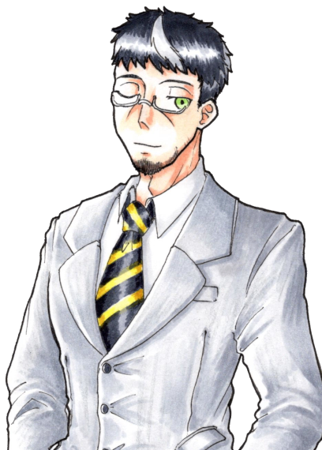
巨肩 矢委人 :
名前は巨肩矢委人(おおかたやすと)、年齢は17！
見た目は大人で中身は少年…だけど大人びてはいる子
よくチルドレンの教官と間違われるよ
でもやっぱり子供ではあるから、色々拙いところはある
カバーしてあげてほしいなって
巨肩 矢委人 :
ビルドについて
クライマックスに万色の檻で大殴りする殴りオルクス！
妖精の手もあるぜ
途中で武器が一個買えると嬉しいです
巨肩 矢委人 : 【ゆとシート】、【キャラクター登録所】
GM : 老けてるけど若いお父さん…調達についてはあとで1つ注意点がありますが全然できると思う！
GM : じゃあ次はお母さんどうぞ～
フランベルジュ : はーい！自分は更に簡潔に
フランベルジュ :
名はフランベルジュ、性は捨てた！
年齢は数百歳！Dロイス『古代種』の力でずっと幼い外見のまま生きてきました。一応UGN側で働いてるらしい。
フランベルジュ : 言動も幼いけど、どこか外見と不相応で物騒なことを口走ったりします。怖いね。
フランベルジュ :
そして現在はラウレスアレアという場所でお偉いさんやってます！詳しくはここを見てね！
https://lisp-trpg.sakura.ne.jp/upload/upl/_Mf7jA8rjFGw2SZWxZ7g/00499.html
フランベルジュ : シンドロームはピュアのソラリス。薬物の力で敵の精神を蝕み、デバフをかけるぞ！
フランベルジュ : 「そんなお母さんだよ！よろしくね！」
フランベルジュ : 【キャラクターシート】
GM : ありがとう！逆に見た目若いけど古代種でもうこの時点で雰囲気が危うい…
GM : 次は長男さん！
ヴォルグ : はーい
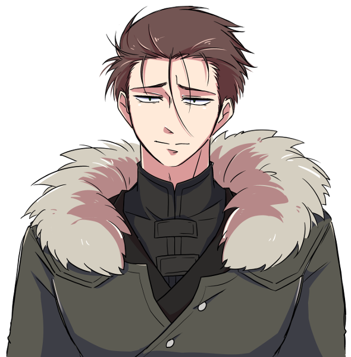
ヴォルグ :
名前はヴォルグ、年齢は32歳
雪女伝説のレネゲイドビーイングです！
元はFH寄りの情報屋、今は色々あってUGNに所属しています。
ヴォルグ : ぼんやりしているように見えて自分の損得で動き、好きな事をして好きな物を食べて生きてる。人生(?)楽しければなんでもよし！なタイプ
ヴォルグ :
シンドロームは氷特化のサラマンダーとブラム＝ストーカー
わざと攻撃を受けてカウンターをとったり自らの体力を削って戦うゾンビアタッカータイプです！
ヴォルグ : 【キャラクターシート】
GM : お兄ちゃん(32歳)おるね…お父さんがしっかりしてるけど未成年やから支えてあげてほしい…紹介ありがとう！
GM : じゃあ今度は長女さん！
クリスタ : よくってよ！

クリスタ : クリスタ=フォン=グラスマン！ 齢は15！
クリスタ : ドイツ出身の高校1年生の御嬢様ですわ！
クリスタ : 自身が貴族である事に誇りを持っていて、いつも自分磨きに余念がない女性ですの！
クリスタ : 特に"美"に関する意識の高さについては、トップモデルのソレと肩を並べるレベル！
クリスタ : それはそれはイロイロなコトを我慢して"美の頂点"への階段を昇っているのですッ！
クリスタ : ……そうした"努力"を続けてきた影響で、プライドの高いレディになっていますの！
クリスタ : また自他共に厳しいので孤高な人ですが、今回は疑似家族ができるということで！！ どういう関係になるのか愉しみですわ！！
クリスタ :
戦闘では「Dロイス：秘密兵器」等で取得したEXレネゲイド※を駆使して戦います！
※レネゲイドに感染した物品
クリスタ : RC技能で≪インビジブルハンド≫による範囲攻撃を行なう他、装甲諸々のおかげで合計43点のダメージ軽減ができますの！
クリスタ : 自分の身体は守って当然よね、だって手入れした肌が傷付くなんて許せないもの！！
クリスタ : ……そんなところですわ！
クリスタ : 【キャラクターシート】
GM : ああ、お嬢様！ご紹介ありがとうございます、一般家庭生活でのお嬢様の奮闘に期待していますわ…！
GM : 最後になりました、次女ちゃんどうぞ！
雲峰詩音 : はい！
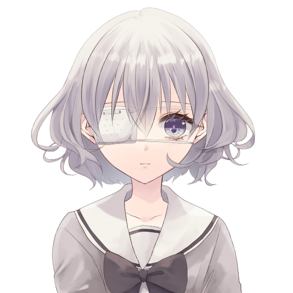雲峰詩音 : 雲峰詩音（くもみねしおん）、16歳のUGNチルドレンです。
雲峰詩音 : 《急速分解》で触れたものを灰に出来るけど、その代わりに常に周りが灰塗れになるところから、コードネームはシンデレラになりました。
雲峰詩音 : 対抗種のDロイスを持っているキャラで、オーヴァードは触れた箇所が火傷するような痛みを伴って灰化します。
雲峰詩音 : フレーバー設定だからHPダメージは無いけど、PCにも影響あるのでこのキャラに触る時には覚えといてもらえたらなって思います。一応服の上の部分ならギリ大丈夫です。
雲峰詩音 : 性格としては心に壁を作っていてあまり人と深く関わろうとしない暗い奴です。与えられた任務を成功させることだけ考えて生きてます。
雲峰詩音 : ビルドはモルフェウス/バロールのRC型で、《砂の刃》で灰を操って戦います。
雲峰詩音 : あとは《孤独の魔眼》で範囲攻撃の対象を自分一人に変更したり、≪時の棺≫で判定失敗にさせたりも出来ます。
雲峰詩音 : 以上で！
雲峰詩音 : 【キャラクターシート】
GM : 悲しい設定しとる…この卓通して人とちょっとずつでも触れ合っていってほしいね
GM : ではでは、今回はこの5人でやっていこうと思います。DX3rd『オーヴァード家族物語』始めていきます！
メインプレイ
シーン1 本物の偽物
GM : オープニングは全員登場です！
巨肩 矢委人 : 1d10＋29(1D10+29) ＞ 4[4]+29 ＞ 33
フランベルジュ : 1d10＋32(1D10+32) ＞ 7[7]+32 ＞ 39
ヴォルグ : 1d10+45(1D10+45) ＞ 7[7]+45 ＞ 52
クリスタ : 1d10+45 侵蝕率初期値でも一番ですわ～～～～(1D10+45) ＞ 10[10]+45 ＞ 55
雲峰詩音 : 1d10+33(1D10+33) ＞ 1[1]+33 ＞ 34
UGN支部 会議室
GM : とある夏の暑い日、君たちは本部エージェントである本分 英二(ほんぶ えいじ)に呼ばれ、UGN支部の会議室へと呼び出されていた。
GM : だが、君たちは任務のため呼び出しを受けたというだけでまだその内容は知らされておらず、その場には本分英二の影の形もない。
クリスタ : ……その代わり、適度に冷房が効いた会議室のテーブルには、紅茶がふたつ並んでいた。
クリスタ : ふたつの紅茶を挟んで向き合うのは、ふたりのオーヴァード。
クリスタ : ──ひとりは、まるで御伽の国から来たプリンセスのような、それはそれは美しい少女。
クリスタ : 髪は金糸、肌は真珠、瞳は水晶。 ここに吟遊詩人がいたなら、そのように謳っただろう。
クリスタ : 「(……時間には可能な限りのヨユウをもって来たけれど、呼び出し人の姿はなし)」
クリスタ : 「(代わりに待ちあわせ場所にいたのは、矢鱈と背の高い男が一人、と)」
クリスタ : 「(……このワタクシをよびだしておいて失礼)」
クリスタ : 「(というか！ こんな背の高い日本人いますの！？ ソファが小さく見えますわよ！？)」優雅に紅茶を啜りながら、目の前の巨漢を観察する
ヴォルグ : クリスタの視線を感じつつ紅茶を飲んでいる、声を掛けようかとも思ったが今は他の面子を待った方がいいだろうと判断し、素知らぬフリをしている様子
ヴォルグ :
「（待たされるのは慣れてるが…気まずいな。）」
そっ…と視線を合わせないようにしながら
巨肩 矢委人 : ふと、規則正しいノックの音がする
クリスタ : 「……？ 本分様の御到着かしら？」チラ、と扉に目をやる
ヴォルグ : 心なしかホッとした様子で扉を見る
巨肩 矢委人 :
「失礼致します」
身長にして約180cmという長身のスーツの男が入って来る
クリスタ : ガシャン、とそこそこ大きな音を立ててティーカップを置く
クリスタ : 「(また巨体のオジサマ！？！？)」
ヴォルグ :
「！」
僅かに目を丸くして大きな音を立てたティーカップとクリスタを交互に見る
巨肩 矢委人 : 「！？…ええと、どうかしましたか？」
クリスタ : 「……いえ、なんでも」平静を装う
クリスタ : 「あなたは……本分様から言伝でも預かってきたのかしら……？」呼びだされたのは自分だけだと思っているので、遣いのエージェントだと勘違いしている
巨肩 矢委人 : 「？ ええと、失礼致しました。UGNチルドレン、"オーリーオーン"巨肩矢委人、到着致しました。自分は本部からの伝言は託かってはいませんが…」
クリスタ : 「UGNチルドレン？」
クリスタ : 「(……ああ、いえ、聞き間違いよね、聞き間違いだわ)」
クリスタ : 「それでは、あなたはどうして此処に？」
巨肩 矢委人 : 「はい、自分はエージェント・本分に召集を受けました」
クリスタ : 「……あなたも、本分様から召集を？」
クリスタ : 「では、あなたも？」ヴォルグ君に視線を移し
ヴォルグ : 「俺もエージェント・本分から召集を受けた。人数以外の内容は聞いていないがな…」
クリスタ : 「…………」
クリスタ : クリスタはごくごくごくと紅茶を一気に飲み干して、叩きつけるようにカップを置きます。
クリスタ : 「(どういう人選なの！？！？！？！？)」
クリスタ : 「(この麗しいワタクシと、あの巨漢二人がバディってコト！？！？！？！？！？)」
巨肩 矢委人 :
「(何か言いそうだけど何も言わないな…)」
固唾を呑んで見守っている
ヴォルグ :
「…ということはあと２人だな。」
落ち着きのない様子を暫く眺め、軽く咳払いをして漸く口を開いたかと思えば手帳を確認しながら呟く
クリスタ : 「あと二人！？ まだいるの！？」思わず声を出す。 巨漢が更に二人まとめて出てくる様子をイメージしているらしい。
巨肩 矢委人 : 「…？人数は私含めて5名という連絡は受けていたような…詳細は伝達されていませんが…」
クリスタ : 「……ワタクシのところに、そのような連絡はありませんでしたわ」
巨肩 矢委人 :
「んん…！何か考えが…」
苦しいフォロー
ヴォルグ :
「（伝達ミスか…？）」
手帳の伝達内容にも軽く不信感を抱きつつ
雲峰詩音 :
三人がそうしていると、部屋の片隅に異変が起きる。
縦横2m程度の空間が灰色に染まり、砂のようにサラサラと崩れて穴が空いたのだ。
ぽっかりと空いたその穴の中から、一人の少女が姿を現す。
雲峰詩音 :
「……失礼します」
《ディメンジョンゲート》を使い、空間を超えて部屋の中に入って来る。
クリスタ : 「……！」
クリスタ : 「(いきなり出てきて吃驚しましたが、女性です…！ 女性ですわ…！！)」一瞬だけ驚くが、すぐに胸を撫でおろす
雲峰詩音 : 「えっと……」 部屋の中を見渡して、本分がいないことを確認
雲峰詩音 : 「わたしは、任務に呼ばれて来たのだけど……」
巨肩 矢委人 : 「エージェント本分から招集を受けた方ですか？」
雲峰詩音 : 「はい……」 頷く
クリスタ : 「(しかし陰気な方ですわね……、しかも怪我人じゃありませんの……、本分様は本当に何を考えてらっしゃるのかしら……)」
巨肩 矢委人 : 「でしたら…まだご本人が到着していないようですので、おそらく待機になるかと思われます」
雲峰詩音 : 「そうなんですね……分かりました」
ヴォルグ :
後からきた２人を見ながら席を立ち、ソファを指し示しながら
「その場で待つわけにもいかないだろ、紅茶でも飲むか？」
雲峰詩音 :
「あ……えっと、はい。じゃあ、お願いします」
ソファの方に移動する。その場から離れると空間に空いた穴は自動的に元に戻った。
巨肩 矢委人 :
「あぁ、ありがとうございます。では自分も失礼して…」
自分もソファへ移動しよう
フランベルジュ : そんな和やかな雰囲気に水を差すように、扉の向こうから『パタパタ』『ガラガラ』と騒がしい音が聞こえる。
フランベルジュ : その騒音は扉の前で止まり、扉が開かれた。
フランベルジュ :
「おーまーたーせー！わっ、もうみんな揃ってる！」
大きなスーツケースを引いて、元気よく部屋の中へ入る。
雲峰詩音 : 「……！？え……」 肩を小さく震わせてそちらを見る
巨肩 矢委人 :
「おお…」
すごい方が来たなぁという反応
ヴォルグ :
スーツケースとお土産袋を抱える少女を見て
「…観光でもしてきた？」
フランベルジュ : 「そうなの！久しぶりの日本だから、行きたい所がたくさんあって……」
巨肩 矢委人 :
「ん？ええと、今からここは会議で使用するんですが…」
間違えて来た説を思い浮かべる
フランベルジュ :
「あっ、紅茶飲んでる！丁度お土産でクッキーを買って来たの、一緒にどうぞ！」
ぱぱっと缶に入ったクッキーを取り出して
雲峰詩音 : 「いえ、あの……あなたは……？任務で来たエージェント……のようには見えない、ような……」
フランベルジュ : 「あ～、迷い込んだ子供って思ってるでしょ～？私はちゃーんと本分くんに呼び出されてきてるのよっ」
クリスタ : 「(巨漢……、少女……、女児……)」
クリスタ : 「……これは、悪い夢、かしら」
雲峰詩音 : 「えっ……そ、そうなの」
ヴォルグ :
はいはいと慣れた様子で追加の紅茶を並べながら
「オーヴァードには良くあることだ。」
巨肩 矢委人 : 「なる、ほど……？(この間習った古代種か…？あるいは純粋に年齢が低いだけなのか…)」
フランベルジュ :
「そうそう、それと自己紹介ね！」
「私の名はフランベルジュ！コードネームは"ドレッドフル"、いつもはラウレスアレアってところでお仕事してるの。遊びに来る時は連絡を頂戴！」
ふんすっ、と胸を張って自己紹介
クリスタ : 「ラウレスアレア…！？ 本当にあんなところで仕事をしているっていうの…？」
巨肩 矢委人 : 「丁寧にありがとうございます。申し訳ありませんが、ラウレスアレアというのは…？」
ヴォルグ : 「そりゃまた遠方から…」
ヴォルグ : 矢委人にラウレスアレアの簡単な説明をします。
クリスタ : 「……軽い説明でも十二分に理解できたと思うけれど、遊びに行くのは冗談のつもりでも止めた方がいい場所よ」
巨肩 矢委人 : 「ええ、自分が行ったところで何がどうなるような場所ではなさそうですね…そこで仕事をしていらっしゃると言うことは、相当なキャリアを積んで…？」
雲峰詩音 : 「でも幼く見えるけれど、UGNチルドレンなの……？」
フランベルジュ :
「私の庇護下なら大丈夫。手を出す人がいたら…それは命知らずさんね？」
「ううん。UGNエージェントよ？これで数百年は生きてるんだからっ♪」
再びエヘンッと胸を張って
フランベルジュ : 「あっ、キャリアらしいキャリアは調べても出てこないと思うよ。そういう役職なの、私」
雲峰詩音 : 「数百年……もしかして、古代種のオーヴァードかしら……」 小声で呟く
巨肩 矢委人 : 「数百…となると、古代種と呼ばれるレネゲイドを有しているんですね。なるほど…いえ、納得しました。……これで全員が揃いましたか」
ヴォルグ :
「揃ったみたいだな…伝達ミスがなければ。」
部屋にいる人数を軽く数える
クリスタ : 「これで全員？ そうかしら？」
クリスタ : 「……最重要人物がひとり遅れているようだけれど」
フランベルジュ :
「ああ～、本分くんがいなーい！」
部屋をぐるりと見回して
GM : と、そこで廊下の方から近づいてくる足音がする。
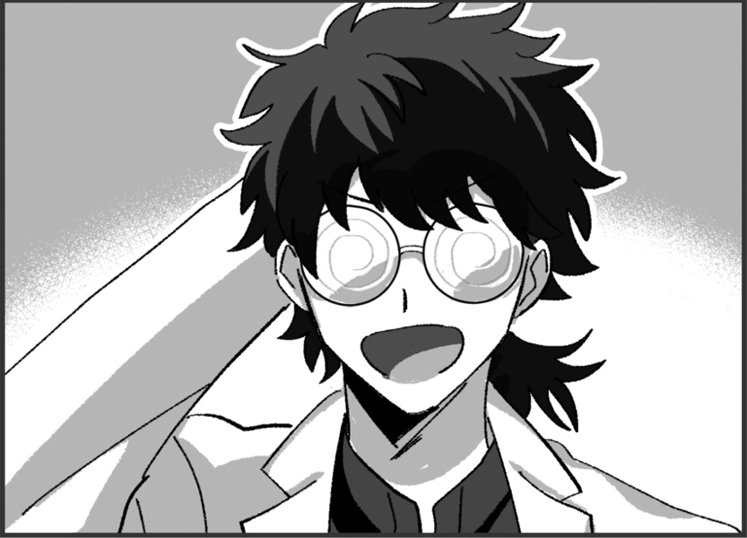本分 英二 : 「どうもどうも、遅れてすみません」
本分 英二 : 扉を開けてバタバタと入ってくる一人の男。瓶底メガネにヨレヨレの白衣、本分英二その人だ。
クリスタ : 「……あら、ウワサをすれば」
クリスタ : 「随分と重役出勤でしたわねぇ、本分様？」キッと刺すような視線を飛ばす
フランベルジュ :
「やっほー、本分くん。道端でお婆ちゃんでも手助けしてたのかな？」
笑顔で出迎える
本分 英二 :
「いやぁ、それがここに来る途中で犬の尻尾を踏んで怒らせてしまいまして！運が悪いこともありますよね」
ヘラッと笑ってみせる
クリスタ : 「犬の尻尾……ねぇ……」
雲峰詩音 : 「それは……よく分かりませんけど、わたし達も今さっき揃ったところなので、気にしないでください」
クリスタ : 「いえ！ いいえ！ 気にしてもらわないと困ります！」
クリスタ : 「ワタクシの一分一秒は貴重なのですから！」
雲峰詩音 : 「そうなの……？でもあなたの時間の価値なんてよく分からないわ、ごめんなさい」
クリスタ : 「………………」
フランベルジュ :
「あははっ！そうだよね。人の価値感なんてそう簡単にわからないよね！」
ケラケラと笑いを零して
クリスタ : 「──ああ、そう。 もういいわ、怒る気も失せた」
巨肩 矢委人 : 「(この方々と作戦行動か…彼女らもプロだ、流石に真面目にやってくれるだろうけど…頭が痛いな…)」
ヴォルグ :
"あーあ…"と言いたげな顔で少女達を見る
「…流石に任務の用件は忘れていないよな？」
ヴォルグ : こじれる前に話を逸らしてしまおうと説明を促す
クリスタ : 「……そうね、この取り留めのないメンバーが集められた事情等について説明を」
本分 英二 : 「はい！今回皆さんには任務の依頼があって集まっていただきました」
本分 英二 : 「このメンバーが集められたのには深い深ーい訳があるんです。早速任務の詳細からお話させていただきましょうか」コホンと咳払いを1つする
雲峰詩音 : 「お願いします」
本分 英二 : 「えー……まず、この日本に“パパラッチ”というコードネームのFHエージェントがいまして」
本分 英二 : 「そのパパラッチがUGNから機密情報を盗み逃走。それを取り逃がしたのがつい先日のことです」
雲峰詩音 : 「……じゃあ、わたし達はそのFHエージェントを倒して情報を奪い返せばいいのでしょうか……」
本分 英二 : 「その通りです！いやぁ、理解が早くて助かります」
フランベルジュ : 「ふーん、なんだか普通の任務だね。やっぱり殺しておいた方がいいの？」
巨肩 矢委人 :
「普通の任務……先ほど人選に深い理由が、と仰られていたので、少し勝手が違うのでしょうか？」
と先を促そう
ヴォルグ : 「わざわざ外部からも召集を掛けたんだ、思ったより簡単じゃなさそうだな…？」
雲峰詩音 : 「……やむを得ない場合はそうなるかもしれないけど、基本的には確保した方が良いと思うわ……ドレッドフル」 話を妨げないように、フランベルジュに小声で言う
フランベルジュ :
「そっか、優しいね！」
ひそひそ
雲峰詩音 : 「優しいとか、そういうのじゃないと思うけど……」
本分 英二 :
「そうなんです。重要なのはここから先でして～…」
巨肩君、ヴォルグくんに答えて
本分 英二 : 「そのパパラッチですが、薄雲市に所属するとある団地に逃げ込んだ可能性が高いことが分かってます！」
雲峰詩音 : 「居場所の見当はついているんですね……それなら話が早そう」
ヴォルグ :
「薄雲市か…」
FHの考える逃げ場らしいなと頷く
本分 英二 : 「それが簡単に行かない理由があるんです！」ヴォルグさんはご存知ですかね、と続けつつ
本分 英二 : 「まず、何故パパラッチがその団地に潜んでいる可能性が高いかという根拠からお話しますが…」
クリスタ : 「続けて？」
本分 英二 : 「えー…パパラッチには そのですね、特殊な癖がありー……」
本分 英二 : 「所謂下着泥棒としても知られている変態です」
巨肩 矢委人 :
「………はぁ」
呆れたというか驚いたというか…の顔をする
フランベルジュ : 「変態さんだーっ！」
雲峰詩音 : 「…………」
ヴォルグ : どう反応すべきか困った顔をしている
クリスタ : 「……それで？」軽蔑の表情を隠さず
本分 英二 : 「はい、パパラッチの逃げたと思われる方角と、最近下着泥棒が発生しているという情報からパパラッチはその団地を根城にしている可能性が高いと判断された、というわけです！」
巨肩 矢委人 : 「(アホ…？)」
本分 英二 : 「そこでー……」
本分 英二 : 「君たちには一般人にもパパラッチにも怪しまれないよう、目立たぬように団地に一週間『家族として』潜入任務をしてもらうことになりました！」
本分 英二 : いかにも名案といった風な顔をしながらとんでもないことを口走る本分。
クリスタ : 「ああ、なるほどそれで」
クリスタ : 「────はあ！？！？！？！？！？！？」
巨肩 矢委人 : 「…はぁ？」
フランベルジュ :
「わあ、家族！」
キラキラと笑顔を浮かべて
ヴォルグ :
「……ん？」
唐突な任務の内容に疑問符を浮かべて固まる
雲峰詩音 : 「…………か、ぞく？」 スカートの裾から、サラ……と灰が零れる
本分 英二 : 「はい！皆さんには家族のふりをして件の団地に潜入していただきます。もちろん周囲にはバレないように」
クリスタ : 「そんなの言いなおさなくても分かってるわよッ……！！」
巨肩 矢委人 : 「そのう、何が何だか…」
雲峰詩音 : 「家族……」 体の周りに灰が漂い始める
ヴォルグ : 「人選はこれで合ってるのか…？」
フランベルジュ :
「わあ、とっても素敵ね！それでこの5人が……」
改めてみんなをじっくりと見回して
巨肩 矢委人 : 「まぁ、そうですね…この中に変身能力をお持ちの方が…？自分はそういったものはさっぱりなんですが…」
本分 英二 : 「ええ。皆さんになら素敵な家族を演じていただけると思ってお呼びした次第です、はい！」
クリスタ : 「……ふざけているのかしら？ 本部エージェントの判断とは俄かには信じられないのですけど」
ヴォルグ : 「本人は至って真面目の様だが…」
巨肩 矢委人 : 「話が…見えてきませんね…」
巨肩 矢委人 : 「いや、もうすでに全容が見えている…？」
フランベルジュ :
「私は賛成だよっ！"ファミリー"じゃない家族を作るのとっても楽しみ！」
機嫌よく足をぱたぱたさせて
雲峰詩音 : 「……あの、別に団地に潜入しなくても、薄雲市のUGN支部を拠点にして調査を進めればいいんじゃないでしょうか……？」
本分 英二 : 「雲峰さんの意見は最もだと思います！ですが、それがそうもいかない事情がありまして……」うんうんと頷きながら
クリスタ : 「……事情？」怪訝な顔で
雲峰詩音 : 「……？」 首を傾げる
本分 英二 : 「単刀直入に言いますと、存在しないんですねーUGN支部が。向こうの警察とUGNとの間に軋轢がありまして…このような事件に発展していてもこちらからの介入が難しいんです」
雲峰詩音 : 「あぁ、なるほど……」
雲峰詩音 : 「……じゃあ、分かりました。その……家族、の設定で潜入します」
クリスタ : 「少しはマトモな事を言うかと思ったら、アナタまで何を言い出しますの！？！？」
雲峰詩音 : 「だって……そうするしかないなら仕方ないわ。それに、本部のエージェントの判断なら不可能ではないということだと思うから」
ヴォルグ :
「それで、仮住居は手配してあるのか？それぞれ役割は？」
あっさりと受け入れた様子で
巨肩 矢委人 :
「ええ…？こういった任務ってよくあるものなんですか…？」
あまりにも素直に聞き入れる人が多い！
ヴォルグ :
「さぁ…？俺は初めてだが、なかなか楽しそうじゃないか？」
肩を竦めてみせる
フランベルジュ :
「うんうん。たまにはこういう任務も良いんじゃないかなっ♪」
賛成派の人達に頷く
本分 英二 : 「部屋は手配済みです！どういう家族設定で行くかは皆さんで話し合ってください」
クリスタ : 「話し合う！？ それ以前の問題でしょう！！」ダン、と机を叩いて立ちあがる
クリスタ : 「この任務に乗り気なアナタ達！ 今一度、此処に集められたメンバーを御覧になって！？」
巨肩 矢委人 :
「(すごい勢いだ…)と、言いますと…」
周囲を見回してみる
雲峰詩音 : 「……確かに、家族で通すには難しそうな気もするけれど」
雲峰詩音 : 「嫌ならやめればいいと思うわ。嫌々手伝われて足を引っ張られても困るし、あなた一人位ならいなくても多分問題ないと思うから」
クリスタ : 「(この女～～～～～～！！！！！！)」
クリスタ : 「……はぁ、よくよく聞いてくださるおばかさん？」息をはいて怒りを鎮め
クリスタ : 「あのね、ワタクシは感情的な忌避感などでそう言っている訳じゃないの」
雲峰詩音 : 「そうなの」
クリスタ : 「そうなの」
クリスタ : 「だって、それ以上に大きな問題がひとつあるでしょう？」
雲峰詩音 : 「……？」
クリスタ : 「それはね」
クリスタ : 「あまりにもワタクシが美しすぎる！！！！！！」
クリスタ : 「という深刻な……」
巨肩 矢委人 : 「ん…？」
雲峰詩音 : 「……どういう意味？何を言ってるのかよく分からないわ」
フランベルジュ :
「顔はとっても綺麗だよね～、私も負けてないと思うけど！」
《麗しの容貌》のぷにぷにフェイス
ヴォルグ :
話半分に聞き流しながら
「…母親役は無理そうだな、とはいえ後のふたりも若すぎるか。」
巨肩 矢委人 : 「その…容姿が美しい…という点では…否定は決してしませんが、それとこれとにどういった問題が…？」
クリスタ : 「……おばかさんは分からなかったようですから、嚙んで含めるように丁寧に教えてさしあげましょう」
クリスタ : 「ワタクシ、優しいので」
クリスタ : 「──あのね？ ワタクシが美しすぎるせいで、アナタたちと血が繋がっているなんてムリがありすぎるでしょう？ 人種だって違うわ？」
雲峰詩音 : 「……あぁ、そういうこと」
巨肩 矢委人 : 「人種という点でなら、確かに。髪色は染めているという言い訳が効くと思いますが…」
雲峰詩音 : 「じゃあ、やっぱりあなたはやめた方が良いと思うわ。そうすれば何とかなるってことなのよね？」
巨肩 矢委人 : 「いえ、それは…あくまで我々5人を作戦に召集した以上、我々判断での離脱は選択肢として無いのではないでしょうか」
雲峰詩音 : 「……駄目か。じゃあ、どうすればいいんだろう……」
巨肩 矢委人 :
「と、言うような問題があるのですが…エージェント・本分、問題無いのですか？」
本分さん見よう
ヴォルグ :
「？」
（あまり違いが分からない…）と言いたげな顔で一同の顔を眺めている
本分 英二 : 「人種についてはハーフという設定でいかがでしょう！僕も1人だけ海外の方だと不自然だと思ってたんです。でも、フランベルジュさんとかヴォルグさんとかもいますし」屈託のない笑顔で笑ってみせて
本分 英二 : 「それにほら！クリスタさん、目の色だって雲峰さんとよく似ていますし並んだら姉妹に見えてきませんか？」うん、見える見える！と一人納得したように頷いている。
巨肩 矢委人 :
「ハ、ハーフ…！確かに通らない理屈ではありませんが…！………そう、ですね……本部エージェントである本分さんがそう仰る以上、その作戦で問題は無いの……でしょうか…」
自信なさげ
ヴォルグ :
「美人…？がどう影響するかは分からないが、それなら母親役か父親役どちらかに海外の人種を配属すべきだろうな。」
エージェント・本分の言葉に頷きながら
巨肩 矢委人 :
「ええ、そうですね。母親役を希望される方はいらっしゃいますか？」
既に作戦に取り込まれている
フランベルジュ :
「はーい！はいはーい！私っ！」
ピョンッ！と腕を伸ばす
クリスタ : 「…………」母親役をしようという童女を見て
クリスタ : 「紅茶、御馳走様」
クリスタ : 「これから私はマッサージに……」ふらりと疲れたように出口に向かう
雲峰詩音 : 「分かった、それじゃ……」 見送る構え
フランベルジュ :
「わーっ！待って待って！」
出口に先回り
ヴォルグ :
「……」
困ったように口元に手を当てて考えている
クリスタ : 「はあ……あのねえ……」
クリスタ : 「……まずは本分様が言った『ワタクシとその女の瞳が同じ色』という話だけど」
クリスタ : 「深紫と薄藤を、同じ"紫"で括らないでもらえるかしら」
クリスタ : 「何より似ても似つかないわ」
雲峰詩音 : 「あなたの方が美人だから？」
クリスタ : 「その通りよ、少しは……」
雲峰詩音 : 「じゃあ、不細工に見えるように変装するのはどう……？」
クリスタ : 「いいえ、やはりバカでしたわ、この子……」
雲峰詩音 : 「良いと思ったんだけど……駄目か……」
クリスタ : 「宝石を泥水で覆うほどの愚行ですわ」
クリスタ : 「──それと、そこの子供が母親になるという話」
クリスタ : 「古代種だかなんだか知らないけれど、もう意味が分かりませんわ」
フランベルジュ :
「ふふ、そうだよね。よくも知らない相手と家族になれ。だなんてちょっと無理があったよね。」
首をかしげてニコニコ
クリスタ : 「いえ、ワタクシは"ハロー効果"でも言われている通り、人間は見た目が90％だという話を……」
ヴォルグ :
「一旦、自己紹介でもして見極めるか？」
名前も年齢も知らないだろう、と提案してみる
フランベルジュ : 「そうっ！まずはお互いをよく知るところから始めましょう？思い返してみれば、私しか名乗ってないし！」
フランベルジュ :
「ね、だからもう少しお話していかない？お顔の良い人？」
クリスタ嬢を見上げるようにニッコリと微笑んで
クリスタ : 「……はあ」
クリスタ : 「仕方ないですわね、もう少しだけワタクシの時間を恵んでさしあげましょう」再びソファに座り
フランベルジュ : 「ありがとう！優しい人だって信じてたわ！」
ヴォルグ :
「…どうも。じゃあまずは俺からだな」
ソファに座った姿を見て穏やかに礼を言うと自己紹介を始める
ヴォルグ : 「コードネームは“フェンリル”、名前はヴォルグだ。言い忘れていたがレネゲイドビーイングでな…"家族"というものは役割以外よく分かっていない。」
クリスタ : 「レネゲイドビーイングね、それを聞いて腑に落ちたわ」
クリスタ : 「……だって、明らかに日本人の体格じゃありませんもの」
雲峰詩音 : 「何センチあるの？」
ヴォルグ : 「最後に測った時は確か…210…？だったな」
雲峰詩音 : 「大きい……」
巨肩 矢委人 : 「210cm…規格外ですね…なるほど、レネゲイドビーイング…」
フランベルジュ : 「おっきい狼さんね…。うん、それじゃヴォルグくんもよろしくね！」
ヴォルグ :
「ああ、宜しく」
次は誰が紹介する？と順番に眺めて
フランベルジュ :
「それじゃあ改めて私から！」
コホン、と軽く咳払い
フランベルジュ : 「コードネームは"ドレッドフル"、名前はフランベルジュ！数百年前に古代種に感染しちゃってからずっとこの見た目なの、わあ大変。」
フランベルジュ : 「今回はラウレスアレアから緊急来日！みんなと仲良くできれば良いな！」
雲峰詩音 : 「さっきも少し聞いたけど、本当に古代種なの……？年齢的には母親でもいける……の、かしら……」
フランベルジュ : 「任せてっ、人をまとめる役割には慣れているの！家族は初めてだけどね？」
巨肩 矢委人 : 「よろしくお願いします。あくまで"年齢的には"では…ですね。それでも離れすぎてはいますが…」
クリスタ : 「……この際ですから、ひとつ気になっていたコトを尋ねてもよろしいかしら？」
フランベルジュ : 「よろしくてよ！」
クリスタ : 「あなた、ラウレスアレアから来たと言っているけれど出身は別でしょう？」
クリスタ : 「一見して下品にも見える振る舞いの節々に垣間見える、その育ちのよさ」
クリスタ : 「──何処の"家"の出？」
フランベルジュ :
「わあ、そんなこと聞いて来る人ホントに久しぶり！」
両手で頬を押さえ、オーバーなリアクションを見せる
フランベルジュ : 「そう、私も昔は貴族だったの。でも覚醒したら気味悪がられて絶縁されちゃった！あははは！」
クリスタ : 「……そう」
クリスタ : 「それは失礼な事を聞いたわね、スナオに非礼を詫びるわ」
雲峰詩音 : 「え……」 詫びている様子を見て少し驚く
フランベルジュ :
「ううん。気にしないで？私の事を知ろうとしてくれて、とっても嬉しいわ！」
「こそこそ調べようとしてくるのは別だけど（小声）」
フランベルジュ : 「それじゃあ、貴女のことを教えて？一番目立っていたから早く知りたいの！」
クリスタ : 「ええ、いいでしょう」失礼な視線を投げている女が約一名いますわね、と内心おもいつつ
クリスタ : 「ワタクシの名は、クリスタ=フォン=グラスマン！」
クリスタ : 「ドイツの名家、グラスマン家の正統なる血統を引く"貴族"ですわッ！！」
雲峰詩音 : 「お嬢様なのね……」
クリスタ : 「ええ、だから高貴なるワタクシの時間は貴重なのです」
クリスタ : 「せいぜい言葉を交わしてもらえる事に感謝なさい？」
雲峰詩音 : 「それはあんまり分からない」
クリスタ : 「この子はまたッ……！！」
ヴォルグ :
「まぁまぁ」
続けて、と言いながら
フランベルジュ :
「よろしくね！貴族仲間だね！」
きゃっきゃ
クリスタ : 「現役貴族であるワタクシとアナタは仲間では……」
クリスタ : 「というか、よろしくってなんですの！？ よろしくって！？」
クリスタ : 「ワタクシ、まだ疑似家族になるつもりはありませんわよ！？！？」
巨肩 矢委人 : 「その判断をするために自己紹介をする、という話でしたね。次は自分でよろしいですか？」
雲峰詩音 : 「あとは……わたしもまだか……。大丈夫です」
巨肩 矢委人 :
「では自分が。挨拶が遅れて申し訳ありません、コードネーム”オーリーオーン”、巨肩矢委人と申します。現在はUGNチルドレンに在籍しています」
行儀よく、お辞儀をするでしょう
雲峰詩音 : 「…………？？？」
雲峰詩音 : 「あ……UGNチルドレンの、教官……ってこと？ですよね……」
ヴォルグ : 「チルドレン…ということは、幾つだ…？」
巨肩 矢委人 :
「はい、数えて17、教官に間違われた回数は…最初は友人間で共有して楽しんでいましたが、もう数えていません」
苦笑い
クリスタ : 「はあ！？！？！？！？！？ 17！？！？！？！？」
フランベルジュ : 「すごーい、もう成人してるのかと思っちゃった！ある意味で私と逆だね！」
雲峰詩音 : 「み……見えない……」
巨肩 矢委人 : 「そうですね…一応、変異種のレネゲイドを有していますから、その影響かと検査したんですが……ただの体質、もとい特徴でした」
ヴォルグ : 「ふむ、同世代だと思っていたが…かなり若年層が固まっているな…」
クリスタ : 「……ねぇ、悪い魔女に老化魔法でもかけられたんじゃないの？」
巨肩 矢委人 : 「いえ、生まれて一度も悪い魔女にお会いしたことはないですね…遠隔から干渉されているならまだしも…」
クリスタ : 「そう……同情するわ……可哀想ね、あなた……」
雲峰詩音 : 「そうかしら……。驚いたけど、老化してるわけじゃないなら可哀想ではないと思うけれど」
巨肩 矢委人 : 「そうですね、幸い…自分で言うのもなんですが、真面目ぇ…と呼ばれる性格をしているので、あまり苦労をしたことはありません」
フランベルジュ : 「大変だね～。でも私、かっこいいと思うな！イブシギン？だっけ？そんな感じ！」
巨肩 矢委人 : 「いぶし銀…ですか、ありがとうございます」
ヴォルグ : 「大人びて見えるのはこの仕事においてメリットと捉えて良いだろうな…、改めてよろしく。」
巨肩 矢委人 : 「はい、よろしくお願い致します」
本分 英二 : 「自己紹介、大事ですよね！いやぁ、僕もうっかりしてましたすみません」
本分 英二 : 「それでは、次に役割分担の方をー……」
フランベルジュ : 「ちょっとー！まだ1人残ってるよー！」
ヴォルグ : エージェント・本分を見ながら詩音を手で指し示す
クリスタ : 「あらあら、これまた可哀想ですわね……あまりに存在感がないから……」
雲峰詩音 : 「……そうね。わたしは影が薄い方だと思うから、仕方ないわ」 あまり気にしていない
クリスタ : 「(……えっ、煽ったのに何！？ 何なの、この子のメンタリティ！？)」
雲峰詩音 : 「……じゃあ、えっと」
雲峰詩音 : 「雲峰詩音。コードネームは“シンデレラ”で、16歳のUGNチルドレン」
雲峰詩音 : 「あとは……」
雲峰詩音 : 「…………」 続けようとするが、不安を表わすように周囲に灰が舞い散っていく
雲峰詩音 : 「以上よ」
クリスタ : 「はあ……？ 本当に何なの……？？？？」
クリスタ : 「っていうか、さっきから灰を撒きちらしてるのアナタね！？ やめて頂戴！？」肌が汚れるから！
巨肩 矢委人 :
「確かに、先ほどから灰が…雲峰さんがこれを？」
肩の灰を払って
フランベルジュ :
「わあ、灰かぶり姫ってことね！もう少し話してくれても大丈夫だよ！」
ぽんぽんと灰を払う
雲峰詩音 : 「……ごめんなさい。でも、勝手に出てしまうの。出来る限り抑えたり、隠すようにするから……」 申し訳なさそうに目を伏せる
巨肩 矢委人 :
「不可抗力でしたか。であれば問題ありませんね」
気にしない気にしない
ヴォルグ :
「何か気になることがあれば予め聞いておきたい、関係上かなり密な任務になりそうだしな。」
申し訳なさそうな様子を宥めるように聞いてみる
雲峰詩音 : 「……いえ、他に気になることは……無いわ」 逡巡してからそう言う
雲峰詩音 : 「何を言えばいいか、分からなくて……少し悩んだだけ」
クリスタ : 「……ああ、そう」言いたくないならいいわ、のメンタリティ
ヴォルグ :
「そうか、何か思い出したら遠慮なく言ってくれ。」
思い付かない様子に無理強いはせず疑似的でも家族だしな、と頷く
雲峰詩音 : 「……えぇ」 頷く
クリスタ : 「それより、その灰は"勝手に出てしまう"らしいけど」
クリスタ : 「それって、自身のレネゲイドコントロールがキチンと出来ていないってコトじゃない？」
クリスタ : 「アナタみたいな人とチームを組んで大丈夫なの？」
フランベルジュ :
「本分くんが選んだエージェントだし…大丈夫……なんじゃ………ない………かなぁ………？？？」
徐々に首が傾いていく
巨肩 矢委人 :
「私が言っては説得力が無いかもしれませんが、そこはチルドレン…エージェントの候補生ということでどうか。無論、その立場に甘んじる意図はありませんが」
同じチルドレンやし庇いたいなって
巨肩 矢委人 :
「先ほども、エージェント・本分の提案した作戦にすぐに肯定の意志を表しましたし…今までも、作戦自体は問題無く成功させてきたんですよね？」
雲峰さんに確認するように
雲峰詩音 : 「……そうね。戦闘をする分には、問題はないから……」
クリスタ : 「ふぅん……？ 戦闘をする分には、ねぇ……？」
雲峰詩音 : 「迷惑をかけてごめんなさい。足は引っ張らないようにする、から……」
クリスタ : 「…………」
クリスタ : 「(これじゃあ、まるでワタクシがイジメてるみたいじゃない……！)」
クリスタ : 「はああ……申し開きをするなら"迷惑をかけてごめんなさい"ではなく"迷惑をかけないようにするから"って言いなさいよ……」思いなおして優しい御嬢様に軌道修正する
雲峰詩音 : 「……分かった。出来るだけ、迷惑をかけないようにする」 こくんと頷く
フランベルジュ : 「うんうん。前向きなのは素敵なことだね！一緒にがんばろっ！」
雲峰詩音 : 「えぇ。よろしくお願いします」
本分 英二 : 「すみません、飛んだ失礼を……今度こそ皆さん自己紹介終わりましたかね？」5人の様子を確認しつつ
本分 英二 : 「では、本題に移っていきましょうか！」
雲峰詩音 : 「いえ。役割分担……でしたっけ」
クリスタ : 「ああ、そろそろ皆様に役を割り振る……」
クリスタ : 「って、ちょっとお待ちになってくださる！？！？！？！？」
フランベルジュ :
「わあっ」
びっくりして跳ねる
雲峰詩音 : 「叫ぶのが好きね、あなた」
クリスタ : 「好きで叫んでませんわよッ…！！」
巨肩 矢委人 : 「まだ何か…」
本分 英二 : 「はい、クリスタさん！どうかされました？」
クリスタ : 「一瞬だけ流されそうになりましたが、ワタクシは疑似家族になるなんて言った覚えはないのですけど！？」
本分 英二 : 「あれ、そうでしたっけ？すっかり馴染んでいたのでてっきり引き受けてくれるものかと」キョトンとした様子で
クリスタ : 「ぜんぜんまったく馴染んでませんわよッ……！！」
クリスタ : 「はあ……はあ……、普段、大きな声を出さない分、ムダに疲れましたわ……」
巨肩 矢委人 : 「恐らく、美しさとは少し遠いものでしょうからね…」
クリスタ : 「──あのね、本分様！」
クリスタ : 「人選に関する問題は、いったん棚に上げておくとして……」
クリスタ : 「このワタクシが、疑似とはいえ下民と家族になるなんて！」
クリスタ : 「それも、わざわざ変態に接触しなければならないなんて！」
クリスタ : 「相応の報酬がなければ、まったく割に合いませんわ……！！」
本分 英二 : 「相応の報酬！なるほどなるほど…では、報酬があれば話は別ということですね？」
クリスタ : 「え……？ まあ……、些か現金な気もするけれど、そうなるかしら……？」
本分 英二 : 「ふむ、わかりました！」大きく頷いて
本分 英二 : 「それでは、可能な限り皆さんの要望に沿った報酬を用意させていただきたいと思います。これでも本部エージェントですから」いかがでしょう？と
クリスタ : 「な……」
クリスタ : 「(待ちなさいクリスタ、焦ってはいけないわ……)」
クリスタ : 「(ここで法外な報酬を要求したら、代わりにワタクシという人間の価値を貶めてしまうコトになりかねない……)」
クリスタ : 「──そういうコトならば、遠慮なく要望を言わせていただきましょう」
クリスタ : 「ひとつは日本に点在する、手付かずの"遺産"に関する情報」
クリスタ : 「もうひとつは"遺産探索局"への口利き」
クリスタ : 「……そんなところね、この二つの報酬は用意できるかしら？」
本分 英二 : 「なるほど、いいでしょう！そちらの二つ、任務が終わる1週間後までに僕が手配しておきます」
クリスタ : 「ま、本当に？」
クリスタ : 「(この方、本部エージェントだったんですのね……)」
本分 英二 : 「ええ、それはもちろん！任務を遂行しパパラッチを確保した報酬としてお約束しましょう」
クリスタ : 「……そういうコトなら、その話、受けてさしあげましょう」
クリスタ : 「日本支部は人材不足のようだし？ 困っている人を助けるのは、貴族の義務ですし？」
雲峰詩音 : 「義務というなら、報酬なんていらないって言いそうなものだけど……」
クリスタ : 「黙らっしゃい……！！」
雲峰詩音 : 「分かった」 黙る
クリスタ : 「反論してきたり、従順になったり、この子なんなの本当に……」
フランベルジュ : 「ふふ、結構仲良しさんだよねー？」
巨肩 矢委人 :
「(そうだろうか…)」
疑わし気
本分 英二 : クリスタの言葉にうんうん、と頷いて
本分 英二 : 「他の皆さんも何か報酬の要望があれば後ほど僕の方に伝えてください。不公平なのはよくないと思うので！」
雲峰詩音 : 「わたしは特には……いつもUGNからは必要な分しか受け取っていないし……」
クリスタ : 「(ガラスの靴とか望まないのね)」
フランベルジュ : 「私は特に………あっ、一つあったかも！」
フランベルジュ : 「私からは、"もし私の役職に収まる人がいたら、その時はもう少し待遇を改善して"って所かな？控えめに言ってあまり褒められた環境じゃないよ～？」
ヴォルグ : 「特段ないが、折角だからこの仕事が終わったら相棒と食事にでも行かせて貰うか…ふたりとも満腹になれる程度あれば十分だ。」
巨肩 矢委人 : 「自分は特に何も。こういった経験もまた今後の力にできればと考えています」
クリスタ : 「こんなおかしな任務に就くっていうのに無欲ですわね」
巨肩 矢委人 : 「まぁなんというか、特別大きい望みもないのが現状で…給金も、学生の身には余る程度に頂いていますから」
クリスタ : 「望むモノがない人生なんて、無意味だと思いますけれど」
クリスタ : 「ま、下民に説いたところで、それこそ無意味でしょうね」
巨肩 矢委人 : 「いやぁ、はは…手厳しいですね…人並に欲はあると思うんですが…」
クリスタ : 「……その"人並"というのが面白くない、と言っているのよ」
クリスタ : 「──それはさておき、望みは出揃ったようね？ 本部エージェント様？」
本分 英二 : 「はい！フランさんとヴォルグさんの要望もこちらで対応しましょう」
本分 英二 : 「では、改めて……この5人での薄雲団地潜入任務 よろしくお願いします！」
雲峰詩音 : 「はい」
ヴォルグ : 「改めて宜しく。」
巨肩 矢委人 : 「はい、よろしくお願いします」
フランベルジュ : 「ラジャー！みんなもよろしくっ！」
クリスタ : 「こうなっては致し方ない…、やるからには全霊を尽くさせてもらいますわ…！」
雲峰詩音 : 「……じゃあ、役割分担はどうするの？わたしは何でもいいけれど……」
巨肩 矢委人 : 「フランベルジュさんが母親に…立候補されていましたよね？」
フランベルジュ : 「ええ！私が母親役をするわっ！」
クリスタ : 「待った！」ダァン
フランベルジュ : 「わあっ！こ、今度何かなクリスタちゃん！」
クリスタ : 「何かも何もないでしょう！」
クリスタ : 「その見た目で母親はムリがありすぎるッ！！」
フランベルジュ :
「ムムッ…痛い所を突かれたわね。」
うーん、と腕を組みながら首をかしげる
雲峰詩音 : 「じゃあ、厚底ブーツでも履く？」
巨肩 矢委人 : 「シークレットブーツでどうにかなるものでもないような…ううん、しかしそれでは、クリスタさんか雲峰さんが母親になるんですよね」
ヴォルグ : 「交代するか？確かに２人なら少なくともフランベルジュより年齢には上に見えるが…」
クリスタ : 「……生憎、ワタクシもおばかさんも、母性というモノとは無縁のようですけど」
雲峰詩音 : 「そうかしら……。わたしはやれと言われたら頑張ってみるけれど」
巨肩 矢委人 : 「そうですね…このような感じですから、最も積極的な方にお任せしたいんですが…」
フランベルジュ : 「ふふ、なら私ね！認知ぐらいならエフェクトでどうにでも出来ると思うし、誤魔化しは効くと思うの！」
クリスタ : 「でもターゲットはオーヴァードでしょう？ 認知操作なんて効くかしら？」
フランベルジュ :
「ムムムッ、それもそうね。うーーん……」
更に考える素振り
雲峰詩音 : 「……ドレッドフルは、どうして母親役をしたいの？」
フランベルジュ : 「私？私はね～……むか～し家族が欲しかったな～ってことを思い出したの。だから子供とかじゃなくて、親になってみたいな～って。」
フランベルジュ : 「子供扱いは十分味わったしね！」
雲峰詩音 : 「そう……。じゃあ、そんなにやる気があるならやってみても良いんじゃないかしら……」
クリスタ : 「……気持ちは分からないでもないけれど、それは無責任というモノじゃなくて？」
クリスタ : 「任務内容はさておき、重要任務よコレ」
雲峰詩音 : 「そう……？親になってみたいと考えていたなら、母親らしい振る舞いの仕方はわたし達よりも既に把握出来ているかもしれないわ」
雲峰詩音 : 「見た目は幼いけど、こういう大人が絶対にいないという訳ではないと思うし……。もし疑われたら、周りがカバーすれば良いんじゃないかしら……」
クリスタ : 「カバーねぇ……」
巨肩 矢委人 : 「モチベーションも任務遂行の重要なウェイトを占める要素だとは思いますが…如何でしょうか？」
ヴォルグ : 「いいんじゃないか？本人のやる気が一番だしな。」
フランベルジュ :
「ありがとう詩音ちゃん。クリスタちゃんの言うことも尤もだと思うわ…。」
「でも、責任はちゃーんと持つよ！一時でも母親の肩書きに恥じない働きをしてみせます！」
フランベルジュ : 「矢委人くんとヴォルグくんもありがとねっ！」
クリスタ : 「……そう」
クリスタ : 「多数決を取るなら賛成多数、みたいね」
クリスタ : 「それなら仕方ない……今回はワタクシの方が折れて差しあげます……」
クリスタ : 「──できるだけターゲットとの接触を避ければ、それで済むハナシでしょうしね」
フランベルジュ :
「！！ありがとう、クリスタちゃん！精一杯頑張るねっ！」
眩しさを感じさせる満面の笑みを向ける
クリスタ : 「……別に、礼を言われるコトはしてませんわ」
雲峰詩音 : 「……じゃあ、母親役はそれで良いのね。他も決めましょう」
クリスタ : 「次は父親選びかしら？ 今度はどちらが選ばれても、違和感なく務める事ができそうね」
ヴォルグ :
「順当にいけば俺が父親か……？」
身長差で考えたのかそう呟きながら周りを見る
ヴォルグ : …が。ふと矢委人・クリスタ・詩音の３人が目に入り何かを考えるように黙ってしまう
巨肩 矢委人 : 「…？」
フランベルジュ :
「体格と年齢的にもそうかな～？うーん、パパさんか～……」
矢委人とヴォルグくんを交互に見つめて
ヴォルグ : 黙っている間、どうやら頭の中で"姉妹喧嘩に挟まれて戸惑っている矢委人"の姿を想像しているようだ、暫くすると首を横に振って真面目な様子で言葉を訂正する
ヴォルグ : 「……いや、ここは長男でいこうか。」
雲峰詩音 : 「長男……？どうして？」
フランベルジュ :
「おお～、長男…くん……？」
訝しんでいる顔
ヴォルグ :
（素直に理由を答えるわけにはいかないか…）
「両親・兄妹でそれぞれ別行動をする場合も考えてな、キャリアの長い人間が一人入っていたほうが安心だろ？」
巨肩 矢委人 : 「なるほど…ああそういえば、クリスタさんはイリーガルなのでしょうか？キャリアという言葉で気になったのですが」
クリスタ : 「ええ、その通り」
クリスタ : 「……だからといって、くれぐれも見縊らないでくださいましね。 ワタクシ、ひたすら美しいだけでなく、それはそれは強いですから」
巨肩 矢委人 : 「はい、もちろん見縊ってなどはいません。ヴォルグさんの発言で、所属が気になっただけですので」
クリスタ : 「なら良いのだけれど」
雲峰詩音 : 「……じゃあ、フェンリルが長男だとして……あなたが父親役をやることになるけれど、いいの？」 矢委人を見て
巨肩 矢委人 :
「そう、ですね……はい、問題ありません。知識、経験共に乏しいので、拙いものにはなりますが…」
歯切れが悪い
雲峰詩音 : 「分かった……。でもきっと、見た目ならおかしくはなさそうよね……」
フランベルジュ : 「うんうん、お父さんと長男…どっちもお似合いね！」
クリスタ : 「見た目なら、ね」
クリスタ : 「……ちょっと失礼、確認させてもらうわ」
クリスタ : クリスタは身を乗り出し、ヴォルグ君の顔をまじまじと観察しはじめる。
ヴォルグ : 「…？」
クリスタ : 「ふぅん」気が済んだのか、ゆっくり離れる
クリスタ : 「……ボディガードなら悪くない顔だけど、ワタクシの兄と呼ぶには、目付きが悪すぎるんじゃないかしら？」
ヴォルグ :
「悪いが生まれつきでな。」
突然の指摘に少し驚くがあっさりした態度で肩を竦める
クリスタ : 「いえ、ここで贅沢は言わないわ」
クリスタ : 「むしろワタクシに顔を褒められるなんて、光栄に思いなさい？」
ヴォルグ :
「？ そりゃどーも…？」
話が読めていない様子で素直に頷く
巨肩 矢委人 : 「まぁ…目つきの話であれば、父親であろうと兄であろうと変わりませんからね。顔立ちは難しいところです」
巨肩 矢委人 : 「では、次は姉妹関係について決定しましょうか。ヴォルグさんは長兄が確定するんですが」
クリスタ : 「そんなの、もう決まってるじゃない」
クリスタ : 「──ワタクシが姉っ！ ハイ、決定っ！！」
雲峰詩音 : 「え……？どうして？」
フランベルジュ : 「詩音ちゃんに隙すら与えぬ決定…！」
クリスタ : 「だって、そうでしょう？」
クリスタ : 「ワタクシの方が威厳があるもの！」
雲峰詩音 : 「そうかしら……？」 不思議そうに左目だけで見つめてる
巨肩 矢委人 :
「雲峰さんに異論が無ければ問題無いのですが、威厳があると姉…になるのでしょうか…？」
不思議そうに
フランベルジュ :
「でもどっちがお姉さんか、って言われたら……クリスタちゃん……かなぁ？」
ムムムと悩む素振り
クリスタ : 「でしょう？ 自信、身長、その他諸々を鑑みても、ワタクシが姉の方がしっくり来る！！」
ヴォルグ :
「…だそうだが。」
確認するように詩音を見る
巨肩 矢委人 : 「そうですね…自分やヴォルグさんを見て今更ではありますけど、身長等は実際…」
フランベルジュ :
「威厳のお姉ちゃん、豊満な妹ちゃんね…うんうん……」
勝手に納得している母
雲峰詩音 : 「最初に言った通り、わたしは何でも良いわ。だから妹でも大丈夫よ」
クリスタ : 「では決定ね！ これからアナタの事は"シオン"と呼ぶから」詩音ちゃん
クリスタ : 「ワタクシの事は"お姉様"と呼びなさい？ いいわね？」
雲峰詩音 : 「お姉……様？どうして様をつけるの？」
クリスタ : 「ワタクシが高貴な存在だから！ 当然でしょう？」
雲峰詩音 : 「それはよく分からない……。姉貴とかでも良いんじゃないかしら」
巨肩 矢委人 : 「姉貴…！？」
クリスタ : 「絶対、ダメ！」
雲峰詩音 : 「高貴の文字が入ってるから別に良いと思ったのだけど……」
フランベルジュ : 「姉貴！ヤクザさんが目上の人に使うっていうアレね！……ちょっと違った？」
ヴォルグ : 「それは姉御じゃないか？」
巨肩 矢委人 : 「姉貴、は男勝りであったり、男子が使うイメージがありますね。ではクリスタさんはヴォルグさんのことをお兄様と呼ぶのでしょうか」
クリスタ : 「それぞれお父様、お母様、お兄様、と呼ぶつもりですけれど？」
雲峰詩音 : 「じゃあ、わたしもお姉様と呼んだ方が自然なのかしら……」
クリスタ : 「そうよ！ 高貴の"貴"が入ってるのは魅力的な気もするけれど、姉貴だとニュアンスが変わってきてしまうし……！！」
クリスタ : 「そもそも、アナタはワタクシと違って日本人でしょう！？ しっかり言葉の機微に気を払ってくださる！？」
雲峰詩音 : 「分かった、出来るだけ気を付けるわ……お姉様」
クリスタ : 「ああ、ええ……分かれば、いいのよ……？」急にスナオに呼ばれたので戸惑う
巨肩 矢委人 : 「自分は皆さんを呼び捨てにしたり、ため口を効いたりする必要がありますね……なかなか慣れない」
フランベルジュ :
「私も呼び捨てでいくね！それにしてもお母様…お母様かあ……えへ……」
その響きを噛みしめるように
フランベルジュ : 「……うん！それじゃ改めてよろしくね。パパ、ヴォルグ、クリスタ、詩音っ！仲良しファミリーを築いていきましょっ！」
雲峰詩音 : 「…………」 こくんと頷く
ヴォルグ : 「ああ宜しく、母さん。」 頷く
巨肩 矢委人 : 「あー、苗字は改めて決めなければですが…そうですね、いや、そうだな。俺からもよろしく」
クリスタ : 「ええ、これから一緒に仲良く……」
クリスタ : 「アレ！？ いつのまにか目的がすりかわってますわ！？！？」
フランベルジュ : 「あっ！そうだ任務任務っ！しっかり者のお姉ちゃんだね！」
クリスタ : 「さ、先行きが不安ですわね……」
本分 英二 :
「話纏まったみたいですね！」
ヌッと輪に入り込んできて
本分 英二 : 「ところで、家族を装うのならば共通の姓が必要になると思うのですがそちらはどうします？」
雲峰詩音 : 「新しく何か決めた方が良いのかしら……」
フランベルジュ : 「そうだね。確かにそれは必要かも…」
フランベルジュ :
「この中の誰かから取っても良いけど～……何か案がある人～～！！」
ピッと手をあげて
ヴォルグ : 「元々苗字はもっていないからな…俺は何でも。」
巨肩 矢委人 :
「では…例えば、俺の苗字をそのまま用いるのは問題がありそうだから、何か変形をさせたりとか？」
口調の練習
クリスタ : 「じゃあ、高嶺(タカミネ)は如何かしら？」
雲峰詩音 : 「どうして高嶺？」
フランベルジュ : 「タカミネ……その心は！」
クリスタ : 「もちろんワタクシが高嶺の花……」
クリスタ : 「ではなく」
クリスタ : 「巨肩の"巨"から同じ意味の"高"に変換、あとは雲峰の"峰"から同じ意味の"嶺"に変換」
クリスタ : 「それぞれ日本名の二人から着想を得たカンジですわね」
雲峰詩音 : 「峰が同じだと思ったら、そういうこと……。良いんじゃないかしら」
フランベルジュ :
「ふんふん……なるほど！ママもクリスタの案に賛成っ！」
手元のスマホで意味を調べながら
巨肩 矢委人 : 「うん、良い案だと思う。名前としてまとまっているし、クリスタが重視している高貴さ…もあるように感じるな」
ヴォルグ :
「俺も賛成だ。」
心なしか嬉しそうに
雲峰詩音 : 「流石ね、姉貴」
クリスタ : 「お姉様、でしょう……？ もしかして記憶まで灰になるのかしら……？ このおばかさん……？ 」ギリリと怒りを抑えながら
雲峰詩音 : 「ごめんなさい、お姉様。高貴さって言葉に引っ張られて……」
クリスタ : 「これからは！ そういうボロが！ 出ないようにしなさい！！」
クリスタ : 「出るのは灰だけで結構よッ！！！！」
雲峰詩音 : 「分かったわ」
巨肩 矢委人 : 「まぁ、そんなところも愛嬌だと思ってな。じゃぁ俺は高嶺矢委人になるのか。間違えないようにしなければ」
クリスタ : 「はああ……では、ワタクシは高嶺クリスタ……」
クリスタ : 「いえ、高嶺紅林栖、という事に致しましょうか」
雲峰詩音 : 「日本人っぽくなったわね……」
ヴォルグ : 「確かに、ここは日本名が無難か…」
フランベルジュ : 「あっ、日本名に直すのイイネ！私も何か…えーっと……」
巨肩 矢委人 : 「ん、ハーフ…つまりは国際結婚の体で行くのだったら、無理に当て字をする必要は無いと思うが」
フランベルジュ :
「……そっか！パパ頭良い！」
グッと親指を立てて
雲峰詩音 : 「それもそうね……」
巨肩 矢委人 : 「クリスタはどうする？一応案は出してもらったが、そのままでも問題無さそうだ」
ヴォルグ : 「確かに…俺はフランに合わせるとしよう。」
クリスタ : 「いえ、ワタクシは"紅林栖"にしておきますわ、クリスタという名前には知名度がありますから」ドイツではだけれど
巨肩 矢委人 : 「なるほどな。そういうことなら紅林栖で行こうか。ではそういうことで良いかな？みんな」
雲峰詩音 : 「大丈夫よ」
フランベルジュ : 「オッケー！」
ヴォルグ : 「問題ない。」
クリスタ : 「ええ、先に進みましょう」
ヴォルグ :
「苗字は決まったようだ、"高嶺"…で構わないか？」
確認をとるようにエージェント・本分へ視線をうつす
本分 英二 :
「高嶺ですか……ふむふむ、なるほど。いいですね～、それでいきましょう！」
腕で大きくOKサインを示して
本分 英二 :
「それでは、これが薄雲市と団地の資料…それから玄関の鍵です！」
それらの物品を押し付ける勢いで巨肩くんに渡す。
本分 英二 : 「任務の期間は明日からの1週間を想定、大型の家具等は既に搬入済みですのでご安心ください！」
本分 英二 : 「それと、先程言ったように薄雲市は警察とUGNの仲が悪く、警察との協力は望めないです。警察にUGNであるということもバレないように過ごすようにしてくださいね！」
本分 英二 : 「警察が先にパパラッチを下着泥棒として捕まえてしまってはますます時間のロスになるので注意してください！」
本分 英二 : 「くれぐれもUGNであることはバラしちゃだめですよ！」
本分 英二 : 「皆さんの検討に期待しています！」と順番に手を取ってぶんぶんと握手していく。
GM : ……こうして君たち5人の奇妙な潜入任務、もとい“家族生活”が幕を開けたのであった。
シーン2 月曜日、新しい生活の始まり
GM :
では、お待たせしましたミドルシーンです！
ここからが本当の家族だ
GM : 全てのシーンで全PC任意登場、ただし必ず一人は相談して登場すること。また、薄雲市ではUGNとして目立った行動ができないため調達可能と言及のないシーンでは調達が不可となっています。ご了承ください。
GM : 引っ越してくるシーンです、ここは全員登場推奨します。ダイスどうぞ！
巨肩 矢委人 : 1d10+33(1D10+33) ＞ 8[8]+33 ＞ 41
フランベルジュ : 1d10＋39 そーい！(1D10+39) ＞ 10[10]+39 ＞ 49
ヴォルグ : 1d10＋52(1D10+52) ＞ 3[3]+52 ＞ 55
高嶺紅林栖 : 1d10+55(1D10+55) ＞ 7[7]+55 ＞ 62
雲峰詩音 : 1d10+34(1D10+34) ＞ 6[6]+34 ＞ 40
薄雲団地 101号室
GM : 君達がこれから過ごす事になる薄雲団地は鉄筋コンクリート造の5階建て・2棟からなる小規模な団地だ。
GM : 薄雲市全体の治安が年々悪化していることや、一年ほど前から「下着泥棒」なども頻発し始めた事から空室が生まれ、今回君たちが引っ越す事ができた。
GM : 昼間、キミ達が指定された部屋──101号室へと赴き、事前に受け取っていた鍵で入るとそこには本分が言っていた通り既に大方の家具などが運び込まれていた後だった。
GM : 中はリビング、ダイニング、風呂トイレのほか、大きい部屋が一つと小さめの部屋が三つある。
GM : 布団などはまとめてダイニングにドンと置かれている。また、食料の類は一切置かれていないようだった。
フランベルジュ :
「THE・日本の団地！ドラマで見た事あるような間取りだ～！」
色んな部屋をガチャガチャ見て回っている
雲峰詩音 : 「ちゃんと掃除されているのね。もっと埃が積もってるかと思ってた」 そう言いながら部屋に入っていくが、足下に灰が零れて床が汚れていく
巨肩 矢委人 :
「ああ、思ってたよりずっと綺麗で安心した。部屋数は足りるかな」
きょろきょろと見回してみる
ヴォルグ :
「部屋は合計で４つみたいだな」
屋内を見回り簡単に数えながら
高嶺紅林栖 : 「部屋は４つ、ね……」
高嶺紅林栖 : 「ひとつひとつの部屋は狭いけれど、まあホテルだと思えばガマンできるかしら」
高嶺紅林栖 : 「──それよりアナタ達」
高嶺紅林栖 : 「どうして、ここにアナタ達も入ってきているの？」
雲峰詩音 : 「……？どうしてって……」
巨肩 矢委人 : 「ここに住むんだろ？」
フランベルジュ :
「え～、なんでって……ねーパパ？」
探索中の空き部屋からひょっこり顔を覗かせて
ヴォルグ : 「何故って…鍵を貰っただろ？」
高嶺紅林栖 : 「……鍵は貰いましたし、仕方ないので此処で寝泊まりするつもりではありますけど」
高嶺紅林栖 : 「それとアナタ達がここにいるのに、何の関係が？」
高嶺紅林栖 : 「──ほら、此処はワタクシの部屋でしょう？ 早々に出ていってくださいまし？」
雲峰詩音 : 「……まさか、一人で住むと思っていたの？家族を装っているのに……？」
ヴォルグ :
「……」
どう説明したらよいものか考えているようだ
フランベルジュ :
「……なるほど！紅林栖はこの一室が一人の部屋だと思っていたのね！」
クスクスと笑って
巨肩 矢委人 :
「！そうか、そういうことか…！いや、そうじゃないんだ紅林栖…」
合点がいったように
高嶺紅林栖 : 「……？」
雲峰詩音 : 「別々の部屋に住む家族なんて不自然でしょう……？みんなこの部屋で暮らす……はずよ」
高嶺紅林栖 : 「いえ、だから」
高嶺紅林栖 : 「この階を一家族で使うのではなくて？ 一人一部屋で」
雲峰詩音 : 「…………」 ぽかんとしてる
フランベルジュ : 「………貴族が、染みついているよ～……！」
ヴォルグ :
「紅林栖、悪いが…このフロアが家族共有の"家"になる、日本の一般家庭はこの広さも多いんだ。」
携帯でさっと家族ドラマの日常シーンを探すとその画像を紅林栖に見せながら
フランベルジュ : 長男のセリフにうんうん頷いている
高嶺紅林栖 : 「…………」
高嶺紅林栖 : 「……………………」
高嶺紅林栖 : 「…………………………………………」
高嶺紅林栖 : 「狭すぎですわ……！？！？！？！？！？」
高嶺紅林栖 : 「こんなウチの馬小屋以下の空間に、5人で！？！？！？！？！？」
高嶺紅林栖 : 「しかも、ずっとアナタ方のすぐ傍で、寝食を共にしろと！？！？！？！？！？！？！？！？！？！？」
雲峰詩音 : 「……。お姉様、声が大きいわ……」 両耳を手で押さえてる
ヴォルグ :
「………」
真横で叫ばれて耳がｷｰﾝとしている様子
巨肩 矢委人 :
「これから住むんだから、そう悪く言うものじゃないよ」
宥め宥め
フランベルジュ :
「紅林栖、馬小屋はひどいよ～。」
まったくもうっ、と言った態度で
高嶺紅林栖 : 「事実を言ってッ！ 何が悪いッ！！」
雲峰詩音 : 「でも、そんなに狭くないと思うけど……」 大声から逃げるように部屋の隅っこに行っている
巨肩 矢委人 :
「ああ、子供それぞれに一部屋ずつと考えれば結構広いと思うよ」
そのように思う
フランベルジュ :
「うんうん。ちゃんと雨風が凌げる！電気も通ってる！水もある！個室までついてる！立派な住居じゃない？」
壁をぺんぺんと叩いて
ヴォルグ :
「寧ろ思ったより広いと思っていたが…慣れってやつは怖いな。」
フランの言葉に頷きながら
高嶺紅林栖 : 「ええ！ ええ！！ アナタ方の反応を見ている限り、下民なら十分と感じるのでしょうね！？」
高嶺紅林栖 : 「けれど、ワタクシは貴族！！」
高嶺紅林栖 : 「こんな我が家のベッドひとつ入らない部屋に寝泊まりするなど……」
巨肩 矢委人 : 「我が家のベッド流石に大きすぎないか？」
ヴォルグ : 「まぁまぁ、１週間だけのホームステイと思えばどうだ？」
フランベルジュ :
「キングサイズ？は流石に入らないよね～。バロールのエフェクトなら運んで来られる？」
そういう問題ではない
雲峰詩音 : 「我慢するしかないわ。我慢して」 灰が積もりまくった部屋の隅で三角座りしてる
高嶺紅林栖 : 「～～～～～～～～っ！！」
高嶺紅林栖 : 「ではアナタ方はワタクシに！ この備え付けのやっすいやっすいやっすい寝具で、自分たちと一緒に住まえと！！ そう仰るのね！？」
雲峰詩音 : 「そうよ」
ヴォルグ : 「仕事だからな」
フランベルジュ : 「イエス！」
巨肩 矢委人 : 「社会見学と思って」
高嶺紅林栖 : 「……」
高嶺紅林栖 : 「こんな任務、引き受けなければよかった……」力なく呟く
雲峰詩音 : 「今更任務を降りられても困るわ……」
ヴォルグ :
「この間にも本部が報酬を準備しているぞ。」
多分な、と呟きながら家具のチェックをしている
フランベルジュ : 「スメバミヤコ？って言うし、案外楽しいかもよ！」
雲峰詩音 : 「……でも、そうね。少しくらいなら、わたしが何とか出来るかもしれないけれど……」
フランベルジュ :
「……なんとかー？」
詩音ちゃんの方を見て
雲峰詩音 : 「わたしはバロールのシンドロームだから、空間を広くすることが出来るわ。だから一部屋くらいなら、何とか……」
高嶺紅林栖 : 「…………」少し考えて
高嶺紅林栖 : 「遠慮しておくわ」
雲峰詩音 : 「どうして？」
高嶺紅林栖 : 「アナタの作った空間、灰が舞いこんできそうだから」
雲峰詩音 : 「そうかも」
高嶺紅林栖 : 「……思った通り」
高嶺紅林栖 : 「それに、できるだけエフェクトは使わないに越した事はないでしょう？」
高嶺紅林栖 : 「……そんな事で違和感なんか残して『潜入失敗！』なんて事態になった暁には、いい笑いものよ」
雲峰詩音 : 「そうね……。じゃあ、文句言わないで我慢するしかないわ」
巨肩 矢委人 :
「実際、別にこれ以上の準備があるわけではないだろうからね」
うんうんと詩音ちゃんに同意するように
高嶺紅林栖 : 「……文句は言うけど、我慢するわ」
フランベルジュ : 「うんうん、一緒に頑張ろうね。紅林栖！」
高嶺紅林栖 : 「もうワタクシは此処にいる時点で頑張っているから」
高嶺紅林栖 : 「──いま頑張るべきなのは、アナタ達の方よ」疑似家族となった皆を見渡す
巨肩 矢委人 : 「…と言うと？」
フランベルジュ :
「……？私達？」
キョロキョロと周りを見回して
ヴォルグ : 「？」
雲峰詩音 : 「まだ何の調査もしてないのに頑張ってたのね……」 小声で呟く
高嶺紅林栖 : 「手始めにアナタ達！」
高嶺紅林栖 : 「スキンケア用品はどのメーカーのモノを使っているのかしら！？」
雲峰詩音 : 「すきん……けあ……？」
巨肩 矢委人 :
「スキンケア……？」
詩音ちゃんと同じ言葉を発してしまう
ヴォルグ : 「特に何も使っていないが…？」
フランベルジュ : 「えーっと、最近は韓国系の化粧水とか軽く使っててー……あとはエフェクトで！」
高嶺紅林栖 : 「は～～～～……」
高嶺紅林栖 : 「論外！(シオンちゃんに)」
高嶺紅林栖 : 「論外！！(ヤストくんに)」
高嶺紅林栖 : 「論外！！！(ヴォルグくんに)」
高嶺紅林栖 : 「ズル！！！！(フランちゃんに)」
フランベルジュ : 「なんで～！？」
雲峰詩音 : 「論外、三回言う必要あった？」
巨肩 矢委人 :
「え、俺は男だから別にいいんじゃないのか…？」
美容のびの字も知らぬ男
高嶺紅林栖 : 「男だから、別にいいですってぇ……！？」
高嶺紅林栖 : 「男子高校生は皮脂の量が多いでしょう！？ 肌が荒れやすいでしょう！？！？」
高嶺紅林栖 : 「むしろスキンケアは必要でしょう！？！？！？」
巨肩 矢委人 : 「一応ニキビの薬は塗ってるがそういうことではないのか…？」
高嶺紅林栖 : 「アナタねぇぇぇ……」
高嶺紅林栖 : 「『どうせ後で入院すれば治るし、骨折でもなんでもケガしていいわ』と思う人間がいる！？！？」
高嶺紅林栖 : 「そういうコトよ！？！？！？」
巨肩 矢委人 :
「わ、悪い…わからない…俺には…」
気圧されている
雲峰詩音 : 「任務に何も関係無いし、どうでもいいんじゃないかしら……」
フランベルジュ :
「ちょっと例えが極端だけど、言いたいことはわかるよ～。」
うんうん頷いてる
高嶺紅林栖 : 「この際！ 分かっても分からなくてもいいわ！ けどね！ このワタクシと疑似家族になるからには、これからはしっかりとスキンケアしてもらいますから！！」
巨肩 矢委人 : 「教えてくれるなら…俺も尽力する…よ」
ヴォルグ :
「俺もスキンケアについてはよく知らないが、買い出しのついでにそれも見てみるか。」
近くのドラッグストアを調べながら頷いて、"詳しいんだろ？"と素直に頼っている様子
フランベルジュ :
「わぁ、ねえねえ。ママにお化粧も教えてもらってもいい？」
興味津々
高嶺紅林栖 : 「……ええ、勿論、一から十まで教えてあげる」
高嶺紅林栖 : 「けど、そのためにドラッグストアなんて行く必要ないわ」
雲峰詩音 : 「やっぱりスキンケアなんていらないと今の一瞬で思い直したのかしら……」
高嶺紅林栖 : 「そんな訳ないでしょう！？！？！？！？」
雲峰詩音 : 「だって、買いにいかないって……」
高嶺紅林栖 : 「はあ……アナタといると、ストレスで肌ツヤが悪くなるわ……」
高嶺紅林栖 : 「あのね、ドラッグストアに置いてあるような低クオリティな品物、このワタクシが紹介する訳ないでしょう？」
巨肩 矢委人 : 「まぁ…普段から良いものを使ってるんだろうな」
高嶺紅林栖 : 「ええ、ええ！ ですから今回は特別に！」
高嶺紅林栖 : 「普段からワタクシが使っているモノを、人数分用意しましたわ！！」
ヴォルグ : 「通販みたいだな。」
高嶺紅林栖 : 「ツーハン……？ トゥーハンド……？ 二丁拳銃の殺し屋のコードネームか何か……？」
高嶺紅林栖 : 「まあ、それはさておき」言いながら手にしていたバッグを机に置いて、
高嶺紅林栖 : そこから数十本の紫のガラス瓶を取りだした。
フランベルジュ :
「それは～？」
ガラス瓶を見つめる
雲峰詩音 : 「毒かしら……」
フランベルジュ : 「ほんと？ママも毒出せるよ！」
高嶺紅林栖 : 「どういう思考回路をしていたら、このタイミングで"ワタクシが毒を出してくる"という考えに至れるんですの！？」
雲峰詩音 : 「何となく毒っぽい色をしていたから……」
高嶺紅林栖 : 「紫は高貴な色でしょう！ ほら！ 古くは日本でも位の高い人間が身につけていたりしたでしょう！ 確か！！」
雲峰詩音 : 「さあ……。よく分からないわ」
フランベルジュ : 「聞いた事あるかも～。それでそれで、中身は一体なにかしら？」
高嶺紅林栖 : 「……化粧水、美容液、乳液等、基本的なスキンケア用品ですわよ」
高嶺紅林栖 : 「肌との相性もあるので、いくつか種類を揃えておきましたわ」
雲峰詩音 :
「それ、絶対使わないとダメ……？」
三角座りしたままどうでも良さそうに、床に積もった灰を指でなぞって猫の絵を描いている
高嶺紅林栖 : 「ダメ！！！！！！」
ヴォルグ :
「このどｋ…スキンケア用品はいつ使えばいいんだ？」
興味深そうに眺めながら
巨肩 矢委人 :
「詩音もこっちに来なさい、話を聞こう」
こっちに呼ぼう
フランベルジュ : 「うんうん。なんだか灰の領域ができちゃってるよー。こっちおいで～。」
雲峰詩音 :
「……分かったわ。お……おとう……、お父、様……お母……様」
ぎこちなく呼びながら立ち上がり、そちらへ向かう
高嶺紅林栖 : 「もう……どうして美しくなるコトを嫌がる必要があるって言うの……」
雲峰詩音 : 「だって、任務に関係無いから……」
高嶺紅林栖 : 「さっきもそんなコト言ってたけど、それは大間違いよ」
雲峰詩音 : 「そうかしら……」
高嶺紅林栖 : 「あのね、まずワタクシ達が行う必要があるのは、カンペキな疑似家族を作るコトでしょう？」
雲峰詩音 : 「そうね」
高嶺紅林栖 : 「家族、というのは統一感が大事なの」
高嶺紅林栖 : 「ワタクシだけ美しすぎて浮いてはいけない」
高嶺紅林栖 : 「だから、家族全員を美しくする必要がある」
高嶺紅林栖 : 「……分かった？」
フランベルジュ : 「理屈はともかく、やりたいことはわかったよ！」
巨肩 矢委人 : 「こうやって交流をするのも、家族らしくあるために必要なことかもしれないしな」
雲峰詩音 : 「…………」 納得したような納得してないような目で見て
雲峰詩音 : 「……多分……」 微妙な返事をする
高嶺紅林栖 : 「そう、それならいいわ」
高嶺紅林栖 : 「……それじゃあ、このスキンケア用品の正しい使い方のレクチャーは後に回すとして」
高嶺紅林栖 : 「肌以上に大事な『第一印象』を決める"服装"と"髪型"についても、考えていかないとね」
雲峰詩音 : 「まだあるのね……」
高嶺紅林栖 : 「当たり前でしょう！ このメンバーで家族を偽装するのは大変なんだから！！ できる手は尽くさないと！！」
ヴォルグ :
「ご尤もだ。」
スキンケア用品を眺めながらやる気満々だなと言いたげな声で
高嶺紅林栖 : 「では！」どこからか黒縁メガネを取り出し着用して、
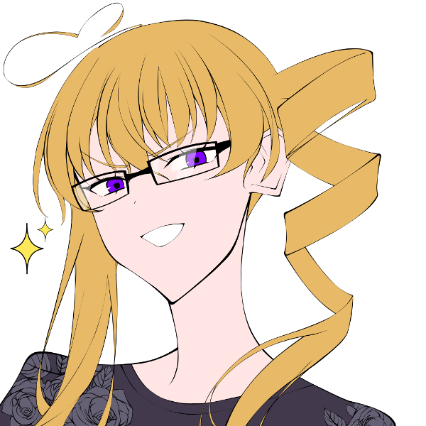高嶺紅林栖 : 「ワタクシによる"エレガントファミリープロデュース作戦"を開始いたしましょう！！」謎の作戦の開始を高らかに宣言する。
高嶺紅林栖 : 「まずは"お父様"！」
巨肩 矢委人 :
「あ、はい」
服装くらいは大丈夫だと思っていたので不意打ちを喰らう
高嶺紅林栖 : 「アナタ、思った以上に父親役が堂に入っているわ！ 40代にしか見えないもの！！」
巨肩 矢委人 :
「ん、おお、ああ」
褒められると思ってなかったけど複雑な気持ち
高嶺紅林栖 : 「でもね」
高嶺紅林栖 : 「──エレガントさが足りない！！！！」
巨肩 矢委人 : 「…エレガント、さ。申し訳ないんだが、こう…具体的にどう…というのも教えてもらって良いか…？」
高嶺紅林栖 : 「いいでしょう」
高嶺紅林栖 : 「……そうね、ワックスでヘアスタイルを整えるとか」
高嶺紅林栖 : 「あとは高級そうな腕時計を身に着けるとか、小物でエレガントさを演出するのはいかがかしら」
巨肩 矢委人 :
「腕時計か……ちなみに紅林栖はどれくらいのものを想定してる…？」
おずおずと
高嶺紅林栖 : 「腕時計には詳しくないけれど」
高嶺紅林栖 : 「日本円換算で300万のモノならそれなりに見えるんじゃないかしら？」
巨肩 矢委人 : 「300…！」
高嶺紅林栖 : 「？」なにかおかしなコトを言ったかしら、という風な顔
雲峰詩音 : 「……もう、300円で良いんじゃないかしら」
巨肩 矢委人 : 「それは置時計も買えないよ詩音…」
フランベルジュ : 「あのね紅林栖……それはきっとパパのお財布にトドメを刺す額だと思うわ……！」
巨肩 矢委人 : 「そもそも流石にそこまでの貯金は無い…と…いやどうだったかな…ともかく、流石に購入できない」
高嶺紅林栖 : 「そう？ でも別に300万円のソレを買え、と言ってる訳ではないから」
高嶺紅林栖 : 「要するに"高級感"さえあれば、それでいいのだし、極論、300円の腕時計でも"それらしく"見えれば構わないわ」
雲峰詩音 : 「……それなら、なんとか……なりそう？」 矢委人を見て
フランベルジュ : 「R-shockとかオススメって聞いた事あるよ～。長く使えるんだって！あとかっこいい……らしい！」
巨肩 矢委人 : 「俺の審美眼だけが少し不安だけど、良いものを取り繕ってみるか…R-syockだな、少し調べてみよう」
ヴォルグ :
「高い買い物だな…」
財布事情によっては少し助けてやろうと考えながら
高嶺紅林栖 : 「ふふ、夫婦なかよく探すコトね？」元貴族のフランなら審美眼はあるでしょう、と考えながら
高嶺紅林栖 : 「──さて、次は"お母様"！」
フランベルジュ :
「はいっ！」
ﾋﾟｼｯと
高嶺紅林栖 : 「……アナタはそもそも身長の問題があるけど、それは棚に上げるとするわ」
高嶺紅林栖 : 「まず瞳のカラーが一人だけ違うから、カラーコンタクトを用意した方がいいでしょうね」
高嶺紅林栖 : 「ワタクシたち姉妹のカラーに合わせて、紫がベストだと思うわ」
フランベルジュ :
「ふんふん。紫の瞳ね……」
どこからか取り出したメモ帳に書きこむ
高嶺紅林栖 : 「……それと服装ね、今のだとゴスロリ過ぎるし」
高嶺紅林栖 : 「夏らしいキャミワンピに……半袖カーディガンをはおって……サンダルを履いてもらおうかしら……」
フランベルジュ : 「……とっても清楚で素敵なコーデね！私もこの服はどうかと思っていたから、コーディネートしてくれるなんてママ大助かり！」
高嶺紅林栖 : 「そう？ でもワタクシも日本のファッション事情にはまだまだ疎いから、詳しくはシオンに……」
高嶺紅林栖 : 「ああ、ダメだったわ、ファッションとか知らないわ絶対」
フランベルジュ :
「それなら教えてあげてね、紅林栖。きっと素敵なコーディネートをしてくれるのでしょう？」
優しく微笑んで
雲峰詩音 : 「わたしは別に、教えて貰わなくてもいいけれど……」
高嶺紅林栖 : 「シオンはワタクシが選んだ服を着なさい」
巨肩 矢委人 : 「選択肢は無し、か…」
ヴォルグ : 「制服のまま、という訳にもいかないだろうしな…」
雲峰詩音 : 「制服を着てれば十分だとわたしは思っていたけど……だめなの？」
高嶺紅林栖 : 「制服は確かに可愛いわ」
高嶺紅林栖 : 「年を取ると着れなくなるし、今のうちに着るというのは間違いじゃない」
高嶺紅林栖 : 「……でも、それとこれとは話が別」
高嶺紅林栖 : 「アナタには、このワタクシの妹になってもらうのですから！ 制服しか着ないなんて、そんなズボラな真似は許しませんわ！！」
雲峰詩音 : 「……分かったわ。服装にこだわりなんて無いし……全部お姉様が選んで」
高嶺紅林栖 : 「スナオでよろしい」真顔で(人を従える優越感ッ！ たまりませんわッ！！)と思っている
高嶺紅林栖 : 「……では話を戻すわね」
高嶺紅林栖 : 「お母様もお父様と同様に、小物でエレガントさを演出する必要があるわ」
フランベルジュ : 「パパは腕時計なら……私は何になるのかな？」
高嶺紅林栖 : 「ブランドモノのバッグとかイヤリング、そんなところね」
巨肩 矢委人 : 「ネックレスとかもどうだろう？」
高嶺紅林栖 : 「いいじゃない？ お父様の好みも聞いて選びなさいな、夫婦ですものね？」
フランベルジュ :
「そうね、パパにも選んでもらわなきゃっ！」
ちょっと弾んだ声色
巨肩 矢委人 : 「俺か…どうだろうな…あまりゴテゴテはさせないようにしないと…」
フランベルジュ : 「楽しみにしてるわっ♪」
フランベルジュ :
「えーっと、アクセサリーと、小物……あとはちょっとヘアスタイルとか……。」
再びメモに向き合ってかきかき
高嶺紅林栖 : 「大人の女性らしいヘアスタイル……今まであまり考えた事はなかったけれど……」
高嶺紅林栖 : 「そうね、もうちょっとパーマをかけると大人っぽくなるんじゃないかしら」
フランベルジュ :
「パーマね！選択肢の一つに入れさせてもらうわ！」
親指を立てて見せる
高嶺紅林栖 : 「まあ、最高なのはワタクシのサイドテールのような縦ロールだと思うけれど」
フランベルジュ :
「下げる感じもヨシ、と…。ふむふむ。」
漏らさず書き留め
雲峰詩音 : 「お母……様にそういうドリルは似合うのかしら……」 二人の髪型を見比べて
巨肩 矢委人 : 「似合わないことは…無さそうだけど…まぁ二人同じ髪型も中々…いや、仲良し親子だとあるのか…？わからない…」
高嶺紅林栖 : 「──ドリル？」
高嶺紅林栖 : 「誰が、ドリルですって……？」
雲峰詩音 : 「お姉様の髪が……」 指をさす
高嶺紅林栖 : 「ワタクシのこの縦ロールは、ドリルなんかじゃない……！！」シオンに詰め寄り、向けられた指をはたき落とす。
高嶺紅林栖 : 「そんな無礼なコトを言ったのは、アナタで二人目よ……！ ああ！ 下賤の者はどうして皆こうなのかしら……！！」
ヴォルグ :
また始まった、と言いたげな顔で姉妹を眺めている
「ヘアスタイルで変えてみるのもアリだろうな、買い出しのついでに調達しよう。」
雲峰詩音 : 「くるくるしてるから……。よく分からないけど、ごめんなさい」
高嶺紅林栖 : 「安っぽい謝罪ひとつで、何でも許されると思わないで……！」
高嶺紅林栖 : 「アナタはいちいち、癇に障るコトばかり言って……！ ワタクシはいい加減、堪忍袋の緒が切れましたわ……！！」何故か逆鱗に触れてしまったらしい、クリスタの憤怒は収まる気配がない。
高嶺紅林栖 : 「"ドリル"なんて呼んだ報いよ! 桜の木の下に穴を掘って埋めてあげる！！」
高嶺紅林栖 : 「日本の昔話通り、灰を撒いたら花が咲くのか、本当にたのしみッ……！！」
雲峰詩音 : 「いいけど、やるなら任務が終わった後にして欲しいわ……」 すすすと移動してヴォルグの後ろに隠れる
高嶺紅林栖 : 「こら、逃げるなッ！！」逃げ先のヴォルグ君に詰め寄る
ヴォルグ :
「まぁまぁ」
隠れる詩音を見たあと紅林栖を宥めながら
フランベルジュ : 「こらこら～、妹をイジメちゃ駄目よっ！」
高嶺紅林栖 : 「妹を？ イジメている！？」
高嶺紅林栖 : 「いいえ！ 違います！！ これはワタクシの貴族としての誇り……！！ 敬愛するお母様譲りのヘアスタイルを貶められて、黙っていられるものですかッ……！！」
雲峰詩音 : 「……母親と同じ髪型、なのね」
巨肩 矢委人 : 「…だそうだ。さっきはよくわからないと言っていたけど、理由は理解できたかい、詩音」
雲峰詩音 : 「えぇ、そうね……」
雲峰詩音 : 「……ごめんなさい、貶めたつもりは無かったの。もう二度と言わないから……許してもらえないかしら……」 ヴォルグの背の影から顔を出して
高嶺紅林栖 : 「…………」
高嶺紅林栖 : 「ダメ、許さない」
高嶺紅林栖 : 「……でも、それで今は収めてあげる。 この態度で居続けるのは美しくないから」
雲峰詩音 : 「……ありがとう、お姉様」
高嶺紅林栖 : 「…………」
高嶺紅林栖 : 「……気を取りなおして、次に進むわ」
高嶺紅林栖 : 「次は"お兄様"ね」
ヴォルグ :
「俺か？」
予想外とでも言いたげな声で返事をする
高嶺紅林栖 : 「当然、アナタにも問題はあるわ」
高嶺紅林栖 : 「……一番はその目付き」
高嶺紅林栖 : 「普通の人生を送ってきた人間の目じゃないのよ、アナタ」
ヴォルグ : 「人間じゃないしな。」頷く
高嶺紅林栖 : 「そういう問題じゃ……！！」
高嶺紅林栖 : 「いえ、いいわ……ここツッコんでも疲れるだけよワタクシ……」自分に言い聞かせるように呟く
高嶺紅林栖 : 「──簡単な対策として、まず前髪を下ろしなさい」
ヴォルグ :
「む、構わないが…少し邪魔だな…」
若干不満そうに前髪に触れるが仕方ないかと頷く
高嶺紅林栖 : 「アナタは"兄"と呼ぶにはムリがある年齢だけれど、それで多少は若く見えるハズよ」
高嶺紅林栖 : 「……他に目付きの鋭さを和らげるには、メガネが効果的ね」
ヴォルグ :
「矢委人…父さんが付けているものだな？」
チラリと矢委人を見やると自分のこめかみのあたりを指でトントンと示す
巨肩 矢委人 : 「ああ、そうだな。ヴォルグには何色が合うかな…」
高嶺紅林栖 : 「家族としての統一感、という面でも一役買ってくれると思うから、お父様とお母様と選んでくださいな」
高嶺紅林栖 : 「……他には、もっと夏らしく若々しい服を選ぶコト」
ヴォルグ : 「服に関しては…まだ少し肌寒くないか？」
高嶺紅林栖 : 「……正気？ 日本の夏はヤバいですわよ？」
フランベルジュ : 「昔はまあまあだったけど、今はとーっても厳しいらしいよ…！怖いね…！」
巨肩 矢委人 : 「そうだな、なんというか…特色があるというか、湿気があるにしてもそれも独特というか…とにかく、暑いぞ」
ヴォルグ :
「どうやら俺は人間より体感温度が低いらしくてな、この服でも今は丁度いいんだ」
自らのコートを指差して
ヴォルグ : 「まぁ、今より少し薄手なら耐えられるか…違和感のない服を探してみよう。」
高嶺紅林栖 : 「……自身のレネゲイドコントロールができていないメンバーが二人もいるとは」
巨肩 矢委人 : 「そこはコントロールというより、特性に近いんじゃないか？RBということだし」
雲峰詩音 : 「ごめんなさい……」 さっきからずっとしょぼんとしてる
フランベルジュ : 「まあまあ。そこはカバーしていきましょう？ね？」
ヴォルグ :
詩音を暫く見たあと紅林栖に向き直って
「サラマンダーのコントロールは苦手だがこれでも歴は長いんでね、役に立てる筈だ。」
ヴォルグ :
「ひとまず髪と…眼鏡と…服装だな。」
指折り数えながら復証をする
高嶺紅林栖 : 「……ええ、任せたわ」シオンちゃんの方をチラ、と見て罪悪感を感じるけど、悪いのはあの子の方じゃない、と思い直す。
ヴォルグ :
「ならワックスは暫くいらないな、父さんに貸すことにしよう。」
少し節約になる、と言いながらあっけらかんと
フランベルジュ : 「ママとお買い物に行く必要がある人もいるよね！張りきっちゃお！」
巨肩 矢委人 : 「ああ、それじゃぁありがたく頂戴しよう。ほとんど使ったことないんだがどれぐらい手に取るんだ？これって…」
ヴォルグ :
「試しに使ってみる？まずこれを…」
矢委人に手招きをするとワックスの使い方を教え始める
巨肩 矢委人 :
「結構取るんだな、こういうのって風呂の時とか…」
うんぬんかんぬん
高嶺紅林栖 : 「……最後に"シオン"」一際低いトーンで言った後、シオンちゃんの顔を見る
雲峰詩音 : 「……なに？」 顔を上げる
高嶺紅林栖 : 「……」
高嶺紅林栖 : 「(こうして見ると、素材は悪くないのよね……)」
高嶺紅林栖 : 「(でも……手入れをしないおかげで台無し……)」
高嶺紅林栖 : 「(砕けて曇ったガラスみたい……)」
高嶺紅林栖 : 「キチンと磨いたら、ビー玉かガラス細工ぐらいにはなるのに……勿体ない……」そう漏らす
雲峰詩音 : 「……？何が勿体ないの？」
高嶺紅林栖 : 「……なんでもないわ」無意識に口から漏れた言葉に驚きつつ、それを表情には出さない。
高嶺紅林栖 : 「いい？ 任務達成までの一週間、アナタはワタクシの所有物、そう思いなさい？」
雲峰詩音 : 「え……？どうして？妹だから？」
高嶺紅林栖 : 「いいえ」
高嶺紅林栖 : 「──それがワタクシがアナタに課す"贖罪"だから、よ」
雲峰詩音 : 「…………」
雲峰詩音 : 「贖罪……」
雲峰詩音 : 「……そう、ね」 目を伏せて何かを想うようにして
雲峰詩音 : 「贖罪なら……仕方ないわね。分かったわ……」
高嶺紅林栖 : 「急に物分かりがいいのは気になるけれど、分かったのなら結構」
高嶺紅林栖 : 「侮辱された件については、謝罪の言葉だけでは許せなかったし」
高嶺紅林栖 : 「いろいろ指示しなければいけない都合上、そうした上下関係があった方が動きやすいもの」
雲峰詩音 : 「そう……」
雲峰詩音 : クリスタちゃんにP連帯感/N悔悟でロイスを取ります。表に出てるのはNの方で
system : [ 雲峰詩音 ] ロイス : 3 → 4
高嶺紅林栖 : 悔悟、家族のコトとか含まれてない……？ 激重ロイス取られちゃった……
雲峰詩音 : 含まれてます！
高嶺紅林栖 : ヒェ～～～～ッ
高嶺紅林栖 : では、私はシオンちゃんにP慈愛/N嫌悪でロイスを取ります。 表に出てるのはNの方で
system : [ 高嶺紅林栖 ] ロイス : 3 → 4
雲峰詩音 : わぁい、この姉妹仲が悪い！でもPが慈愛なの嬉しい
高嶺紅林栖 : (嫌いだけど)なんか放っておけないわね、くらいの慈愛の気持ちを持ってる姉
GM : では、ここで買い出しに出かけたという体でお買い物兼調達をして頂きましょう
GM : フレーバーで買いたいもの、そしてアイテムとして調達したいもの(こっちは難易度も書いてくれると助かる)を宣言し、判定が必要ならばそのままダイス振っちゃってくださいな！
雲峰詩音 : 了解！
フランベルジュ : 了解でっす！
ヴォルグ : はーい
ヴォルグ : 眼鏡と服をフレーバーで買いますー
巨肩 矢委人 : 自分も良い感じの時計買っちゃお
雲峰詩音 : UGNボディアーマー購入します！難易度12！砂の加護使っていきます
system : [ 雲峰詩音 ] 侵蝕率 : 40 → 43
雲峰詩音 : 6dx(6DX10) ＞ 10[2,3,5,6,9,10]+8[8] ＞ 18
高嶺紅林栖 : つええですわ！？
雲峰詩音 : 取れましたわー！
GM : ゲットですわ！やったね
フランベルジュ : つよい！
雲峰詩音 : クリスタちゃんから服貰うから、中に着込む形で装備します。装甲値+8
フランベルジュ : ナイフ調達しまっす！難易度は6！
フランベルジュ : 7dx＋1(7DX10+1) ＞ 9[2,2,4,6,6,8,9]+1 ＞ 10
GM : いいね！良い感じのナイフが買えましたわ
フランベルジュ : よしっ、あとはフレーバーで服とかアクセとか食材とか買って帰りますわっ！
ヴォルグ : デザートも買おう
高嶺紅林栖 : タマゴとサーモンと野菜類はキチンと揃えてくださいましね
フランベルジュ : よろしくてよお姉さま。タンパク質は大事ですのね。💊👍
高嶺紅林栖 : 高タンパク質の食事は重要ですわ～サラダチキンよりサーモンですわ～
雲峰詩音 : あ、あとわたし食糧でもファッションでもないけどフレーバーであれ買います
高嶺紅林栖 : クリスタが載ってる写真集…?
GM : あれ
雲峰詩音 : お風呂に浮かべるアヒルのおもちゃ買います。以上で
フランベルジュ : かわいい
ヴォルグ : かわいい
高嶺紅林栖 : なんで！？！？！？！？
巨肩 矢委人 : かわいい
雲峰詩音 : 灰で汚れるからお風呂好きなんですよ
ヴォルグ : 兄と末っ子めっちゃ好きなもの買うやん…
GM : かわいすぎるね…？諸々了解です
高嶺紅林栖 : ワタクシはリンゴ酢とリンゴジュースを家から送ってもらいまして(フレーバー)
高嶺紅林栖 : 自動巡回ソフトを調達しますの
高嶺紅林栖 : 3dx 難易度5！ このグラスマン家の令嬢であるワタクシが調達できないモノなどこの世に(3DX10) ＞ 9[1,1,9] ＞ 9
高嶺紅林栖 : ありませんのよ～～～～(調達成功)
GM : エレガント…
高嶺紅林栖 : 以上ですわ！
GM : はいさ！他のみんなも大丈夫かな？
雲峰詩音 : 大丈夫！
フランベルジュ : ばっちし！
ヴォルグ : OK
巨肩 矢委人 : おけおけ
GM : 了解！ではここで一旦シーンエンド
シーン3 薄雲団地の住人達
GM : さっきのシーンに続き家に帰ってきたあとです、登場どうぞ
巨肩 矢委人 : 1d10＋41(1D10+41) ＞ 8[8]+41 ＞ 49
フランベルジュ : 1d10＋49 ヤーッ(1D10+49) ＞ 2[2]+49 ＞ 51
ヴォルグ : 1D10+55(1D10+55) ＞ 3[3]+55 ＞ 58
高嶺紅林栖 : 1d10+62(1D10+62) ＞ 9[9]+62 ＞ 71
雲峰詩音 : 1d10+43(1D10+43) ＞ 10[10]+43 ＞ 53
薄雲団地 101号室
GM : 買い物から帰ってきた貴方達は、クリスタもとい紅林栖の指示に従い“それらしく”見えるように身なりを整える。
GM : クリスタの叱咤が幾度となく飛び、作業が難航しつつもひと段落したところで、貴方達はダイニングの机の周りへと集まっていた。
高嶺紅林栖 : 「──ふうん、それなりに美しくなったのではなくて？」
高嶺紅林栖 : 「流石は、ワタクシね！」褒めるのはあくまでも自分自身…！！
フランベルジュ : 「ふふーん。いいでしょいいでしょ。」気にせず眼鏡ｸｲｸｲ
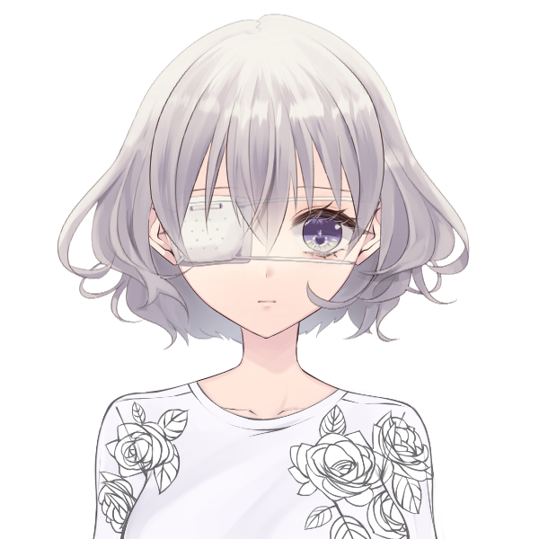雲峰詩音 : 「そうかしら……？」 あんまりよく分かっていない様子で、机に置いたお風呂のアヒルを触っている
巨肩 矢委人 :
「腕時計、慣れないな…」
携帯見ちゃう派

ヴォルグ :
「エアコン止めちゃダメか？」
肌寒いのかどこかからタオルケットを持ってきて羽織っている
高嶺紅林栖 : 「ダメ、暑い」
高嶺紅林栖 : 「……でもまあ、家だけなら厚着しててもいいんじゃない？」
ヴォルグ :
「耐えきれなかったらそうしよう。」
なるべく風のあたらない所へ避けながら
フランベルジュ : 「もこもこになっちゃっても良いよ～。毛布とかいるかな？」
巨肩 矢委人 : 「難しいところだよな、冷暖房。オーヴァードだと特にそこらへんの幅が大きくなってくるだろうから」
ヴォルグ :
言われて思い出したように寝室から毛布を引っ張ってくる
「変装は初めてだからな…自分で調整出来れば一番良いんだが。」
雲峰詩音 :
「……温度を上げるくらいなら、いいんじゃないかしら」
エアコンのリモコンを勝手に操作し、温度を一度上げる
高嶺紅林栖 : 「…………」無言でエアコンのリモコンを奪い、温度を戻す
雲峰詩音 : 「あ……。お姉様、返して」
高嶺紅林栖 : 「各自で服装を調整すればよいのだから、お兄様の自分勝手に付き合う必要ないの！」特大ブーメラン
雲峰詩音 : 「でも、毛布がいるくらい寒いんじゃ、お兄様が風邪引くんじゃないかしら……」
高嶺紅林栖 : 「そんなヤワじゃないでしょう！ ここまで大きな人間、母国でも見た事ないわよ」
雲峰詩音 : 「そう……？」 ヴォルグの顔を見上げる
ヴォルグ : 「一週間ぐらいなら大丈夫だろ、毛布を被ればちょうど良さそうだ。」 詩音と目が合うと頷きながら
高嶺紅林栖 : 「ほらね」
雲峰詩音 : 「……分かったわ」 頷き返す
高嶺紅林栖 : 「……まったく所有物の自覚があるのかしら、この子は」呟く
GM : そんな会話を交わしつつ、机の上に置かれたものに目をやる。
GM : そこには律儀に用意された洋菓子の詰め合わせが数点と「情報収集を円滑に進める為ご近所へ挨拶にいくように」と書かれた紙が置かれていた。
GM : これを見た貴方達は隣の部屋──102号室に「戸成」と表札がかかっていたことを思い出します。
雲峰詩音 : 「……そういえば、これはいつ行くの？」 指をさす
フランベルジュ : 「ご近所さんに挨拶するんだよね～。こういうのは出来るだけ早めがいいよ！」
巨肩 矢委人 : 「今日にも行った方がいいだろうが…そういえば俺の職業とかも決めてなかったな…どうするか。聞かれた時に応えられないのは不味いだろうし…」
雲峰詩音 : 「じゃあ、それが決まったら行くのね」
フランベルジュ : 「そうだね。ママは～……専業主婦？で大丈夫かな？」
フランベルジュ : 「パパは何が合ってるかな。無難に行けばサラリーマンだけど…誰か案がある人！家族会議！」
雲峰詩音 : 「タクシー運転手……？」 何となく提案
ヴォルグ : 「ハーフの設定だろう？適当な海外の会社にすれば詮索もされ難いんじゃないか？」
高嶺紅林栖 : 「サラリーマンもタクシー運転手も、ワタクシ達の恰好と見合わないと思うわ」
巨肩 矢委人 : 「ううむ…正直俺は…こういう時に提示すべき職業を知らないというか…どうだろう。海外に絡む職業の方が皆の説明にもなるだろうか」
フランベルジュ :
「っていうことは～…。外商とか～…少し手取りの多そうな～……」
色々な職業を頭に巡らせて
高嶺紅林栖 : 「美容品メーカーの外商でいいんじゃない？ うちにも来てたわよ、日本の会社」
雲峰詩音 : 「お姉様、美容品好きね」
高嶺紅林栖 : 「それはそうでしょう、どんな可能性を秘めた原石も磨かなければ価値はないもの」
巨肩 矢委人 : 「美容品メーカーか…それで良いが、紅林栖も知っての通り俺はそういうの疎いから…ぼろが出そうだったらカバーしてほしいかな」
高嶺紅林栖 : 「ええ、もちろん！ そのつもりで"美容品メーカーの"と追加した訳だしね」
フランベルジュ : 「さっすが紅林栖。パパのカバーも完璧ね！」
ヴォルグ :
「ビジネスの情報はある程度持っているな…俺も出来る部分はカバーに入ろう。」
手帳をざっと流し見ながら
高嶺紅林栖 : 「……ま、ボロが出ないように、基本的には"外商"とだけ言うのがいいでしょうけど」
巨肩 矢委人 : 「なるほど、外商…」
雲峰詩音 : 「お父……様は、それで大丈夫なの？」
巨肩 矢委人 : 「ん？ああ、特にこだわりはないから大丈夫だよ。詩音は何かあるかい？」
雲峰詩音 : 「いいえ。運転手って言ったけど、特に考えがあるわけじゃなかったし」
雲峰詩音 : 「決まったのなら、早く行きましょう」
フランベルジュ :
「善は急げ、ねっ！」
椅子からぴょんっと降りる
高嶺紅林栖 : 「──挨拶をしにいくという事自体に異論はないのだけれど」
高嶺紅林栖 : 「プレゼントというのは、送る側の品格を試すモノでしょう？」
高嶺紅林栖 : 「こんな安い茶菓子を送ったら、安く見られないかしら？」
巨肩 矢委人 :
「これ安いのか？」
品物見てみよう
ヴォルグ :
「この団地では高すぎても見合わないだろう。」
個室に間違えるぐらいだし、と言いながら
フランベルジュ :
「贈り物は中身より気持ち……って聞くけど、あくまで社交辞令だからね！」
贈り物の中身を覗いて
フランベルジュ : 「一見そこまで悪い物でもなさそうだし、心配いらない…かな？」
高嶺紅林栖 : 「……そもそも、裕福な外商が団地に引っ越すコトにもムリがありましたわね、盲点でしたわ」
高嶺紅林栖 : 「まあ、そのあたりは仕事の都合とでも言うとして」
高嶺紅林栖 : 「本当にいいんですのコレで？ ワタクシの知る"挨拶"の品物と言えば」
高嶺紅林栖 : 「それこそフランス産のボルドーワインとか……」
雲峰詩音 : 「そんなの、普通送るのかしら……」
フランベルジュ : 「シャトー系が好きな人とか多いよね～。今は手元にないけど…そもワインラックもないし～……」
巨肩 矢委人 : 「ワインか…父親役とは言え、俺が楽しめないものを人に送ってもな…と、思うんだが」
高嶺紅林栖 : 「……そうね、確かに、日本の文化についてはアナタ達の方が詳しいでしょうし」
高嶺紅林栖 : 「ここは任せるといたしますわ」
フランベルジュ : 「ジャパニーズ・ワビサビ…！」
雲峰詩音 : 「じゃあ、結局これで良いのね……」 玄関へと向かっていく
高嶺紅林栖 : 「ええ、少し不安ですけれど」溜息と共についていく
フランベルジュ :
「ゴー！お隣さん、良い人だといいな～」
ウキウキしながら外へ
ヴォルグ : 毛布を玄関の隅に置いてついていく
巨肩 矢委人 :
「さて、家族としてのファーストインプレッション…上手くいくと良いが」
覚悟を決めるように
薄雲団地 廊下
GM : 一抹の不安を抱えながらも、手土産を持った貴方達は101号室を出て隣の102号室の前までやってくる。
GM : インターホンを鳴らすと、「はいはーい」と返事があった後に中から中年女性が顔を覗かせる。
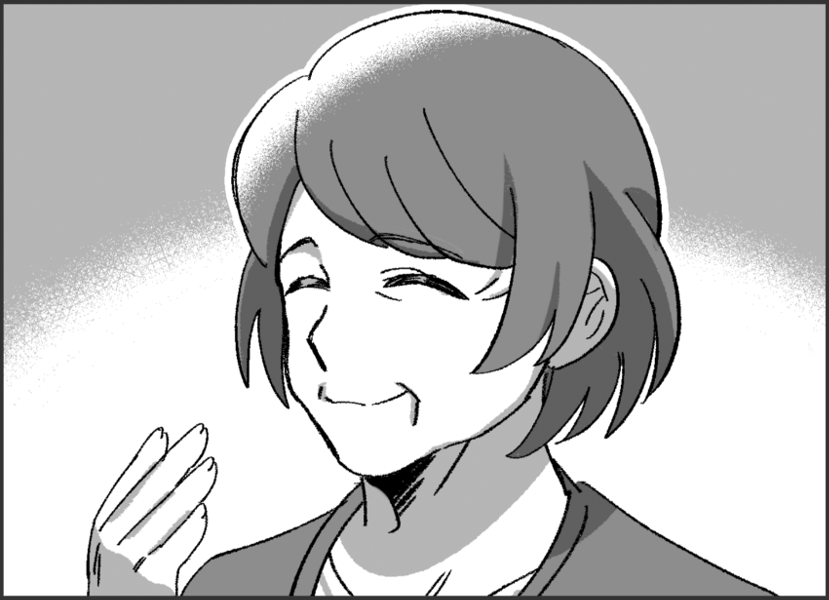戸成 秋子 : 「あら、今日から引っ越してきたお隣さん？」
フランベルジュ :
「初めまして！お隣に引っ越して来た高嶺家だｙ……ですっ！」
砕けた口調を正して挨拶
巨肩 矢委人 :
「はい、高嶺と申します。よろしくお願い致します。こちら、つまらないものですが…」
これで合ってる…？合ってる…？という視線を他に送りつつ
ヴォルグ : （合ってる。）とバレないように僅かに頷きながら
高嶺紅林栖 : 「(シミとシワだらけ！ ワタクシの圧勝ですわね……！ こうはなりたくないものですわ……！！)」相手と自分の顔を比べて、心でマウントを取ってます
雲峰詩音 : 皆の後ろの方でこくこく頷いている。
戸成 秋子 :
「あらまぁ、ご丁寧にありがと～」
密やかに行われてるやり取りには気付かず、相好を崩して差し出された包みを受け取る。
戸成 秋子 :
「私は戸成秋子(となり あきこ)って言うのよ、よろしくね～」
明るく愛想の良さが伺える笑顔を浮かべながら彼女は名を名乗る。
戸成 秋子 :
「高嶺さん御一家ね。貴方がご主人？みなさんのお名前、教えてもらってもいいかしら」
矢委人に言ってから、他の面々の顔を見渡して
フランベルジュ :
「よろしく～……お願いいたしますっ！私はフランベルジュ、この方の妻です！」
ﾍﾟｺﾘと軽く頭を下げる
巨肩 矢委人 :
「はい、高嶺矢委人と申します。三人も、自己紹介を」
促そう
ヴォルグ :
「…長男のヴォルグです。」
慣れない様子で軽く咳払いをして
高嶺紅林栖 : 「ワタクシは長女の紅林栖と申しますわ」柔和な笑みを浮かべて
高嶺紅林栖 : 「どうかよろしくお願いいたします」スカートの裾を広げて、膝を折る
雲峰詩音 : 「……。詩音です」 クリスタの真似をして、スカートの裾を摘まむ
GM : それぞれの名前を復唱しながら、うんうんと頷く戸成だったが……
戸成 秋子 :
「あら……？」
突然、貴方達の顔をまじまじと見つめ始める。
雲峰詩音 : 「……？」 見つめ返す
フランベルジュ :
「？ 何か？」
首を軽く傾げて
高嶺紅林栖 : 「いくらワタクシが美しいからといって、そうマジマジと見つめられると、いささか照れてしまいますわ？」
戸成 秋子 : 「あらやだ、今言おうと思ってたのよ！よく見たらこんなにも美男美女揃いで、おばさん羨ましいわ～って」
戸成 秋子 : クリスタの言葉に大袈裟に驚いた反応をしてからまた笑顔を見せる。
高嶺紅林栖 : 「オーホッホッホッ！ いえいえ、それほどでも、ありますけれどねっ！」と緊張したそぶりも見せずにおどけてみせる
フランベルジュ : 「ふふっ♪ ええ、ええ。私達の可愛い自慢の子供達ですっ！」
ヴォルグ : ぽかんとした様子で詩音を見下ろす
雲峰詩音 : 「……？」 あまりよく分かってない顔で見上げてる
巨肩 矢委人 : 特に何も言わず微笑んでおこう
戸成 秋子 : 「まあ、元気があっていいわ～。奥様は海外からいらっしゃったの？日本語お上手ねぇ」
フランベルジュ : 「はいっ！日本語は難しいけれど、面白い言葉がたくさんあって覚えるの楽しかったです！」
フランベルジュ :
「えーっと…。騒がしい家族かもしれないけど、よろしく……お願い、しますっ！」
慣れない敬語でぎこちない
戸成 秋子 :
「偉いわね～、おばさん英語とか全然できないから尊敬しちゃうわ」
感嘆するように言ってみせて
戸成 秋子 : 「いいえ～こちらこそ。賑やかなのは大歓迎よ。ここの事で何かわからないことがあったらなんでも聞いてちょうだいね」
フランベルジュ : 「わぁ～！ありがとう……ございますっ！まだまだ知らないことが多いので、甘えに行っちゃうかも……ですっ！」
雲峰詩音 : 「……あの、それなら……質問があるんですけど」
雲峰詩音 : 「戸成さんは、ここに一人で住んでいるんですか？」
戸成 秋子 :
「ええ、そうよ。子供もいたんだけどみんな大きくなったら出ていっちゃうじゃない？寂しいわよねぇ」
悲しさを微塵も感じさせない雰囲気でそう答える。
雲峰詩音 :
「そうなんですね……。だから、賑やかなのが大歓迎って……」
この部屋には一人だけ、と記憶していく
戸成 秋子 : 「そうなのよ。だから、こうやって挨拶しに来てもらえて嬉しいわ」
雲峰詩音 : 「…………」 一週間でいなくなるとは言えないな、と少し悪く思う
巨肩 矢委人 :
「お力になれるのでしたら幸いです、これからよろしくお願いしますね」
柔和な笑顔を浮かべて
戸成 秋子 :
「ええ、よろしくお願いします」
戸成も笑顔で矢委人に返す。
戸成 秋子 : 「高嶺さんはこれからご挨拶周りかしら？でもこの時間、他の住民たちはまだみんなお仕事から帰ってなくていないかもしれないわねぇ…」悩ましげに
戸成 秋子 : 「……あ、そうだわ！お菓子のお礼におばさんがここに住んでいる人達について簡単に紹介しましょうか」
戸成 秋子 : どんな人かわかっていた方が挨拶もしやすいでしょ、と
高嶺紅林栖 : 「あら！ 親切にどうも！ とてもありがたいですわ！」
巨肩 矢委人 : 「ありがとうございます、是非ともお願いします」
フランベルジュ : こくこくと頷いて
戸成 秋子 : 「ええと……そうね、まずは」
GM : 戸成はこの団地の住人の何人かについて簡単に紹介をしてくれる。その中でも君達が気になったのは以下面々である。
GM : 203号室、「鳩ヶ谷一家」父母息子の家族。息子はまだ幼稚園にも通えないほど幼くかわいいらしい。
GM : 505号室、「宝田 ショウヤ」外資系の会社に勤めるサラリーマン。若くてイケメンであり、愛層のいい好青年。
GM : 405号室、「美野島 沙里」こもりがちの地味な女性。なかなか家から出ることがなく、何の仕事をしているか不明。
GM : 「あぁほら」と戸成に声を掛けられ団地の下を見ると、ちょうどゴミ出しをしていた女……美野島に、仕事帰りなのかスーツを着た男……宝田が声をかけていた。
雲峰詩音 : 「あの人達……？」 見下ろそう
フランベルジュ :
「んん～…？」
背伸びして覗こうとする
巨肩 矢委人 : 「あの方々が…」見ていよう
ヴォルグ : 示された通り階下を見下ろす
高嶺紅林栖 : 「お父様以上に仕事ができそうな男と、シオン以上に陰気そうな女ね？」
雲峰詩音 : 「わたし、そんなに陰気……？」
高嶺紅林栖 : 「ええ、陰気」今更？ という風な顔
雲峰詩音 : 「じゃあ、そうなのかも……」
巨肩 矢委人 :
「待ちなさい、詩音はそう陰気ではないし、そもそも人様を陰気だなんて評するものじゃないよ」
諫める諫める
高嶺紅林栖 : 「二コリとも笑わないのだから、そう見られても仕方ないんじゃないかしら？」
ヴォルグ :
外であることを思い出したように紅林栖と詩音を見ると話を逸らそうと戸成へ向き直って
「有難うございます、住んでいる方々への挨拶はまた後ほど。」
フランベルジュ :
「…っとと。戸成さん、ありがとう！」見下ろすのをやめて
「紅林栖と詩音もそこまでよ。そういうのは後で話しあいましょ？」
高嶺紅林栖 : 「……ふん」
雲峰詩音 : 「分かったわ」
雲峰詩音 :
「……あの、お父様。……あ、ありがとう……」
矢委人を上目遣いに見上げて、ぎこちなく庇ってくれたお礼を言う
巨肩 矢委人 :
「ああ、どういたしまして、詩音」
親子なんだから撫でるくらい自然だろ…平気だろ…多分…って思いながら軽く頭ポンポンを試みる
雲峰詩音 : 「……！？」
雲峰詩音 :
手が迫ってきた瞬間、ビクッと震えて一歩下がる。
一瞬、灰色の髪に指先が掠りかけた矢委人は、チリッと熱いものに触ったような痛みをほんの少しだけ感じるだろう。
巨肩 矢委人 :
「？……？？ああ、ごめん詩音、嫌だったか…？もう16だしな…」
避けた意図が読めないし、何の痛みかもわからなかったので(静電気…？)とか思いつつ
雲峰詩音 : 「……っ、いや、あの……」 視線を泳がせて
雲峰詩音 : 「……び、びっくり……しただけ……」 目を伏せて、怯えているように声を震わせる
高嶺紅林栖 : 「……？」
フランベルジュ :
「……？……そうねー、詩音も年頃なのかなー？」
訝しみつつ、今は軽く流す
ヴォルグ :
「………」
訝しむものの今は流した方が自然だろうと判断をする
GM : 貴方達がそうして話していると、階段を上がってくる足音が聞こえる。
GM : 振り返ると子供連れの夫婦に気づくだろう。
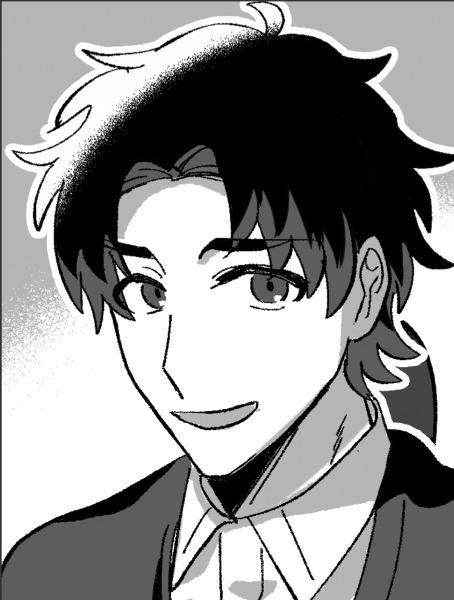
鳩ヶ谷 雅人 :
「戸成さん、どうもこんにちは」
赤ちゃんを抱いた気の優しそうな男性が戸成に声をかける。
戸成 秋子 : 「あら～鳩ヶ谷さん！こちら、今日引っ越してきた高嶺さん！」
鳩ヶ谷 雅人 :
「ああ、そういえば今日越してくるんでしたっけ」
雅人は貴方達に向き直って
鳩ヶ谷 雅人 : 「どうも、鳩ヶ谷雅人です。203号室に住んでます。こっちは妻のアカネと息子のルイです」
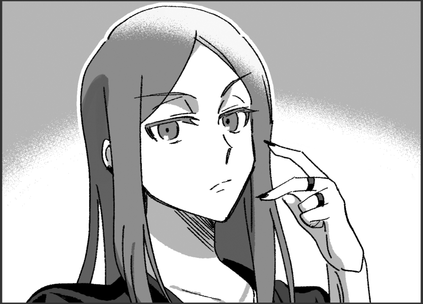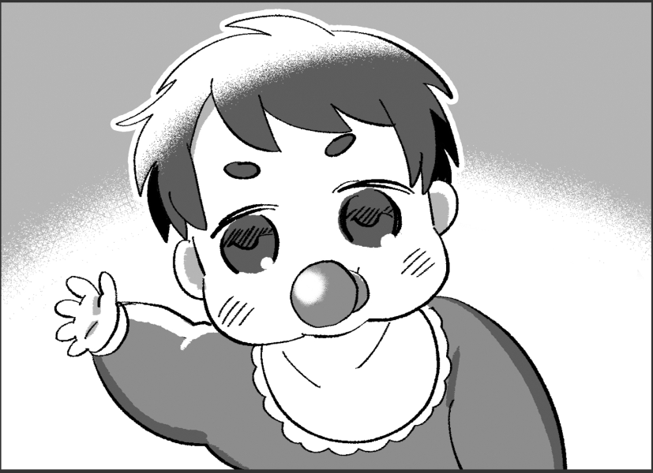
鳩ヶ谷 アカネ :
「……どうも」
ぺこりとお辞儀をする。
巨肩 矢委人 :
「ああ、ご丁寧にどうも。本日越してきた、高嶺矢委人と申します」
こちらも礼をしよう
フランベルジュ :
「妻のフランベルジュです～」
ぺこぺこ
ヴォルグ : 「長男のヴォルグです」
高嶺紅林栖 : 「長女の紅林栖ですわ」再び膝折礼をする
雲峰詩音 : 「……し、詩音、です」
鳩ヶ谷 雅人 : 「大所帯ですね！この団地では珍しいなぁ」
雲峰詩音 : 「そう……なんですか……？」
高嶺紅林栖 : 「ま、この人数で住まうには手狭だものね」
巨肩 矢委人 :
「紅林栖は手厳しいなぁ…」
苦笑いをしている
鳩ヶ谷 雅人 :
「そうだね。家族連れは以外と少なくて…… 」
詩音に答えて
フランベルジュ :
「希少な家族連れ仲間、ということですね！」
ニコニコと人懐っこい笑顔を向けて
鳩ヶ谷 雅人 :
「はい！ルイも小さいし子育てもまだまだ不慣れでお恥ずかしいですが、仲良くしてくださると嬉しいです」
抱っこした赤ん坊の背中を撫でながら
巨肩 矢委人 :
「こちら、つまらないものですが…受け取っていただけたら幸いです」
お渡しィ
鳩ヶ谷 雅人 :
「ああ、これはどうもありがとうございます。洋菓子でしょうか、妻が好きなんです」
受け取った箱を確認して笑顔を見せる。
鳩ヶ谷 アカネ :
「……ありがとうございます」
またぺこりとお辞儀して
雲峰詩音 : 「……あの、何歳位……なんですか？赤ちゃん……」 小さいと聞いて気になる
鳩ヶ谷 雅人 : 「ルイはまだ生まれて4ヶ月なんだ。歯も生えてないくらいだよ」赤ちゃんが珍しいのかな…と思いつつ
鳩ヶ谷 雅人 : 「抱っこしてみる？」と詩音に笑顔で尋ねる。
雲峰詩音 : 「え……。あ、あの、えと……でも……っ」
雲峰詩音 : 「……じゃ、じゃあ……抱っこします」 少し悩むが、近付いておずおずと両手を出す
鳩ヶ谷 雅人 : 「えっとね、じゃあまずここを……」と雅人が説明しながら詩音にルイの背中に手を添えさせる。
GM : と、そこでルイは驚いたように泣き始めてしまう。
雲峰詩音 : 「えっ……」 ビクッと震えて
鳩ヶ谷 雅人 :
「わわ…！ごめんね、慣れてない人だからビックリしちゃったのかな…」
慌てたようにルイを譲って宥める。
雲峰詩音 : 「い、いえ……。こちらこそ、びっくりさせてごめんなさい……赤ちゃん……」
雲峰詩音 :
「抱っこは、あの……やめておきます……」
少しだけ残念そうに言うが、下手に抱っこせずに済んで安心してるようにも聞こえる声で
鳩ヶ谷 雅人 : 「そっか……本当にごめん、僕から提案したのに」申し訳なさそうな顔をしてから
鳩ヶ谷 雅人 : 「……あ、そうだ！せっかくですから、明日うちでお茶でもいかがでしょうか？お菓子も頂きましたし、詩音ちゃんには申し訳ないことをしてしまったので…」
鳩ヶ谷 雅人 : 「さっきも話ましたけど、この団地は一人でお住まいの方が多くて家族連れが少ないので、せっかくなら仲良くなりたいなと」
鳩ヶ谷 雅人 : ルイも家で落ち着いてる状態なら怖がらないかもしれないし……と
雲峰詩音 : 「わたしは、そんな……気にしてないけれど……」 どうする？と皆を見る
巨肩 矢委人 :
「よろしいんですか？そんな突然…」
明日とは言えね
フランベルジュ : 「もちろん私は賛成よ？ せっかくお誘い頂いたし、お互いを知る機会だもの！」
高嶺紅林栖 : 「ええ、願ってもないお誘いですわね、お母様」
ヴォルグ :
「折角なら、俺も子供は好きだし。」
フランに同意しつつ
鳩ヶ谷 雅人 : 「ええ、もちろん…！では、明日の午後2時頃にしましょうか。ちょうど今コーヒーとか飲み物を買ってきたところなので用意して待ってますね」
鳩ヶ谷 雅人 : コーヒー、粉ミルク等の入った買い物袋を見せて微笑む。
巨肩 矢委人 : 「では皆も賛成しているし、お言葉に甘えて。明日はよろしくお願いしますね」
雲峰詩音 : 「……また明日ね、赤ちゃん」 怖がらせないように、少し離れて小さく手を振る
鳩ヶ谷ルイ : 詩音ちゃんのことをジッと見つめて手を振るかのように手をパタパタさせている。
雲峰詩音 : ルイが手を振り返してくれたのを見て癒されたのか、ちょっとだけ口元に笑みを浮かべる。
鳩ヶ谷 雅人 :
「はい、こちらこそ！では、また明日」
ルイの背中を撫でながら
鳩ヶ谷 アカネ : 「よろしくお願いします。その……楽しみにしてます」小さく笑んでみせる。
フランベルジュ :
「はーい、また明日！…です！」
フリフリ振って見送る
GM : そうして鳩ヶ谷親子はその場を後にする。
高嶺紅林栖 : 「────ああ、ところで戸成様？」
戸成 秋子 : 「あら、なにかしら？」
高嶺紅林栖 : 「つかぬ事をお聞きしますけれど、アナタは早起きな方？」
戸成 秋子 : 「私は早起きよ～、毎朝近くの公園まで散歩に行ってるの！」
戸成 秋子 : 「でも突然どうしたの？」
高嶺紅林栖 : 「あら、本当！」
高嶺紅林栖 : 「いえ、もしよければなのですけれど、朝のランニングを御一緒したいと思いまして」
高嶺紅林栖 : 「ほら、ワタクシ達、この街に来てから日が浅いですから、ランニングコースも知らないですし」
高嶺紅林栖 : 「街についてお話しながら一緒にランニングがしたいな、と思ったのですわ」
高嶺紅林栖 : 「……いかがかしら？」
戸成 秋子 :
「まあ、ランニング！紅林栖ちゃんは毎日行くの？でも、おばさん若い人に付いていけるかしら…」
そう言いながらも興味はありそうな雰囲気
高嶺紅林栖 : 「ええ、ワタクシは日課で走っているけれど、健康のために行っているだけなので、ランニングの速度についての心配は要りませんわ」
戸成 秋子 :
「まあ、本当？それならお言葉に甘えてご一緒させてもらおうかしら」
パッと表情を明るくして
戸成 秋子 : 「コースなら任せて！私はもうここに住んで長いから……いつも散歩に行った時にランニングしてる人は見かけるし、どの辺がいいかはなんとなくわかるわ」
高嶺紅林栖 : 「(ランニングという接点を作る事で、お隣さんからの信用を得る事ができる……)」
高嶺紅林栖 : 「(さらにランニング中に情報収集もできる、と……一挙両得ですわね……)」
高嶺紅林栖 : 「本当？ では、コースはお任せしますわ！」
高嶺紅林栖 : 「明日の朝6時頃にお待ちしておりますわね！」
戸成 秋子 : 「ええ！私がチャイムを鳴らして御家族を起こしたら悪いし、時間になったらうちのチャイムを鳴らしてちょうだい」
高嶺紅林栖 : 「ええ、そのように」
高嶺紅林栖 : 「(この歳で独り身というのも寂しいでしょうし、ランニングに付き合うくらいはしてあげましょう……なんて優しいのかしらワタクシ……)」
高嶺紅林栖 : 「……明日がたのしみね、シオン？」
雲峰詩音 : 「え……？どうして？」
高嶺紅林栖 : 「察しが悪いわね」
高嶺紅林栖 : 「アナタもワタクシ達と一緒にランニングをするからでしょう」
雲峰詩音 : 「そうだったの……？でも、わたし七時まで寝るから行けないわ」
高嶺紅林栖 : 「何を言ってるの？ アナタには5時30分に起きてもらうわよ？」
雲峰詩音 : 「…………絶対起きなきゃダメ？」
高嶺紅林栖 : 「そうね、そうは言っても、すぐには起床時間は合わせられないでしょうから」
高嶺紅林栖 : 「このワタクシが起こしてあげる！ ワタクシのモーニングコールを受けられるなんて、光栄に思いなさい？」
雲峰詩音 : 「お姉様のモーニングコール……」
雲峰詩音 : 「……凄く声が大きそうだわ」 嫌そうな沈んだ声で
高嶺紅林栖 : 「失礼な事を言うわね……ちゃんと起きてくれたら静かに起こすわよ……」
雲峰詩音 : 「……分かったわ。頑張って起きるように……する……多分……」 自信無さげに声が小さくなっていく
ヴォルグ : （可哀想に…）と詩音を見ている
高嶺紅林栖 : 「お父様、お母様、お兄様もいかがかしら？ 気持ちいいですわよ、朝のランニング」
フランベルジュ :
「え、えーっと……楽しそうだけど、ママは朝ご飯つくるから～……」
基本夜型オーヴァード
フランベルジュ : 「それとは別に、戸成さんとはまたお茶会で交流を深めたいな～……？」
巨肩 矢委人 :
「それなら俺は行こうかな」
紅林栖に応対する感じで
ヴォルグ : 「早起きすると体調不良が…」と首を横に振って拒否
高嶺紅林栖 : 「……もうだらしないですわね、お母様とお兄様は」
高嶺紅林栖 : 「では、お父様とシオン？ 明日は早いので今日は早寝してくださいな？」
雲峰詩音 : 「……わたしだけ強制参加なのね」
高嶺紅林栖 : 「ええ、件の話もありますから」贖罪で所有物になった話
雲峰詩音 : 「……分かったわ」
巨肩 矢委人 : 「それじゃぁそういうことで。ママには外に出る用のドリンクとか頼めるかな。朝でも暑いだろうし」
フランベルジュ : 「はーい♪ 体に良い物を作っておくわねっ！」
戸成 秋子 : 「あら、奥様！お茶も大歓迎よ」
戸成 秋子 :
「それにしても、本当に仲のいい御家族ね～」
貴方達のやり取りを微笑ましそうに眺めていたところで
戸成 秋子 :
「……あ、そうだわ！ちょっとここで待ってて」
そう言って彼女は部屋の中へと戻っていく。
雲峰詩音 : 「……？何かしら」 言われた通りに待つ
GM : 1、2分すると彼女は戻ってきて
戸成 秋子 : 「ごめんねぇ、急に」と、手にした封筒を手渡してくる。
巨肩 矢委人 : 「？ これは何でしょう」
戸成 秋子 : 「それ。明後日近くの遊園地がアトラクションをリニューアルするとかで、地元民に優待チケットが配られてたのね？」
戸成 秋子 : 「おばさんが1人で遊園地に行くのもなんだから、せっかくだし御家族で行ってきて頂戴」
GM : 中を確認すると遊園地のチケットが5枚入っています。
雲峰詩音 : 「遊園地……？」 チケットを覗き込む
フランベルジュ :
「えっ、遊園地！？…ですか！」
眼をキラキラと輝かせるが、咄嗟に口調を整える
高嶺紅林栖 : 「あら……」遊園地って庶民はチケットで行くのね、の顔
ヴォルグ :
「遊園地…？」
見慣れない様子でチケットの絵を眺めている
戸成 秋子 : 「そう、遊園地！薄雲ランドっていうところなんだけどね、この辺では結構有名なのよ」
巨肩 矢委人 : 「おや、よろしいんですか？そんな、今日来たばかりだというのに…」
戸成 秋子 :
「ええ、もちろん。引っ越してきたばかりでお忙しいかもしれないけどよかったら楽しんできて頂戴」
柔和な笑みを浮かべてお父さんに
雲峰詩音 : 「遊園地……小さい頃に行ったような……あんまり覚えてない」 少し興味がありそうにしてる
フランベルジュ : 「（子供の頃はなかったけど）私も私も、もし時間ができたら是非行ってみたいわ！皆はどうかしら？」
雲峰詩音 : 「……でも……そう、ね……」 任務に関係が無いから行きたいとは言えない
ヴォルグ :
「行ってみたい。」
普段とは打って変わりそわそわとした様子で即答する
ヴォルグ : ”行こう"と言いたげに４人の顔を見ながら返答を待っている様子
巨肩 矢委人 : 「いいんじゃないかな。いやぁ、何から何まで申し訳ありません」
雲峰詩音 : 「……じゃあ、時間があれば……」
高嶺紅林栖 : 「そうね、時間があれば行きましょう」日本のテーマパークには興味がない訳ではないし
戸成 秋子 : 「ええ、ぜひ！名前は忘れちゃったけど可愛いマスコットもいてね、きっといい思い出になると思うわ～」
雲峰詩音 : 「…………」 雲に変な顔がついたマスコットを想像している
戸成 秋子 : 「……あらま！話に夢中になってたらもうこんな時間…お夕飯のお買い物に行かなくちゃ」
戸成 秋子 : 「それじゃあ、高嶺さん明日の朝ね～」
GM : 戸成もそそくさと部屋へと帰っていきます。
雲峰詩音 : 「……挨拶回りは、これで一旦終わり？」 戸成を見送ってから
フランベルジュ :
「家族をよろしくお願いします～！」ぺこりと一礼して見送る
「かな？挨拶できなかった人はまた改めて？」
ヴォルグ :
「ついでにまわっても良いんじゃないか？」
帰宅している様だし、と先ほど人気のあったゴミ捨て場を見て
高嶺紅林栖 : 「そうね、いなかった人達は先ほど帰ったみたいだし」
雲峰詩音 : 「そういえば、そうだったわね……」
巨肩 矢委人 : 「じゃぁこのまま向かおうか、これ以上遅くなっても悪いだろうからね」
フランベルジュ :
「りょーかいっ！」
ピッと敬礼
雲峰詩音 : 「わかったわ」
高嶺紅林栖 : 「……ああ、お父様？ 今度からは困った時に目で助けを求めるのはやめてくださいましね？」
高嶺紅林栖 : 「みっともないから」
巨肩 矢委人 :
「ううん…ではどうしようか」
顎を触って考えている
高嶺紅林栖 : 「あ、それ」
高嶺紅林栖 : 「それが良いのではありませんか？」
雲峰詩音 : 「困った時のサインってこと？」
高嶺紅林栖 : 「たまには察しがいいじゃないシオン」
高嶺紅林栖 : 「困った時は"顎を触る"という行動をサインにしたらいかが？」
巨肩 矢委人 :
「なるほど。ではそうしようか」
じゃぁ普段は触らないように気を付けないとと思いつつ
高嶺紅林栖 : 「ええ、それ以外は概ね良かったと思いますわよ」にこりと微笑む
巨肩 矢委人 : 「…ありがとう、紅林栖。俺の中の父親ってものの情報は本当に乏しいから、今後も色々指摘してもらえると助かる」
高嶺紅林栖 : 「はい！ ビシバシ行くので覚悟してくださいなお父様！」
巨肩 矢委人 :
「よし、それじゃぁ残りも渡しに行くか」
襟元を正して向かうぞ
GM : 貴方達はそこから順番にチャイムを鳴らし挨拶回りをして行く。
GM : 仕事からの帰宅にはやや早い時間ではあるが、この時間でも在宅している住人はおりある程度は手土産を渡すことができた。
GM : 貴方達が気になった宝田ショウヤ、美野島 沙里の部屋は留守なのか反応はなかった。
GM : ……貴方達が挨拶回りを終える頃には日が少し傾き始め、夕方と呼べる時間帯になっていた。
GM : ふと、どこの部屋からか夕飯を作る匂いがして鼻腔をくすぐる。
雲峰詩音 : 「……ご飯の匂いがする」
ヴォルグ : 「そろそろ夕飯時だしな。」
フランベルジュ : 「そっか、夕ご飯の時間だもんね！それじゃ一旦帰りましょっ！」
高嶺紅林栖 : 「そうね……、ムダに声を出したせいでお腹が空いたわ……」
雲峰詩音 : 「じゃあ大声、出さなければいいのに……」
巨肩 矢委人 : 「そういうわけにもいかなかったんだろう、こう、信条的に…」
高嶺紅林栖 : 「お父様は理解が早くて助かりますわ本当に……好き……」相対的に
フランベルジュ : 「ふふふ、仲良くなってきたわね～♪ なら今日の夕ご飯は元気の出るカレーが良いかしらっ！」
フランベルジュ : 「紅林栖はカレー食べられるー？」
高嶺紅林栖 : 「まあ、食べられないコトはないけれど……、ああ、今日からロッテンマイアーの組んだメニューではなくなるコトを忘れてたわ……」
巨肩 矢委人 : 「そうだね、普段どういったものを食べてるのかっていうのは正直予想が付かないけれど…フルコースとかそういうものは出ないかな、流石に」
フランベルジュ : 「しようと思えばできるよ～。ただし、時間とお金と手間はそれなりにかかりますっ！」
ヴォルグ : 「費用と手間は問題ないとして、時間がかかるのはちょっとな…」
高嶺紅林栖 : 「そもそも、ワタクシが毎日フルコースをたべているというのは誤ったイメージですわよ」
高嶺紅林栖 : 「考えてもみなさい？ そんな量を口にしてたら太るでしょう？」
巨肩 矢委人 : 「確かに(フルコースの量がどれくらいか知らないけれど)」
高嶺紅林栖 : 「……ワタクシにとって、食事とは美容のために摂るもの」
高嶺紅林栖 : 「普段は栄養を効率的に摂取するため一日五食、少量ずつ摂ることにしてますの」
高嶺紅林栖 : 「だから、そういうコトを考慮するとシーフードカレーが嬉しいわね」チキンカレーにしたいなら、脂質の塊である鶏肉の皮は取ってくださいましね、と付け加える
フランベルジュ : 「シーフードかあ……うんうん、そういうのにも覚えがあるよ！なら今日はシーフードねっ！」
高嶺紅林栖 : 「リクエストが通るのは嬉しいけれど、お母様に任せて大丈夫かしら……」身長を見て
ヴォルグ : 「家具に踏み台はなかったか…俺も手伝えば大丈夫だろ。」
ヴォルグ :
「ところで食後にホットケーキも焼いていいか？」
先ほどの買い出しで材料を買ったらしくワクワクと
フランベルジュ : 「！ 賛成賛成っ！」
雲峰詩音 : 「ホットケーキ……？って、晩御飯後に食べるものなの？」
巨肩 矢委人 : 「俺は朝食のイメージがあるかな」
高嶺紅林栖 : 「タイミング以前に、明らかなカロリーオーバーですわよ！！」
ヴォルグ : 「俺にとってはそっちが主食だな。」
フランベルジュ : 「夜に食べる甘味……罪だよぉ……」
巨肩 矢委人 : 「カレーの後のホットケーキが主食…？ヴォルグは甘いもの好きなのｋ…さっきも色々買ってたなそう言えば」
雲峰詩音 : 「……みんな、色々作るのね。コンビニで適当に買ったものを食べるのかと思っていたわ」
高嶺紅林栖 : 「ホットケーキが主食と言うのなら、せめてホットケーキだけになさい！！」
高嶺紅林栖 : 「ホットケーキ一枚あたりのカロリーは250kcal……！ 塔質量は30g……！！」
高嶺紅林栖 : 「両方とも口になんてしたら、絶対に太りますわ……！！！！」
ヴォルグ :
「？家族と同じものは食べるぞ？プリンもアイスも買ったし…」
キョトンとした様子で
高嶺紅林栖 : 「プリン……？ アイス……？」
巨肩 矢委人 : 「え、それも今日食うのか？」
ヴォルグ : 「？」ふたりを交互に見ながら頷く
フランベルジュ :
「さ、流石にママも全部は無理かも～…！ていうかむーりー！」
お腹ぽこぽこ叩いて
ヴォルグ : 「残ったら保存しておけばいいさ、まだ１日目だしな。」
巨肩 矢委人 : 「まぁ、もし量作るんだったらパンケーキは明日の朝でいいかな…」
高嶺紅林栖 : 「──お兄様は、糖質をとりすぎるリスクをまるで分かっていないわ！！」
高嶺紅林栖 : 「糖質の過剰摂取はね！ 老化物質AGEを生成！ 身体の広範囲で様々な老化を引きおこすコトに繋がるんですのよ！！」
ヴォルグ : 考えたこともない知識にハテナを浮かべながら紅林栖の話を聞いている、そしていつもの食事を思い浮かべながら
ヴォルグ : 「俺はいつもケーキをワンホールは食べるが…？」
巨肩 矢委人 : 「おお…これがレネゲイドビーイング…」
高嶺紅林栖 : 「信じられませんわ…」
高嶺紅林栖 : 「もう将来は骨スカスカになればいいですわよ」
フランベルジュ : 「わあ…ワンホール……」
雲峰詩音 : 「レネゲイドビーイングだから大量に食べるというわけではないと思うけれど……少し心配にはなるわね……」
雲峰詩音 : 「あと、食費の方は大丈夫なのかしら……」
巨肩 矢委人 : 「まぁ今回は…大丈夫だろう。心配しなきゃならないほど少ないわけではないだろうし」
ヴォルグ :
「本部に出して貰える分は甘えるつもりだ。」
ちゃっかりと開き直り
雲峰詩音 : 「……良いのかしら」
高嶺紅林栖 : 「……ダメだったら、次からブラックリスト入りするだけだから別にいいでしょう」
雲峰詩音 : 「それもそうね……」
GM : そんな会話を交わしながら帰路に着く高嶺一家……そして帰って早速夕飯の準備を始める。
GM : フレーバーですが誰かが料理を作るのなら、うまく料理が作れたか［芸術〈料理〉：難易度6］で判定することができます。振らなくてももちろん大丈夫！
雲峰詩音 : わたしは料理作らん！ここはママかしら
ヴォルグ : 長男も料理好きだから手伝おうかな
フランベルジュ : 任せなさい。1dxよ。
雲峰詩音 : まか…まか…
巨肩 矢委人 : やべ
雲峰詩音 : 母親の力、見せて貰おうか…
ヴォルグ : がんばれ…！
巨肩 矢委人 : イケイケ
フランベルジュ : やるぞ！やるぞ！やるぞ！やるぞ！
フランベルジュ : 1dx 目標は6！！(1DX10) ＞ 8[8] ＞ 8
フランベルジュ : ｯｼ
雲峰詩音 : うおー！！！
巨肩 矢委人 : ｳｫｰｰｰ!!
ヴォルグ : 料理上手！
雲峰詩音 : お前がママだ！！！！！
フランベルジュ : 見たか！！これが年の功！！
高嶺紅林栖 : 分の悪い賭けに、勝った……
GM : これは紛れもない料理上手な母
フランベルジュ : ということで、とても美味しいシーフードカレーが完成しました！！やったね！！
巨肩 矢委人 : 喜び 海鮮も火が通ってれば美味しく頂ける
薄雲団地 101号室
フランベルジュ : 「みんな～、カレーできたよ～！」
フランベルジュ :
時計の針は18時を過ぎ、あなたたちは絶妙な空腹感に襲われていた。
そしてフランはテーブルまで持って来た鍋の蓋を開けると、その中からは更に空腹を刺激する海鮮とスパイスの香りが部屋いっぱいに広がる。
ヴォルグ :
フランの後に続いて人数分のご飯を盛ったカレー皿とスプーンを持ってきてテーブルへ並べる、紅林栖の前には小盛りごはんの皿を置きながら
「食事を気にしていたからな、このぐらいで良いか？」
フランベルジュ :
「ヴォルグもお手伝いありがとっ！」
「そうね～、紅林栖は小盛りかしら？」
高嶺紅林栖 : 「あら、御気遣い痛み入りますわ」
巨肩 矢委人 :
「飲み物はとりあえず水でいいかな？まだ麦茶できてないんだ」
飲み物注いどこ！
雲峰詩音 : 「カレーなら、水で十分じゃないかしら……」
フランベルジュ : 「やっぱりカレーにはお水ね！…あとはラッシー？」
雲峰詩音 : 「……でもこれ、本当に作ったのね」 驚いたように鍋を見てる
フランベルジュ : 「ええっ！自慢じゃないけど美味しいと思うわ♪」
巨肩 矢委人 : 「別に自慢しても良いと思うけどな、カレーなんて特に人の色が出るだろうから」
雲峰詩音 : 「凄いわね……本当に母親みたい」
フランベルジュ :
「ありがとう、2人共♪ 味の感想も後で教えてね！次の料理も張り切っちゃうから！」
その言葉にニコニコとした顔を向ける
雲峰詩音 : 「分かったわ」 席に着く
ヴォルグ : 並べた皿にカレールーをよそうと自分の席に着く
フランベルジュ : 「よいしょっと。えーっと……日本では食べる前にする挨拶があるのよね。なんだったかしら？」
巨肩 矢委人 :
「ああその前に、俺と詩音はこれを付けようか？そう零さないとは思うけど、万が一があるから…」
渋い色のエプロンつけよう
雲峰詩音 : 「分かった、つけるわ……零したらダメそう」 怒っているクリスタの顔を思い浮かべながらエプロンを受け取ってつける
高嶺紅林栖 : 「ダメそう、じゃなくてダメですわよ！？ え！？ 少しでも迷ったのは何！？！？ 一般常識の範囲でしょう！？」
雲峰詩音 : 「あとで洗えば良いかと思ったの」
高嶺紅林栖 : 「洗ったところでキレイに取れる汚れじゃないでしょう…！！ お父様！これからも見張っていてくださいましね…！！」
巨肩 矢委人 : 「ああ、カレーは本当に落ちないから…気を付けような、詩音。エプロンを付けること自体、別に恥ずかしいことでもないし」
雲峰詩音 : 「気を付けるわ。ありがとう……お父様」
巨肩 矢委人 : 「よし、全部そろったかな？」
高嶺紅林栖 : 「ええ…、シオンの問題の対処に追われてカレーが冷める、なんてコトにならない内にさっさと頂くとしましょう…」
フランベルジュ :
「ママもおっけー！」
膝の上に手を置いて
雲峰詩音 : 「じゃあ、もう食べていいの……？さっき、挨拶するって言っていたけど……」
ヴォルグ : フランの真似をしながら矢委人を見て頷く
巨肩 矢委人 : 「(流石に、チルドレンの育成機関でも聞いたことはあると思うんだがな…)」
巨肩 矢委人 :
「それじゃぁ」
と、手を合わせる
雲峰詩音 : 「……？」 矢委人を見ながら手を合わせ
フランベルジュ : パパの真似をしてる
ヴォルグ : 手を合わせる
高嶺紅林栖 : 「……」同じように手を合わせる
巨肩 矢委人 : 「いただきます」
フランベルジュ : 「…！いただきま～す！」
ヴォルグ : 「いただきます。」
高嶺紅林栖 : 「いただきます」
雲峰詩音 : 「……いただき……ます」
雲峰詩音 :
「（……なんだろう、これ……久しぶりに、言ったような……）」
幼い頃、両親と一緒にご飯を食べていた頃の記憶をうっすらと思い出す
高嶺紅林栖 : 「──んん」隣のシオンの様子には気付かず、新品のスプーンでカレーライスを口に運ぶ
高嶺紅林栖 : 「……母国に出店していた日本カレー店を一度だけ尋ねた事があるのだけれど」
高嶺紅林栖 : 「それよりも美味しいわ！ 全く期待はしていなかったけれど、見直したわお母様！！」笑顔を見せる
フランベルジュ :
「いやった～！紅林栖から褒められちゃった！」
喜びを隠しきれていない
フランベルジュ :
「ありがとう紅林栖！明日からも頑張るわね！」
ふんすっ
高嶺紅林栖 : 「ええ、頑張って……いえ、コホン……」
高嶺紅林栖 : 「味はいいから栄養バランスの計算を頑張ってくださいな？」スナオに褒めるのは気恥ずかしかったのか、そんな文句をつける
フランベルジュ :
「らじゃー！紅林栖も美味しく食べられる料理、いっぱい作っちゃう！」
余程嬉しいのか、いつもより前向きに言葉を受け取る
高嶺紅林栖 : 「……おねがいね」
雲峰詩音 : 「……」 もくもくとカレーを食べているが、美味しいのか少し口元が緩んでいる
GM : 貴方達は明日のことや部屋割りのことなどを話しながら賑やかに食卓を囲み、ごはんを済ませていく。
GM : ちなみに部屋割りは大きな部屋が男性陣で他3つが女性陣？
雲峰詩音 : そういえばちゃんと決めてなかった！
フランベルジュ : そういえば！！どうする、パパとママ一緒に寝るか（？？？？？？）
雲峰詩音 : 家族なりきりガチ勢
ヴォルグ : 寒がりに引っ付かれて良ければ男相部屋でいいよ((
GM : じゃあそのあたりRPしつつ決めていってもらいましょうか…！
雲峰詩音 : 了解了解
フランベルジュ :
「……そういえばなんだけど～」
カレーで汚れた口の周りを拭きつつ、口を開く
フランベルジュ : 「部屋割りはどうするー？誰かこの部屋が良い～って人はいるかな～？」
雲峰詩音 : 「わたしはどの部屋でも良いわ」
フランベルジュ :
「ふんふん、パパとママは同じ部屋の方がいいのかな～？」
夫婦なら普通？と思いつつ
巨肩 矢委人 : 「ああ、俺はそういうイメージでいたけど…？」
ヴォルグ :
「そういう役割とはいえ流石に気を使わないか…？俺はリビングのソファで良いから１人１部屋使っていいぞ。」
ソファを指差しながら
高嶺紅林栖 : 「そうねえ……」
高嶺紅林栖 : 「夫婦同室の場合、大部屋に二人で寝るってコトになるのかしら？」
雲峰詩音 : 「そうなると思うけれど……大部屋だし」
高嶺紅林栖 : 「じゃあ、ダメじゃない」
巨肩 矢委人 : 「？？」
高嶺紅林栖 : 「──だって、ワタクシの部屋ですわよ、大部屋」
雲峰詩音 : 「そうなの……？」
フランベルジュ :
「わあ、もしかしたらと思ったけど」
慣れて来たママ
雲峰詩音 : 「……じゃあ、大部屋がお姉様で、後の三つはお父様とお母様とわたし、リビングのソファがお兄様……」
雲峰詩音 : 「あまり良くないんじゃないかしら……」
フランベルジュ : 「言いようのない混沌だよ～……」
高嶺紅林栖 : 「いえ！ むしろ当然でしょう！」
高嶺紅林栖 : 「ワタクシ、貴族ですわよ！ 特権階級ですわよ！！」
雲峰詩音 : 「貴族だから大部屋を一人で使うの……？」
ヴォルグ :
「なんだったらリビングが一番広いぞ？」
嫌味ではなく純粋な様子で交換する？と
高嶺紅林栖 : 「……リビングはプライベートスペースではないじゃない」
雲峰詩音 : 「そうね……リビングで寝るのはおかしいわ」
巨肩 矢委人 : 「大部屋を使うこと自体は別にいいが、一人で大部屋は少しな」
雲峰詩音 : 「ソファで寝て、疲れが取れなくて任務に支障が出るのは困るわ。大部屋を誰か二人で使う方が良いんじゃないかしら……」
高嶺紅林栖 : 「むう……」
高嶺紅林栖 : 「では一体、大部屋の使用権は誰が手にするんですのよ…！」
ヴォルグ :
「ここは公平に決めようか。」
どこかから紙を持ってくると細く裂きながら
ヴォルグ : 「くじ引きなら恨みっこなしだろ？」
フランベルジュ : 「あっ、それ良い！それなら平等ね！」
雲峰詩音 : 「わたしはお姉様が一人で大部屋を使わないなら、何でも良いわ」
高嶺紅林栖 : 「別にいいじゃない、ワタクシが一人で大部屋でも」
高嶺紅林栖 : 「……まあ、いいわ！ ここで引くのが貴族！！」
高嶺紅林栖 : 「ワタクシとシオンの二人が大部屋を当てるコトで、実質的にワタクシの一人部屋状態にしてあげましょう！！」
雲峰詩音 : 「わたし、追い出されるのかしら……」
高嶺紅林栖 : 「いいえ？ 可愛い可愛い妹に、そんな酷いコトする訳ないじゃない！」
巨肩 矢委人 : 「(怪しすぎる…)」
雲峰詩音 : 「そう……。それなら、安心したわ」
高嶺紅林栖 : 「ええ、ええ、安心なさい」
高嶺紅林栖 : 「部屋の隅に追いやるだけですから」
雲峰詩音 : 「…………。まあ、布団で寝れるなら……構わないわ」
フランベルジュ : 「こらこら～、ちゃんと同じ布団で寝させてあげなさーい」
高嶺紅林栖 : 「絶対にイヤ」
フランベルジュ : 「むむむ、頑固な長女ちゃん……」
雲峰詩音 : 「相部屋になるとまだ決まったわけじゃないし、話しても仕方ないわ……」
GM : では、ヴォルグくんが作ったくじ引きをみんなで引いた結果…
GM : 男性2人が相部屋、女性3人が個室の部屋割りに！無念お姉様…
高嶺紅林栖 : 「なっ……！？ このワタクシが、運とはいえ負けた……！？」
雲峰詩音 : 「よかった」
フランベルジュ :
「1人部屋～！」
くじをかかげて
高嶺紅林栖 : 「──いえ、改めて考えてみたら、誰かと相部屋とかイヤですし」
高嶺紅林栖 : 「これはこれでラッキーだったのかもしれませんわね」
ヴォルグ :
「一緒か、まぁこれなら順当か…？」
矢委人のクジを見ながら
巨肩 矢委人 : 「男性陣と女性陣で別れた感じだな。そうだな、これはこれで順当な感じがする」
高嶺紅林栖 : 「ううん、お父様とお兄様が相部屋ですか……」
フランベルジュ : 「ある意味で家族団らん……？」
雲峰詩音 : 「二人はそれで良いの？」
巨肩 矢委人 : 「俺はそれで全く構わないぞ？ヴォルグは平気そうか？」
ヴォルグ : 「俺は構わない、元々ソファで寝ても良いぐらいだしな。」
雲峰詩音 : 「それはダメ」
ヴォルグ :
「はいはい。」
有難うな、と言いつつ
高嶺紅林栖 : 「こういうところはハッキリと言うのね……」
雲峰詩音 : 「だって、疲れが取れないかもしれないから……」
フランベルジュ :
「人を思いやれる優しい娘ね。うちの子供達は良い子ばかりだね…」
うんうん、と頷いて
雲峰詩音 : 「優しい……というつもりでは、無いのだけど……」 任務のためだから、と困ったような照れたような
フランベルジュ :
「謙遜は無しだよ～」
軽く微笑んで返す
雲峰詩音 : 「…………」 どうしたらいいか分からず目を伏せてる
巨肩 矢委人 : 「よし、部屋割りは決まったな」
雲峰詩音 : 「……そう、ね。あとで自分の部屋に荷物を運んでおくわ」
ヴォルグ : このタイミングですが長男ホットケーキ焼きたいです（食後のデザート）
GM : カレーのあとに…了解です、ダイスどうぞ！目標値は6
ヴォルグ : 2dx 目標は6！(2DX10) ＞ 6[4,6] ＞ 6
ヴォルグ : よし！
GM : ぴったし！それなりに見栄えするパンケーキが焼けたかな
ヴォルグ : わーい
高嶺紅林栖 : 「部屋割りが決まったのはいいのですけれど」
高嶺紅林栖 : 「──その隣で、お兄様は何を焼いていやがりますの！？！？！？」
ヴォルグ :
「？？ ホットケーキだけど。」
突然のツッコミに少し驚きながら、フライパンはシュワシュワと耳障りのよい音を立てて黄金色の生地を焼いている
高嶺紅林栖 : 「そういうコトを聞いているんじゃありませんわよッ……！！」
高嶺紅林栖 : 「なんで食後にパンケーキを焼いているのか聞いているの！ ワタクシは！！」
高嶺紅林栖 : 「しかもデザートで済む量じゃありませんわよね！？」
ヴォルグ :
「焼くって言ってなかったか？……これは俺のぶんだから。」
皿に５～６段ほど積み重なったパンケーキをスッと避けつつ新しい皿を用意し
ヴォルグ :
「皆はどれぐらい食べる？」
イージーエフェクト《熱感知知覚》を使用しフライパンを眺める、温度が高すぎると判断したのか濡らした布巾でジュウウと冷ましてから新しく生地を流しいれる
雲峰詩音 : 「わたし……もうあんまり食べられないと思うわ……」 カレーでお腹一杯
巨肩 矢委人 : 「いやぁ…俺もいいかな…」
フランベルジュ :
「良いにお～い！私は～……1枚っ！」
デザートは別腹のママ
高嶺紅林栖 : 「…………」ぐう、とお腹が鳴る。 甘い匂いにつられて腹の虫が鳴ったらしい。
ヴォルグ :
「詩音と父さんのぶんは明日にするか…母さんは１枚で………」
何かを見定めるようにジッ…と紅林栖を見る
高嶺紅林栖 : 「──ちょっとシオン、お腹が鳴りましたわよ」視線を逸らす
雲峰詩音 : 「えっ……」 驚いてクリスタを見る
ヴォルグ :
「……紅林栖は２段な。」
キツネ色のふんわりとしたパンケーキを皿に２枚重ねるとバターやアイスを乗せて最後にメープルシロップをたっぷりとかける
ヴォルグ : ３人分の皿をテーブルに置くと甘い香りの湯気がふんわりと広がり食欲を誘う
巨肩 矢委人 :
「うわぁ…すごいな…」
カロリーとか胃へのダメージとかが
高嶺紅林栖 : 「わ、ワタクシは欲しいなんて言ってない……！ 一食分のカロリーを優にオーバーしてるじゃありませんの……！！」
高嶺紅林栖 : 「あ、ああ、分かりましたわ！ さっきのお腹の虫はお父様ね！！」
巨肩 矢委人 : 「俺？」
高嶺紅林栖 : 「ええ！ その糖質の塊はお父様に差しあげましょう……！ どうぞ遠慮せずに召しあがれ……！！」
雲峰詩音 : 「でも、お姉様のお腹から鳴っていたと思うけれど……」
巨肩 矢委人 : 「………まぁ、紅林栖も今絶賛頑張ってることだし…勿体ないし、いただいておこうか。美味しそうなのは間違いないしな」
高嶺紅林栖 : 「で、ではでは、そういうコトで…！ 御馳走様でした…！！」甘い誘惑から逃げるように自室に向かいます
高嶺紅林栖 : 「(助かりましたわ、お父様…！ ぐっどらっく…！！)」退散！！
ヴォルグ :
「そうか、残念だな…」
余分に焼いた分のパンケーキの粗熱をとりつつ紅林栖の背中を見送る
雲峰詩音 : 「でもお父様、食べれるの……？わたし、少しくらいなら食べるけど……」
巨肩 矢委人 : 「大丈夫か？あんまり無理はしてほしくないんだが…別に俺も、満腹だから控えようとしたわけじゃないし」
ヴォルグ :
「ああ 残ったら俺が食べるから、２人とも食べれるだけでいいぞ。」
そのつもりで作ったしな、と何層にも重ねたパンケーキをもくもくと平らげながら
フランベルジュ :
「もう食べてる！！ママもいただきまーす！！おいしっ！！」
ぽんぽん口へ運んでいく
雲峰詩音 : 「…………」 少し悩んでからフランを見て
雲峰詩音 : 「……じゃあ、本当にちょっとだけ……。どんな味か、気になるから……」
フランベルジュ :
「ほっへもおいひいよ～！（とってもおいしいよ）」
もごもごさせながらアピール
雲峰詩音 : 「……」 ナイフとフォークで一口分切り取ったパンケーキを口に運ぶ。
雲峰詩音 : 「…………」 無言でもぐもぐと口を動かし、呑み込んで
雲峰詩音 : 「………………甘いわ」 口元にほんの小さく笑みを浮かべる
ヴォルグ : 僅かに微笑む表情を見ると少しだけ満足そうに口元を緩め
ヴォルグ :
「…また作るから。」
今度はおやつかなと呟きつつ
雲峰詩音 : 「……ん」 二口目を食べながら頷く
GM : 食後のデザートを食べ終えると、貴方達は順番にお風呂へと入り一日の疲れを洗い流す。
GM : 引っ越し、買い物、それから挨拶回り……長い一日が終わろうとしていた。……貴方達は自室へと戻ると思い思いに夜を過ごし、明日の調査へと備えるのだった。
GM : という感じでシーンエンドになりますが、ロイスとかの処理があれば！
フランベルジュ : 巨肩矢委人くんにP連帯感/N偏愛で取得しますわ！表に出てるのP！
フランベルジュ : あとパパラッチの感情変更で、P執着/N不快感！表に出てるのはN！
system : [ フランベルジュ ] ロイス : 3 → 4
高嶺紅林栖 : 巨肩矢委人君にP有為/N無関心でロイスを取ります。 表に出てるのはPの方で
system : [ 高嶺紅林栖 ] ロイス : 4 → 5
ヴォルグ :
ロイスとろうかな…！
雲峰詩音ちゃんにP親近感／N不信感、表に出ているのはP
高嶺紅林栖ちゃんにP好奇心／N食傷、表に出ているのはP
system : [ ヴォルグ ] ロイス : 3 → 5
高嶺紅林栖 : 好奇心ってなんですの…！？ 尊敬か憧憬にしなさい…！！ って第三の壁を越えてキレてる御嬢様がいた
ヴォルグ : 構って遊んでる節がある…
高嶺紅林栖 : 絶世の美女が、玩具扱い…！！
巨肩 矢委人 :
クリスタちゃんに ✓信頼/脅威
ヴォルグ君に ✓感服/恐怖
とりま～す
system : [ 巨肩 矢委人 ] ロイス : 3 → 5
GM : みんな取れたね！仲良しだ…ではここでシーンエンド！
シーン4 午後のティーパーティー
GM : 次の日、高嶺一家は鳩ヶ谷の家にお邪魔します
GM : 登場する人はダイスどうぞ！
巨肩 矢委人 : 1d10＋49(1D10+49) ＞ 9[9]+51 ＞ 58
フランベルジュ : 1d10＋51(1D10+51) ＞ 4[4]+51 ＞ 55
ヴォルグ : 1d10+58(1D10+58) ＞ 7[7]+58 ＞ 65
高嶺紅林栖 : 1d10+71(1D10+71) ＞ 7[7]+71 ＞ 78
雲峰詩音 : 1d10+53(1D10+53) ＞ 8[8]+53 ＞ 61
薄雲団地 203号室
GM : 2日目。戸成さんとのジョギングを終え、それとなく近所で聞き込み等をしつつ迎えた昼下がり。
GM : 貴方達は鳩ヶ谷雅人に誘われ、彼らの部屋でお茶会をする事となっていた。
GM : 203号室に到着し、雅人に招き入れられて部屋の中へと入る。
GM : 中の造りはキミ達の部屋と全く同じものであった。貴方達が通されたのはリビングの隣の大きめの部屋だ。
GM : 「ちょっとお待ちください」と雅人が声をかけると、収納されていた大きめの円卓を設置し、さらに座布団を取り出して君たちを促す。
鳩ヶ谷 雅人 : 「散らかっていてすみません、そこに座ってください」
鳩ヶ谷 アカネ :
「いらっしゃい…ませ」
小さく会釈
鳩ヶ谷ルイ :
「あう〜……」
ルイは夫婦の間で積み木をにぎにぎして遊んでいます
フランベルジュ :
「お邪魔します～！ｴｰｯﾄ……お気遣いなく～！」
軽く会釈して座らせてもらおう
雲峰詩音 : 早起きして眠いのか、ちょっとうとうとしながら座布団に座ります。
巨肩 矢委人 :
「お邪魔します」
少し礼をして
高嶺紅林栖 : 「(……座布団)」
高嶺紅林栖 : 「(こう座ればいいのかしら)」シオンちゃんのマネして座ります
ヴォルグ :
「お邪魔します。」
空いている座布団を探すとそこに座りながら
鳩ヶ谷 雅人 :
「飲み物何飲みます？色々用意したんですよ」
昨日渡した手土産と雅人らが用意したであろうお菓子を開封してテーブルに置きながら聞いてくる。
GM : 飲み物はコーヒー、紅茶、それから数種類のジュースがある。頼めばアカネがコップに注いでくれるだろう。
雲峰詩音 : 「じゃあ……わたし、紅茶でお願いします」 眠気があるので
高嶺紅林栖 : 「ワタクシも紅茶で」
ヴォルグ : 「俺も紅茶で」
フランベルジュ : 「子供達と同じものでお願いします～！」
巨肩 矢委人 :
「では自分もそれで」
同じものを出してもらうと、出す側も楽なんじゃ
鳩ヶ谷 雅人 :
「みなさん、紅茶お好きなんですね…！」
にこにこしながら
鳩ヶ谷 アカネ :
「……どうぞ」
アカネはアイスティーを順番に用意したコップに注ぎながら貴方達に手渡していく。
雲峰詩音 : 受け取って一口飲んだりしてます。
フランベルジュ :
「ありがとう……ございます～！」
一口だけ口をつけて
ヴォルグ :
「いただきます」
コップを受け取りながら
高嶺紅林栖 : 「(……毒、は入っていないように見えるけれど)」チラ、と家族を横目で見る
雲峰詩音 : 「……美味しいわよ」 クリスタちゃんを見て
高嶺紅林栖 : 「……なら、いただくとするわ」冷えた紅茶に口をつける
高嶺紅林栖 : 「(茶葉も技術も低クオリティ……それに大量に淹れたせいで味が薄い……我が家で出される紅茶には遠く及ばないわね……)」それも庶民のモノだし仕方ないけれど、と笑顔を浮かべる
ヴォルグ :
「……」
アイスティーを飲みながら積み木で遊ぶルイを何気なく眺めている
鳩ヶ谷ルイ : きょとんとした顔でヴォルグくんの顔を見てる
鳩ヶ谷 雅人 :
「お菓子も召し上がってくださいね」
自身も飲み物を受け取りつつ
雲峰詩音 : 「お菓子……」 少し遠慮がちに手を伸ばして食べよう
巨肩 矢委人 :
「ありがとうございます、いただきます」
とりあえず一つもらおう
ヴォルグ :
「（こういう時には…どのぐらいで収めたらいいか分からないな…）」
少し戸惑ったあと１つだけ手に取って
フランベルジュ : 1つ取ってちょこちょこ齧ってます
高嶺紅林栖 : 「ええ、いただきますわ」テーブルの焼き菓子をひとつ手に取る
高嶺紅林栖 : 「(……とは言ったものの、できるだけ甘い物は口に入れたくないのよね)」
高嶺紅林栖 : 「…………」
高嶺紅林栖 : GM！ 口に入れるフリをしながら重力操作で家族に焼き菓子をあげたいです！
GM : 高度な事しとる…！！いいよいいよ
GM : じゃあRCで判定していただきましょう、目の前でバレないようになので難易度は8で！
高嶺紅林栖 : 7dx+6 RC！(7DX10+6) ＞ 9[1,2,3,4,7,8,9]+6 ＞ 15
GM : 完璧ですわ～！じゃあお姉様は鳩ヶ谷一家はもちろん他のPCにも気付かれず特定の誰かにお菓子を差し向けることができます
高嶺紅林栖 : ではカンペキな重力操作でシオンちゃんの手元に焼き菓子を送ります！
雲峰詩音 : 「……？」 手元に運ばれた焼き菓子を不思議そうに見てる
高嶺紅林栖 : 「(……アナタ、甘い焼き菓子が好きなのでしょう？ 今朝方、お父様とお母様に聞きましたわ)」小声
高嶺紅林栖 : 「(ワタクシの分を差しあげますから、さっさと口に入れてしまいなさい)」
雲峰詩音 : 「（……分かったわ）」 少し驚いてから、焼き菓子を食べる
高嶺紅林栖 : 「──ふう、美味しい菓子でしたわね」焼き菓子を食べたフリをして口元を拭う
雲峰詩音 : 「そうね……」 話を合わせる
鳩ヶ谷 雅人 :
「こちらで用意したものもあるので遠慮なく食べてくださいね」
雅人はお菓子や飲み物を手にする貴方達を見てうんうんと頷く。
雲峰詩音 : お礼を言うようにこくこく頷いて
雲峰詩音 : 「あの……」手でもぐもぐ動かしてる口元を隠しながら
雲峰詩音 : 「そういえば、鳩ヶ谷さんは……いつからこちらに……？」
鳩ヶ谷 雅人 : 「僕達？僕達は……ルイがお腹の中にいた頃からだから、10か月前くらい？1年は経ってないかな」
雲峰詩音 : 「……そうなんですね」
雲峰詩音 : 「（パパラッチの件はつい先日だから……この人達は違うのかしら）」
巨肩 矢委人 : 「なるほど、鳩ヶ谷さんも比較的最近なんですね」
鳩ヶ谷 雅人 : 「そうなんですよ。子供ができてからここに住むことを決めた、という感じですね」一軒家はまだ敷居が高くて…と頭をかいて苦笑しながら
鳩ヶ谷 雅人 : 「みなさんはどういった経緯で薄雲市に？矢委人さんの仕事の都合でしょうか」今度は逆に雅人が質問してきます。
雲峰詩音 : 「……そうだったかしら」 矢委人を見る
巨肩 矢委人 :
「はい、ウチは転勤の多い仕事でして…子供達には迷惑をかけます」
いやぁ…的な笑み
フランベルジュ : 「ふふふ、ママは色んなところを見て回れて楽しいよ～♪」
雲峰詩音 :
「色んなところに行くのは慣れてるから、気にしなくて良いわ……」
支部を任務で転々としているからか、嘘をついているようには聞こえないように言える
鳩ヶ谷 雅人 :
「そうなんですね…引っ越しが多いのは大変かもしれませんが、色々な所に行けると考えるとそれもまた楽しみになるのかもしれませんね」
親子の仲の良さが感じられる会話に目を細めて
鳩ヶ谷 雅人 : 「フランベルジュさんもお仕事先で出会われたんでしょうか…奥様はどちらの国から？」
フランベルジュ :
「私はフランスの生まれよ。そしてパパと出会ったのがドイツ！最初は子供と勘違いされて笑っちゃった～、あはは！」
記憶にない話
鳩ヶ谷 雅人 : 「本当ですか？ふふ、確かにフランベルジュさんは海外の方にしては少し若く見えますね。向こうの方は身長が高いイメージありますけど……」
鳩ヶ谷 雅人 : 自然と視線がヴォルグくんの方へと向かう。
鳩ヶ谷 雅人 : 「ヴォルグさんは凄い身長お高いですよね…もう成人されて、お仕事されてるんでしょうか？」
ヴォルグ :
「母とは逆に少しばかり発育が良かったようで…仕事はフリーランスでシステムエンジニアを。」
成人済みですが家族と一緒のほうが色々と都合が良くて、と少し恥ずかしそうに柔和な表情をする
鳩ヶ谷 雅人 : なるほどなるほど、と頷く。
雲峰詩音 : 「……」 焼き菓子をもぐもぐもぐして
雲峰詩音 : 「鳩ヶ谷さんは、何の仕事をしているんですか……？」 紅茶を飲む
鳩ヶ谷 雅人 :
「僕はね、銀行で働いてるんだ。今は子育て中だから早く帰らせてもらったりお休みももらってるけどね」
今日もそうなんだ、と
雲峰詩音 : 「銀行ですか……。確かに平日のお昼なのに、不思議だなって思った……」 とんがったコーンのお菓子を指に嵌めながら食べてる
ヴォルグ : 「（楽しそうな食べ方してる…）」と詩音の手元を見ている
鳩ヶ谷 雅人 : 「うん。アカネが専業主婦だからいつもは彼女がルイの世話を見てくれてるけど、1人じゃなかなか大変だからね」
雲峰詩音 : なるほど、とこくこく頷きながらルイくんを見たりしてる。
鳩ヶ谷ルイ : 4つ積み上がった積み木を見て満足そうにしている。
鳩ヶ谷 雅人 :
「詩音ちゃんと紅林栖ちゃんは高校生だっけ？この辺の学校に通うのかな」
ルイの頭を撫でつつ
高嶺紅林栖 : 「ええ、そのつもりですわ！ ……とはいえ夏休みが明けてから、というコトになるでしょうけれど」
雲峰詩音 : 「そう……なりますね。お姉様と一緒の学校……になると思います」
鳩ヶ谷 雅人 :
「一緒の高校なんだ！それなら心細くなくていいね。……そっか、学生は今夏休みか～」
すっかり縁遠いものになっちゃったなぁと
巨肩 矢委人 :
「もう羨ましく感じてしまいますねぇ、夏休み」
懐かしむ感じ なおまともに夏休みを過ごしたことは少ない模様
鳩ヶ谷 雅人 :
「ですねぇ……夏休みでしか味わえない楽しさとか雰囲気がきっとありますもんね」
同じく懐かしむように小さく笑って見せて
雲峰詩音 : 「（お父様、年齢的にはまだ学生なのに……）」 なりきっていて凄いと感じる
GM : お菓子と飲み物を楽しみつつ談笑していると、ルイくんの遊んでいた積み木がヴォルグの膝元へ転がってくる。
鳩ヶ谷ルイ : 遠くへ言ってしまった積み木を指を咥えて見ている。
ヴォルグ :
「…？」
転がってきた積み木に気づくと拾い上げてそっとルイの目の前に差し出してみる
鳩ヶ谷ルイ : 「！」積み木を受け取る。
鳩ヶ谷ルイ :
「……」
ジッと目の前に転がった積み木を見つめたあと
鳩ヶ谷ルイ :
「……う」
別の黄色い積み木を手に取ってヴォルグくんの方へと差し出してくる。
ヴォルグ : 不思議そうにその積み木を受け取るときょとんとした様子でルイの目を見つめ返し
鳩ヶ谷ルイ :
「あ～」
渡した積み木を見ながら手を差し出してバダバタさせる。
ヴォルグ :
「？？？」
バタバタする姿に少し驚き困惑したように受け取ったままのポーズで固まってしまう、返して欲しいのかと判断してもう一度差し出してみる
ヴォルグ : （合ってる…？）と言いたげに鳩ヶ谷夫妻の方を見つつ
鳩ヶ谷 雅人 :
「ルイ～、お兄ちゃんに遊んでほしいのか？」
よいしょとルイくんを抱えてフランちゃん達のいる方へ寄せながら
鳩ヶ谷 アカネ : クッキーを口に運びつつ、ヴォルグくんにこくこくの頷いてみせる。
ヴォルグ :
「…遊ぶ？」
確認するようにルイに声をかけてみる
鳩ヶ谷ルイ :
「ん！」
ヴォルグくんが積み木を持っている手にもう1つ積み木を乗せようとしてくる。
ヴォルグ : 手の上でうまく積み木が重なるように調整してあげる
ヴォルグ :
「……かわいい。」
緊張していた表情を僅かに緩めてポツリと呟く
高嶺紅林栖 : 「(……お兄様、子供好きだったのね、意外)」
GM : それでは、ここで貴方達は2つの判定ができます。
GM : わかりにくくなるから1つずつ処理しますね。1つ目、［知覚判定：難易度5］を1人1回振れます。判定どうぞ！
高嶺紅林栖 : 5dx+1 知覚！(5DX10+1) ＞ 9[3,5,6,7,9]+1 ＞ 10
雲峰詩音 : 4dx(4DX10) ＞ 10[1,2,6,10]+2[2] ＞ 12
フランベルジュ : 1dx＋1 そりゃー！(1DX10+1) ＞ 5[5]+1 ＞ 6
巨肩 矢委人 : 2dx きちぃぜ(2DX10) ＞ 6[6,6] ＞ 6
ヴォルグ : 3dx(3DX10) ＞ 10[2,9,10]+6[6] ＞ 16
GM : 全員成功！では、情報開示
GM :
［知覚判定：難易度5］
部屋の中はどことなく煩雑な感じだ。家具の趣味が無節操で、そのせいか生活感はやたらにある。また、果物が多く置かれているのに気づく。
GM : そして、2つ目［情報〈噂話〉判定：難易度6］も1人1回振れます。判定どうぞ！
フランベルジュ : 7dx ママにお任せ！(7DX10) ＞ 10[2,7,8,9,9,10,10]+7[5,7] ＞ 17
巨肩 矢委人 : 4dx パパもパパも(4DX10) ＞ 10[4,8,8,10]+3[3] ＞ 13
雲峰詩音 : 3dx(3DX10) ＞ 10[8,8,10]+1[1] ＞ 11
ヴォルグ : 2dx(2DX10) ＞ 4[3,4] ＞ 4
高嶺紅林栖 : 4dx+1 購入したアイテム自動巡回ソフトを使用してダイスをひとつ増やします(4DX10+1) ＞ 6[1,3,5,6]+1 ＞ 7
GM : ヴォルグくん以外いけとる！じゃあもう1つ情報を
ヴォルグ : 赤ちゃんに夢中だった！
GM : それは仕方ない…！(かわいい)
GM : 貴方達は会話中に雅人から気になる話を聞くことになる。
鳩ヶ谷 雅人 : 「そういえば、このマンション団地って妙に監視カメラが多いんですよね」
鳩ヶ谷 雅人 : 「下着盗難も相次いでいるようだから、それの対策かもしれないですけど…」
鳩ヶ谷 雅人 : 「管理人さんにも聞いたことないからわからないんですけど、引っ越しの時の説明ではそんなのきいたことなかったような…」
雲峰詩音 : 「最近監視カメラの数が増えたってことですか……？」
フランベルジュ : 「下着泥棒に対してにしては……少し過剰な気もするね～」
鳩ヶ谷 雅人 :
「そう。僕も何もこんなにたくさん必要ないんじゃないかなぁとは思うんですけどね…」
唸りつつ
巨肩 矢委人 : 「なるほど。下着泥棒やらというのは怖いですけど、どうしたんでしょうかね…」
雲峰詩音 : 「でも、それで早く下着泥棒が捕まるなら……良いとは思うけれど……」
雲峰詩音 : 「（UGNが追ってくることを見越して、監視カメラを設置して見張っている可能性とか……あるのかしら……）」
フランベルジュ :
「物騒なのことが起きなければいいね～…」
室外での動きを気を付けようと戒めつつ
フランベルジュ : 「……話は変わりますけど。もしかして鳩ヶ谷さんって……フルーツがお好き？」
鳩ヶ谷 雅人 : 「あ！それは……」ピクリと反応して
鳩ヶ谷 雅人 :
「……あはは、実は僕の好物なんです。甘いお菓子も好きなんですけど果物には目が無くて」
照れたように頬をかいて笑う。
フランベルジュ : 「あらあら、なら次のお茶会には果物を持ってこなきゃ！」
フランベルジュ : 「どんな果物がお好きなのかしら！」
鳩ヶ谷 雅人 : 「本当ですか…！この季節は桃とか美味しいですよね、あと葡萄も！」目を輝かせながら
鳩ヶ谷 アカネ :
「あなた……」
咎めるようにジーッと雅人を見て
鳩ヶ谷 雅人 :
「あ！いや…！すみません、お恥ずかしいところを……でも、そうですね。またぜひ遊びに来てください」
コホンと咳払いをしてからはにかんで
フランベルジュ :
「ええ、ええ。喜んで♪」
ニコリ、と笑顔で返す
雲峰詩音 : 「…………」 ふとヴォルグと遊んでいるルイが気になって、ふとそちらを見つめる
雲峰詩音 : 「……家の中だから、緊張したりしないのかしら」 昨日驚いて泣かれたことを思い出す
GM : すると、視線を感じたのかルイは顔をあげて詩音の方を見る。
鳩ヶ谷ルイ : 「………」
ヴォルグ : ルイの視線の先に気づいたのか詩音を見る
鳩ヶ谷ルイ : ルイはヴォルグにやったのと同じように目の前に落ちている積み木を拾うと詩音ちゃんの方へと差し出してくる。
雲峰詩音 : 「……くれるの？」 そう言って手を伸ばしかけて
雲峰詩音 : 「いや……でも、わたしはいいわ」 少し悩んでから、その手を引っ込める
鳩ヶ谷ルイ :
「う～」
では、手を引っ込められたのを見て詩音ちゃんの目の前に積み木をポイってします。
鳩ヶ谷 雅人 :
「こらこら、ルイ！おもちゃ投げちゃメッ…！！」
ルイくんを抱えて膝に乗せる。
鳩ヶ谷 雅人 : 「ごめんね、詩音ちゃん……」申し訳なさそうに
雲峰詩音 : 「……いえ。赤ちゃんですから」 積み木を拾って、ルイに手渡す
鳩ヶ谷ルイ : 積み木を受け取ると嬉しそうに積み木を持った方の手を振って遊んでいる。
雲峰詩音 :
「（冷静になってみたら、昨日のわたしは迂闊だったかもしれない。この子が生まれつきのオーヴァードだったかもしれないのに……）」
と、遊んでいるルイを悩むように見ている。
GM : そんな貴方の思い等露知らぬルイは無邪気にまた積み木遊びへと戻っていく。
GM : 楽しい時間はあっという間に過ぎまた日は傾き始める。
GM : ルイが遊び疲れてうとうととし始めたあたりでお茶会はお開きとなった。
GM : 貴方達はそのあとも少しだけ手分けしつつ調査や聞き込みを行い、101号室へと帰っていくのであった。
GM : シーンエンド。
シーン5 夕飯、そして家族会議
薄雲団地 101号室
GM : 貴方達は近所での聞き込みを終え自室に戻る。ちょうど昨日夕飯の準備を始めた時刻に近づいていた。
GM : 今日もフランちゃんがごはん作るのかな、メニューは何でしょう！
フランベルジュ : 今日は……にくじゃが！！
GM : にくじゃが！家庭的だわ…では、今日もフランちゃんそしてお手伝いのヴォルグくんが台所に立ち夕飯の支度をしていきます。
GM : このシーンでは、今日一日情報収集を行ったという体で情報判定をしていただいて、食べながらそれを回想しつつ情報共有したという形になります。
GM : 今日調査した項目としては以下の4つになります。
①戸成秋子について
<情報:噂話> 6
②鳩ヶ谷一家について
<情報:噂話> 6
③近くの遊園地について
<情報:噂話> 7
④宝田と美野島について
<情報:噂話> 8
GM : というわけで、ここで登場振ってもらって手分けして情報判定振っていただければと思います！
巨肩 矢委人 : 1d10+58(1D10+58) ＞ 10[10]+58 ＞ 68
巨肩 矢委人 : うおお
フランベルジュ : 1d10＋55(1D10+55) ＞ 7[7]+55 ＞ 62
ヴォルグ : 1d10+65(1D10+65) ＞ 5[5]+65 ＞ 70
高嶺紅林栖 : 1d10+78(1D10+78) ＞ 2[2]+78 ＞ 80
高嶺紅林栖 : カンペキな調整(キッチリ80%)
雲峰詩音 : 1d10+61(1D10+61) ＞ 6[6]+61 ＞ 67
GM : じゃあ順番に調べたい項目宣言してそのままダイス振ってください
高嶺紅林栖 : ③近くの遊園地について を調べます！ 実は遊園地が楽しみなのかもしれない
高嶺紅林栖 : 5dx+3 情報収集チームと自動巡回ソフトを使いまして(5DX10+3) ＞ 10[4,6,7,8,10]+5[5]+3 ＞ 18
高嶺紅林栖 : はい！ ヨユウですわ～！！！！
GM : もしかして遊園地すごく楽しみにしてましたお姉様…？
GM : 成功ですわ～！じゃあ情報開示しますね
薄雲市にある地元の遊園地「薄雲ランド」。
マスコットキャラクターはうすくもちゃん（雲に顔が書かれていて手足が生えているもの）
目玉のアトラクションは起伏の激しさが売りのジェットコースター。
リニューアルされたのはプールであり、若者が喜びそうな波の立つエリアやウォータースライダーが追加されている。
更衣室に下着が残されていることは自明であり、パパラッチも向かう可能性がある。
優待チケットは明日限りとなっている。
高嶺紅林栖 : 更衣室に下着が残されていることは自明であり、と来ましたか
GM : そうなんですね～…ぜひとも調査しに行って頂きたいですわ
GM : では、次の方！
巨肩 矢委人 : 5dx 鳩ヶ谷家について！(5DX10) ＞ 10[6,8,8,9,10]+4[4] ＞ 14
GM : みんな出目いいね…ではでは成功なので開示！
今日のお茶会でどこからか値踏みするような視線をキミたちは感じたが、それが一体どこからしたのかは分からなかった。
部屋に置かれた家具や嗜好品からどことなくちぐはぐとした違和感を覚えた。
GM : あと2つ、どんどん振っていきましょう！
フランベルジュ : ④宝田と美野島について を調べます！目標は8！
フランベルジュ : 8dx(8DX10) ＞ 10[2,3,4,4,6,7,10,10]+10[8,10]+5[5] ＞ 25
フランベルジュ : なんじゃあっ
GM : 強すぎない？
GM : お母さんコミュ力高い…では開示～
昨日少し遠めから見ただけなので二人の詳しいことについてはわからなかったが、どことなく美野島は宝田に話しかけられてうんざりとしているようだった。
宝田は団地の管理人と親しいらしいと噂があり、他にも女性からの評判はいいがどこか女好きの印象を受ける。
フランベルジュ : あらやだ、チャラ男ね（偏見）
GM : 顔が良くて仕事も出来そうなチャラ男ですよ…
GM : そして最後！戸成さんについてだね
ヴォルグ : ①戸成秋子について を調べます！まずは身近な人から
ヴォルグ : 2dx(2DX10) ＞ 10[1,10]+9[9] ＞ 19
GM : ？？？みんな出目バグってない…？
GM : 高嶺家、幸先がいい…情報開示します！
隣に住んでいる中年の女性。
夫は他界しており、数年前に成人した息子はすでに家を出ているらしい。噂好きだが人のいい隣人。
GM : ではでは、情報が出揃ったところで今日のにくじゃがの出来映えを判定しましょうか…！
GM : 判定は昨日と同じ［芸術〈料理〉：難易度6］で！
フランベルジュ : 侵蝕率であがった腕前を見せてやる！
フランベルジュ : 2dx にくじゃがーっ！！(2DX10) ＞ 8[7,8] ＞ 8
フランベルジュ : ふふふ、安定した味
GM : これは泣く子も黙る料理上手お母さんですよ…
GM : じゃあ、ほくほくに煮えた美味しいにくじゃががテーブルに並んで食べ始めたという場面を想定してRP、情報共有はじめて行ってもらいましょう。
フランベルジュ :
「今日は～にくじゃが～！ほくほくだから火傷に気を付けてね～」
良い匂いと共にほかほかと湯気が漂っている
雲峰詩音 : 「わかった、気を付けるわ」
ヴォルグ :
「分かった。」
席に着きながら
高嶺紅林栖 : 「ワタクシは肉少なめ芋多めで…、ジャガイモにはミカンと同程度のビタミンCが…」
フランベルジュ :
「そうなんだ！？それじゃ…ジャガイモは実質ミカン……」
とんちきな事を呟きながら
巨肩 矢委人 :
「そうだったのか…しらたきとか入ってるかな」
菜箸でにくじゃがの入ったお皿を混ぜてみる
ヴォルグ :
「へぇ、芋も炭水化物だと思っていたが問題ないんだな…」
初めて知ったと言いたげに
フランベルジュ :
「あるよ～、しらたきあるよ～。ちゅるちゅるしてて美味しいよねパパ」
よそいよそい
雲峰詩音 : 「ありがとう、お母様」 よそってくれたのを受け取って
高嶺紅林栖 : 「……え、何その長細のゼリーは」しらたきを見て
巨肩 矢委人 : 「ああ、しらたき知らないか」
高嶺紅林栖 : 「シラタキ……」ワタクシの学校の国語教師の名字と同じですわ…コレが由来なのかしら…、としらたきを見つめる
巨肩 矢委人 : 「こんにゃくってわかるかな。アレと大体原料は同じなんだけど」
高嶺紅林栖 : 「コンニャク」
高嶺紅林栖 : 「──ああ、分かりますわよ！ アレでしょう！！」
高嶺紅林栖 : 「タピオカを長方形に伸ばした石のようなゼリー」
ヴォルグ : 「合ってるようで違うような…」
雲峰詩音 : 「そんな例え方する人初めて見たわ」
巨肩 矢委人 : 「まぁ、そう…確かに芋だしな…」
フランベルジュ : 「たしかに似てるかな～…？でも紅林栖にはぴったりな食べ物じゃないかな、とってもカロリー低いし。お腹に溜まるし。」
高嶺紅林栖 : 「カロリーが低い…！ なるほど、タピオカと逆ですのね…？」
巨肩 矢委人 : 「食物繊維も多いって聞くしな。実際食事制限に向いてる食材とはよく聞く」
高嶺紅林栖 : 「──では明日から一週間はコンニャクを……」
雲峰詩音 : 「……出来るの？それ」
ヴォルグ : 「母さんならあるいは…」
フランベルジュ : 「こんにゃくステーキとか…？ちょうどお料理本に載ってたから、ママもちょっと興味があるわ！」
雲峰詩音 : 「こんにゃく……ステーキ……」 全然想像できない
ヴォルグ : 「パンケーキを毎食後焼いてもいいなら。」
高嶺紅林栖 : 「……いや、さらっとブッ込みましたけれど、交換条件にもなってないですわよソレ」呆れ顔
巨肩 矢委人 : 「食事の一切をカロリーで見ている…？まぁ、とりあえずおいておこうか」
雲峰詩音 : 「食べるなら早く食べましょう。話すこともあるんだし」
巨肩 矢委人 :
「そうだね、色々調べたこともあるし…それでは」
手を合わせる儀式
フランベルジュ :
「そうね！それじゃ……」
ﾊﾟﾝｯ
雲峰詩音 : 同じく手合わせます。
巨肩 矢委人 :
「いただきます」
すきやき判定：B＋
フランベルジュ : 「まーす！」
雲峰詩音 : 「……いただきます」
ヴォルグ : 「いただきます。」
高嶺紅林栖 : 「いただきます」
高嶺紅林栖 : 「……って、さらっと流されましたけれど、さっきのはジョークですからね！？ ワタクシがいないと、こんなにもツッコミが入らないモノなんですの！？！？」
高嶺紅林栖 : 「いくらカロリーが低いからと言って、ずっとコンニャクでは栄養が偏りますし、何よりもあきますからね！？！？！？」
雲峰詩音 : 「そうだったの……？本気で言っているのかと思ったわ」 きょとんとしてる
巨肩 矢委人 : 「まぁ…ちょっとバリエーションには疑問があったけど、ステーキは少し興味があったから」
フランベルジュ : 「そ、そんな……明日の朝から夜のメニューがこんにゃくで埋まってたわ……」
高嶺紅林栖 : 「…………」
高嶺紅林栖 : 「今度からジョークは控える事にしましょう……まったく通じませんわ……」
フランベルジュ :
「あは～、紅林栖が冗談を言うなんて以外だったからかしら！」
くすくすと微笑んで
高嶺紅林栖 : 「ワタクシだってジョークくらい嗜みますわよ……」
巨肩 矢委人 : 「さて…それじゃぁ情報の共有とすり合わせをぼちぼち始めていこうか」
高嶺紅林栖 : 「……そうね、気を取りなおして本題に入りましょう」
フランベルジュ :
「ほっほっ……おっへ（け）ー！」
じゃがいもが熱かったらしい
巨肩 矢委人 : 「俺からは…鳩ヶ谷家だな。皆も何となく気づいていたかもしれないんだが…ほら、家具がな」
巨肩 矢委人 : 「どうにもちぐはぐというか…統一感が無かったな。まぁセンスが…と言ってしまえばそれまでなんだが、少し気になった点だ」
フランベルジュ : 「確かに～、ちょっと違和感…？みたいなのあったかも」
雲峰詩音 : 「あれってそんなにセンス無かったのかしら。わたしにはよく分からなかったわ」 お肉をもぐもぐしてる
ヴォルグ :
「俺もよく分からなかったな…」
同じくもぐもぐしながら
高嶺紅林栖 : 「ワタクシは生活感を演出するために並べた家具、といった印象を受けましたわね」
巨肩 矢委人 : 「うんうん、とにかく、どうにも違和感がぬぐえなかった。それとお茶している間に感じた視線かな」
雲峰詩音 : 「視線？」
巨肩 矢委人 : 「我々を値踏みするようなものだね。これもやっぱり敵かどうかという点には結びつかないが…気になるものではあった。誰からの視線かはわからなかったが」
雲峰詩音 : 「……あの部屋に他に誰かいたのかしら。もしオーヴァードだったら、いくらでも潜めるかもしれないけれど」
高嶺紅林栖 : 「いずれにしても鳩ヶ谷家には警戒が必要そうね」
雲峰詩音 : 「普通の家族のように見えたけど……そうね。パパラッチがどこに潜んでいるのか分からないもの」
フランベルジュ : 「それじゃ、次はママから！」
雲峰詩音 : 「話して」
フランベルジュ : 「任せて！えーっと、美野島さんと宝田さんって覚えているかしら？」
ヴォルグ :
「確か…階下で話していた２人か。」
昨日のことを思い出しながら
フランベルジュ : 「そう！それでその美野島さん、宝田さんに話しかけられるのが鬱陶しく感じていたみたい……」
フランベルジュ : 「でもでも、宝田さん自体の評判は良いのよ。女性からだけど。」
フランベルジュ : 「団地の管理人さんとも親しいらしいのよね～」
雲峰詩音 : 「管理人……その人が監視カメラの数を増やしたのかしら……」
フランベルジュ : 「かもね～、管理人さんしか権限持ってないだろうし～…」
雲峰詩音 : 「管理人についても、また調べた方が良いかもしれないわね……」
雲峰詩音 : 「宝田については、女性に優しいとかそういうのだったら、もし接触するならこっちも女性の誰かの方が楽なのかも……」
フランベルジュ :
「女の人が好きそうだし、それも有りね…。要チェックっと……」
ﾒﾓﾒﾓ
高嶺紅林栖 : 「ワタクシはパスよ」
高嶺紅林栖 : 「嫌いだもの、調子に乗った小金持ち」
巨肩 矢委人 :
「ああ…苦手そうだね…」
納得の民
ヴォルグ : 矢委人の言葉に同意するように頷く。
雲峰詩音 : 「じゃあ、お姉様は積極的に調べたりしなくて良いわ」
雲峰詩音 : 「女性の方が楽かもとは言ったけど、別に男性には冷たいとかそういうわけでもないでしょうし……」 要するに調べるのは誰でも良い
フランベルジュ : 「そうだね～。男には塩対応なんて話も聞かないから、それも十分有りね？」
高嶺紅林栖 : 「お父様かお兄様が、ねえ？」
雲峰詩音 : 「何かダメだった？」
ヴォルグ :
「？」
何か？といいたげな顔で紅林栖を見る
高嶺紅林栖 : 「ワタクシの経験上、そういう男性は(資産面で)格下の同性には心を開かないモノだと考えていたから」
高嶺紅林栖 : 「上手くいくかしら、と思って」
巨肩 矢委人 : 「ううん、まぁ同意…というか、無下にはされないだろうが、相手にもされない感じはあるね。決めつけるのも悪いけれど」
雲峰詩音 : 「……上手くいかなかったら、その時考えましょう」
高嶺紅林栖 : 「まあ、それもそうね」
ヴォルグ :
話を聞きながらもぐもぐしていたが飲み込んで一息つくと
「…確か外資系だったか？まぁ、そのジャンルなら俺も話せるが…異性が良さそうならその時考えれば良いだろう。」
雲峰詩音 : 「そうなのね……」 少し意外そうに
高嶺紅林栖 : 「意外ね？ でも確かに、自己の利益になりそうな話ができるから、食いついてきてくれるんじゃないかしら」
ヴォルグ :
「資産面も問題はなさそうだしな。」
あまり使いどころはないが、と言いながら肉じゃがをつついている
高嶺紅林栖 : 「だったら、お兄様に任せる事にいたしましょうか」
高嶺紅林栖 : 「……でも、もし失敗した場合」
高嶺紅林栖 : 「お兄様の代役は、シオンに演じてもらいますわね」適任でしょう、と微笑む
雲峰詩音 : 「わたし？どうして？お母様もいるけれど……」
高嶺紅林栖 : 「お母様に手を出したら問題でしょう、イロイロ」
雲峰詩音 : 「それは……そうかも……」
フランベルジュ :
「未成年に手を出すのも問題だよ～！……私は成人済みだしっ！」
年齢だけは成人済み
ヴォルグ :
「紅林栖も準備はしておいてくれ。」
容姿に自信があるみたいだし、と軽く褒める
高嶺紅林栖 : 「──準備なんて必要ありませんわよ」
高嶺紅林栖 : 「何故なら常にベストコンディションなのが、ワタクシという人間ですもの！」
ヴォルグ : 自信満々の様子に「それなら問題ないな、頼んだ。」と頷いて
ヴォルグ : 「…俺と詩音はお隣さん、戸成秋子について調べてきた。」
雲峰詩音 : 「そうね、一緒について行っていたわ」
高嶺紅林栖 : 「あら、お兄様とデートしていたのね」からかうように笑う
雲峰詩音 : 「デート……？調査のつもりだったけど、デートだったの？」
フランベルジュ : 「あらあら～」
巨肩 矢委人 : 「(それは…家庭内のからかいとして適切なんだろうか…)」
ヴォルグ :
「いや？」
詩音の質問にすんなりと否定を返す
雲峰詩音 : 「そうよね、デートじゃないわ。調査よ、お姉様」
高嶺紅林栖 : 「……はあ、そうですか」
高嶺紅林栖 : 「(からかい甲斐がない二人ですわねぇ…もぅ…)」
ヴォルグ : 「夫は既に他界、本人の言っていた通り数年前までは息子がいたらしいが成人した後に家を出ているらしいな。」
高嶺紅林栖 : 「離婚して独り身になったものと思っていたけれど、旦那様とは死別していたのね」
ヴォルグ :
「そうだな、ここと同じ間取りで１人暮らしはかなりスペースを持て余しそうだが…」
部屋を見回しつつ
ヴォルグ : 「…ああ、因みに噂話が好きらしい。何か簡単な情報を仕入れたければ喜んで話してくれるんじゃないか？」
雲峰詩音 : 「そうね……噂程度なら戸成さんから話を聞くのもありかも……」
雲峰詩音 : 「……ただ、本人について怪しい情報は特に無かったわね。他の住人に比べれば、あまり警戒する必要は無いんじゃないかしら」
高嶺紅林栖 : 「そうね、ランニングを一緒した時、ワタクシも同じ事を思ったわ」
高嶺紅林栖 : 「……でもユダンは禁物よ」
高嶺紅林栖 : 「此処に入ったばかりのワタクシ達が、あんまり込み入ったコトを聞き出そうとしたら、もしかすると怪しまれてしまうかもしれない」
雲峰詩音 : 「分かったわ」
ヴォルグ :
「あくまで自然体で、その辺りはランニングをする３人に任せる。」
俺より接点あるだろうし、と
高嶺紅林栖 : 「ええ、承りました」
高嶺紅林栖 : 「──ではワタクシからも、ひとつだけ報告を」
高嶺紅林栖 : 「その戸成様から頂いた明日期限切れのチケットがあるでしょう？」
雲峰詩音 : 「遊園地のこと？」
高嶺紅林栖 : 「そう、薄雲ランドとかいう遊園地」
高嶺紅林栖 : 「リニューアルして若者に人気のプール施設ができたんですって」
高嶺紅林栖 : 「そこで、これは噂話に過ぎないのですけれど」
高嶺紅林栖 : 「パパラッチ……いえ、下着泥棒が出るとか……」
雲峰詩音 : 「そんなとこまで出るのね……。団地の中だけかと思っていたわ……」
高嶺紅林栖 : 「プールに入るには、更衣室で着替える必要があるでしょう？ だから更衣室をターゲットにしているかもって」
フランベルジュ : 「さ、最悪最低～……！今はシーズンだから、ヤツも狙い目ってことなのね…！」
巨肩 矢委人 : 「なるほど、ある程度行動範囲も広いんだな…張っていれば見つけることも可能か」
ヴォルグ : 「確かに、そっちの方がターゲットは多いだろうな。」
高嶺紅林栖 : 「客層の若者の多さもあって、狙い目なんでしょうね」
高嶺紅林栖 : 「……まあ、ですから、その……」
高嶺紅林栖 : 「明日、遊園地に遊びに行く……」
高嶺紅林栖 : 「フリをしてっ…！ パパラッチを捜索するのも手だと思いますわよっ…！！」
ヴォルグ :
「遊園地、行きたい…！」
紅林栖の言葉を聞き、瞬時に！マークが頭上に出るような反応を示すと無表情ながらもキラキラとしたオーラを出しながらド直球に
フランベルジュ :
「ママもさんせーいっ！遊園地も楽しみだけど、パパラッチの出没スポットなら調査しないとねっ！調査をね！」
ふんすふんすっ
巨肩 矢委人 :
「そうだね、せっかくもらったものだし、下着泥棒の情報も出たことだし…明日は行こうか、遊園地」
にっこり
雲峰詩音 : 「遊園地なんて任務に関係無いから行くことは無いと思っていたけれど……。そういうことなら向かいましょう」
雲峰詩音 : 「どうして遊園地の話が出たのか分からなかったけど、そこまで見越して調べているなんて……少しびっくりしたわ……」 感心するようにクリスタを見る
高嶺紅林栖 : 「え…？ あ、ああ…！ そうでしょうそうでしょう…！ 分かったら、もっとワタクシを敬いなさい…！！」予想外の反応で少し驚きながらも自画自賛する
雲峰詩音 : 「えぇ、流石だわ……」
高嶺紅林栖 : 「(ふぅ…、遊園地のコトを調べていたら、少しだけ任務が疎かになっていたコトがバレなくてよかったですわぁ…)」
フランベルジュ : そんな子供達の様子を見てニコニコ微笑んでます…ニコニコ……
ヴォルグ : 早速スマートフォンで遊園地について調べているらしい わくわく
雲峰詩音 : 「じゃあ、更衣室を見張るならプールに入るのよね……。皆水着って持ってきてる……のかしら……」
高嶺紅林栖 : 「《ポケットディメンジョン》に収納した衣装箪笥に、確かあった気がしますわ」
ヴォルグ : 「プール…ということは水に入るのか？」
フランベルジュ : 「持って……ないかも～！隙を見て買わなきゃ…！」
フランベルジュ : 「遊泳するならそうね。ヴォルグは泳げる方？」
ヴォルグ :
「ああ、泳ぎ自体は問題ないが…寒い。」
むむ…と眉間に皺を寄せて
雲峰詩音 : 「……そういえば、そうだったわね」
巨肩 矢委人 : 「ああ…昨晩も随分寒そうだったね…できるだけ冷房は高めにしたけど…」
ヴォルグ :
「悪いな、なるべく布団は被っていたんだが。」
矢委人の言葉に頷く
雲峰詩音 : 「でも、別に無理に水に浸からなくても良いんじゃないかしら……」
雲峰詩音 : 「多分、学校のプールみたいな感じじゃないと思うのだけど……」
ヴォルグ :
「違和感がない程度に着込むか、外なら少しは暖かいだろう。」
楽しい場所は好きだしな、と
雲峰詩音 : 「下に水着を着ていれば、おかしくない……はずよね」
フランベルジュ : 「なら安心かな？辛くなったら言うのよ～？」
高嶺紅林栖 : 「そうね、プールサイドにフードコートとかあるんじゃないかしら？ そこでのんびりしていれば？」
ヴォルグ : 「そうさせて貰う、一人だけ別行動も寂しいしな。」
高嶺紅林栖 : 「──では、明日は水着を買って薄雲ランドに行く方向で決定？」
雲峰詩音 : 「えぇ、それで。わたしはスクール水着があるから買わなくても大丈夫だけど」
フランベルジュ : 「りょーかいっ！……詩音は水着買わなくてほんとに良いのー？」
雲峰詩音 : 「良いわ。水着なんて何でも同じよ」
高嶺紅林栖 : 「いや、その歳でスクール水着とか絶対ダメでしょ……！！」
高嶺紅林栖 : 「デザイン以前の問題よ！ サイズ的にもパツパツじゃないのそれ！？！？」
フランベルジュ :
「ちょっと…色々と収まらなさそう、だよねぇ……？」
ムムム、と訝しんでる
ヴォルグ : 「そもそも学校指定は身分がバレる可能性もあるな…悪目立ちするんじゃないか？」
雲峰詩音 : 「……そんなに駄目だったかしら」 自分の胸元を見る
巨肩 矢委人 : 「まぁ…そうだな、ヴォルグの言うことも一理あるし…こういうのって、プールのある場所の近くに水着売ってたりしないのか？」
ヴォルグ :
「売店に水着があるらしいぞ。」
スマホの画面を指でトントンと示しながらホームページを見せる
フランベルジュ : 「ナイスリサーチ！」
雲峰詩音 : 「売っているのね。じゃあ、お姉様に選んでもらおうかしら……」
高嶺紅林栖 : 「ええ…？ 遊園地内の…？」
高嶺紅林栖 : 「ちゃんとかわいいのあるかしら…」妹のとはいえマジメに選ぶつもりらしい
雲峰詩音 : 「無かったら……どうしようかしら。やっぱりその時は学校の水着にするわ」
高嶺紅林栖 : 「それはダメ」
高嶺紅林栖 : 「……はぁ、仕方ないですわね」
高嶺紅林栖 : 「確実に水着を確保するため、一緒にショッピングにいきましょう」
雲峰詩音 : 「ショッピング……？時間があるなら良いけれど……」
巨肩 矢委人 : 「うん、どのタイミングで行くんだい？」
高嶺紅林栖 : 「遊園地に行く前！ 市内でパパッと済ませますわ！」
高嶺紅林栖 : 「別に朝早くから行かなきゃいけないなんてコトはないのだし、それくらいはいいでしょう？」
雲峰詩音 : 「そうね……。わたしは構わないわ」
ヴォルグ : 「俺もそのタイミングで羽織るものを買おうかな。」
フランベルジュ : 「ママもついていきま～す！子供達とショッピングするのも楽しみだわ！」
高嶺紅林栖 : 「──というコトだから、お父様も一緒にいかが？」
巨肩 矢委人 : 「そうだね、俺も別に…水着なんてなかったろうし…」
高嶺紅林栖 : 「では決まりね！」
高嶺紅林栖 : 「明日は水着を買ってから薄雲ランドに赴き……」
高嶺紅林栖 : 「うすくもちゃんと記念撮影をしてから帰る、と！」
雲峰詩音 : 「……。パパラッチの調査は……？」
巨肩 矢委人 :
「撮って帰ろうな」
生暖かい笑顔
高嶺紅林栖 : 「……あ、ああ！ いえ！！ パパラッチの調査は勿論しますわよ！？ 何を言ってますの！ もう！！」
高嶺紅林栖 : 「うすくもちゃんとの記念撮影は、あくまで戸成さんに報告するために必要なコトだからそう言っただけです！！！！」
雲峰詩音 : 「そんな大きな声出さなくても……」
フランベルジュ :
「そうね～皆で記念撮影して帰りましょうね～♪」
ニコニコと微笑ましそうに笑顔を向ける
高嶺紅林栖 : 「な、なんですの！？ この両親から向けられる含みのある視線は……！！」
高嶺紅林栖 : 「小汚いだけの小規模なテーマパークなんて、たのしみにしてませんわよ！」
ヴォルグ :
「記念撮影は紅林栖が真ん中だな」
うんうんと頷きながら
高嶺紅林栖 : 「だから……！ ああ、もう、いいですわ……！！」
高嶺紅林栖 : 「なんとでもおっしゃい！！！！！！！！！！」
GM : そんなこんなで遊園地で遊ぶ……もとい明日の調査の計画が決まったところで、シーンエンド！
シーン6 遊ぼう薄雲ランド！
GM : 遊園地回です！登場どうぞ～
巨肩 矢委人 : 1d10+68(1D10+68) ＞ 4[4]+68 ＞ 72
フランベルジュ : 1d10＋62(1D10+62) ＞ 3[3]+62 ＞ 65
ヴォルグ : 1d10＋70(1D10+70) ＞ 7[7]+70 ＞ 77
高嶺紅林栖 : 1d10+80(1D10+80) ＞ 9[9]+80 ＞ 89
雲峰詩音 : 1d10+67(1D10+67) ＞ 4[4]+67 ＞ 71
GM : まだミドル前なのにガンガン上がってる～…
GM : はい！ではまず、このシーンでは一人2回まで調達を行うことができます。
GM : このシーンの調達では、ルールブック記載のアイテム以外に遊園地内で購入できるちょっとした効果付きのフレーバーアイテムがあります。
GM : そちらの調達は薄雲ランド入園後に行ってもらおうと思うのですが、もしルルブ記載のアイテムで欲しいものがあれば先に水着買いに行ったときに調達したという感じでここで判定を振ってもらおうかと思います。
GM : 何か調達の希望ある方ー！
ヴォルグ : 水着とパーカー・Ｔシャツぐらいかなぁ
雲峰詩音 : ダメもとでリアクティブアーマー狙ってやってみます！ルルブ2の191記載の目標値24です
GM : はーい、判定どうぞ！
雲峰詩音 : 3dx 無理なら無理で良いし砂の加護は無し(3DX10) ＞ 10[3,4,10]+3[3] ＞ 13
雲峰詩音 : 回ったけど無理！失敗です
ヴォルグ : あ、応急キット狙います！
GM : どうぞ！
ヴォルグ : 2dx 目標値８！(2DX10) ＞ 6[1,6] ＞ 6
GM : 残念…！他にはどうですか？リベンジとかでも
高嶺紅林栖 : では私が代わりに応急手当キット狙いましょう！
高嶺紅林栖 : 5dx 目標値8なんてこのワタクシにしてみれば1も同然ですわ！！！！！！！(5DX10) ＞ 9[1,5,7,8,9] ＞ 9
GM : 素晴らしい！応急キットが手に入りましたわよ
高嶺紅林栖 : やりましたわ！ 後で必要な人に差しあげますわ～～～～！！！！
フランベルジュ : リアクティブアーマー狙います！ 目標値24！
GM : はい！
フランベルジュ : 8dx そいやっさ(8DX10) ＞ 10[1,1,1,2,3,8,9,10]+1[1] ＞ 11
GM : 目標値が高くて足りない…！
雲峰詩音 : お気持ちだけ受け取りますわ～！ありがとうお母様
フランベルジュ : いいのよ我が愛娘よ（？？？）
GM : では、調達が終わったところで遊園地へと場面が移ります。
薄雲ランド
GM : 貴方達は午前中に水着の調達等を済ませ、昼前に薄雲ランドにやってくる。
GM : 地元の観光地程度の遊園地だが、大きすぎず小さすぎず、いくつかのアトラクションを楽しむことができるようだ。プールのリニューアルに伴い地元住民……特に若者が多く殺到している。
GM : 入口の広場では、華やかな楽団のパフォーマンス、子供達へと配られる色とりどりの風船、ワゴンから漂ってくる美味しそうなポップコーンの匂いと、ワクワクするもので溢れかえっていた。
雲峰詩音 : 「……ついたわね」 どこか懐かしそうに周りを眺める
フランベルジュ :
「ここが……薄雲ランド……！」
歩みを進めながらキョロキョロと見回している
ヴォルグ : 普段よりかなりそわそわとした様子で物珍しそうに周りを眺めている
巨肩 矢委人 :
「はー、賑やかだなぁ」
自分もまぁ来る場所ではないので、物珍し気に
高嶺紅林栖 : 「まったく人がゴミのようですわね～」日傘をさしながら群れる若者達を眺めている
雲峰詩音 : 「じゃあ、プールの更衣室に向かいましょう」 他の物には目もくれず進んで行こうとする
高嶺紅林栖 : 「──は！？ この子はまた…！ ちょっと待ちなさい…！！」
雲峰詩音 : 「なに？」 立ち止まって振り返る
高嶺紅林栖 : 「最初にプールにいったら、その後、ずっとビショビショで遊園地を回るハメになるでしょう！？」
雲峰詩音 : 「まあ……そうだけど」
ヴォルグ : 「先にプールは…俺の行動に支障が出そうだな。」
雲峰詩音 : 「……？そもそも、プール以外に遊園地を回ったり行動する必要ってあるのかしら」
GM : では、そんな風に話をしている貴方達にフリルの付いた衣装を着た女性スタッフが「よかったらどうぞ～」と園内のパンフレットを手渡してくれる。
フランベルジュ :
「任務ばかりじゃ味気な……わ～ありがとうございます～！」
パンフレットを受け取って
フランベルジュ :
「こほん、とりあえず一緒にパンフレットを見てみない？気になるところがあるかもよ？」
みんなの前で広げてみる
巨肩 矢委人 :
「そうだね、せっかくだし…更衣室は、後からの方が良いだろう。あんまり早い時間でも、着替えている人が多いだろうからね」
納得させるように
巨肩 矢委人 :
「例の人物が現れるとしたら、人気の少ない時間帯だろう」
それっぽ理論武装
ヴォルグ :
「…俺はチュロスが食べたい、かな。」
フランと一緒にパンフレットを一通り眺めたあとポツリと呟く
雲峰詩音 : 「……確かに、もし気配を消せる力があったとしても人が多い時間帯には現れないか」 納得する
雲峰詩音 : フランちゃんの方へ行って一緒にパンフレットを覗こう。
高嶺紅林栖 : 「ずっと更衣室周りで張ってても、逆に警戒されそうでもあるものね」
GM : 覗き込んだパンフレットには可愛いイラスト付きの地図と様々なアトラクションの説明書きが掲載されている。
GM : その中でも貴方達の目を引いたのは以下の4つだ。
- 大型プール
- 山あり谷ありジェットコースター
- 優雅に回るコーヒーカップ
- お土産販売のワゴン
GM : (この中以外でもし他にしたいことの希望があれば提案してくれも大丈夫です！)
巨肩 矢委人 : 露売店とかあるかな…！
巨肩 矢委人 : チュロスはそういうところで売ってそう
GM : チュロスやポップコーンは実はワゴンに行けば買えます！
雲峰詩音 : ワゴンで一緒になってた！
GM : どこから行くかとか決まったら場面移していきますね
雲峰詩音 : 「……色々あるけど、どうするの？チュロスって何かよく分からないけど」 パンフレットを眺めて
フランベルジュ : 「とっても美味しいよ！なんかこう…棒状の……サクサクした……とりあえず食べにいく？」
巨肩 矢委人 :
「俺も食べたことないかもしれないなぁ」
そういえばという顔
雲峰詩音 : 「わたしはどちらでも……。お兄様が食べたいってさっき言っていたから……」
ヴォルグ : フランを見てこくこくと頷く
高嶺紅林栖 : 「では行きましょうか？ ワタクシはそのようなモノは口に入れないけれど、この炎天下の中、立ち尽くしているよりいくらかマシでしょう」
雲峰詩音 : 「そうね……」
GM : じゃあ、まずお土産やお菓子を販売してるワゴンへと向かう形で～
お土産販売のワゴン
GM : 可愛いうすくもちゃんグッズコーナーと園内で食べ歩きする用のスナック類を売るブースが併設されている。ここでは以下のものが購入可能です。
・うすくもちゃん人形
購入：3
かわいくてほっこりする。侵蝕値が1下がる。使い捨て。
・うすくもちゃんカチューシャ
購入：3
こんなカチューシャしてる人が悪い人なはずがない。任意の《情報：》の達成値に+1。使い捨て。
・薄雲ランド記念キーホルダー
購入：3
思い出の力を感じる。《意思》の達成値に+1。使い捨て。
・ポップコーン、チュロス、ホットドック
購入：2
HP+1d10回復
・お土産薄雲ランドクッキー缶
購入：1
特に効果はないが、ご近所が喜ぶ。
GM : では、先に判定振ってもらってからRPで！
ヴォルグ : うすくもちゃん人形を調達で、フレーバーのみ(効果なしこのシーンのみ)でチュロス複数買っていいですか？
GM : どうぞ！
ヴォルグ : 2dx うすくもちゃん人形目標値３！(2DX10) ＞ 10[9,10]+6[6] ＞ 16
ヴォルグ : ぬいぐるみ欲しすぎだろ…
GM : 笑った
GM :
では、人形とチュロス(効果なし)を買えます！
お次の方～
高嶺紅林栖 : うすくもちゃん人形いきますわ！ 侵蝕率が死活問題なので！！
高嶺紅林栖 : 4dx 目標値3(4DX10) ＞ 10[1,6,10,10]+4[4,4] ＞ 14
GM :
人形大人気だしみんな欲しすぎでは…？
兄妹お揃いの人形が買えました！
高嶺紅林栖 : この遊園地には、うすくもちゃん人形を買いにきたんですのよ！
GM : 目的！目的！
GM : ではでは次の方～？
巨肩 矢委人 : キーホルダーを買いに来たぜ
GM : 別の目的だぜ！どうぞ～
巨肩 矢委人 : 6dx+1 実は調達、ある(6DX10+1) ＞ 8[1,2,5,6,7,8]+1 ＞ 9
GM : ほんまや、ある…キーホルダーが買えました！
フランベルジュ : ほい！うすくもちゃんカチューシャ買います！フレーバーで家族分！
GM : 最高、どうぞ
フランベルジュ : 8dx ｼｬｱｯ(8DX10) ＞ 10[1,1,4,5,7,7,8,10]+3[3] ＞ 13
GM : みんな出目がよろしい～…カチューシャゲット！
GM : 他は大丈夫かな？あとでもまたできます
巨肩 矢委人 : 私はもう一回分は後でにしよう
雲峰詩音 : わたしは後でで！進めて大丈夫です
GM : おけー！じゃあ購入判定済んだところでワゴンに着いたところからRPしてもらいましょ
フランベルジュ :
「わ～、色々あるね～！」
グッズコーナーをぐるりと見て回り。商品を吟味する。
巨肩 矢委人 : 「結構品揃えあるんだなぁ。別に侮っていたわけではないが…」
フランベルジュ :
「じゃあ～……ママはこれを5つ！きっとみんなに似合うわ！」
ワゴンに飾られたカチューシャをまとめて手に取る
雲峰詩音 : 「……お母様、それ……何？」
フランベルジュ : 「カチューシャよ。頭に乗せるアクセサリー？のようなもの！」
高嶺紅林栖 : 「え、そこから？？？？」
雲峰詩音 : 「こんな妙なデザイン見たこと無いから……」
高嶺紅林栖 : 「まあ、それは確かに……面妖なデザインだし、幼児用としか思えないわ……」
フランベルジュ : 「ふふふ、そう見えても装着してしまうのが遊園地の魔力なのよ……」
フランベルジュ :
「ほら、早速つけてみる？案外しっくり来ると思うよ？」
ほれほれ
高嶺紅林栖 : 「……ちょっと待ちなさい」
巨肩 矢委人 :
「…？」
受け取ってつけようとしている手を止めて
高嶺紅林栖 : 「5個も買うなんて不思議に思っていたけれど」
高嶺紅林栖 : 「まさか家族全員でつける、なんて言うワケじゃないでしょうね？」
フランベルジュ :
「ピンポーン！」
悪気もなさそうに答える
高嶺紅林栖 : 「はああ……イヤな予想ほど当たりますわね……」
高嶺紅林栖 : 「まあ、いいでしょう……遊園地に浮かれた家族として見られるのも悪くないし……」
雲峰詩音 : 「その方が家族として見られやすいのかしら」 カチューシャを受け取ってつけてみる
雲峰詩音 : 「これでいいの？」
フランベルジュ :
「グッド！とっても可愛いわっ！」
きゃっきゃとはしゃいで見せる
雲峰詩音 : 「そう……？自分ではよく分からないけど……」 不思議そうにカチューシャにくっついたうすくもちゃんをモフモフ触っている
巨肩 矢委人 :
「似合ってるとも。そしたら俺もつけようかな…」
面白き男
フランベルジュ : 「似合う似合う！ほら、つけてあげるからパパは屈んで～？」
巨肩 矢委人 : 少し…？かがむ
フランベルジュ :
「よいしょ…っと！うん、パパも可愛い！」
つま先立ちして装着してあげる
雲峰詩音 : 「……面白い見た目ね」 他の人がつけてるのを見て客観視する
巨肩 矢委人 : 「成人男性が付けるとそう見えちゃうかもね…まぁ皆でつけるのも思い出だと思って」
雲峰詩音 : 「思い出……」
フランベルジュ : 「うんうん。素敵な思い出になるはずだよ！」
雲峰詩音 : 「そう……かも、しれないわね……」
高嶺紅林栖 : 「少なくとも今のお父様の姿はワタクシにはイイ思い出になりましたわっ……くふふっ……」口元を抑えながらクツクツと笑う
巨肩 矢委人 :
「そんなに面白いかな…」
鏡無いかな…
高嶺紅林栖 : 「ああ、困ったような顔をなさらないで…！ あは…！ あまりにシュール過ぎますわっ…！！」
雲峰詩音 : 「お姉様はつけないの？これ」 自分のカチューシャを指差す
高嶺紅林栖 : 「──え？ ワタクシ？」
高嶺紅林栖 : 「身につけませんわよ、そんなシュールなモノ？？」
雲峰詩音 : 「そうなの？さっきは良いって言っていたような……」
高嶺紅林栖 : 「ああ、それはっ……ふふふっ……」
高嶺紅林栖 : 「いつもマジメなお父様が付けているのが、あまりに面白いものだからっ」
巨肩 矢委人 : 「なんだ、紅林栖もつければいいのに…詩音も似合ってるんだから、紅林栖が似合わないわけがないだろう？」
高嶺紅林栖 : 「いや、シオンはあどけないカンジだから似合っていると思いますけれど、シオンとワタクシではタイプに違いが……」
フランベルジュ : 「そんなこと無いよ～。紅林栖にも絶対似合うと思ってのチョイスなんだから！」
フランベルジュ : 「姉妹並んで可愛くなれる……と私は睨んでるんだけどな～？ほら、可憐な姉にワンポイントの可愛さが……！」
高嶺紅林栖 : 「まったく気安い殺し文句ですわね？ そんな可愛さならワタクシ要りませんわ？」
高嶺紅林栖 : 「もし余りが出るのが困るなら、二つともお父様がつければいいじゃない！」
巨肩 矢委人 : 「俺が二つつけるのか？」
フランベルジュ :
「パパの頭と……顎に……？」
何故か上下につけることを考えている
高嶺紅林栖 : 「そうそう……お父様の顔を覆うように円状に雲がっ……くふふっ……」想像したのか吹き出してしまう
巨肩 矢委人 : 「ライオンみたいになるな…一回だけならやってもいいよ」
高嶺紅林栖 : 「あら本当？」
フランベルジュ :
「ほんと～？じゃあパパの次は紅林栖ね～」
ごく自然な流れで次女に流そうとしている
高嶺紅林栖 : 「……なんでそうなるの！」
巨肩 矢委人 : 「まぁ…代金みたいなものでさ」
高嶺紅林栖 : 「代金としてもイヤですわよ！ お父様の使ったカチューシャを使い回すのが、まずムリですからね！！」思春期の言葉のナイフ
フランベルジュ : 「パ、パパに致命傷レベルの言葉が…！」
巨肩 矢委人 :
「なるほどな…これが…よくドラマとかで見る奴か…じゃぁ…俺は付けないから、紅林栖付けなよ」
ｽｯ…と渡す
高嶺紅林栖 : 「付けたくないって言ってるのに……強情ですわね……」
高嶺紅林栖 : 「仮にワタクシがコレを付けても、あなた方に利益はひとつもないでしょうに……」
雲峰詩音 : 「家族っぽく見えるんじゃなかったの？」
フランベルジュ :
「とっても仲良しな家族に見えるっていうメリットがありますっ！」
ふんすっ
高嶺紅林栖 : 「……」
高嶺紅林栖 : 「はあ、ワタクシ一人が付けてないくらい大して変わりませんわよ」
高嶺紅林栖 : 「折角、遊園地のために服選びもしてきたのに……このアイテムひとつで台無しになってしまいますわ……」
高嶺紅林栖 : 「けど、まあ」
高嶺紅林栖 : 「……そこまで言うなら、特別に付けてさしあげます」
フランベルジュ :
「ほんと～！？」
目をキラキラと輝かせて
雲峰詩音 : 「付けるのね……？」 意外そうに見てる
高嶺紅林栖 : 「──そんな目で見られると、却って付けにくいのですけど」
高嶺紅林栖 : 渋々といった様子で、うすくもちゃんカチューシャを装着します。
雲峰詩音 : 「…………」 カチューシャをつけた矢委人とクリスタを見比べて
雲峰詩音 :
「……なんだか……悪くない気がするわ」
昔、自分の父親と似たようなカチューシャをつけた時のことをうっすらと思い出している
高嶺紅林栖 : 「ええ……？ アナタ、美的センスは大丈夫……？」カチューシャの位置をととのえながら
雲峰詩音 : 「さあ……」 首を傾げる
フランベルジュ : 「かーわーいいー！私もと……っても似合ってると思うわっ！」
巨肩 矢委人 :
「良いと思う」
満足げ
高嶺紅林栖 : 「……別に褒められても嬉しくありませんわよ」言いながらサイドテールを弄っている
高嶺紅林栖 : 「もう何をしているのかしらワタクシ」
高嶺紅林栖 : 「……そろそろいいでしょう！ サービスタイム終了！」そう言いながら早くもカチューシャを外す
雲峰詩音 : 「もう外すのね」
フランベルジュ :
「もう終わりなの～……？」
ちょっと残念そうに
高嶺紅林栖 : 「こんなみっともない格好で遊園地を歩けますかっ！」
高嶺紅林栖 : 「……それと交換条件の件だけれど」
高嶺紅林栖 : 「お父様は一日"うすくもライオン"でいてくださいな」ヤスト君にカチューシャを手渡す
巨肩 矢委人 :
「1日…！」
パパ、戦慄
高嶺紅林栖 : 「ワタクシに何か要求をしたら、相応に高くつく事を覚えてくださいな」
巨肩 矢委人 :
「…わかった、俺の犠牲で皆が紅林栖のカチューシャ姿が見れたと考えるんなら、安いものだ」
大いにためを作ってから装着しよう
フランベルジュ : 「これが…等価交換、なのね……」
雲峰詩音 : 「……お父様……わたし、交代でライオンしてもいいわよ」 戦慄してたのを見て
高嶺紅林栖 : 「もうアナタ達で"うすくもライオンローテーション"でも組めばいいんじゃないかしら」
高嶺紅林栖 : 「……ふふ、想像したらたのしくなってきましたわね」それで機嫌はなおったらしい
フランベルジュ : 「紅林栖のカチューシャ姿を見れたし良いかぁ…。それじゃライオンパパ、お会計しにいきましょ？」
巨肩 矢委人 :
「ああ、そうしようか。あとこれも」
キーホルダー持ちライオン
フランベルジュ : 「あっ、可愛い～！パパの審美眼も中々のものね！」
雲峰詩音 : 「それ、何？」
巨肩 矢委人 :
「キーホルダーだよ、この…薄雲ランドのね」
一個ちゃんと見せよう
雲峰詩音 : 「なるほど……」 じーって見てる
巨肩 矢委人 :
「一人に一個買っておくから、……気が向いたらどこかに着けてみてほしいかな」
ｺｳﾆｭｳｰ
高嶺紅林栖 : 「……お母様といい、家族一緒のモノを買うの好きですわねホント」
雲峰詩音 : 「これもくれるのね……。お姉様は今回もいらないのかしら」
高嶺紅林栖 : 「あんまり好意を無碍にするのも気が引けるけれど」
高嶺紅林栖 : 「……キーホルダーって付けるところに困らない？」
雲峰詩音 : 「そうかしら。わたしは鞄につけるわ……」
巨肩 矢委人 : 「結構モノによるかな。ほら、色々つけるのが好きな女子高生とかはバッグに大量についてるし」
高嶺紅林栖 : 「ああ、確かに日本の学生はジャラジャラ付ける子がいますわね……」
高嶺紅林栖 : 「──それじゃあ、日本の学生に倣うコトにして、キーホルダーは受けとって差しあげましょう」
雲峰詩音 : 「……日本の学生に倣うなら、カチューシャもつけてるみたいだけど」 周囲を歩くうすくもカチューシャをつけた女子高生らしき客を指差す
高嶺紅林栖 : 「それは嫌」
巨肩 矢委人 :
「これ以上支払える代償が無いからな…」
ライオンの刑
雲峰詩音 :
「好きなとこだけ倣うのね……」
そう言いながら、キーホルダーを受け取って鞄に付ける
雲峰詩音 :
「付けたわ。……ありがとう、お父様、お母様」
カチューシャとキーホルダーが気に入ったのか、ちょっと満足そうにしてる
フランベルジュ :
「うんうん。思い出が形として残るのって、素敵よね♪」
ここにいる家族を見渡して
巨肩 矢委人 : 「ありがとう詩音、大事にしてくれると嬉しいよ」
雲峰詩音 : 「ん……」 二人にこくこく頷く
高嶺紅林栖 : 「ワタクシからの贈り物は嫌そうにしていたクセに、今回は随分と上機嫌じゃないシオン」スキンケア用品の事である
雲峰詩音 : 「そうかしら……」
雲峰詩音 :
「別に、あれも……今はそんなに嫌というわけじゃないわ」
この三日スキンケアをしてみた結果
高嶺紅林栖 : 「……ああ、そう」
高嶺紅林栖 : 「それなら別に、いいのだけど」
雲峰詩音 : 「……？」 不思議そうに自分のほっぺたを指でもちもち触ってる
ヴォルグ :
「…なんかご機嫌な格好になってる。」
首からポップコーンバケツを下げ、小脇にうすぐもちゃん人形、チュロスを既に１本食べつつもう片方の手には４本のチュロスを持った姿で合流する
フランベルジュ : 「ヴォルグ～！……わっ、あなたも人の事を言えない恰好よ？」
雲峰詩音 : 「カチューシャとキーホルダー、貰ったから……」 機嫌が良いということは否定しない
巨肩 矢委人 : 「それ全部食べるのか…？」
ヴォルグ :
「んー…余ったら食べるかな。」
皆のぶんも、と４本のチュロスを見せて
ヴォルグ : 「食べる？」
雲峰詩音 : 「何それ？」 チュロスを見つめる
巨肩 矢委人 :
「ああ、チュロスか。俺食べたことないんだよな…」
受け取る
フランベルジュ :
「チュロスよ！外はカリカリで、中はふわっとしてる……食べてみればわかるわ！」
ママにも頂戴～と強請ってる
ヴォルグ :
「シナモンと砂糖のかかった揚げ菓子…？甘くて美味しいぞ。」
矢委人とフランに１本ずつ渡しつつ姉妹にも差し出して勧める
雲峰詩音 : 「お菓子……っ」 パンケーキのことを思い出して、バッとヴォルグの顔を見上げる
雲峰詩音 : 「じゃあ……貰うわ」 一本受け取る
高嶺紅林栖 : 「……ん～、今回はワタクシもいただきましょうか」同じく一本受け取る
ヴォルグ : ２人の言葉に少し嬉しそうに表情を和らげるとチュロスを配って
ヴォルグ :
「どこかで見つけたらおかわり買おうかな…」
とても気に入ったらしい
フランベルジュ :
「それじゃ頂きま～す！」「おいひー！」
サクサクサクとリスの様に齧っている
雲峰詩音 :
「……美味しいわ。これが……チュロスなのね……」
フランの真似をして齧っているが、ゆっくり食べて味わっている
巨肩 矢委人 : 「うん…美味いな。こういうの、やっぱりここみたいな遊園地の売店とかで買うのが一番美味いんだろうか」
ヴォルグ :
「売ってる店はあまり見かけないな、ドーナツ屋で見かけるが全く違うものだった。」
ハニーチュロスのことを言っている
高嶺紅林栖 : 「確かにテーマパークで見るけれど、ちゃんとした本場の味はスペインらしいですわよ」
フランベルジュ : 「さすが紅林栖、物知りね！スペインでは朝食で出されることもあるわ！」
雲峰詩音 : 「ものふぃりえ……」 チュロスもぐもぐしながら物知りねと言っている
巨肩 矢委人 :
「口にものを入れて喋らない」
のんびり眺めながら
雲峰詩音 : 「…………」 素直に喋るのをやめて食べてる
ヴォルグ :
「ポップコーンも食べる？」
キャラメルポップコーンバケツの蓋を開けて聞いてみる、キャラメルの甘い香りが漂ってくる
雲峰詩音 : 「……わ」 蓋を開けた瞬間漂ってくる甘い香りに驚いて
雲峰詩音 : 「いいの……？わたし、貰ってばかりだけれど……」
ヴォルグ :
「いいよ、一緒に食べた方が楽しいし。」
まだまだ買う余裕あるから、と頷く
雲峰詩音 : 「……分かったわ」 ポップコーンを一粒取って口に入れて
雲峰詩音 : 「…………」 ひょいパク、ひょいパク、といった調子にどんどん摘まんで食べていき
雲峰詩音 : 「……うまいわ」 唇を緩ませて、語彙力を無くしてそう言う
ヴォルグ : 素直な反応に少し笑うと「この辺キャラメル多いぞ。」とキャラメルがたっぷりついたポップコーンを教える
雲峰詩音 : 「本当だわ……」 嬉しそうにキャラメルがついたポップコーンを取って食べてる
高嶺紅林栖 : 「……太りますわよ」ぼそっ
雲峰詩音 : 「そうかしら……」 もぐもぐ
ヴォルグ :
「一日ぐらいなら羽目を外しても平気だろ。」
紅林栖も食べる？とポップコーンを差し出してみる
高嶺紅林栖 : 「一日ぐらいなら、っていうのは他の日は制限してる人の言葉でしょう…！？」
高嶺紅林栖 : 「アナタ方、先日も頬張ってましたわよねパンケーキ…！！」
雲峰詩音 : 「美味しかったわ」 感想
ヴォルグ : 「美味かった。」 感想２
高嶺紅林栖 : 「こ、この子達ッ……！！！！」
フランベルジュ :
「実はママも……」
頬張りながら控えめに手をあげて
巨肩 矢委人 : 「まぁ、美味しかったのは嘘じゃないしな」
高嶺紅林栖 : 「お母様とお父様までッ……！！！！」
高嶺紅林栖 : 「堕落してますわ…！ この家族…！！」
巨肩 矢委人 :
「大丈夫大丈夫、俺"は"自制できるよ。あっち(チルドレン)でも鍛えてたし」
言外に他の人はどうだかわからないけどねというものを含んでいる
高嶺紅林栖 : 「……ああ、なるほど」
高嶺紅林栖 : 「それはよかったわ、お父様」獰猛な笑みを見せる
雲峰詩音 : 「……お姉様が食べないなら、わたし食べても良い？」 姉のチュロスを指差す
高嶺紅林栖 : 「──む」
ヴォルグ : 「俺も貰っていい？」 じっ
高嶺紅林栖 : 「今からこのチュロスは"うすくもライオン"の牙になるところなのですけど」
巨肩 矢委人 : 「何…？」
高嶺紅林栖 : 「そして完全体"うすくもライオン"の写真を戸成様たちに披露する予定なのですけど」
雲峰詩音 : 「……いいのかしら」
高嶺紅林栖 : 「大丈夫でしょう? お父様は自制できるのだし」
高嶺紅林栖 : 「鍛えてる分、ラクラク消化できるのでしょう」
巨肩 矢委人 :
「何をどうする気なんだ…？俺の頭に図が浮かんでないんだが…」
本当に困惑している
ヴォルグ :
「そういえば一番愉快な格好をしているな。」
うすぐもライオンにいまさらツッコミを入れる
フランベルジュ : 「パパが薄雲ランドのマスコットになっちゃうね～…」
高嶺紅林栖 : 「ではワタクシのアイデアをお教えしましょう」
高嶺紅林栖 : 「このチュロスを半分に割って二つにして……」
巨肩 矢委人 : 「ああ」
高嶺紅林栖 : 「それをライオンの牙に見立てて口に挟む……」
高嶺紅林栖 : 「するとどうでしょう！ 完全体"うすくもライオン"のできあがりですわ！」
雲峰詩音 : 「お姉様……」
雲峰詩音 : 「食べ物で遊ぶのはいけないと思うわ」
高嶺紅林栖 : 「この妹ッ……！！」
ヴォルグ : うんうんと頷く
巨肩 矢委人 :
「俺は構わないけど…」
と、ヴォルグと詩音は許すのだろうかという目線を送る
フランベルジュ : 「あは～、紅林栖って意外な所でユーモア発揮するよね～！」
フランベルジュ : 「……なるの？完全体うすくもライオンに……！？」
高嶺紅林栖 : 「──はあ、勘違いなさらないで」
高嶺紅林栖 : 「さっきのは別に本気で言っていた訳じゃないわ」
高嶺紅林栖 : 「……そもそも"うすくもライオン"だって本当にするとは思わなかったし」
雲峰詩音 : 「……じゃあ、お姉様が食べるの？」
雲峰詩音 : 「それとも、お父様が食べる？」 さっきの目線を食べたいのだと解釈してる
ヴォルグ : 「父さんが食べたいなら譲ろう。」
高嶺紅林栖 : 「ワタクシは食べる気はないけれど、どうするのお父様？」
巨肩 矢委人 :
「…二人が食べると良いよ」
絶妙な目線に包まれながら…あげりゅ…
高嶺紅林栖 : 「……そう」
高嶺紅林栖 : 「ではお兄様、シオン」
高嶺紅林栖 : 「欲しいのなら物乞いのようにチュロスを乞うがいいわ」無神経なアナタ達に怒っているのよワタクシ、というような目
雲峰詩音 : 「……だって、食べないのなら勿体ないかと思って……」
雲峰詩音 : 「……お父様が食べて良いわ」 申し訳なさそうにしゅんとする
ヴォルグ :
「…もう１本ずつ買おうか、詩音。」
財布を取り出しながら
雲峰詩音 : 「じゃあ……お願いするわ」
高嶺紅林栖 : 「再三、それは健康に悪いって言ってるのに……もう知りませんわ……」
高嶺紅林栖 : 「アナタ達なんて、火葬したら原型が残らず、サラサラの灰になるほどのスカスカの骨になればいいですわよ」
雲峰詩音 : 「その表現好きね……」 ヴォルグとチュロスを買いに行く
高嶺紅林栖 : 「はあ……なんだか怒るのも疲れてしまったわ……」
高嶺紅林栖 : 「お父様、口を開けて？」
巨肩 矢委人 :
「ん、ああ」
あけた
高嶺紅林栖 : 「あ～ん、と」 矢委人君の口にチュロスを放り込む
高嶺紅林栖 : 「……どうかしら？ ワタクシから貰ったチュロスの味は？ 自分で食べるのと違う？」
巨肩 矢委人 :
「！……」
ちゃんと食べきる
巨肩 矢委人 :
「…ああ、もちろん違うよ。ありがとう紅林栖」
予想外の行動に驚きもあるけれど嬉しそうに
高嶺紅林栖 : 「……そう」
高嶺紅林栖 : 「アナタ、つまらない方だとばかり思ってましたけど」
高嶺紅林栖 : 「うすくもライオンになろうとしたあたり意外と面白い方でしたのね」
巨肩 矢委人 :
「皆色々なものの為にここに来てるけど、やっぱり…そう言うのは乗っかった方が楽しいだろう？」
普段のはにかみではなく、笑顔で
高嶺紅林栖 : 「……そう、かもしれませんわね」
高嶺紅林栖 : 巨肩矢委人君のロイスを変更します！ 有為/無関心Pから信頼/無関心Pに！！
巨肩 矢委人 : ﾜｰｲ!
ヴォルグ : 両手におかわりのチュロスを買って帰ってくる、なにやら楽しそうな矢委人と紅林栖の様子に少し微笑ましさを感じつつ
ヴォルグ :
「他に買うものがなければ、食べ歩きしながら色々見ようと思うが…どうだろう？」
周りの人々を見て、食べ歩きしつつ園内をみることを提案
雲峰詩音 : 「…………」 一緒に帰ってきて、買って貰ったチュロスを両手で持ちながらもぐもぐ食べてる
高嶺紅林栖 : 「…………」また菓子を買っている二人を見て見ぬフリ
フランベルジュ :
「おかえりっ！買うものと言えば、ヴォルグの分もカチューシャを買ってあるの！」
ジャーン、とカチューシャを取り出して
ヴォルグ :
「うすぐもライオン用じゃなかったんだな……俺も付けるのか？」
確認するように首を傾げる
巨肩 矢委人 :
「そもそもうすぐもライオンは存在しないからな…」
でもここにいる
フランベルジュ : 「ライオン役はパパだからね！もし良かったら着けて着けて！」
ヴォルグ :
チュロスで塞がっている自分の両手を見て少し考えると頭に手が届くようにしゃがんで
「悪いが付けて貰ってもいいか？」
フランベルジュ :
「いいよ！」
頭に装着させ、一歩下がって眺めている
フランベルジュ : 「……うんっ、可愛い～！映えだね、映え！」
巨肩 矢委人 : 「後で全員で写真も撮ろうな」
ヴォルグ :
「映えか…？」
キョトンとするが映えと言われて無表情のまま軽くピースのポーズをフランに向かってしてみせる
フランベルジュ :
「かーわいー！そうね、パパのナイス提案！」
ヴォルグの前でキャハキャハしてる
高嶺紅林栖 : 「撮るならうすくもライオンやめてねお父様」
巨肩 矢委人 : 「あ、そうなのか？てっきりそういう写真が欲しいものだと思ってたんだが」
高嶺紅林栖 : 「いえ、あまりにみっともないでしょうソレ」
高嶺紅林栖 : 「戸成様とかに見せたくありませんわよ絶対」あんなに笑っていたのに急な掌返し
雲峰詩音 : 「お姉様がやらせてたのに……」
フランベルジュ : 「まさにダブルクロスだね～」
雲峰詩音 : 「裏切り者……ってこと……？」
巨肩 矢委人 :
「そうか…そしたら写真を撮るときは外すか」
とりあえずうすくもライオン継続だ
高嶺紅林栖 : 「え、それまでは継続するつもりですの…？」
巨肩 矢委人 :
「え、それが代償じゃなかったのか…？」
やすとくんびっくり
雲峰詩音 : 「お姉様が一日やれって言ったのに……忘れたのかしら……」
高嶺紅林栖 : 「だから言ったでしょう」
高嶺紅林栖 : 「アレはジョークのつもりだったって」
巨肩 矢委人 :
「ああこれもか。悪いな、ちょっと察しが悪かった」
片方外してそっとフランちゃんに乗っけとこう カウンターを移す
フランベルジュ :
「今度はメスライオンかしら～……」
薄雲メスライオンの誕生
高嶺紅林栖 : 「めすくもライオンね……」
高嶺紅林栖 : 「──それはそれとして、次はどのエリアに向かう予定？」
雲峰詩音 : 「プール……は、まだ行かないのよね」
巨肩 矢委人 : 「時間的にはまだだね。そうしたら次はどうしようか…」
ヴォルグ :
「さっきから悲鳴が聞こえるあれは何だ？拷問器具か？」
うーん、と悩みつつ物珍しそうに上を見上げるとジェットコースターを指差す
雲峰詩音 : 「あれは……」 見上げて
雲峰詩音 : 「ジェットコースターよ」 はっきりと言う
フランベルジュ :
「あははっ、拷問器具！確かにそう見えなくもないよね！」
「詩音の言う通り。あれはそういうアトラクションなのよ」
雲峰詩音 : 「身長が低すぎると、乗れなかった……ような気がする……」 フランベルジュを見る
フランベルジュ : 「はうっ…！こ、ここは……どこまでが制限なのかしら～……」
ヴォルグ : 「身長制限があるんだな。」
巨肩 矢委人 : 「高い方もあるんだよな、確か…」
ヴォルグ :
「！」
ショックを受ける様に矢委人を見る
高嶺紅林栖 : 「……お母様が"頑張れば"身長制限くらい訳ないんじゃない？」
フランベルジュ :
「……ははあ。その考えに至るとは紅林栖も悪よの～……！」
ヒッヒッヒッヒ、と悪そうな顔をしてみせる
高嶺紅林栖 : 「悪？ 何のコトかしら？」すっとぼけヴィラン
フランベルジュ : 「フッフッフッ…」
ヴォルグ :
「……まぁ少しならぶつけてもいいか。」
頭をぶつけないかな、と自分の身長を確認するように上を見るが開き直る
雲峰詩音 : 「いいのかしら……」
フランベルジュ : 「流石にジェットコースターの速度でぶつかったら首がポーン！ってなっちゃうかも～…」
高嶺紅林栖 : 「そこは屈んで避けなさい…」呆れ顔
雲峰詩音 : 「……何センチまで乗れるのか、とりあえずちゃんと見た方が良い気がするわ……」
GM : パンフレットを確認するとフランちゃんもヴォルグくんもギリギリ乗れそうです
ヴォルグ :
「良かった、避けなくて済みそうだ。」
少しホッとした様子
雲峰詩音 : 「二人共乗れるのね……」
フランベルジュ : 「わーいっ！薄雲ランド大好き～！」
巨肩 矢委人 : 「それなら次はジェットコースターにしようか。皆大丈夫だとは思うけど一応、乗り物酔いとかする人いるかい？」
高嶺紅林栖 : 「高い所は得意ですし、まあ大丈夫でしょう」ジェットコースターは初めてだけれど
雲峰詩音 : 「大丈夫だと思う……」
ヴォルグ : 「問題ない。」
フランベルジュ : 「大丈夫よ！ラウレスアレアで抱えられて空を飛びまわられても酔わなかったわっ」
雲峰詩音 : 「……？よく分からないけど、大丈夫なのね」
巨肩 矢委人 : 「どういう経歴なんだ…？」
雲峰詩音 : 「とにかく、行くのよね……あっちかしら」 歩いて行こうと
高嶺紅林栖 : 「──ああ、次に行く前に言うコトが一つあったわ」
雲峰詩音 : 「なに？お姉様」 立ち止まり
高嶺紅林栖 : 「ワタクシは所用があるので先に行ってくださる？」
雲峰詩音 : 「トイレ？」
高嶺紅林栖 : 「デリカシーゼロですわね……」
巨肩 矢委人 : 「詩音、だとしても聞かない。そしたら先に行って並んでいようか」
雲峰詩音 : 「……分かったわ。ごめんなさい、お姉様」 否定されないのでトイレだと思い込む
高嶺紅林栖 : 「…………この子、教育が必要そうですわね」
高嶺紅林栖 : 「──では、また」と別れた後、後ろ姿を暫く眺め、
高嶺紅林栖 : 「……ふう、行きましたわね」
高嶺紅林栖 : クリスタは家族を見送った後、ささっと踵を返し、
高嶺紅林栖 : 「先程は面妖なデザインだと言いましたけれど……」
高嶺紅林栖 : 売り場の"うすくもちゃん人形"を手に取っていた。
高嶺紅林栖 : 「こうして見ると、意外と悪くない、というか……」
高嶺紅林栖 : 「お母様は気に入りそうな気がしますわねお母様は」
高嶺紅林栖 : 「決してワタクシが気に入ったのではなくお母様が」
高嶺紅林栖 : クリスタはこそっと周囲を見回すと会計に向かい、
高嶺紅林栖 : 言い訳交じりに購入した人形を鞄の奥に詰め込む。
高嶺紅林栖 : 「──さて、行きましょうか」
高嶺紅林栖 : ふう、と一息をついた後、クリスタは歩きだした。
高嶺紅林栖 : わざわざ一人だけ戻って人形を買ったなんて事実、
高嶺紅林栖 : 決して誰にも気取られないようにしなければ……そんな思いと共に……。
GM : では、姉様はこっそりと鞄にうすくもちゃん人形を携えてみんなのあとを追ったところで次の目的地へ
山あり谷ありジェットコースター
GM : 起伏の激しさが売りのジェットコースター。とてつもない浮遊感、落下感が楽しめると話題。
GM : ジェットコースターの最後には記念撮影の写真を買うことができる。
GM : 貴方達はジェットコースターの入口までやって来ます。
GM : やって来た貴方達のすぐ真上をジェットコースターが駆け抜けていきレールの上を走る大きな音ともに悲鳴が遠ざかっていく。
雲峰詩音 : 「そんなに怖いのかしら……」
巨肩 矢委人 :
「おーおー、中々低いところを行くんだな」
見上げてる
ヴォルグ :
「悲鳴をあげるのに乗りたいんだな」
不思議そうにレールを眺めてから並んでいる人々を見る
フランベルジュ :
「上がる時がね、すっごいドキドキするんだよね……」
昇っていくジェットコースターを見て
高嶺紅林栖 : 「つまるところ、娯楽で必要とされるのは"感情的な体験"ですから、そのドキドキ感を味わいたいのでしょう」
ヴォルグ :
「死に近いほど楽しいという感じだな。」
ブラム＝ストーカーなりに楽しさを解釈したのか"なるほど"と頷いている
雲峰詩音 : 「そういうことなのかしら……」
巨肩 矢委人 : 「死…は流石に言いすぎだと思うけど、普段スリルを味わうことって普通は中々ないからな」
フランベルジュ : 「自分からスリルを求めてくるなんてね、一見おかしいけど人気だよね～」
雲峰詩音 : 「みんなはこれ、乗ったことあるの？お兄様は無さそうにみえるけど……」
高嶺紅林栖 : 「ワタクシに乗った経験はないですわね」
巨肩 矢委人 : 「俺は…どうだろう、記憶にはないな。もしかしたら一回くらいはあるのかもしれないが」
雲峰詩音 : 「そう……。わたしも無いから、初めての人の方が多そうね」 ちょっとわくわくしながら入口の方入って行こうかな
フランベルジュ : 「皆はほぼ初体験、ってことね！ふふふ、私も久しぶりだからとっても楽しみ！」
ヴォルグ :
「スリルか…」
ふぅんと言いつつ興味を持ったのか登ってゆくジェットコースターを眺めながら入口に入っていく
GM : 中では人気アトラクションなだけあってそこそこの列ができているが、しばらく並びながら話をしていると順番が回ってくる。
GM : 目の前で人が降りていったシートに着席して、安全バーを下ろすとスタッフのお兄さんがきちんとバーが降りているか確認をして回る。
ヴォルグ :
「……」
身長はセーフだったとはいえ足元が少し窮屈なのか若干眉を顰めて隣の座席を見る
フランベルジュ :
「ふふふ～、ドキドキするね～？ヴォルグは大丈夫～？」
顔を見上げて
ヴォルグ :
「…ちょっと狭いかな。」
イマイチ実感がないのか座席の感想を返す
フランベルジュ :
「あはは！確かにヴォルグには狭いかもね、ママは余裕あるから飛んでいきそうになったらよろしくね？」
冗談めかして
ヴォルグ :
「なるべく善処する。」
押さえられた肩と腕を軽く動かしてみて思ったより動かないなぁと考えてから頷く
高嶺紅林栖 : 「身長制限はギリギリセーフだったけれど、二人とも無事で済むかはアヤシイところですわね？」
ヴォルグ :
「座席が壊れるかもしれないな」
自分の足元をみて冗談では済まない冗談を返す
巨肩 矢委人 :
「いやぁ…流石にそうはなって欲しくないものだ」
じわっと自分も少し怖いなと思いつつ
雲峰詩音 : 「乗るの止められなかったし、大丈夫じゃないかしら」 特に心配もせず座席に座ってる
高嶺紅林栖 : 「それはどうかしら？ ジェットコースターの事故って意外と多いらしいですわよ？」脅しつけるように
雲峰詩音 : 「そうなの……？」
高嶺紅林栖 : 「ええ、少しはスリルを感じてきたかしら？(点検不足の事故しか聞いた事ないけど)」
雲峰詩音 : 「……そうね……そう言われると、ちょっとだけ……」 少し不安そうに安全バーを両手で握る
高嶺紅林栖 : 「ふふ…！ そう…！」
高嶺紅林栖 : クリスタは妹が怖がった様子を見ると、満足そうに笑みを浮かべながら何故か前髪を弄りはじめる。
雲峰詩音 : 「……前髪、今触っても風で乱れると思うけど……」 なんで弄ってるのと不思議そうに見る
ヴォルグ : 「？ 前髪がどうかした？」
フランベルジュ : 「あっ、もしかして紅林栖～……」
高嶺紅林栖 : 「？」
フランベルジュ :
「…怖がってるんじゃないの～？？」
にや～っとしながら憶測を述べる
巨肩 矢委人 : 横で ほう って顔をする
高嶺紅林栖 : 「……フッ」鼻で笑う
高嶺紅林栖 : 「このワタクシに怖れるモノなど何もありませんわよ！」
フランベルジュ : 「ほんとに～？それじゃ早速度胸試しだね！」
高嶺紅林栖 : 「ええ、望むところよ」
高嶺紅林栖 : 「──記念写真も、カンペキな笑顔で映りこんでさしあげましょう！」前髪を整えていたのは記念写真のためだったらしい(あとは重力操作でイイカンジにする)
フランベルジュ :
「お～、じゃあママもベストショット狙っちゃうぞ！」
改めて姿勢を正して発進に備える
巨肩 矢委人 : 「俺も何かキメた方がいいかな…何かいい感じのポーズとか無いかな？」
雲峰詩音 : 「さっき乗ってた人達は両手を挙げてたけど、それじゃダメなの？」
ヴォルグ : 「どこで撮られるんだ？」
雲峰詩音 : 「落ちてる途中じゃないかしら」
巨肩 矢委人 : 「最後の方かな？もしかしたらスタッフが何か合図をくれるかもしれない」
高嶺紅林栖 : 「カメラ探しも勝負、ですわね」
ヴォルグ :
「皆そんな余裕まであるんだな」
さっきの悲鳴を思い出しつつ
フランベルジュ : 「フッフッフッ、どんな写真が撮れるかな～？」
雲峰詩音 :
「……お父様、ポーズ……こういうのは？」
今の間に考えていたのか、両手を頭に持ってきてうすくもちゃんカチューシャから耳が生えているようなポーズを取る
高嶺紅林栖 : 「それは……ちょっと可愛すぎるんじゃないかしら……」お父様がするには
雲峰詩音 : 「そうかしら……」
巨肩 矢委人 :
「おお…それは中々…父親であっても…許容できるのはライオンまでだったかもしれないな」
少し怯む
雲峰詩音 : 「そう……良いと思ったのだけど……」
高嶺紅林栖 : 「逆にライオンまではよかったの……？」
巨肩 矢委人 : 「まぁ…そんなもんじゃないか？」
フランベルジュ :
「可愛くなろうよパパぁ……楽しいよぉ……？」
隣からねっとりとしたおねだりが聴こえる
巨肩 矢委人 :
「俺をどうしたいんだ…？……ピースとかで、いいかな」
はいバーリア！
雲峰詩音 : 「良いんじゃないかしら」 ただの提案で絶対やってもらいたいというこだわりは無い妹
雲峰詩音 : 「（じゃあ、わたしがやろうかな……）」 自分で言っといて気に入ったらしい
GM : と、そこで「では、出発しまーす！いってらっしゃい」と声がして、発進のブザーが鳴り響く。
GM : ガタンという軽い揺れと共にジェットコースターは動き出して直進、聳え立つ山の登りへと差し掛かる。
GM : 車体を上へと送るチリチリというチェーンの音と共に、ジェットコースターはゆっくりと傾斜を登り始めた。
高嶺紅林栖 : 「──と、作戦会議をしていたら動きだしたわ」
雲峰詩音 : 「そうね……」 席が端っこなので横から地上を見下ろしている
フランベルジュ :
「おっおっ、そろそろ頂上だ～…！」
シートに背をぴったりとつけて備える
巨肩 矢委人 :
「………」
自分はどう感じるんだろうという緊張
ヴォルグ :
「？」
フランの真似をしてシートに背をぴったりとつけて待つ
高嶺紅林栖 : 「……そこそこ、高くない？」シオンちゃんの方に身を寄せて地上を見る
雲峰詩音 : 「思ってたより……高く感じるわね……」
高嶺紅林栖 : 「大丈夫かしらコレ……」ちょっと緊張の面持ち
GM : 50m…60m…と登っていき、頂上は目前！
高嶺紅林栖 : 「高いところは得意だけれどコレは……」
雲峰詩音 : 「……っ」 思わず息を止める
GM : 先頭車両が頂点に達した…そこから落下を始めるまでの一瞬が嫌に長く感じる。
GM : 次の瞬間には前方からの絶叫がこちらまで届き、貴方達の乗っている車体も急速に加速を始める。
GM :
落ち始めてしばらくの所でアトラクション備え付けのカメラが待ち構えています。
GM : ［精神判定：難易度8］に成功すると、絶叫せずに涼しい顔で写真に写ることができる。失敗すると驚いているところ、または微妙な写真写りのところを撮られてしまいます。
フランベルジュ : 3dx レッツ撮影！(3DX10) ＞ 9[3,8,9] ＞ 9
雲峰詩音 : 4dx(4DX10) ＞ 8[3,4,7,8] ＞ 8
巨肩 矢委人 : 4dx うお～～(4DX10) ＞ 8[3,6,7,8] ＞ 8
高嶺紅林栖 : 8dx このワタクシの写真映りが悪いなんてコトありえませんわよ！(8DX10) ＞ 10[2,4,5,6,8,10,10,10]+9[3,5,9] ＞ 19
ヴォルグ : 5dx(5DX10) ＞ 10[3,5,6,7,10]+4[4] ＞ 14
GM : この家族、誰もそんな怖がってない…！反応とかあればしてもいいわよ
フランベルジュ :
「いぃやっふ～～～～っ！！！」
詩音が提案したポーズをとって、バッチリとカメラへ向かって笑顔を向ける
ヴォルグ : 視界の隅に見えるフランに気付いて表情は涼しいまま詩音の提案したポーズを一緒にとってみる
雲峰詩音 :
「……っ！や……ぁ……！！」
安全バーにしがみついて怖がってはいるが、奇跡的にカメラ映りは良い
高嶺紅林栖 : 「(思っていたよりずっと速度が出ていますわねッ……！)」
高嶺紅林栖 : 「(しかし……ッ！！)」
高嶺紅林栖 : 冷静にカメラを見つけ出すと、妹が提案したポーズを取る。 両手で耳を生やす仕草は少しあざといと思ったが、たまにはいいだろう、という気持ち。
巨肩 矢委人 :
「(さて…)」
ゴウゴウと風を受けながら、気合を入れるために息を止める
巨肩 矢委人 :
「(全力でやらせてもらう！)」
ぐっと腕を持ち上げ、皆とオソロのポーズをするッ
GM : やったッ…！詩音ちゃん以外ポーズもバッチリで写真に移ることができました！
GM : そのままの勢いでまた登りに入り起伏の激しいコースを風を切って走り抜けていく。
GM : ……2分程の走行はあっという間に終わり、貴方達はコースターから降りてくる。降り場からすぐの所に先程撮られた写真がモニターに映し出されているコーナーが見える。
フランベルジュ : 「ひゃあ～！すごかったね～、まだ足がふわふわ～」
雲峰詩音 : 「そう……ね……」 足下から灰が零れ落ちていく
巨肩 矢委人 :
「ふう、結構楽しめたな…」
ﾄﾝﾄﾝ、と足元を踏みしめる
ヴォルグ : 楽しかったのか少しスッキリとした表情で、髪は風圧に乱されてボサボサ
高嶺紅林栖 : 「こんなカンジならスカイダイビングも悪くないかもしれませんわね」満足気
雲峰詩音 : 「そうかしら……あっ」 モニターを見上げて、自分だけポーズを取っていないことに気付く
巨肩 矢委人 :
「おお、結構うまく撮れてる撮れてる」
感心感心
ヴォルグ :
「む、詩音はポーズ出来なかったのか…」
モニターを隣で見上げつつ
フランベルジュ : 「あっ、ほんとだ～。でも可愛くは撮れてるね！」
雲峰詩音 : 「やろうとは……思っていたのだけれど……」
高嶺紅林栖 : 「そもそも、示しあわせた訳でもないのに例のポーズにしましたのね皆様……」
巨肩 矢委人 :
「ちょっと頑張らせてもらったぞ」
少し誇らしげ
雲峰詩音 : 「やらないと思っていたわ……」 自分だけ出来なくて少し申し訳なさそうにしてる
巨肩 矢委人 :
「いやいや、可愛らしく写ってていいじゃないか」
写真印刷してもらうかぁなどと言っている
ヴォルグ : しゅんとした様子の詩音を見て少し考えるとポケットからスマホを取り出して１歩下がる
ヴォルグ :
「詩音、同じポーズとってみて。」
目線を合わせるように少し屈むとカメラのレンズを指差しつつモニターのみんなのポーズを真似するように声を掛けてみる
雲峰詩音 : 「え……い、今？」
ヴォルグ : 「丁度後ろにレールが映るから」 頷く
雲峰詩音 : 「…………」 後ろを振り返って見て
雲峰詩音 : 「えっと……じゃあ……。こ、こう……？」 少し恥ずかしそうにしながら、両手を頭の上に持ってきて控えめにポーズを作る
ヴォルグ : カシャ…っと軽いシャッター音が数回鳴り、写真を確認するように数秒止まると満足そうに画面に写真を表示して
ヴォルグ :
「…うん、よく撮れた。あとでこれも印刷して並べよう」
これでお揃い、と写真を見せる
雲峰詩音 : 「……そう、ね。じゃあ、一応おそろい……かしら」 写真を見て、少し嬉しそうに目を細める
高嶺紅林栖 : 「──記念写真ひとつにそこまでする？」
巨肩 矢委人 : 「まぁ…ちょっと面白いしいいんじゃないかな？エピソードも一緒に思い出せて」
フランベルジュ : 「うんうん。遊びは全力で、ってね！」
ヴォルグ :
「ここまででも何枚か撮ってるぞ、これとか可愛いと思う…」
すいすいと写真をスワイプするとジェットコースターのレールを見上げる素の表情の紅林栖の写真を皆に見せようとする
高嶺紅林栖 : 「……うん？ どれ？」
高嶺紅林栖 : 「──って何を勝手にワタクシの写真を撮っているのよ！？！？」スマホを華麗なる手捌きで取りあげようとします。
巨肩 矢委人 :
「ほー、いいじゃないか。やっぱり画になるなぁ」
さっきから感心してばっかやこの父親は
ヴォルグ :
「おっと、気に入らなかったか？」
スマホを取られると察知すると超反応でスマホを頭上にあげてしまう（高さ２m以上）
高嶺紅林栖 : 「くっ…！！ このっ…！！ 届かないっ…！！」背伸びしてスマホを奪おうとしている
ヴォルグ :
「絵になってるし良いんじゃないか？」
俺はこの写真好き、と半ば面白そうに言いながら画面をオフにしてしまう
高嶺紅林栖 : 「全然よくないですわよ！」
高嶺紅林栖 : 「──もうっ！！ この盗撮魔っ！！！！」
ヴォルグ :
「人聞き悪いから”思い出ハンター（メモリーハンター）"で頼むな。」
スマホをポケットに仕舞いながら飄々と
高嶺紅林栖 : 「なんですの！？ その微妙なコードネーム！？」
高嶺紅林栖 : 「ああ！ いえ！ そうではなく！！」
高嶺紅林栖 : 「許可もなく他人の写真を撮るなんて、盗撮と変わらないじゃありませんの！！」
ヴォルグ :
「他人？いやいや 家族だろう、記念撮影ぐらいするさ。」
急に仕事を思い出させる
高嶺紅林栖 : 「ああ言えばこう言う……！！」
高嶺紅林栖 : 「──いい！？ ワタクシの写真には、それだけで価値があるの！！」
高嶺紅林栖 : 「SNSの写真として使っても、モデルの写真として使っても、数字が得られるシロモノなの！！」
高嶺紅林栖 : 「記念写真は特別に許可したけれど、それは別……！」
高嶺紅林栖 : 「ワタクシの写真に金銭という代価を払ってくださる方々に申し訳がないから、すぐにデリートして！ それと今後は勝手に撮らないで！！」
ヴォルグ :
「残念だな、思い出の価値も上がると思ったんだが。」
自分の写真だけ少ないの寂しくない？と
それは家族の楽し気な写真が並ぶなか紅林栖の姿だけ映っていない情景を想起させる
高嶺紅林栖 : 「…………」
高嶺紅林栖 : 「別に、なくて構わないわ、思い出の価値なんて」
ヴォルグ : 困ったような表情で仕方ないなと言いたげに僅かに笑うとすいすいとスマホを触って写真を削除する
ヴォルグ :
「俺にとっては大事な物だよ、まぁ思い出なんてここで覚えてるから。」
頭の横をとんとんと指で指し示すと確認をとるように寂しくなってしまった削除済みの画面を見せる
高嶺紅林栖 : 「……今度から気を付けてくださいましね」画面を確認すると胸を撫でおろす
ヴォルグ :
「はいはい、寂しくなったら撮るから言ってな。」
からかうように言いながらスマホを再度仕舞って
高嶺紅林栖 : 「そんなコトはないからどうか安心して頂戴」
高嶺紅林栖 : 「──それと、つい怒鳴ってしまったけれど」
高嶺紅林栖 : 「考えてみれば『撮らないで』と前もって伝えなかったのはワタクシの落ち度」
高嶺紅林栖 : 「その点は大人げなかったと思うわ……ワタクシも反省します……」
ヴォルグ : 紅林栖の言葉に"気にしてない"と言いたげに少し肩を竦めて笑うと
ヴォルグ :
「俺も次から声掛けるな。」
と優しい声色で返した
高嶺紅林栖 : 「……おねがいしますわ」
雲峰詩音 : 「……あっちは残しても良いのね」 やりとりを見守った後、モニターを指差して
雲峰詩音 : 「じゃあ、印刷してほしいわ……いいかしら」 父と母を見る
巨肩 矢委人 :
「もちろん。スタッフさんに貰ってこようか」
こういうのってスタッフさんに声かけてお金払ったらもらえるんだったかしら
GM : そうね！
ヴォルグ :
「折角だから人数分頼もうか。」
財布を取り出しながら
フランベルジュ :
「───ママも貰ってこよーっと！」
紅林栖とヴォルグのやり取りに思う所があったのか、少し見つめてからパパに着いて行く
高嶺紅林栖 : 「…………」居心地悪そうに壁にもたれかかっている
雲峰詩音 : 印刷は両親に任せて、その場で待ってモニターを眺めながら
雲峰詩音 : 「写真でかわいいって、言われたの……初めてだけど……」
雲峰詩音 : 「この中では、お姉様が一番……綺麗に映ってるわね……」 素直な感想を零す
高嶺紅林栖 : 「……そう？」少し笑みをこぼす
雲峰詩音 : 「えぇ」 頷く
高嶺紅林栖 : 「……」ガラにもなく愉しそうにポーズなんてしてるわねワタクシ、なんて思いながらモニターを眺める
高嶺紅林栖 : 「まあ、当然よね？ ワタクシはアナタ達と違って、人生の全てを"美"に捧げてきたのだから！」こうして俯いているのも自分らしくないか、と自信過剰な言葉を放つ
雲峰詩音 : 「そう……かも……？」 そういう発言はやっぱり今一よく分かっていなかった
高嶺紅林栖 : 「……はあ、あいかわらずでいいですわねアナタは」呆れるように笑う
ヴォルグ :
「ただいま。」
記念写真を３枚抱えて帰ってくると詩音と紅林栖に１枚ずつ差し出して
ヴォルグ : 「一応全員分印刷したけど、要る？」
GM : 差し出された2つ折りの台紙を開くと、うすくもちゃんのデザインがあしらわれた可愛らしいフレームの中に先程の写真が収められている。
高嶺紅林栖 : 「……ええ、一応」差しだされた写真を受け取る
雲峰詩音 : 「こういう風になるのね」 受け取って写真を眺める
フランベルジュ : 「かわいいでしょ～？写真立てに飾りたくなってきたわ！」
巨肩 矢委人 : 「フレームもあることだし…どこかでそれ用の写真立てでもあるといいね」
ヴォルグ : 「フレームか…グッズ屋にあるんじゃないか？」
雲峰詩音 : 「そうね……あとで探しに行く……？」
巨肩 矢委人 : 「ああ、後でもう一回売店には寄る予定だし、その時に探してみようか」
雲峰詩音 : 「うん……あとお父様、これ預かってて欲しいわ。無くしたくないから」 写真を渡す
高嶺紅林栖 : 「それじゃあワタクシも……少し嵩張るし……」写真を渡す
フランベルジュ : 「パパ、頼める～？」
巨肩 矢委人 :
「了解、俺が預かっておくよ」
回収回収
雲峰詩音 : 「ありがとう」 安心
ヴォルグ :
「任せても大丈夫か？嵩張るなら俺が持つが…」
ちゃっかり貰ったお土産袋に記念写真を入れると纏めて入れていいよ、と差し出しながら
巨肩 矢委人 :
「別に大丈夫だぞ？大したアレでもないし…」
お土産袋は受け取っておこう
ヴォルグ :
「助かる。」
小脇に抱えていたぬいぐるみを抱き直しながら
雲峰詩音 : 「ところで、次はどこ行くの？他のも何か乗るの？」 ふらふら歩き出してる
高嶺紅林栖 : 「とりあえず売店に寄るのは最後ね、これ以上モノが嵩張るのは嫌ですもの」
フランベルジュ :
「そうね～、次は～……」
パンフレットを広げる
雲峰詩音 : 「お母様、行きたいとこある……？」 パンフレット広げたのを見てまたふらふら戻って来て覗き込む
フランベルジュ :
「うーーーん……あっ！」
ぐるぐると紙面を舐め回すように見て
フランベルジュ : 「ここに行きましょ！コーヒーカップ！」
フランベルジュ : 「丁度プールにも近いし！」
ヴォルグ : 「コーヒーカップ…？」 不思議そうに
雲峰詩音 : 「何か……乗り物だったような気がするわ」
高嶺紅林栖 : 「ティーカップのコト、かしら」英語圏ナドではティーカップと呼ぶらしい
雲峰詩音 : 「さあ……分からないわ。お姉様はどんな乗り物か知ってるの？」
高嶺紅林栖 : 「ワタクシの認識が正しいのなら……」
高嶺紅林栖 : 「カップをモチーフにした乗り物で、中央にあるハンドルを回すコトで、乗り物自体も一緒に回るという……」
雲峰詩音 : 「……それかも」 曖昧だった記憶がはっきりしてくる
巨肩 矢委人 : 「うん、それで間違ってないと思うけど？」
ヴォルグ :
「へぇ…食器のティーカップとは違うんだな。」
パンフレットのイラストを興味深そうに眺めて
フランベルジュ : 「そう、ぐるぐる～って回るの！どう？行ってみる？」
雲峰詩音 : 「行くわ。プールにも近いのなら都合が良いもの」
高嶺紅林栖 : 「──では行きましょう」ジェットコースターの後で少し腰を落ちつけたかったし
優雅に回るコーヒーカップ
GM : では、ジェットコースターを乗り終えた貴方達はぐるりと薄雲ランドの中を周遊しつつ、リニューアルされたプールとその近くにあるコーヒーカップへと向かう。
GM : まず貴方達がたどり着いたのはプールの手前にあるコーヒーカップ。パステルカラーの可愛らしいコーヒーカップがくるくると回転している。
GM : 回転の方向、速度は自由自在。見た目に反して全力で回した場合の回転数は1分間に50回転にも及び、時折笑い声に混じり叫び声が聞こえてくる。
GM : 夫婦と子供たちの2人と3人に分かれて乗ったはいいがはしゃいでいるフランちゃんは我慢出来ず…
GM : 兄妹側も誰も回さないからと軽い気持ちでクリスタが回し始めたところヴォルグくんがマネして全力で回し始めてしまい…
GM : ［知覚判定：難易度9］に成功すると、フル回転する中でもエレガントにコーヒーカップを楽しむことができます。失敗すると目が回ります。
高嶺紅林栖 : 6dx+1 このワタクシの目が回るなんてコトありませんわよ！ トンボじゃないんですから！！(6DX10+1) ＞ 10[4,5,6,8,8,10]+1[1]+1 ＞ 12
フランベルジュ : 2dx＋1 回転なんのその！！(2DX10+1) ＞ 5[2,5]+1 ＞ 6
フランベルジュ : オエー！
巨肩 矢委人 : 3dx とてもつらい(3DX10) ＞ 9[5,7,9] ＞ 9
雲峰詩音 : 4dx(4DX10) ＞ 10[4,6,7,10]+7[7] ＞ 17
ヴォルグ : 5dx(5DX10) ＞ 8[2,2,3,5,8] ＞ 8
GM : フランちゃんだけおめめぐるぐるだわ！
ヴォルグ : くらくら
GM : いや、9やからヴォルグくんも自滅した！
フランベルジュ :
「た、た、たのひかったへぇ～……」
よたよた、くるんくるんと目を回して出てくる
巨肩 矢委人 :
「よろよろだな…あんな無茶な回し方をするから」
手を取ってあげよう この男はいつでもセクハラにならないか気にしている
フランベルジュ :
「わあ～……パパありがと～……」
緩んだ笑みを浮かべながらその手をとります
ヴォルグ :
ごくごく普通の様子で降りてくるが詩音に話しかけながらナチュラルに
「…紅林栖、あれはあんなに回してよかったのか？」
高嶺紅林栖 : 「ダメに決まっているでしょうっ…！ 最初に回しはじめたのはワタクシですから、強くは言えないけれどっ…！！」
高嶺紅林栖 : 「もしワタクシがG慣れしてなかったらブチギレでしてよ！？」バロールなのでGには強いらしい
ヴォルグ :
「？？？」
話しかけた方面と真逆から声が聞こえていることに少し困惑している
雲峰詩音 : 「……お兄様、わたしお姉様じゃないわ」 首を横に振りながら姉を指差す
高嶺紅林栖 : 「何故そちらを向いているのかと思えば、そういう……」
高嶺紅林栖 : 「ああ、もう仕方ありませんわね……」
高嶺紅林栖 : そう言いながらクリスタは自分の鞄をゴソゴソと漁りはじめ
高嶺紅林栖 : 「──はい、これを口に入れて」ヴォルグ君にガムを差し出す
ヴォルグ :
「？ ありがとう詩音。」
あれ？こんな話し方だったっけ？とぼんやり考えながらガムを受け取る
巨肩 矢委人 :
「紅林栖、悪いんだけどママにもそれあげてくれないか？」
手元で参ってるフランちゃんを連れつつ
高嶺紅林栖 : 「仕方ないお母様とお兄様ですわねぇホント」
高嶺紅林栖 : 「──はい、これをどうぞお母様」フランちゃんに同じガムを渡す
フランベルジュ :
「ぁえ～……ありがと紅林栖～……」
あーん、と口を開けて受け取る
雲峰詩音 : 「……これって、わたしがどういたしましてって言った方が良い？」 間違えられてるので
高嶺紅林栖 : 「どうしてそうなるんですの！？」
雲峰詩音 : 「お兄様の中で入れ替わってたから……」
高嶺紅林栖 : 「間違えられていたとしても、そうはならないでしょう！？」
高嶺紅林栖 : 「親切をしたのはワタクシなのですから！！」
雲峰詩音 : 「それもそうね……」
雲峰詩音 : 「（……わたしとお姉様って、顔似てるのかしら……そんなことないわよね）」 間違えられても不思議と嫌ではない
ヴォルグ : 「まぁまぁ喧嘩しないで。」
高嶺紅林栖 : 「そもそもアナタが元凶でしょう……！？」
高嶺紅林栖 : 「……はあ、本当に抜けてますわね皆様」
高嶺紅林栖 : 眩暈してるフランちゃんとヴォルグくんに向きなおり
高嶺紅林栖 : 「"アゴを使うと酔いが覚める"って話を聞いたコトがありますから、そのガムを噛んでいれば、そう遠くない内に治ってくれると思います」
高嶺紅林栖 : 「それまで少し、近くの長椅子で休憩してくださいな」
フランベルジュ :
「むぐむぐ……」
嚙みながらうんうんと頷いて
ヴォルグ : ガムをもぐもぐ噛みながら頷く
雲峰詩音 :
「そうね……わたしはここにいるから、出発する時は呼んでほしいわ」
コーヒーカップが気に入ったのか、外から回るのを眺めている
GM : ではでは、しばらくベンチで休憩してフランちゃんとヴォルグくんが真っ直ぐに歩けるようになった所で貴方達はプールへと向かいます。
大型プール
GM : 実際の海のような波の立つプールや、ゆるやかな流れるプール、ウォータースライダーなど若者が喜びそうな場所だ。自分で持ってきていなくても貸し出しの浮き輪等を借りて楽しむことができる。
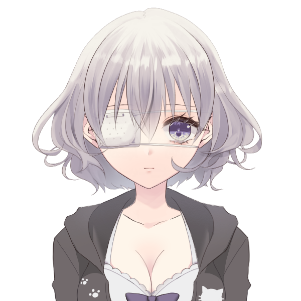
雲峰詩音 :
「…………」
姉と色違いの水着を着て、兄とお揃いのパーカーを羽織っているが、スクール水着以外着たことがないから少し落ち着かなさそうにしている
ヴォルグ :
「意外と寒さは平気だな。」
夏特有の日差しと人混みのお陰か安心したように
高嶺紅林栖 : 「それは良かったじゃない」下着泥棒対策に《ポケットディメンジョン》内部で着替えを済ませてきた
巨肩 矢委人 :
「屋内だと、その中は温かめに設定されてることが多いみたいだからな。水に入っちゃえば流石に冷えてくると思うが」
ルーズタイプ(ズボンみたいな見た目のやつ)で来たぞ
フランベルジュ :
「そうねっ！絶好のプール日和っ！」
ふりふりのワンピースの様な水着を着て登場
雲峰詩音 : 「……よし、じゃあ……見張るわ」 プールには入ろうとせず、更衣室をジッと睨んでる
ヴォルグ : 「熱中症おこすぞ。」
雲峰詩音 : 「大丈夫よ、水分は取るわ」
高嶺紅林栖 : 「それ以前の問題でしょう……」
高嶺紅林栖 : 「ここでずっと張っていても"奴"が通るとは限らないですし……」
高嶺紅林栖 : 「もし監視しているコトを気取られたら、元も子もないでしょう」
雲峰詩音 : 「それは……そうだけど……」
フランベルジュ : 「そうね。あとずっと更衣室を見ているのは周囲からも怪しく見られるかも…！」
雲峰詩音 : 「そうかしら……じゃあ、どうすればいいの？」
高嶺紅林栖 : 「──普通に遊んだらいいんじゃないかしら？」
雲峰詩音 : 「遊ぶ……？」 考えもしなかったのか、きょとんとしてる
高嶺紅林栖 : 「今までもそうだったでしょう」
高嶺紅林栖 : 「まあ、全員が全力で遊ぶのは、それはそれで問題だけれど……」
高嶺紅林栖 : 「一人の監視役をローテーションで回す方がいいんじゃない？」怪しまれないように
雲峰詩音 : 「……そう、ね。じゃあ、それで良いわ」 確かにずっと遊んでいたことに今更ハッとする
フランベルジュ : 「ええ、ええ。適度に遊びつつ、監視もする！これで良いんじゃないのかしら！」
巨肩 矢委人 : 「それで良さそうかな。ただ…どうしようか、男女のソレを考えると入り口ぐらいしか監視できないけど」
雲峰詩音 : 「更衣室の中で見張っても警戒して現れなさそうだし、入口で十分よ」
高嶺紅林栖 : 「……そうね、それでいいんじゃないかしら」
高嶺紅林栖 : 「あんまりしっかり監視しようとすると、今度はワタクシ達が下着泥棒に疑われかねませんもの」
巨肩 矢委人 : 「そうだな、3人はまだしも…俺やヴォルグはちょっとな…絵面が」
雲峰詩音 : 「絵面が……何？」 別におかしいとは思っていない
ヴォルグ : 「何か問題が？」 何も気付いていない
高嶺紅林栖 : 「──変態っぽい、という話でしょう」言葉のナイフ！
フランベルジュ : 「あは～、世間の風当たり～！」
フランベルジュ : 「でもでも、ガッツリ見るって訳じゃないし～……そこは大丈夫かな～？いざとなったらヘルプに入るよ～」
巨肩 矢委人 : 「そうだな…妙なことになったら助けに入って欲しい」
高嶺紅林栖 : 「気が向いたらね」肩を竦めて笑う
ヴォルグ :
「ひとまず最初は俺が様子を見ようか。」
寒いし、と言いながら立候補
雲峰詩音 : 「それなら、任せるわ」
フランベルジュ : 「りょうかーい、任せちゃう！」
高嶺紅林栖 : 「それでは、ワタクシ達は行きましょうか」ウォータースライダーが目玉みたいね、とあたりを見回す
雲峰詩音 : 「えぇ、行ってくるわ。お兄様」
フランベルジュ : 「何かあったら教えてねっ！」
ヴォルグ : 家族と更衣室のどちらも監視できる場所に座り込むとひらひらと適当に手を振って見送る
巨肩 矢委人 : 皆が行く方についていくぜ
高嶺紅林栖 : 「──まずは浮き輪を買いに行きましょう」
雲峰詩音 : 「……泳げないの？」
高嶺紅林栖 : 「……癇に障る物言いをしますわね」
高嶺紅林栖 : 「泳ぐ必要がなかったのよ、ドイツの学校では水泳は必修科目ではないから」
雲峰詩音 : 「そうなのね……知らなかったわ」
巨肩 矢委人 :
「あ～、履修しない国もあるのか、なるほどな…」
納得しちぇいる
フランベルジュ : 「そうね～、いっそ泳ぐ練習もしちゃう～？」
高嶺紅林栖 : 「ん～……」
高嶺紅林栖 : 「そもそもの話、アナタ達こそ泳げますの？」
雲峰詩音 : 「泳げるわ」
フランベルジュ :
「もちろんっ」
グッと親指を立てて見せる
巨肩 矢委人 :
「ああ、泳げる。特別な理由が無ければチルドレンの訓練にもあるしな」
グッ
高嶺紅林栖 : 「ふうん……日本は島国だから水泳が必須科目とは聞きますけれど……」
高嶺紅林栖 : 「日本出身ではないお母様も泳げるのね？」
フランベルジュ : 「ふふふ、長年生きてるとね～…泳ぎが必要な場面ってたくさんあるのよ～……」
高嶺紅林栖 : 「なるほど？」どんな人生を送ってきたのお母様、と内心おもいつつ
高嶺紅林栖 : 「──ではワタクシもお母様に倣って、水泳を教わるとしましょうか」
フランベルジュ : 「ふふふ、水泳は運動としても良いよ～。ママ、張り切って教えちゃう！」
高嶺紅林栖 : 「見た目としてはお父様の方が教え上手そうですけれど」教官いじり
巨肩 矢委人 :
「残念ながら教え方は教わってないんだ…希望があるなら俺も頑張るが」
イジられすぎた男
高嶺紅林栖 : 「ではお父様とお母様には、思うさま教鞭を振るっていただく事にいたしましょうか」穏やかに微笑む
雲峰詩音 : 「泳げるようになるといいわね、お姉様」
高嶺紅林栖 : 「……絶対に泳げるようになってあげますわ」泳げる妹からの言葉が、少し上から目線に感じたのかムッとして
雲峰詩音 : なんでムッとしてるのか分からない様子で、25ｍプールの方に歩いて行きましょう。
フランベルジュ :
「ヴォルグも泳げるのかしら～、後で聞いてみよっと。」
チラッと後ろを振り返ってから着いて行きますます
GM : では、ヴォルグに初めの見張りを任せた4人は25mプールへと向かいます。
GM : こちらのプールは人気の流れるプールとは違って泳いでる人はまちまちという感じ。泳ぎの練習をするにはちょうど良さそうです。
雲峰詩音 : 「こっちは結構人が少ないわね」
フランベルジュ : 「みんな目玉の方に行ってるのかな～？」
巨肩 矢委人 : 「特に色のないプールだからね。浮きとかもあるし、25mしっかり使えそうだ」
高嶺紅林栖 : 「あんまり人混みに入るのはイヤだし丁度いいわ」
高嶺紅林栖 : 「10歳の頃、母国の人混みで妻子持ちのオジサマに誘拐されかけたコトあるのよね」
雲峰詩音 : 「お嬢様だから……身代金目的かしら」 プールサイドで準備体操してる
高嶺紅林栖 : 「いいえ？ ワタクシに恋してしまったって」同じく準備体操しながら
雲峰詩音 : 「こい……？」 ぽかーんとしてる
巨肩 矢委人 : 「それは…なんというか…災難だ…」
高嶺紅林栖 : 「その頃から雑誌に出ていたから、周りの人々には次々と告白されていたし……」
高嶺紅林栖 : 「恋されるコト自体にフシギはなかったけれど、あの時ばかりは驚きましたわね……」
巨肩 矢委人 :
「そこは不思議じゃないんだ…」
独特な価値観に感じ入る
フランベルジュ :
「……理由はどうあれ、犯罪だね……家族と離されなくて良かった……。」
苦笑いを浮かべながら足をぐいぐい延ばしている
高嶺紅林栖 : 「皆様はワタクシに恋をしないように気をつけてくださいましね？」
雲峰詩音 : 「…………」 ここなら人も少ないし大丈夫だろう、とパーカーを脱いで飛び込み台の近くに畳んで置いて
雲峰詩音 : 「……しないから大丈夫よ」 飛び込みの姿勢のままそう答え
雲峰詩音 : ぽーんとプールに飛び込んで入って、クロールですいすい泳いで行く。
高嶺紅林栖 : 「……本当に泳げましたのね」思ったよりキレイに泳ぐものだから感嘆の声を漏らす
フランベルジュ : 「お～、綺麗なフォーム！」
巨肩 矢委人 :
「俺もちょっと…1往復だけしとくか、水泳の訓練はさほど多くはないからちょっと慣らしとこう」
水に入った状態で壁を蹴り、バタフライでザバザバ進んで行く 50m
フランベルジュ : 「パパもすごーい！…オーヴァードの水泳大会とか、どこかで開かれてないかしら……」
フランベルジュ : 「……紅林栖は水に入らないの？ママと一緒に入る？」
高嶺紅林栖 : 「子供じゃないんだから一人で入りますわよ」
高嶺紅林栖 : 「…………」
高嶺紅林栖 : 「足、付きますわよね？ この深さ？」ちょっと心配
フランベルジュ :
「紅林栖の身長なら届くんじゃないかなー？」
よいしょ、と入水して深さを確かめてみる
GM : 言うてたぶん110cmくらい
高嶺紅林栖 : 「……お母様でもアタマが出ているのだし、大丈夫そうね」
巨肩 矢委人 :
「ああ、ただ確認はしてないが、傾斜が無いとも限らないから気をつけてな」
戻ってきたぜ ｻﾞﾊﾞｧ…
高嶺紅林栖 : 「ええ」と足からゆっくり入水！
高嶺紅林栖 : 「……うん、大丈夫ですわ」ぷかぷかと少し浮いている
雲峰詩音 : 「……こわくない？」 平泳ぎで戻ってきて
高嶺紅林栖 : 「まさか！ ジェットコースターの時にも言ったでしょう？」
高嶺紅林栖 : 「怖い訳ありませんわよ！」まあ少し不安ではありますが、と呟く
雲峰詩音 : 「そう……。わたしは昔怖かったから、凄いわね……」
フランベルジュ :
「ナイスな心意気！」
紅林栖の周りをすいすいと回って
雲峰詩音 :
「……じゃあわたし、向こうで泳いでいるわ」
露出が多いから家族に触れないようにしたいらしい
高嶺紅林栖 : 「アナタは一人で泳ぐの？」
雲峰詩音 : 「……えぇ。教えるの下手だから」 目を伏せながらそう言う
高嶺紅林栖 : 「でも、フォームが一番キレイだったのはアナタでしょう」他人をキレイと素直に呼ぶ姉
雲峰詩音 : 「……そう、かしら」 驚いたように顔を上げる
高嶺紅林栖 : 「ワタクシが言うのだから間違いないわ」
高嶺紅林栖 : 「……それでワタクシとしては、アナタのフォームを覚えたいのだけれど」
高嶺紅林栖 : 「教えてくださらないのかしら？」確かに教えるのは下手そうだけどフォームを直すくらいはできるでしょう、と諭す
雲峰詩音 : 「…………」
雲峰詩音 : 「……そう、言うのなら……分かったわ。上手く伝えられるか、分からないけど……」
雲峰詩音 : 「（お姉様が、わたしを頼るなんて……あるのね……）」 奇妙な感情を覚えながら、プールの水面を見つめている
高嶺紅林栖 : 「そう！ だったら頑張って頂戴！！」
高嶺紅林栖 : 「(アナタの泳ぎを越えて、絶対に見返してさしあげますからね～～～～ッ！！！！)」それは反骨心からくる依頼であった
雲峰詩音 :
「……えぇ」
頼られて嬉しいが、触れないように気をつけないとという不安を抱えながら頷く
GM : では、練習中のクリスタちゃんは［肉体判定：難易度8］、その他の人は［肉体判定：難易度4］で溺れずに上手く泳げます！
高嶺紅林栖 : 5dx 絶対に妹を越えますわ！！！！(5DX10) ＞ 10[3,5,6,8,10]+9[9] ＞ 19
高嶺紅林栖 : エクセレント！！！！！！
雲峰詩音 : 2dx ダイス二個なんよね～…(2DX10) ＞ 10[9,10]+2[2] ＞ 12
フランベルジュ : 2dx 限界を超える！！(2DX10) ＞ 8[2,8] ＞ 8
巨肩 矢委人 : 2dx こわい(2DX10) ＞ 7[6,7] ＞ 7
ヴォルグ : お嬢やる気満々すぎる（応援）
GM : それよ…ではみんなスイスイ泳げるしいつの間にかお姉様はすごく上手く泳げるようになってますね
高嶺紅林栖 : 「く、ふふ…！」
高嶺紅林栖 : 「オーホッホッホ…！！ 見なさいワタクシの華麗なこの泳ぎ…！！」美しいフォームでたのしそうに泳いでいる
雲峰詩音 : 「……すごいわ……もうあんなに泳げるなんて……」
フランベルジュ :
「すごーい！水泳選手みたーい！」
おー、と感嘆の目で眺めている
巨肩 矢委人 : 「流石だな…泳ぎはいちスキルとして有用だし、習得する機会があって良かった」
雲峰詩音 : 「わたしより、上手いかもしれないわね……」
高嶺紅林栖 : 「そうでしょう…！ でしょうとも…！！」褒められて嬉しそう
高嶺紅林栖 : 「ワタクシはアナタを越えましたわ！ シオン！！」
高嶺紅林栖 : 「これでもう！ "泳げないの？"などとは言わせませんわ～～～～！！」
雲峰詩音 : 「……えぇ、そうね」 プールの縁に腰かけて、足だけを水につけながら
雲峰詩音 : 「何となく……嬉しい気がするわ」 足を水でぱちゃぱちゃさせる
高嶺紅林栖 : 「……越えられて嬉しいなんて、可笑しなコトを仰るのね」
雲峰詩音 :
「そうかしら……」
自分でも自分の感情をあまりよく分かっていないのか、首を傾げる
高嶺紅林栖 : 「まあいいでしょう！ ならば祝いなさい！！ ワタクシが泳げるようになった記念すべき日を！！」そう言いながら泳いでいく
フランベルジュ :
「娘の成長を見られて、ママとっても嬉しいわ～」
パチパチと拍手して見送る
巨肩 矢委人 :
「新しいことができるようになるとやっぱり嬉しいよな…おめでとうおめでとう」
拍手～
ヴォルグ : 監視している位置からでも紅林栖の高笑いが聞こえたのか少し首を傾げて家族の様子を眺める、自分の居た位置に”フォールンスプライト：雪虫"を留まらせるとプールサイドへ近付いて
ヴォルグ :
「何か楽しいことしてる？」
すこし混ぜて欲しそうに聞いてみる
雲峰詩音 : 「お兄様」 座りながら見上げる
フランベルジュ :
「ヴォルグ！してるよ、楽しいこと～！」
手招きしてる
雲峰詩音 : 「……あ。交代かしら」
ヴォルグ :
「交代する？今は監視置いてるけど…」
所有しているフォールンスプライトの姿を見せるように手の平を上に向けると雪のような小さな虫が浮かぶ
雲峰詩音 : 「……？そんなのあったの……？」
巨肩 矢委人 :
「ん？なんかあるのか」
監視できるものがあるの？の意
フランベルジュ :
「虫さん～？」
マジマジと見て
高嶺紅林栖 : 「──監視ドローンがあるなら最初から言いなさいよ！？！？」
ヴォルグ :
「……？ あ、」
今気づいたと言いたげな間抜けな声をあげる
高嶺紅林栖 : 「はああ……もうおばかさん二号……」
雲峰詩音 : 「でも、それがあるなら一人ずつ交代しなくていいのね」
巨肩 矢委人 : 「そうだな、それを置いておけるならそうしようか。しばらく出せて置けるものなのか？それ」
フランベルジュ : 「そんなものがあったんだ…！それなら一緒に遊べるねっ！」
ヴォルグ :
「ああ問題ない、この形態ならずっと置いていても気づかれにくいしな。」
小さなフォールンスプライトとじゃれるように指でつつくとふわりと浮かんで
雲峰詩音 : 「じゃあ、良いんじゃないかしら。……お兄様も入る？」 再びプールに浸かって
ヴォルグ :
先ほどまで自分のいた位置へ監視を配置すると
「冷たくない…？」と恐る恐る
雲峰詩音 : 「冷たくて、気持ちいいわ……」 犬かきしてる
巨肩 矢委人 :
「少しづつ鳴らしていこうか、こっちの方が浅いぞ」
ちゃぷ
フランベルジュ : 「足から入ってみる～？」
ヴォルグ : 「…泳げないと思われてる？」
高嶺紅林栖 : 「あら、泳げるの？」ちなみにワタクシはスイスイ泳げますけど
ヴォルグ :
「教わってた様に見えたけど…」
何気にきちんと見てる発言
高嶺紅林栖 : 「…………」
高嶺紅林栖 : 「ちゃんと監視に専念しなさいよ」不貞腐れたように
ヴォルグ :
「ちゃんと両方見てたさ。」
肩を竦めて笑うと水にそっと入りながら
GM : では、折角だからヴォルグくんも目標値4どうぞ！
ヴォルグ : はーい
ヴォルグ : 7dx(7DX10) ＞ 10[1,5,5,8,8,10,10]+10[7,10]+1[1] ＞ 21
高嶺紅林栖 : ま、負けたッ！？！？！？ このワタクシがッ！？！？！？！？
GM : いや～もうイルカのように華麗に泳げますね
ヴォルグ :
「…少し冷たいな。」
運動は好きなのか少しわくわくしたように水を見るとざぶんと潜り、壁をキックしたかと思えばいつのまにか25m先の壁付近の水面が軽く揺れる、そのまま水しぶきも立てず静かにみんなの元まで戻ってきて
フランベルジュ : 「おー……おおっ！？さ、さかな……！？」
巨肩 矢委人 : 「おお……見事なもんだな…静かで流麗だ」
巨肩 矢委人 : 「けのびでどこまで進んだのかすら分からなかった」
ヴォルグ :
「バタフライ？とかは分からないけどな。」
水から出てきてぷはっと息をすると前髪を軽く手で避けながらぷるぷると頭を振る
雲峰詩音 : 「とても上手ね……」
雲峰詩音 : 「寒いのが苦手ってだけだったのね」 泳げないと思っていたわけではないけど
ヴォルグ :
「寒くても泳がなきゃいけない時はあるからな。」
普通の水はキツい、と言いながら
高嶺紅林栖 : 「ぐ、ぐぬぬ……！」明らかに今のワタクシより上手い……！
高嶺紅林栖 : 「お兄様！ 《オリジン：フィッシュ》なのではなくて！？」そんなものはない
ヴォルグ : 「いや？レジェンドだけど。」 けろり
雲峰詩音 : 「そもそも、そんなカテゴリーは無いわ」 ぷかぷか仰向けで浮いてる
フランベルジュ :
「伝承系なんだね～」
ぷか～っと身体を浮かべている
巨肩 矢委人 :
「そういえばヴォルグって…”何”なんだ？」
聞いてたら消しとくわね
ヴォルグ :
「ああ言ってなかったか…"雪女"だよ、日本のおとぎ話にあるだろ？」
母さんと紅林栖は知ってるかな、と考えつつ
フランベルジュ : 「お～、雪女…日本の妖怪？だっけ～……あれ、女～……？」
巨肩 矢委人 : 「ほう、雪女……そうだね、不思議な感じだ。寒さに弱いのも解せないけど…何か特有のロジックが働いてるんだろうか」
巨肩 矢委人 :
「説明し辛い部分なら別に良いよ」
配慮
ヴォルグ :
「んー…何故だろうな？あくまで"物語"の実体化で色々なものが誇張されすぎているのかもしれない。」
ほら、物語の主人公って男だろ？と自分なりの仮設を立ててみる
ヴォルグ : 「体感温度はサラマンダーにしては冷気が強すぎるのが原因らしいが、とにかく寒くて冷たいイメージなんだろう。」
巨肩 矢委人 :
「あー…物語『雪女』に現れる”雪女”ではなく、物語そのものを抽象的に切り抜いた要素の集合体といった感じだろうか」
勤勉者特有の超速理解
フランベルジュ :
「そういう形での顕現も可能なんだ…。世界には不思議なことがたくさんあるな～……」
ふむふむと頷いてる
ヴォルグ :
「その通り、俺は"彼女自身"じゃなく彼女の"噂"が実体化したもの という事だな。」
矢委人パパの言葉に同意して
巨肩 矢委人 : 「RBは難しいな…座学である程度履修はしているが、ルールがいまいち把握しきれない」
高嶺紅林栖 : 「ふむ？ カレーに例えるのなら、メインのカレールーだけじゃなくてカレー＆ライスが出てくるのと同じってコトね？」シーフードカレーを思いだしたのか謎の例え方をする
ヴォルグ :
「明日の夕飯もカレーにする？」
プールサイドに寄り掛かりながら
フランベルジュ : 「そう……なのかな？もしかして紅林栖、カレーが気に入った～？」
高嶺紅林栖 : 「……まあ、気に入らなかったと言えばウソになるかもしれませんが」
高嶺紅林栖 : 「何日もカレーはイヤなので、別のメニューを用意してくださいな」
雲峰詩音 : 「わたしは良いけど……」
フランベルジュ :
「ふふふ、ママに抜かりなし…別のメニューを考えてあるよ～……」
腑抜けた声でぷか～っと漂っている
高嶺紅林栖 : 「それはいいのですけど」
高嶺紅林栖 : 「屋外でこういう話をする時は、もっと気を付けた方がいいかもしれませんわね？」ここに他人はほぼいないけれど、世界の秘密(レネゲイド)についての話ですし
フランベルジュ : 「たしかに～……ちょっと気を付けるねっ」
ヴォルグ : 「確かに、良くてもイタイ奴に見られるな。」
雲峰詩音 : 「パパラッチが聞いていないとも限らないわね」
巨肩 矢委人 :
「向こうの目の方は問題無さそうなら…どうしようか」
お嬢も泳ぎ方覚えられたし
高嶺紅林栖 : 「そうね……お兄様のウォーミングアップも済んだでしょうし……」
高嶺紅林栖 : 「行きましょうか……！」
ヴォルグ : 「どこに？」
高嶺紅林栖 : 「勿論！ この薄雲ランドにおける目玉アトラクション！」
高嶺紅林栖 : 「──ウォータースライダー・降水レインメーカーに！！」
巨肩 矢委人 : 「降水…レインメーカー…？」
フランベルジュ :
「ウォータースライダー！」
ワクワクとした声色で反復する
雲峰詩音 : 「そんな名前だったのね」
ヴォルグ : 「ウォータースライダー…？」
高嶺紅林栖 : 「あら？ 約一名はウォータースライダーを御存知ない？」
雲峰詩音 : 「わたしもちゃんと知っているわけではないけど……何となく、名前から想像は出来るわ。ジェットコースターと似たようなものでしょう」
高嶺紅林栖 : 「え……」
高嶺紅林栖 : 「いえ、違いますけど……」
雲峰詩音 : 「違うの……？」
高嶺紅林栖 : 「いいかしら、ウォータースライダーというのは」
高嶺紅林栖 : 「平たく言ってしまえば、水が流れる滑り台よ！」
高嶺紅林栖 : 「当然、滑り台は生身で乗るモノ……」
高嶺紅林栖 : 「ジェットコースターと同じ速度を出してたら、死人が出ますわよ……」
ヴォルグ : 「なるほど、あそこまでスピードは出ないんだな。」
フランベルジュ : 「あのスピードで滑ったら大根おろしだね～……」
雲峰詩音 : 「……何となく分かったわ」
高嶺紅林栖 : 「それなら結構だけれど」
高嶺紅林栖 : 「ウォータースライダーは日本発祥なのだから、日本人ならそのくらい知っておきなさい？」
巨肩 矢委人 :
「その子にもよるだろうけど、興味のない子は本当に興味がないからね…」
チルドレン養成施設を思い出しつつ
雲峰詩音 : 「そうね、任務で来ることもなかったし今まで興味が無かったわ」
高嶺紅林栖 : 「……つまらない人生を送ってますのね、チルドレンって」
高嶺紅林栖 : 「ま、その話は置いておくとして」
高嶺紅林栖 : 「行くでしょう？ レインメーカー？ 目玉ですわよ？」
雲峰詩音 :
「えぇ、行くわ。説明を聞いてみたら、少しだけ興味も出てきたから……」
梯子を登ってプールサイドに上がり、パーカーを着直す
ヴォルグ :
「皆が行くなら行こうかな」
プールから上がると上着の水を絞りながら
フランベルジュ : 「ママも行くよ～！実は滑るの初めてかも～！」
GM : では、貴方達はリニューアルされた薄雲ランドの目玉アトラクション・降水レインメーカーへと向かいます。
GM : 場所はそう遠くなく、【降水レインメーカー】とポップな字体で書かれた看板の下をくぐりぬけ、長い空色の階段をぐるぐると登っていく。
GM : 階段の1番上は雲を模した広い踊り場になっており、3つあるスライダーの入口それぞれに十数人ずつが並んで順番を待っている。
GM : どうやらアトラクションは最大2人乗りで1人で滑ることも可能なようです。
雲峰詩音 : 「……二人乗りなのね」 ウォータースライダーを見上げる
ヴォルグ :
「２人か…１人でもいけるみたいだな。」
８の字の大きな浮き輪と通常の浮き輪が並んでいる様子を見て
巨肩 矢委人 : 「なるほど、じゃぁどういう組み合わせにしようか」
雲峰詩音 : 「わたしは一人で乗るわ」 矢委人の台詞に被さるように食い気味に言う
ヴォルグ : 「どうしても１人はあぶれてしまうしな…一人でいいのか？」 いちおう再確認しつつ
雲峰詩音 : 「大丈夫よ」 こくこく頷く
高嶺紅林栖 : 「……それならいいんじゃないかしら」食い気味すぎた気はするけれど、と少し疑念を抱く
ヴォルグ :
「俺たちも決めておくか。」
組み合わせはどうする？と尋ねる
フランベルジュ :
「……そうだね～、誰と誰がイイかな～？」
詩音が1人なのはちょっと寂しいと思いつつ
高嶺紅林栖 : 「──男女で分かれた方が良いのではなくて？」
フランベルジュ : 「男女って言うと～……ママと紅林栖、パパとヴォルグになるかしら？」
高嶺紅林栖 : 「ええ、そう」
巨肩 矢委人 : 「紅林栖がそうしたいなら俺はそれで構わないぞ。中々ムサ苦しいレーンが一つできあがるけど…」
ヴォルグ :
「ちゃんと滑るかな…？」
自分と矢委人の体格を改めて考えながら
雲峰詩音 : 「重量制限があるかどうか、スタッフの人に確認すればいいわ」
高嶺紅林栖 : 「……まあ、ダメなら止められるでしょう」
高嶺紅林栖 : 「それに最終的にはお父様が解決するでしょうから心配いらないわ」≪テレキネシス≫でなんとかしなさいの意
雲峰詩音 : 「……？そう、じゃあ大丈夫ね」 ウォータースライダーの方へ歩いていく
フランベルジュ : 「パパとヴォルグのはすっごい勢いで滑っちゃうかもね！」
巨肩 矢委人 : 「重さがあればそれだけ加速するからな、多分最も早い」
高嶺紅林栖 : 「スリルがあってたのしそうね？」
ヴォルグ :
「楽しいならいいか」
気楽な様子で受け入れる
巨肩 矢委人 : 真ん中のレーンの浮き輪に立とう
高嶺紅林栖 : 「……ワタクシ達は本来のレインメーカーを楽しみましょう」人混みではぐれたくないので、小さなフランちゃんの手を取って、右のレーンの浮き輪まで連れていく
フランベルジュ :
「は～い、ママとひと滑りしましょっ！」
手を取られて、トテトテと着いて行く
雲峰詩音 : じゃあ少し安心した様子で、一人で左のレーンの方に並びに行こう。
GM :
「では、浮き輪に座ってください。横にあるハンドルをしっかり握っていてくださいね」
ポニーテールにラッシュガードを羽織った夏らしい装いの女性スタッフが促してくれる。
GM : 「少しお待ちください。合図をしたら滑り始めてくださいね～」
GM :
……そうして、1分程経過したところで
「…はい！では、降水レインメーカー発進です！雲の上から行くスリルある空の旅、楽しんできてくださいね」と声をかけてくれる。
GM :
少し前に進むように力をかけると浮き輪は水流に乗って滑り始めた。
そこそこ流れが速くあっという間に浮き輪はスピードに乗り、うねるようなコースを水飛沫を上げながら勢いよく進んでいく。
雲峰詩音 : 「おぉ～……」 一人なので気の抜けた声を出して滑って行ってる
巨肩 矢委人 :
「回るか…ヴォルグ…！」
浮き輪の取っ手を持って力を込める
ヴォルグ :
「？？？」
言葉の意味は分かっていないが真似をして取っ手をしっかりと持つ
GM : 矢委人くんとヴォルグくんの乗った浮き輪は力が加わりカーブに合わせてグルッと回転する。
ヴォルグ : 予想外に楽しかったのか矢委人の真似をして次のカーブにも回転を入れようと考え、コツを掴んだ様子で取っ手をしっかりと持ち直す
高嶺紅林栖 : 「──ジェットコースターほどの速度は出ていないハズだけれど、この目線の高さだとハイスピードに感じるモノですわね」
フランベルジュ :
「わは～！あははは～！！そうだね～、ぐわんぐわんして楽し～！！」
フランの笑い声がチューブ内に反響する
高嶺紅林栖 : 「些か速すぎる気もしますが……」
高嶺紅林栖 : 「まあ、お母様が楽しそうで何よりですわ」つられて微笑む
フランベルジュ :
「楽しいよー！紅林栖も楽しい～？おっとと」
遠心力で外に流されそうになる
高嶺紅林栖 : 「ふふ、無粋なコトをお聞きにならないで」笑みで返す
フランベルジュ :
「そっか！あははは！」
多くは語らず、その声と表情で察する
GM : しばらくチューブ状になったスライダーの薄暗闇の中を進んでいたが、次の瞬間眩しさと共に急に視界が開ける。
GM : ……貴方達を迎えるはどこまでも広がる青空と太陽。建物の外に出たスライダーは壁が透明になっており、まるで本当に空に放り出されたかのようだった。
GM : 照りつける太陽…それ対し勢いよく上がる水飛沫の冷たさが心地よく、光を受けた水面はキラキラと輝いている。
雲峰詩音 : 「（……綺麗だわ）」 もうすぐ水に落ちることも忘れて眺めている
フランベルジュ :
「出口だ～！着水よーい！」
グッと身を構えて
巨肩 矢委人 :
「よし行くぞ！」
飛び出せ世界
高嶺紅林栖 : 「……！」開けた視界に息を呑む
ヴォルグ :
「……」
少し眩しそうに目を細めて構える
GM : コースが幾度かのカーブを迎えたあと……最後に勢いよくプールの中へと着水する！
GM : ……一瞬遅れて飛び混んだ真ん中の父と兄のコンビが明らかに重量が明らかに過多な上に回っていた勢いもあり、水柱と呼べる程の飛沫が上がり、周りでその様子を眺めていた客からワッと歓声が上がる。
GM : その衝撃でザバーッと波が起こり、両脇の母と姉、妹の乗った浮き輪は煽られて転覆します。
GM : なんてこった、泳げるようになっておいてよかったねお姉様…
高嶺紅林栖 : 「──ああ！ もう！ いい気分だったのに最悪！！」ぷは、とヘアスタイルが乱れた状態で浮かんでくる
フランベルジュ :
「───ぷはっ！な、なに！？ツナミ！！？」
水面から顔を出してキョロキョロと見回す
雲峰詩音 : 「……っ。びっくりした……」 転覆した勢いが強すぎて、水面に上がった時には眼帯が取れてる
巨肩 矢委人 :
「フゥ、”良い”な…」
勢いのまま浮き輪から落ちたので、びしょびしょの髪を手で撫でつけながら立ち上がる
ヴォルグ :
「…っ、はは！」
とても楽しそうに水から立ち上がり、下がり眉が協調されるせいか少しなさけないような幼い表情で僅かに笑う
高嶺紅林栖 : 「……何を楽しそうに笑っていますの！！」両手で水鉄砲を作って、男子二人に向かって放ちます(二連射)
巨肩 矢委人 :
「うお、どうしたんだ紅林栖、何をそんなﾌﾞｼ」
何だ何だと反応をしていたら顔に喰らった人
ヴォルグ :
「何か怒ってる？」
転覆させた自覚がないのか水鉄砲を腕でガードしながらキョトンとしている
高嶺紅林栖 : 「はあ…！ この無自覚な男達…！！」
高嶺紅林栖 : 「アナタ達！ 体重が重い分だけ速度が出るから、気を付けて乗るかと思ったら！！」
高嶺紅林栖 : 「逆に全力で回転させてましたわよね！？ なんですのアレ！？！？」
ヴォルグ :
「なんだろうな？父さんに教わった。」
楽しかった、と言いつつ悪気０
高嶺紅林栖 : 「…………」ヤスト君を睨む
巨肩 矢委人 :
「ああ、ちょうど良かったから回った。楽しそうだったし」
あっけらかん
高嶺紅林栖 : 「アナタ方はたのしかったかもしれませんが、その飛沫のせいで、ワタクシ達は水を差されましたわよ！！ 文字通りね！！！！」
ヴォルグ : 「うまい。」
巨肩 矢委人 :
「こういう場所って水に落ちるのもひっくるめて楽しむものだと思ってるんだんがなぁ…スライダーからの落下なんて大体ひっくり返るんだし…」
ﾓﾆｮ…
高嶺紅林栖 : 「ワタクシはプールの水を呑みかけるような楽しさは求めてませんから！」理不尽！！
フランベルジュ :
「ぷふふ、男の子してる～！」
パパと長男を指さしてケラケラと笑う
雲峰詩音 : 「……無いわ……」 その間、ずっと水の中を覗いて眼帯を探してる
巨肩 矢委人 : 「…？どうしたんだ、詩音」
雲峰詩音 : 「眼帯が無くなったの……」 振り返って、右の瞼を瞑ったまま答える
ヴォルグ :
「紅林栖も回転やってみる？」
単にもう一回乗りたいだけである、ぷかぷかと目の前に流れてきた詩音の眼帯を拾いあげながら
高嶺紅林栖 : 「絶対にしません！！！！！！」
高嶺紅林栖 : 「……はあ、もういいわ、あまり怒ると肌に悪いし」
高嶺紅林栖 : 「今はそれよりシオンの落とし物よね？ お兄様が持ってるそれは眼帯？」
ヴォルグ :
「流れてきた…」
紅林栖の質問に頷くと周りを見回し、詩音が眼帯を探している様子に気づくと近付いて眼帯を差し出す
ヴォルグ : 「探してるのはこれか？」
雲峰詩音 : 「……！えぇ、それよ。ありがとう、お兄様……」 少し慌てた様子で受け取る
雲峰詩音 :
「あんなに強く倒れると思ってなかったから、油断してた……」
防水仕様だけど流石にびちょびちょに濡れてる眼帯を手で絞っている
巨肩 矢委人 : 「悪い悪い、目は大丈夫そうか？」
雲峰詩音 : 「大丈夫よ。今怪我してるわけじゃないから……」 眼帯をつけ直す
ヴォルグ :
「普通はあんな水飛沫はたたないんだな。」
後続で滑ってきた一般客を眺めながら自分たちの着水の瞬間を思い出す
高嶺紅林栖 : 「ほら被害者が二人もいるのだから、お父様とお兄様は反省なさって？」
ヴォルグ :
「む、悪かった…次は一緒に乗ることにしよう。」
転覆するかしないかのみで考えているようだ
巨肩 矢委人 :
「次は詩音も回る側になろうな」
それなら安心だ
雲峰詩音 : 「回る……」 少し考えて
雲峰詩音 : 「……うん。そうする」 面白そうに感じたのか、少し楽し気に頷く
高嶺紅林栖 : 「………………」被害者の会についてくれないの、という顔をシオンちゃんに向け
高嶺紅林栖 : 「はあ……染まってきましたわね、アナタも……」そう肩を竦めて溜息をつく
雲峰詩音 : 「そう……かしら……？」
GM : では、そのあともう一度レインメーカーで遊びたくて足早に階段を上がってみたり、波が立つプールや流れるプールで流されたりと一通り施設内を周遊する。
GM : しかし、その間怪しい人物が更衣室に出入りした様子はなく、プールから上がったあと着替える際にそれとなく辺りに気を配ってみてもそれらしい騒ぎが起きている様子はなかった。
薄雲ランド
GM : 再び屋外に出た貴方達…時刻はそろそろ夕方の16時頃かな
雲峰詩音 : 「……結局、下着泥棒は出なかったわね」 残念そうに
巨肩 矢委人 : 「いつでも活動しているわけではないだろうからな、そういう日もあるんだろうし…仕方ない」
フランベルジュ :
「ん～……！今日はハズレ、だったのかな～……？」
グッグッと体を伸ばして
ヴォルグ :
「ということはまた来るのか？」
タオルをかぶり、少し眠たそうに歩きながらまんざらでもない様子で
雲峰詩音 : 「でも、チケットが無いわ」
高嶺紅林栖 : 「チケットは普通に買えばいいでしょうけど、そもそも此処にいるって確証もなかった訳ですし」
高嶺紅林栖 : 「再調査して他に目星をつけた方がいいでしょうね」
雲峰詩音 : 「……それもそうね」
フランベルジュ : 「だね～。でも楽しかった～！」
雲峰詩音 : 「楽しかった……？パパラッチを見つけられなかったのに？」 不思議そうにしてる
ヴォルグ :
「詩音は楽しくなかった？」
ジェットコースターとかプールとか、と調査以外の具体例をあげて
雲峰詩音 : 「…………」 今日の出来事を思い返す
雲峰詩音 : 「……そう、ね……」
雲峰詩音 : 「楽しかった……のかも、しれないわ……」 胸の辺りを手でギュッとして、目を伏せながらそう答える
ヴォルグ : 答えを黙って待っていたが返答に僅かに表情を和らげると「それなら良かった。」とだけ返す
高嶺紅林栖 : 「…………」
フランベルジュ : 「ふふふ。言葉にできなくても、ワクワクドキドキを感じられたのなら楽しめた証拠よっ♪」
巨肩 矢委人 : 「良かった。それなら来た甲斐があったっていうものだろう、きっと」
雲峰詩音 : 「そういうものなのかしら……？」
GM : じゃあ、皆さんここで［知覚判定：難易度6］をどうぞ！
フランベルジュ : 2dx＋1 だっしゃー！(2DX10+1) ＞ 10[7,10]+5[5]+1 ＞ 16
雲峰詩音 : 4dx(4DX10) ＞ 9[3,3,4,9] ＞ 9
巨肩 矢委人 : 3dx 見せてやるぜ(3DX10) ＞ 4[3,4,4] ＞ 4
高嶺紅林栖 : 6dx+1 このシーンの全判定クリティカルがかかっている(6DX10+1) ＞ 10[3,3,5,8,10,10]+10[5,10]+6[6]+1 ＞ 27
高嶺紅林栖 : えっ、なに
雲峰詩音 : こわ
フランベルジュ : 知覚過敏？？
高嶺紅林栖 : このシーン、今まで全判定クリティカルしてるの怖いよクリスタ…
巨肩 矢委人 : ｷｰﾝとする？
ヴォルグ : 5dx(5DX10) ＞ 8[3,5,7,7,8] ＞ 8
GM : では、矢委人くん以外の4人は少し向こうに見知った姿を見かける。
GM : 昨日一緒にお茶会をした鳩ヶ谷一家だ。
GM : しかし、和気あいあいと遊園地を楽しんでいる様子ではなく、何かきょろきょろとしながら人気のない方向へと進んでいる。
雲峰詩音 : 「あれは……」
高嶺紅林栖 : 「鳩ヶ谷一家、ね……」
フランベルジュ : 「なんか…周りを気にしてる…？」
ヴォルグ : 「楽しんでいる…ワケでもなさそうだな。」
巨肩 矢委人 :
「ん？」
気づいていない
高嶺紅林栖 : 「お父様はメガネを調整した方がいいかもしれないわね」
雲峰詩音 : 「あそこよ」 指差して教えてあげよう
巨肩 矢委人 : 「ああ、本当だ…妙に緊迫しているな」
雲峰詩音 : 「……何かあるのかも」
高嶺紅林栖 : 「……そうね」
高嶺紅林栖 : 「追ってみましょう？ 仮に見つかっても言い訳は立つわ？」
フランベルジュ : 「賛成。冤罪だったら悪いけど、少しつけさせてもらいましょ」
ヴォルグ : 「そうだな」
巨肩 矢委人 :
「ああ、俺も賛成する」
隠密！
雲峰詩音 : 「行きましょう」
雲峰詩音 : 後をつけていきます！
GM : 了解！何やら怪しい鳩ヶ谷一家を尾行しはじめたところでシーンエンドとなります。
シーン7 追跡の果て
GM : 鳩ヶ谷一家を追いかけた先に待っていたものは…登場ダイスどうぞ！
巨肩 矢委人 : 1d10+72(1D10+72) ＞ 7[7]+72 ＞ 79
フランベルジュ : 1d10＋65(1D10+65) ＞ 8[8]+65 ＞ 73
ヴォルグ : 1d10+77(1D10+77) ＞ 10[10]+77 ＞ 87
高嶺紅林栖 : 1d10+89(1D10+89) ＞ 3[3]+89 ＞ 92
雲峰詩音 : 1d10+71(1D10+71) ＞ 9[9]+71 ＞ 80
薄雲ランド
GM : 君たちが一家の後をつけると、人通りの少ない場所で一家と見知らぬ男性が何かの受け渡しを行っている現場を目撃する。
GM : 受け渡しているのは封筒のようだ。見知らぬ男性からそれを受け取ると雅人は胸にしまう。
GM : 男性はその場を去り、一家の会話が聞こえる。
鳩ヶ谷 雅人 : 「今回は羽振りがよくて良かったね」
鳩ヶ谷 アカネ : 「それね！せっかくだから今日パーッとやんない？アタシ焼肉超食いたいんだけど～！」
鳩ヶ谷 アカネ :
「いつも大人しいふりしてっから疲れるんだよね〜！」
頭の後ろで手を組む
鳩ヶ谷ルイ :
「みるくがおいちいところがいい」
ぺちぺちとベビーカーの縁を叩いて
鳩ヶ谷 雅人 : 「僕は美味しい果物が食べられるお店がいいなぁ」
鳩ヶ谷 雅人 : 「は～……ひと仕事終わったから気が抜けちゃったよ」
GM : 次の瞬間、ポンっと音を立てて雅人の足元から煙が上がる……
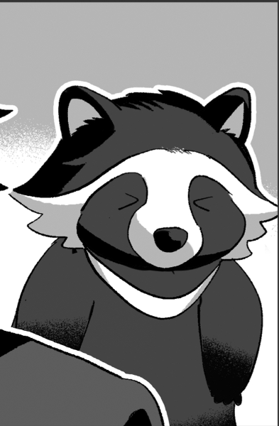
GM :
雅人の姿が消え、そこに現れたのは茶色い毛とふさふさの尻尾を持った動物
──タヌキだ。
鳩ヶ谷 アカネ : 「ちょっと、こんな所で動物に戻るなって！誰かに見られてたらどうすんの！」
GM : 喋る赤子に突然動物になる男、君たちは確信した……彼らはオーヴァードだと！
フランベルジュ :
「────よ、よーかい…！！」
呆然としたのか、口をパクパクさせて
雲峰詩音 : 「いや、オーヴァードだと思うわ……」 とはいえ驚いた様子で
巨肩 矢委人 : 「RB…？アニマルオーヴァード…？彼らがオーヴァードである可能性は考慮されたが、そういう…」
ヴォルグ :
「なにか可愛い生物が増えたが…あれがパパラッチか…？」
可愛らしいたぬきを眺めながらふむ…と考える
フランベルジュ :
「パパラッチ……らしくはない、かしら……。どちらかと言えば下請けかな……？」
ムムム、と頭をひねって
高嶺紅林栖 : 「だとしても、詳しい話を聞く必要はあるでしょうね」
雲峰詩音 : 「そうね……。今のところ、まだバレてないわ。もう少し観察してみましょう」
巨肩 矢委人 : 「全容が見えないな…」
高嶺紅林栖 : 「さっき会っていた男も追いたいところではあるけれどね…」観察に同意
GM : ……と、雅人の耳がピクリと反応するように動く！
鳩ヶ谷 雅人 :
「……！！！そこにいるのは誰……！？」
ハッとしたようにもとの人間の姿へと戻る。
高嶺紅林栖 : 「……気付かれてしまったみたいね？」
高嶺紅林栖 : 「けれど、むしろ好都合」と物陰から姿を見せる
雲峰詩音 : 「これ以上盗み見るのは無理そうね」 一緒に出ていこう
フランベルジュ : 「直接インタビューしちゃいましょ！」
巨肩 矢委人 : 「仕方ないか…できればもう少し探りを入れたかったが」
ヴォルグ :
「また人型に変身してしまったな。」
心なしか残念そうに出ていく
鳩ヶ谷 アカネ :
「アンタら高嶺の……！」
チッと舌打ちして
鳩ヶ谷 アカネ : 「見られちゃったからには仕方ないよね、ちょっと眠っててもらおっか！」
高嶺紅林栖 : 「あら……ワタクシ達はお話をしたいだけですのに……」
鳩ヶ谷 アカネ : 「お話？折角誘ってくれたところ悪いけど、アタシ難しい話とか嫌いなんだよね…！」
GM : そう言い放ったアカネは《ワーディング》を使用する。
高嶺紅林栖 : 「はあ、つれないですわね…… 折角、親睦を深めようと思ってましたのに……」事もなげにワーディングを受け流し、嘲るように口角を歪める
巨肩 矢委人 :
「まぁ、遅かれ早かれか」
当然効かぬ
雲峰詩音 : 「わたし達がオーヴァードってことは……この様子だと知られてはいなかったのかしら」
フランベルジュ :
「あら、昼間から大胆なことするのね？」
当然効果を受けつけないのでクスクスと笑って流す
ヴォルグ :
「眠気覚ましには丁度いいか。」
頭にかぶっていたタオルを首に掛け直しながら愉しそうに
鳩ヶ谷 アカネ :
「……っ！？」
「あーあ、アンタ達本当にオーヴァードだったってわけ…」
苦虫を噛み潰したような顔をしながら
雲峰詩音 : 「本当に……って、誰かから聞いていたの？」
鳩ヶ谷ルイ : 「……おねえちゃんのて」すっと詩音の方を指さす
雲峰詩音 : 「……っ！？あ……」 意味に気付く
巨肩 矢委人 : 「……？」
フランベルジュ : 「詩音の…手……？」
高嶺紅林栖 : 「(確信が持てたわ……シオンはワタクシ達に何かを隠している……でも、何を……)」
ヴォルグ :
「……」
なにか疑念を持ったような表情をして詩音の手を見るがすぐに視線を敵に戻す
鳩ヶ谷 雅人 : 「……そちらにも何か事情がありそうですが、こちらも正体を知られたからにはタダで帰す訳にはいきませんね……！」
GM : 鳩ヶ谷一家は臨戦態勢だ…！説得する、または詳しく話を聞くためには3人全員を倒す必要があります。
雲峰詩音 : 「……。何をしてたのか話してくれるなら危害を加えたりしない……って、言っても遅そうね……」
高嶺紅林栖 : 「ええ、申し訳ないけれど、少しだけ痛い目に遭ってもらいましょう」シオンの秘密は今は棚上げ！
フランベルジュ : 「話せる程度に無力化ってことだね！みんな行くよ～！」
巨肩 矢委人 :
「了解、戦闘行動を開始しましょう」
出でよナイフ
ヴォルグ :
「手加減は苦手なんだがな…」
懐からサバイバルナイフを取り出すと軽く回転させて逆手持ちにする
GM : では、鳩ヶ谷一家戦闘となります！
【行動値】
09 雲峰詩音
09 鳩ヶ谷ルイ
07 巨肩矢委人
05 クリスタ=フォン=グラスマン
04 ヴォルグ
04 フランベルジュ
04 鳩ヶ谷アカネ
03 鳩ヶ谷雅人
【初期配置】
高嶺一家---(5m)---鳩ヶ谷一家
GM : ではまずはセットアップから！
雲峰詩音 : 無いです！
フランベルジュ : ないっす！
巨肩 矢委人 : まだ使わないよん(シナリオ3回)
ヴォルグ : ないです！
高嶺紅林栖 : 夢見の宝鑑(怨念の呪石)を使用！ 暴走状態に！
高嶺紅林栖 : さらに暴走した事によって≪拒絶領域≫が発動！ 常時HPダメージを15点軽減！！
高嶺紅林栖 : そして、演出で≪ワーディング≫を使用します！
GM : OK！RPある？
高嶺紅林栖 : あります！
GM : おけ！じゃあ先にどうぞ
高嶺紅林栖 : 「まずアナタ方の真の姿を暴いてしまったお詫びに……」
高嶺紅林栖 : ──クリスタの周囲の空間が歪み、三つの"林檎のようなモノ"が実る。
高嶺紅林栖 : それはバロールが重力操作のために用いる"魔眼"または"宝玉"と呼ばれるスフィア。
高嶺紅林栖 : 「ワタクシの真の姿を御覧に入れましょうかッ……！！」
高嶺紅林栖 : 少女は"林檎の宝玉"を手に取ると、その側面にちゅっと口付けをする。
高嶺紅林栖 :
高嶺紅林栖 : 瞬間。
高嶺紅林栖 : ゾワリ、と背筋に刃物を当てられたような戦慄が、遊園地を支配した。
高嶺紅林栖 : 急激に放たれたレネゲイドの奔流。
高嶺紅林栖 : ……ジャームと相対した時と同様のソレに、全員のレネゲイドが共振しているのだ。
雲峰詩音 : 「……お姉様？」 嫌な感じがし、クリスタの方を見る
巨肩 矢委人 : 「これが外部協力者の…」
フランベルジュ :
「……ッ」
ゾクリ、と悪寒を感じて紅林栖を見る
ヴォルグ : 自らのレネゲイドが共振する感覚に軽く頭を振って正気を保つように息を吐く
高嶺紅林栖 : 「心配ならば不要……！ ワタクシはこの力を完全に制御できる……！！」
高嶺紅林栖 : そのレネゲイドの奔流の中心から、ナニカがゆっくりと浮かんでくる。
高嶺紅林栖 : ──それは、巨大な黒い鏡だった。 最も長身のヴォルグが完全に収まるほど大きい。
高嶺紅林栖 : 「(確かにこれはリスクがある力……！ けれど……！！)」
高嶺紅林栖 : ……そして、その鏡面は水面じみた波紋を描きながら、少女を吸いこんでしまった。
noname : 「さあ！ 御披露目いたしましょう！！」
noname : そう思ったのも束の間。 ……少女は大鏡を突き抜け、その裏側から飛びだしてくる。
noname : ──砕け散る水晶の雨が降り注ぎ、真夏の陽光を反射してキラキラと少女を照らす。
noname : 一瞬の内、その姿は一変していた。
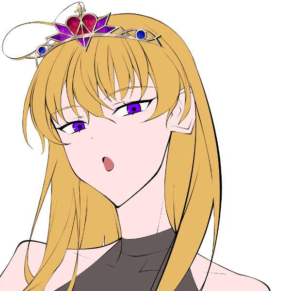高嶺紅林栖 : 漆黒のドレスと水晶のティアラに、そして女王めいた風格を身に纏い、美しい鬣の黒馬に跨っていたのだ。
雲峰詩音 : 「…………」 一瞬、その姿に見惚れるが
雲峰詩音 : 「お姉様……本当に制御出来ている、で良いのよね？」 共振したレネゲイドから、そう不安そうに訊ねる
高嶺紅林栖 : 「心配ならば不要、と言ったでしょう？」
高嶺紅林栖 : 「ワタクシの言葉に二言はないわ」そう微笑む
雲峰詩音 : 「そう……だったら、良いわ」 微笑を見て安心する
巨肩 矢委人 : 「その言葉、信じましょうか」
フランベルジュ :
「まるでお姫様ね……。うん、ならやってしまいましょうっ！」
紅林栖の容貌を見回し、感嘆の表情を浮かべる
ヴォルグ :
「危うくこっちも暴走するところだった…さて、やるか。」
共振の波が落ち着いたのかそれとも無理やり慣れたのか肩を竦めて
高嶺紅林栖 : 「ええ！」
鳩ヶ谷 アカネ :
「……ハァ！？近所に引っ越してきたのがこんな化け物なんて聞いてないじゃん！！」
禍々しいまでに強大なレネゲイドの共振を肌に感じ思わず身体が震える。
高嶺紅林栖 : 「バケモノとは失礼ね」獲物を見下す
高嶺紅林栖 : 「……端役は端役らしく、跪いて命乞いでもしたら如何かしら？」
鳩ヶ谷 アカネ : 「……命乞い？」手の震えを止める。
鳩ヶ谷 アカネ : 「するわけないじゃん？乗り越える壁は大きい方が燃えるっしょ…！」不敵に笑ってみせて
高嶺紅林栖 : 「ふふ…大口を叩いた事、後悔しないようにね…？」こういうタイプは嫌いではないのでスナオに賞賛の笑みを浮かべる
GM : アカネは《先陣の火》で行動値を+5します。
GM : ルイは《戦術》を使用。対象は雅人とアカネ、それぞれにダイスを+4。
GM : ではイニシアチブ、まずは3人同値で詩音ちゃんからかな
雲峰詩音 : はい！
GM : 詩音ちゃんのメインプロセスです、どうぞ！
雲峰詩音 : マイナーで戦闘移動！鳩ヶ谷家にエンゲージします！
雲峰詩音 : メジャーアクションで《砂の刃》+《ストライクモード》+《コンセントレイト》
雲峰詩音 : オートアクションで《砂の加護》
雲峰詩音 : 対象はルイお前だぁ！死ねばぶぅ！！！！
GM : こわいばぶぅ！！！判定どうぞ！
system : [ 雲峰詩音 ] 侵蝕率 : 80 → 93
雲峰詩音 : 9dx+3(9DX7+3) ＞ 10[1,1,1,2,3,4,6,7,8]+10[5,8]+3[3]+3 ＞ 26
雲峰詩音 : あーこれだめかもしれんばぶ
雲峰詩音 : ガードする場合はガード値-5になるばぶよ
GM : じゃあ、ここはアカネが《炎陣》でカバーリングします！
雲峰詩音 : うわあ！？コンビネーションしてる！！
GM : 意外と…！ダメージどうぞ！
雲峰詩音 : 3+5d10+3d10 装甲は有効(3+5D10+3D10) ＞ 3+24[4,10,2,1,7]+14[10,3,1] ＞ 41
system : [ 雲峰詩音 ] HP : 25 → 22
GM : 痛いわ！でも生きてるわ！
GM : アカネは《バーニングハート》で暴走状態になります。攻撃力+10。
雲峰詩音 : わぁ良いコンボじゃん
GM : そんな感じでこれを踏まえてRPあればどうぞ！
雲峰詩音 : 了解！
雲峰詩音 : ──“死の灰”。
雲峰詩音 : オーヴァードを殺す焔を宿したその力を、いつか誰かがそう呼んだ。
雲峰詩音 : 「“灰刀”（カイトウ）」
雲峰詩音 : 頭の中に描いたイメージを、寸分狂わず出力するための言葉。
雲峰詩音 : 全身から溢れ出した大量の灰が、詩音の手元で刀の形に集合する。
雲峰詩音 : 刀を握る手は対抗種の力で赤く灼けるが、そんなことは彼女にとって関係が無い。
雲峰詩音 : 鳩ヶ谷家三人へと突撃し、最も得体の知れないであろう相手を狙って灰色の刀を振り払う。
鳩ヶ谷 アカネ : 「──うちのチビに手出してんじゃねぇよ」
GM : 炎の推進力で間に飛び込んだアカネがその斬撃を受ける。炎の力で勢いを殺そうとするが殺しきれず、斬撃を受けた肌が爛れる。
雲峰詩音 : 「……！守るのね、子供を」
鳩ヶ谷 アカネ :
「子供とか関係ないじゃん？つーか、仲間を守るなんて当たり前のことなんじゃないの」
痛みで一瞬顔を歪める。
鳩ヶ谷 アカネ :
「……いいじゃん、アンタの攻撃効いたわ。アツくなってきた……ッ！！」
アカネの身体から熱気が噴出し、長い髪が炎のように舞い上がる。
雲峰詩音 :
「（もしかして、この人達も本当の家族じゃない……？）」
刀の形がボロボロと崩れ、灰に戻っていく。
GM : では、次はアカネが攻撃します。
GM : メジャーアクションで《焦熱の弾丸》+《振動球》+《コンセントレイト：サラマンダー》
GM : 対象は攻撃してきた詩音ちゃんで！
雲峰詩音 : おこなんか！？そりゃそうよ、どうぞどうぞ
GM : 10dx8+4(10DX8+4) ＞ 10[1,1,3,3,3,6,8,9,9,9]+10[1,2,3,9]+7[7]+4 ＞ 31
雲峰詩音 : わたしより強い
雲峰詩音 : 頑張って避けます、リアクションはドッジで！
GM : どうぞ！
雲峰詩音 : 3dx+1(3DX10+1) ＞ 7[1,2,7]+1 ＞ 8
雲峰詩音 : くそ、殴れ！！！！
GM : 4d10+22(4D10+22) ＞ 10[3,1,2,4]+22 ＞ 32
GM : 32点のダメージ！
雲峰詩音 : 装甲値あるけど無視だし死…いや8あっても死んでるな？戦闘不能！
雲峰詩音 : リザレクトします！
GM : 了解！そのあと少しだけ描写入れようかな
雲峰詩音 : 1d10(1D10) ＞ 10
GM : 最大値
雲峰詩音 : うお
system : [ 雲峰詩音 ] 侵蝕率 : 93 → 103
system : [ 雲峰詩音 ] HP : 22 → 10
鳩ヶ谷 アカネ : 「今度はこっちの番、キツいの行くから覚悟しな…！！」
GM : アカネから発せられる熱量が一気に膨れ上がり爆発的な炎が上がる。オーヴァードの身をも灼く爆炎が至近距離にいた詩音に直撃する。
雲峰詩音 :
「う……！！」
炎に飲まれ、爆風で吹き飛んだ身体から灰が弾け散る
雲峰詩音 :
地面に倒れ伏すが、大量の灰を頭から被って身体を燃やす炎を消火。
戦意を失っていない左目でアカネを睨み上げる。
GM : では、次はルイくんが動きます。
GM :
マイナーアクションで《ダブルクリエイト》+《ハンドレッドガンズ》
GM : メジャーで《コンバットシステム》+《マルチウェポン》+《コンセントレイト：モルフェウス》
GM : 対象はダイスで決めようかな
GM : 1 ヤストくん 2 フランちゃん 3 ヴォルグくん 4 クリスタちゃん 5 詩音ちゃんで
GM : 1d5(1D5) ＞ 4
GM : クリスタちゃんに射撃攻撃！
高嶺紅林栖 : やれるものならやってみなさい
GM : 10dx8+4(10DX8+4) ＞ 10[2,2,3,3,4,4,5,8,10,10]+7[5,6,7]+4 ＞ 21
高嶺紅林栖 : 暴走しているのでリアクションはなし！ さあ！ 来なさい！！
GM : せやわ、暴走してる！ダメージいきます！
GM : 3d10+14(3D10+14) ＞ 20[6,5,9]+14 ＞ 34
高嶺紅林栖 : 装甲28点！ ダメージ軽減15点！！
高嶺紅林栖 : 効かないですわ！！ ノーダメージ！！！！
GM : かて～！演出行きます
鳩ヶ谷ルイ : 「あぶないところだった…」そう呟いたルイは
鳩ヶ谷ルイ : いつの間にかモルフェウスの力を使い、ベビーカーの中いっぱいにカラフルな物体を作り出している……積み木だ！
鳩ヶ谷ルイ :
「………」
幼いながらもクリスタから危険な雰囲気を感じ取ったのか、そちらをじっと見つめると作った大量の積み木を片っ端から投擲してきます。
高嶺紅林栖 : オーヴァードの身体能力から投擲された木片は、悠々と佇む少女の顔を目掛けて一直線に跳んでいった。
高嶺紅林栖 : ──命中する。 その瞬間。
高嶺紅林栖 : 少女の周囲に魔法陣が出現。 その魔法陣はバリアを生み、自動的に敵の攻撃を弾いた。
高嶺紅林栖 : 「……赤子とはいえ、ワタクシに手向かうとは」
高嶺紅林栖 : 「不遜ですわよ」はるか高みから睨みつける
高嶺紅林栖 : ……すると、その視線ひとつで赤子の手は斥力で捻られてしまい、次の攻撃に転じる事ができなくなってしまう。
鳩ヶ谷ルイ : 「……あう！」捻られた手に積み木を取り落として
鳩ヶ谷ルイ : 「おとなげない…こわいおとなきらい」涙目で積み木の山の影に隠れる。
GM : 次！ヤストくんかしら
巨肩 矢委人 : 行くわよー
巨肩 矢委人 : マイナーでエンゲージ分けます
巨肩 矢委人 : そっと横に移動 5mくらい離れればいいかな
GM : 当たらないところにね！了解
巨肩 矢委人 : 【ケーダリオンの灯】：ｺﾝｾﾝﾄﾚｲﾄ(2)+ｱﾆﾏﾙﾃｲﾏｰ(3)+ﾀﾞﾝｼﾝｸﾞｼﾐﾀｰ(3)
system : [ 巨肩 矢委人 ] 侵蝕率 : 79 → 87
巨肩 矢委人 : 対象はアカネさんかな 盾役から撃つべし！撃つべし！
高嶺紅林栖 : まった！
巨肩 矢委人 : ﾊｲ!
高嶺紅林栖 : アカネさんは範囲攻撃で落とせると思うので、他から倒してもらっていいかしら…！
巨肩 矢委人 : 了解！ じゃぁ絵面の悍ましさを恐れて雅人さんを殴ります
高嶺紅林栖 : 草
GM : 草、どうぞどうぞ！
巨肩 矢委人 : (6+2+0)dx+0+0@(7+0) 判定／100%未満／ケーダリオンの灯 万色の檻使わないとダイス伸びないの(8DX7) ＞ 10[1,4,4,7,9,9,9,9]+10[2,3,4,4,10]+10[9]+2[2] ＞ 32
巨肩 矢委人 : ﾖｼ!
GM : とりあえず回避！
鳩ヶ谷 雅人 : 10dx(10DX10) ＞ 9[1,1,2,3,4,5,5,7,9,9] ＞ 9
GM : 当たる！ダメージどうぞ
巨肩 矢委人 : 4d10++12+0 ダメージ／100%未満／ケーダリオンの灯(4D10+12+0) ＞ 24[3,10,10,1]+12+0 ＞ 36
GM : まあまあ痛いけど生きてる！演出あればいってもろて
巨肩 矢委人 :
「灯火よ、示せ」
懐から金属音を鳴らしナイフが4つ、躍り出る
巨肩 矢委人 : 「若輩者ではありますが…皆さんには負けていられませんからね」
巨肩 矢委人 : 4本のナイフはその切先を雅人に向け、それぞれが回転しながら襲い掛かるだろう
鳩ヶ谷 雅人 : 「……ッ、ナイフ！！」避けようとするが、間に合わず回転の加わった鋭い刃が身体を傷付けていく。
巨肩 矢委人 :
「積極的な攻勢というのも気が引けるものではありますが…背に腹は代えられませんから」
攻撃を終えたナイフが彼の背に戻ってくる
鳩ヶ谷 雅人 :
「……っつ～…なかなかやりますね、矢委人さん」
流れる血を拭いながらヤストを真っ直ぐに見据える。
鳩ヶ谷 雅人 : 「(人間こわっ…！化かしてたのバレちゃったし、このままじゃ僕タヌキ鍋にされちゃうのかな…それはやだな…！！)」
GM : では、次クリスタちゃん！
高嶺紅林栖 : マイナーアクション放棄
高嶺紅林栖 : メジャーアクションで『HOLD UP！(コンセントレイト＋インビジブルハンド)』
高嶺紅林栖 : 対象は鳩ヶ谷家全員！
GM : おけ、判定どうぞ！
高嶺紅林栖 :
12dx8＋4 命中
(12DX8+4) ＞ 10[1,1,3,4,4,5,5,7,8,9,10,10]+10[3,5,9,10]+5[4,5]+4 ＞ 29
高嶺紅林栖 : まあまあ、妖精の手がなくても当たる範囲でしょう
GM : ミドルやしこんなもん！
GM :
アカネは雅人を《炎陣》にてカバーリング
ルイくんは一応回避…！
GM : 5dx(5DX10) ＞ 10[1,4,4,5,10]+7[7] ＞ 17
GM : 当たる！
高嶺紅林栖 : 赤ちゃんなのにドッジがんばりますね…
GM : それよ…ダメージどうぞ～
高嶺紅林栖 : 夢見の林檎(フォールンサラマンダー)を使用してダメージロール！
高嶺紅林栖 : 3d10＋4d10＋1 装甲有効ダメージ(3D10+4D10+1) ＞ 13[7,1,5]+19[6,6,1,6]+1 ＞ 33
GM : アカネさん落ちた！ルイくんはまだHP残ってます
GM : 演出どうぞ…！
高嶺紅林栖 : ではでは！
高嶺紅林栖 : 「……折角、この御伽の国に合った装いになったコトだし」
高嶺紅林栖 : 「ここはひとつ、本物の"魔法"を披露してあげましょうか」
高嶺紅林栖 : 少女は"林檎の宝玉"をひとつ、大鏡の破片に投げ入れ、
高嶺紅林栖 : 「──晶喚『黒晶の魔剣(シュヴァルツ・シュヴェルト)』」
高嶺紅林栖 : 魔法の鏡に対して"剣を渡せ"と命令を下す。
高嶺紅林栖 : ……すると、破片は自然にパッチワークのように連結。
高嶺紅林栖 : オーダー通りに黒水晶の細剣が三十本ほど錬成された。
高嶺紅林栖 :
高嶺紅林栖 : 少女はバロールのピュアブリード。 本来、そのような錬成能力は持っていないハズ。
高嶺紅林栖 : それを少女が扱える理由はひとつ。
高嶺紅林栖 : グリム童話の『白雪姫』で語られる"魔法の鏡"のオリジナルとされるEXレネゲイド。
高嶺紅林栖 : ──古くは"魔法"と謳われた、そのモルフェウス能力を借りている為に他ならない。
高嶺紅林栖 :
高嶺紅林栖 : 「……これが最後の警告(ラストチャンス)」
高嶺紅林栖 : 「自分の身体と矜持、秤にかけてみてはいかが？」
高嶺紅林栖 : ……少女はレイピアに手を翳し斥力を付与。
高嶺紅林栖 : ふわりとレイピアを宙に浮かせて、指揮者みたいに自在に操りはじめ、
高嶺紅林栖 : 「……ほら、アナタ方に勝ち目はひとつもないでしょう？」
高嶺紅林栖 : その全ての切先を獲物に向けると、ふと黒笑をこぼす。
鳩ヶ谷 アカネ :
「……上等！」
それ以上の言葉はない。だが、目は口ほどにものを言う。
GM : 何かあとに引けない理由があるのか、語られないそれは定かでない……しかし、アカネはそれでもなお貴方の前に立ち塞がる。
高嶺紅林栖 : 「そう……なら……」
高嶺紅林栖 : 「状況を見誤った自分自身を呪いなさい」
高嶺紅林栖 : 溜め息ひとつで笑みを消し、獲物に向けて手を伸ばす。
高嶺紅林栖 :
高嶺紅林栖 : 「──斉射(フォイア)」
高嶺紅林栖 :
高嶺紅林栖 : 刹那。
高嶺紅林栖 : ゴウ、と空を切る轟音が響き──
高嶺紅林栖 : 無数の刃が、獲物の元に殺到する。
高嶺紅林栖 : 斥力付与によって高速飛行する刃。 その一本一本が独自の軌道を描いて四肢を穿つ。
高嶺紅林栖 : 的確に相手の関節を破壊していく。
高嶺紅林栖 : 「お父様(オルクス)ほど自在には操れないけれど、アナタ方を後悔させるにはコレで十分でしょう」
高嶺紅林栖 : ──そして、少女は標本を作るかの如く、相手を地面に縫いつけて磔にしてみせた。
鳩ヶ谷 アカネ :
「(……ッ、やっぱ反則じゃん！)」
殺到する無数の細剣にアカネは口元に半ば呆れたような笑みを浮かべる。
鳩ヶ谷 アカネ : が、それでも獣へと戻り逃げ惑う雅人を抱え込むと「ジッとしてろ…！！」と吼える。
鳩ヶ谷 アカネ :
「負け、る……かぁぁぁッ！！」
叶わないと分かっていても炎を燃やし、吼えるのを辞めないが……剣撃の雨が止んだあと、針のむしろになったアカネにもうその四肢を動かすことは叶わない。
高嶺紅林栖 : 「……いいえ、アナタの負けよ」
高嶺紅林栖 : 「所詮はムダな足掻きに過ぎない」
高嶺紅林栖 : 「(──けれど、気に入ったわ)」
高嶺紅林栖 : 「(家族愛、とでも言うのかしら……それも一つの"美"のカタチでしょう……)」
GM : じゃあ次はヴォルグくんとフランちゃんが同値ね、とりあえずヴォルグくんから！
ヴォルグ : はーい
ヴォルグ : マイナーで≪赫き剣≫＋≪氷の回廊≫ HPを6点つかって武器作成、鳩ケ谷家にエンゲージします
system : [ ヴォルグ ] 侵蝕率 : 87 → 91
system : [ ヴォルグ ] HP : 30 → 24
ヴォルグ : メジャーアクションで≪コンセントレイト：ブラム＝ストーカー≫+≪渇きの主≫+≪ブラッドバーン≫ フォールンスプライト使用します
GM : ほい！攻撃の対象は？
ヴォルグ : 雅ｔ…タヌキさん！
GM : タヌキさんね…！
ヴォルグ : 11dx7+3(11DX7+3) ＞ 10[1,1,2,2,3,4,6,6,7,9,10]+10[3,3,7]+2[2]+3 ＞ 25
GM : では、タヌキさんは回避で！
鳩ヶ谷 雅人 : 10dx(10DX10) ＞ 10[1,3,3,3,5,6,7,8,9,10]+7[7] ＞ 17
GM : 当たる！ダメージどうぞ
ヴォルグ : 3d10+20(3D10+20) ＞ 19[9,3,7]+20 ＞ 39
ヴォルグ : 装甲無視です！
GM : タヌキさん逝きましたねぇ…！描写どうぞ～
system : [ ヴォルグ ] 侵蝕率 : 91 → 103
system : [ ヴォルグ ] HP : 24 → 23
ヴォルグ :
「さて、どちらにしようか…」
どちらも愛嬌のある見た目であるため少し悩んでいる様子
ヴォルグ : 「まずは素早い方から」
ヴォルグ : 逃げ回る獣に対象を定めると手のひらから出現した"雪虫：フォールンスプライト"を高速で追わせ狙いを定める
ヴォルグ : 自らの腹部にナイフを突き立て切り裂くと傷口は瞬時に凍ってゆき小さなナイフは紅の刃に変貌し、足元に血しぶきが落ちる
ヴォルグ : キンッ…と冷たい音がするような目で雪虫との感覚共有を研ぎ澄ませ獲物を睨みつけると蒸散するようにその場から消え
ヴォルグ : 冷たい突風が吹くように突如として雅人の目の前に出現する
ヴォルグ : 「ちょっとごめんな。」
ヴォルグ : 少し哀れんだ表情で地面に刀を突き立て獣の尻尾を縫い留めると、足元へ落ちた血が刃へ変貌し吹雪を追う雨のように襲い掛かる
鳩ヶ谷 雅人 :
「あ……ああ……！僕は食べても美味しくな……ッ！」
尻尾を縫い止められて逃げるに逃げれずじたじたと
ヴォルグ :
「…大丈夫、ちょっと抱っこさせてもらうだけだから。」
見下ろしながらやっている事とは真逆の優しい表情で微笑みかける
ヴォルグ : 背後からは無数の刃が風を切り裂く音が近づいてきて
GM : 血の刃の雨は降り注ぐ。浴びせられる無数の斬撃……哀れな小さな獲物はか細い鳴き声を一声あげるとぐったりと伸びてしまう。
GM : 最後決めてくれ、フランちゃん！
フランベルジュ : あいよ！
フランベルジュ : マイナーは無し！
フランベルジュ : メジャーは《絶対の恐怖》＋《抗いがたき言葉》＋《CR:ソラリス》！
フランベルジュ : 対象はルイくん！
GM : 来いやー！
フランベルジュ : 8dx＋1@8 装甲無視 命中時あらゆるダイス－2個！(8DX8+1) ＞ 10[1,1,2,2,5,7,8,10]+10[8,10]+10[7,9]+1[1]+1 ＞ 32
GM : 回避！
鳩ヶ谷ルイ : 5dx(5DX10) ＞ 7[3,5,6,7,7] ＞ 7
GM : 無慈悲！ダメージどうぞ！
フランベルジュ : 4d10＋1 申し訳程度の固定値(4D10+1) ＞ 21[9,2,2,8]+1 ＞ 22
GM : もうだいぶ削れてたので普通に落ちます！
GM : 演出どうぞ～
フランベルジュ : はーい！
フランベルジュ : 「ふふふ。赤ちゃんなのだから、甘いものはお好きよね？」
フランベルジュ : キャラメルポップコーンの様に、食欲を誘う甘く香ばしい香りが白煙となって発生し、フランの周りをふわふわと漂う
フランベルジュ : フランはその香りを手の平に集めたかと思えば、ルイへ向けて「ふっー」と一息を注ぐ
フランベルジュ : 彼を包むように漂うその香りは、思考を朧げにさせて徐々に戦意を削ぎ取っていった……
フランベルジュ : 「……今回は控えめに！アナタを殺したい訳じゃないからのよ～？」
フランベルジュ : フランのクスクスとした笑い声が、朦朧とした意識の中でルイの脳内を木霊していく……。
鳩ヶ谷ルイ :
「う…うう……なんだか……ねむい……」
うとうとと意識が遠のいていき、眠りに落ちるように意識が沈む。
GM : 鳩ヶ谷家をやっつけた！戦闘終了です
フランベルジュ : ヤッター！！
雲峰詩音 : １ラウンドで片付いてよかったよかった
GM : 危ないところだったね…ではではRPどうぞ
雲峰詩音 : 「はぁ……」 立ち上がり、体中の灰を手で払う
高嶺紅林栖 : 「……終わりみたいね」暴走解除
高嶺紅林栖 : 身に着けていたドレスとティアラはポロポロと破片になって崩れて、程なくして元の服装に戻る。
フランベルジュ :
「ふう……何とかなったわね～……」
漂わせていた香りが徐々に薄れて消えていく
巨肩 矢委人 :
「……周囲の損害は…最小限に抑えられましたか。何より」
周辺を見渡して巻き込まれてしまった人とかいないか一応確認
フランベルジュ :
「みんなお疲れ様っ！とってもかっこよかったわ！」
家族に微笑みかけてから、鳩ヶ谷一家の様子を見に行きまっす
雲峰詩音 : 「かっこいいって……」 戦ってそんな風に言われたのは初めてだから少し戸惑って
ヴォルグ :
「お陰でかなり目が覚めた」
ボロ雑巾のようになってしまったタヌキ（雅人）を抱っこした姿で合流しつつ
雲峰詩音 : 「……彼らを起こしましょう。拘束しなくても、この傷ならもう抵抗できないだろうし……」
フランベルジュ :
「ええ、そうしましょう。お話も聞いてみたいし～……」
おねむのルイくんを覗き込む
ヴォルグ : 抱っこしたままタヌキ（雅人）のおでこをペチペチと軽く叩いて起こしてみる
鳩ヶ谷 雅人 :
「ん……ん～……」
腕の中で小さな唸り声をあげたあとうっすらと目を開く。
雲峰詩音 : 「問題なく目覚めそうね」 流石動物でもオーヴァード、と眺める
巨肩 矢委人 :
「……………ではこちらも起こしてしまって良いかな」
一呼吸おいて口調を変えた後、ルイ君とアカネさんの方も
フランベルジュ :
「パパもおねがーい。鳩ヶ谷さーん？」
一応自分からも声かけ
鳩ヶ谷 雅人 : 一瞬ボーッとしたような顔をして当たりを見回したあと……
鳩ヶ谷 雅人 : ハッと目を見開いて慌てたようにもぞもぞと逃げ出そうとする。
GM : 声をかけたならばルイくんとアカネさんも同様に目を覚まします。
ヴォルグ :
「おっと、尻尾が千切れるぞ。」
首の後ろの毛皮をむにゅっと掴んで猫を保定するように引き留める
鳩ヶ谷 雅人 : 「うわ！やめて……あ、あんなこと言ってやっぱり鍋にする気なんだ……！！」
ヴォルグ :
「残念だが紅林栖は鶏肉が好みらしい、命拾いしたな。」
宥めているつもり
鳩ヶ谷 雅人 :
「そ、そうなの……？」
一瞬安堵したようにヴォルグの顔を見上げるが
高嶺紅林栖 : 「確かにワタクシはタヌキの肉なんて口に入れませんが」
高嶺紅林栖 : 「──ワタクシ達から逃げようという心算ならば、狩りに興じるのも悪くないと思っておりますわ」あたりに散らばった大鏡の破片を、林檎の宝玉で吸って回収と封印を施しつつ
鳩ヶ谷 雅人 : 「ひっ……！」息を飲んで
ヴォルグ :
「…だそうだ。どうする？」
紅林栖の台詞に少し苦笑いをすると問いかける
巨肩 矢委人 : 「たぬき狩りか…いや、わざわざそこまで露悪的に接しなくても。とにかく、この場は我々が収めた。話を聞かせてもらおう」
フランベルジュ : 「これ以上は危害を加えるつもりはない……とは言い切れないけど、一先ず安心してね～。奥さんとルイくんも無事だよ～。」
雲峰詩音 : 「あなた達は何者なのか、ここで何をしていたのか、さっきの男は誰なのか……話をしてくれないかしら」
鳩ヶ谷 雅人 :
「う、いたた……！話を聞かせてもらうって……君達こそ一体何者……」
逃げようと捩った身体の傷が痛むのか涙目になりながら
鳩ヶ谷 雅人 : 「ハッ……まさか僕たちがギルドのメンバーだと知って尾行していたのか……！」
雲峰詩音 : 「ギルド……」
高嶺紅林栖 : 「……ギルド、ね」国の内情には一般人より詳しいので聞いたコトはある
フランベルジュ :
「ギルド～……ギルド～……？どこかで聞いた事あるような～……」
うんうん唸って
ヴォルグ :
「へぇ、久々に見た…ずいぶん個性的な面子だな。」
３人を見比べながら
巨肩 矢委人 : 「(座学でちらと名前だけ聞いたな…)」
鳩ヶ谷 アカネ :
「へへん、アタシはアンタらの正体もう分かったけどな……」
したり顔で
雲峰詩音 : 「分かったの？本当に……？」
鳩ヶ谷 アカネ : 「もう、マジバッチリ。聞いて驚かないでよ……」
フランベルジュ :
「し、正体は～……」
アカネの次の言葉を待っている
巨肩 矢委人 : 「…とは…？」
鳩ヶ谷 アカネ : 「そのチートで並外れた強さ！！」ビシッと効果音がしそうなくらい真っ直ぐに貴方達を指さして
鳩ヶ谷 アカネ : 「アンタら”ティンダロス”の連中でしょ！」
雲峰詩音 : 「ティンダロス……」
鳩ヶ谷 アカネ : 「ふふん、この市の警察がUGN嫌いでUGNが活動し辛いのは知ってるんだぞ！」
雲峰詩音 : 「…………」 そういうことにしておく？とみんなの目を見る
ヴォルグ : 「………」 そうしておこう、とアイコンタクトで返す
鳩ヶ谷 アカネ : 「ってことはよ。UGNにも警察にも変わって正義感を振りかざす変わり者のティンダロスに決まってるじゃん！どうよ、この名推理！」そのアイコンタクトに気付かず ヤバ、我ながら天才すぎて怖いわ～ってなってます。
フランベルジュ :
「まあ～～……そう、かな～～～………？」
ピンと来てない顔で苦笑い
巨肩 矢委人 :
「それで、そうだったらお前達はどうするんだ？」
アイコンタクトで了承した後、ちょっと詰めてみよう
鳩ヶ谷 アカネ : 「え？どうするって～………」その後は何も考え出なかった顔
GM : すると、横から雅人が
鳩ヶ谷 雅人 : 「お、お願いします…！僕たち、ギルドのメンバーですけどそんな大層な犯罪者じゃないんです！」
鳩ヶ谷 雅人 : 「大したことは出来ませんが、なにか協力しますから見逃してください……！」あせあせと
雲峰詩音 :
「見逃すかどうかは罪状次第だ、ばかやろー。何してたか吐けよ、このやろー」
勝手に自分の中で作ったティンダロスのイメージで話す
ヴォルグ :
「（そのキャラ合ってるのか…？）」
詩音を見ながら
高嶺紅林栖 : 「(……あってる訳ないでしょう！？)」シオンちゃんの脇腹に肘を入れる
雲峰詩音 : 肘を入れられると、先がちょんと当たった瞬間ぴょんと跳ねて横に逃げる。
高嶺紅林栖 : 「(いま、少し、何か……いいえ、尋問に集中しませんと……)」少し肘に静電気が走った気がするが無視する
巨肩 矢委人 : 「…そうだな、何をしていたか…主に、先ほど会っていた男性と何の取引をしていたのか。教えてもらいたいが？」
鳩ヶ谷 アカネ : 「罪？あ～ギルドでアタシらが何してるかってことね」納得したように
鳩ヶ谷 アカネ :
「アタシら依頼を受けて犯罪してるんだよね。だから実質義賊よ！」
どやーって顔しながら
鳩ヶ谷 雅人 :
「ええと……そうですね。僕達は『恨み晴らし代行』という名目で方々から依頼を受けてます。目的はいろんな人に貸し作ったり情報収集なんですけど……」
補足するように
鳩ヶ谷 雅人 : 「さっきの男性は『友達のイケメンがむかつくから怪奇現象を起こしてビビらせてくれ』という依頼の報酬金を受け取ってました」
鳩ヶ谷 アカネ :
「そーそー。こんなチョロい依頼なのに今回妙に羽振りがよくってさ～」
受け取った封筒のことを思い出したのか機嫌良さそうに
高嶺紅林栖 : 「なるほど、要するにアナタ方は小悪党だと」
鳩ヶ谷 アカネ : 「だから、義賊だってば…！義賊ってかっこいいけど小悪党って言うとちょーダサく聞こえるじゃん？」
高嶺紅林栖 : 「エフェクトを他人に嫌がらせをして小銭を稼ぐためだけに使用している時点で、下品な小悪党以外の何物でもありませんわ」
雲峰詩音 : 「……別に、そこはなんでもいいけど……」
雲峰詩音 : 「パパラッチは……？関係無いの……？」
フランベルジュ :
「……関係、ないみたいねぇ～～……」
ふにゃっと肩の力が抜ける
巨肩 矢委人 :
「ハズレ…と言っては彼らに悪いか。当てが外れたな」
ふむ、と一考する
ヴォルグ :
「嘘はついてない様だな…」
目を細め≪熱感知知覚≫で３人の体温を視るが特に気になる変化は感じず、気が抜けたように肩を竦める
鳩ヶ谷 アカネ : 「何？パパラッチって団地の監視カメラが山ほどあるのアタシらのせいって思われてたってこと？」アタシらじゃねーもん！と不貞腐れながら
雲峰詩音 : 「いや、そういう意味じゃないわ……」
フランベルジュ : 「もう少しめんどくさい人に向けてかな～……？」
雲峰詩音 : 「どうしましょう……。小悪党だけどギルド所属……。このまま放っておくのも……」
フランベルジュ : 「うーーーーん……犯罪者とも言えないし、この場で裁く権限も持ってないしな～……」
高嶺紅林栖 : 「……なんでもする、という旨のコトを言っているのだし、ここは一時協力するのはいかがかしら？」
ヴォルグ :
「確か仕事内容で"情報収集"と言っていたな、なら見逃す代わりに情報集めの協力を頼もうか。」
いい交換条件だろ？と言いつつ
フランベルジュ : 「それ、グッドアイディア～！どうせなら巻き込んでしまいましょっ！」
雲峰詩音 : 「……役に立つのかしら」 ジトーッと鳩ヶ谷一家を見てる
巨肩 矢委人 : 「ここでの生活には我々より詳しいだろう、おそらく」
鳩ヶ谷 アカネ : 「情報収集？それならアタシの得意分野じゃん！」
鳩ヶ谷 雅人 : 「そうだね……それなら僕達にも協力できるかも？」鼻をひくひくと動かして
鳩ヶ谷ルイ : 「……なにしらべればいいの？」
高嶺紅林栖 : 「──パパラッチについて調べて頂戴」
高嶺紅林栖 : 「これにはアナタ方にもメリットがあるのだし、はりきって協力してもらうわ」
雲峰詩音 : 「……確かに、あなた達も下着泥棒の被害に遭ってるものね」
高嶺紅林栖 : 「まあ、そうね」
高嶺紅林栖 : 「パパラッチが下着泥棒をしているおかげで、監視の目が急増していますし……」
高嶺紅林栖 : 「軽率に正体を晒してしまう鳩ヶ谷家の潜入技術では、すぐに馬脚を露わす──」
高嶺紅林栖 : 「いえ、化けの皮がはがれるのは時間の問題でしょう」雅人の真の姿を見て笑う
鳩ヶ谷 雅人 : 「う～ん、結構上手くごまかせてたと思うんだけどなぁ……」餌を欲しがったことなど忘れてしまっているのか首を傾げて
鳩ヶ谷 アカネ : 「あ～！アンタら下着泥棒追ってたわけね！？」はいはい、と頷いて
鳩ヶ谷 アカネ : 「いや、アタシまだ被害にあってないんだけどキモイと思ってたんだよね～！そういうことなら全然協力するじゃん？」
高嶺紅林栖 : 「──化けの皮がはがれてしまえば、薄雲市にアナタ方の居場所は──と言う論法で説得しようと思っていたのだけれど」
高嶺紅林栖 : 「意外にもあっさりと協力姿勢になってくれるのね？」
鳩ヶ谷 アカネ : 「え？だって、アタシら負けたじゃん？ほら、そこのタヌキも見逃してくれるなら何でもします～って言ってたし」キョトンとして
鳩ヶ谷 アカネ : 正体バラされると地味に困るんだよね～と
巨肩 矢委人 : 「地味程度で済むのか…？」
高嶺紅林栖 : 「ギルドは世界に分布しているし、拠点の一つを失うくらいは痛手じゃない……のかしら……」
巨肩 矢委人 : 「そういうことならば確かに。まぁ、素直に協力をしてくれるならそれに越したことはないから…暫くよろしく頼む」
フランベルジュ :
「私からも改めてよろしくねっ！」
うんうんと同調する
鳩ヶ谷 アカネ : 「いいじゃん、昨日の敵は今日ダチってやつ？アタシはそういうの好きだし」ニッといい笑顔で
鳩ヶ谷ルイ : 「ん、ぼくもおてつだいする」
GM : ちなみに協力関係になった鳩ヶ谷一家は以下の技能で貴方達のサポートをしてくれます。
◇ルイ 《癒しの水》
負傷を治療する奇跡の水。
子供でも飲める体にやさしい飲み物。
HPが3d10回復する。シナリオ3回まで。
◇雅人 《鋭敏感覚》
たぬきの嗅覚によりにおいをかぎ分ける。
〈知覚〉判定の達成値に+2することができる。シナリオ1回のみ。
◇アカネ 《ベーシックリサーチ》
「風の噂」を聞き分ける力。
PCの行う〈情報：噂話〉のダイスに+2することができる。シナリオ1回のみ。
雲峰詩音 : 大分有能一家だわ…今から使えるなら、わたし癒しの水一回使ってもいいかな
巨肩 矢委人 : 俺はいいと思うｽﾞｪ…
ヴォルグ : 良いと思う思う
高嶺紅林栖 : いいわよ～ミルク分けてもらってきなさい～
雲峰詩音 : ミルクなの！？
フランベルジュ : 哺乳瓶咥えてる詩音ちゃんになっちゃった
GM : もちろん！GMのダイス運怖いからダイスは使う人に振ってもらおうかしら
GM : 水じゃなかった…！
高嶺紅林栖 : いや冗談！ 全然水でいいですけどね！！
雲峰詩音 : 哺乳瓶咥えてるの割とかわいいなってなっちゃった、じゃあ振ります！
雲峰詩音 : 3d10(3D10) ＞ 10[5,1,4] ＞ 10
system : [ 雲峰詩音 ] HP : 10 → 20
巨肩 矢委人 : ダイス君のやる気ﾁｮﾄﾅｲ
雲峰詩音 : やる気出してくれ
高嶺紅林栖 : 残り5回復くらいならクリスタが応急手当キットを持ってるので、それを使えば全回復できそう
雲峰詩音 : そうね！とりあえず一回だけにしとく
GM : 微妙な…！では、詩音ちゃんはルイくんがくれたおいしい水で少し体力が回復しました
雲峰詩音 : わぁい
ヴォルグ : ヴォルグも《癒しの水》使わせてもらおうかな
ヴォルグ : 3d10(3D10) ＞ 15[6,4,5] ＞ 15
system : [ ヴォルグ ] HP : 23 → 30
ヴォルグ : こっちでやる気出すな
雲峰詩音 : せっかくだし、回復して貰ったRPやってもいいかな。お礼言っときたい
GM : もちろん！どっちから始める？
雲峰詩音 : ルイくんから怪我したの見て渡してもらうって出来るかな？
GM : できますできます！じゃあそれでいきましょうか
雲峰詩音 : お願いします！
鳩ヶ谷ルイ : 「………」ルイは何やらジッと詩音のことを見てる。
雲峰詩音 : 「……なに？」
鳩ヶ谷ルイ : 「……う」
鳩ヶ谷ルイ : 「おねえちゃん、けがしてる…」少ししゅんとした様子で
鳩ヶ谷ルイ : しかし、そこで「あ」と何かを思いついたような顔をして
鳩ヶ谷ルイ : ルイが両手を合わせたあとパッと離すとポンッと軽快な音を立てて手元に哺乳瓶が現れる。中は水のようなもので満たされている。
鳩ヶ谷ルイ : 「……これ」とその哺乳瓶を差し出してきますね
雲峰詩音 : 「え……」
雲峰詩音 : 「これは……何？」 とりあえず受け取って、中の水を観察しながら聞く
鳩ヶ谷ルイ : 「おいしいおみず。こうのうは……そうしょうちゆ、ひろうかいふく、めんえいりょくこうじょう、ほかにもいっぱい？」
鳩ヶ谷 アカネ : 「あー、それルイがたまに出してくれる……なんだっけ？」
鳩ヶ谷 雅人 : 「«癒しの水»ですね。彼がソラリスの力で生み出したもので傷にはよく効くと思います」僕にも僕にも……と
雲峰詩音 : 「ソラリスシンドロームだったのね……」
雲峰詩音 : 「（でも、哺乳瓶……）」
雲峰詩音 : 「（別にいいか）」
雲峰詩音 : 哺乳瓶使うことをそんなに気にしなかったので、両手で哺乳瓶を持ち、中のお水を吸って飲む。
高嶺紅林栖 : 「────え！？ ちょっと！？！？」
高嶺紅林栖 : 「な、何！？ え！？」
雲峰詩音 : 「……？」 哺乳瓶ちゅぱちゅぱしてる
巨肩 矢委人 :
「詩音、哺乳瓶を知らな、いや知っていたら吸えないか、吸っているのか哺乳瓶を」
事実確認
雲峰詩音 : 「ぷぁ……吸っちゃダメだった？」 一旦口から離して
高嶺紅林栖 : 「しかもワタクシ達の方がおかしいみたいなリアクション！？！？」
高嶺紅林栖 : 「──普通、高校生にもなって哺乳瓶を吸う！？ 気品以前の話ですわよコレ！？！？」
雲峰詩音 : 「……でも、実際に回復したし……別に良いんじゃないかしら」 火傷の治った肌を見せて
高嶺紅林栖 : 「いやいや」
高嶺紅林栖 : 「いやいやいやいやいやいや」
雲峰詩音 : 「それに美味しいわ」 また哺乳瓶を吸ってる
高嶺紅林栖 : 「そういう問題じゃ……」
高嶺紅林栖 : 「あ、ああ……フラフラしてきたわ……夏の暑さのせいかしら……」
雲峰詩音 : 「フラフラ……お姉様も貰う？」
高嶺紅林栖 : 「貰いませんわよ！！！！！！」フラフラだと言っていたクセに迫力満点
雲峰詩音 : 「そう……本当に治るのに……」
巨肩 矢委人 : 「そこは誰も疑ってないけどね…まぁ、本人が良いなら…」
フランベルジュ :
「詩音かわいい～！写真撮って良いー？」
ニコニコ微笑んで見てる
雲峰詩音 : 「…………」 いいわよ、と哺乳瓶を吸いながらこくこく頷く
フランベルジュ : やったー！と色んなアングルでパシャパシャ、さりげなく自撮りも一緒に。
雲峰詩音 : 「そんなに撮ってて楽しいものかしら……」 嬉しそうなフランちゃんを見て、口元を少し緩ませてる
高嶺紅林栖 : 「そんなもの撮られたら一生の恥……ああ……」自分のコトでもないし…もういいわ…あと数日で終わる関係だもの…、と憤怒を呑み込む
鳩ヶ谷ルイ : 「……おにいちゃんは、いらない？」もう1つ同じものを手にヴォルグくんを見上げてくる
ヴォルグ :
「えっ…」
ぼんやりと家族のやり取りを眺めていたが哺乳瓶を差し出されそうになっていることに思わず驚いた声をあげる
鳩ヶ谷ルイ :
「ん！」
昨日の積み木のようにどうぞしてきますね
ヴォルグ :
「…有難う。」
昨日と同じ純粋な目に推されて思わず受け取ってしまう
ヴォルグ : どうしよう、と言いたげに家族を見る
雲峰詩音 : 「お兄様も怪我……そうか、ブラム＝ストーカーだったものね……」 じゃあ飲めば治るね、といった目で見てる
巨肩 矢委人 :
「別に…飲めばいいんじゃないか？」
どう、とは言わない
高嶺紅林栖 : 「……普通に呑めば効能は折り紙つきなんじゃないの」代わりに疲れた様子
ヴォルグ :
「たしかに、蓋を開けてもいいのか…」
ふと気付いた様に哺乳瓶を分解しようと蓋に手を掛ける
鳩ヶ谷ルイ : 「あけないほうがのみやすいのに……」少し残念そうに
雲峰詩音 : 「確かに……結構飲みやすいわね」 またちゅーちゅー吸ってる
ヴォルグ :
「そうなのか…？」
２人の言葉に手を止め疑問をもちつつカメラを手に持ったフランへと視線をうつす
フランベルジュ : 「2人のオススメなら……そうなのかも……！？」
フランベルジュ :
「あっ、せっかくだし2人で飲んでるところを撮っても良いかしら！」
ヴォルグが飲んでるところもきっと可愛い！と言った風に
ヴォルグ :
「撮りたいなら構わないが」
詩音の傍に寄ると真似をするように哺乳瓶に口を付けて水を飲む
フランベルジュ :
「ありがとっ！それじゃ撮るよ～！」
詩音とヴォルグが収まるように、カメラをめいっぱい引いてパシャパシャ
雲峰詩音 : 一緒に撮られても気にせず飲んでいる。
高嶺紅林栖 : 「～～～～～～～～ッ！！」
高嶺紅林栖 : 暫くの間、ツッコミに疲れて動向を観察していたが堪えられずに口を開く。
高嶺紅林栖 : 「何故！！ アナタ達は！！ 哺乳瓶のままで呑もうとするのよッ！！！！」
高嶺紅林栖 : 「──ああ！ 幼児退行のシュミでもあったのね！ そうに違いないわ！！」
高嶺紅林栖 : 「それなら納得！ "その方が吞みやすい"と思っても普通はしないもの！！」
高嶺紅林栖 : 「……兄妹共通のシュミだなんて、本当に本当に仲がよろしい事でッ！！」
雲峰詩音 : 「幼児退行……？」 ぽかーんとしてる
ヴォルグ : ポカンとした様子で紅林栖をみて
ヴォルグ : 「…そういう食器じゃないのか？」 勘違い中
高嶺紅林栖 : 「この世間知らず！ もう知りませんわ！！ ワタクシは帰ります！！」
高嶺紅林栖 : 「アナタ方はそこで一生、哺乳瓶でも咥えていればいいんだわ！！」
雲峰詩音 : 「今飲み終わったから別に一生は咥えないけど……」
ヴォルグ :
「ルイの持ち物だし…」
最後の一口をぐいっと飲んで
雲峰詩音 : 「ありがとう、ルイくん。後で洗って返すわ」 哺乳瓶を鞄にしまう
ヴォルグ :
「そうだな、まとめて返そう。」
頷いて同じく鞄にしまう
鳩ヶ谷ルイ : 「どういたちまちて」
巨肩 矢委人 :
「補給の方助かった。…ほら、紅林栖もそう…まぁ…哺乳瓶使ったのは俺も驚いたけど、迷惑をかけたり品位を下げたいから使ったわけではないだろうから、な」
分かってやってなというアレ
高嶺紅林栖 : 「分かってあげて、と言いたいのならば、ワタクシの苦悩こそ分かってほしいですわよ……」
雲峰詩音 : 「…………」
雲峰詩音 : 「ごめんなさい、お姉様……もう哺乳瓶では飲まないわ」
高嶺紅林栖 : 「…………」
高嶺紅林栖 : 「その言葉、二言はないわね？」
雲峰詩音 : 「えぇ」 頷く
高嶺紅林栖 : 「はあ……最初からそうしてくれていたら……」
ヴォルグ :
「俺もそうしよう、ごめんな。」
今更まずいことだったのかと気付いて口元を押さえつつ
高嶺紅林栖 : 「…………」
高嶺紅林栖 : 「もう本当に仕方のない人達……」
高嶺紅林栖 : 「本来、日本の常識を知らないのは私の方のハズなのに……」
高嶺紅林栖 : 「どうしてワタクシが世間知らずを指摘する側に回っているのかしら……」
高嶺紅林栖 : 恨み言を投げかけたが、それだけで許したらしい。
巨肩 矢委人 :
「紅林栖はおそらく勤勉だろうから知識があるとして、二人は…普通の生活に興味がない…？」
ちょっと失礼
雲峰詩音 : 「興味が無いわけじゃないけど、任務に関係無いことだったから……」
ヴォルグ : 「分からないものもあるが…人間の生活を知るのは楽しい」
高嶺紅林栖 : 「であれば、もっと知識を身に着けるコトね……怠惰ですわよ……」
フランベルジュ :
「ママも囃し立ててごめんね～……」
「でもそうね。知識を身に着けるのはとても楽しいことだわ？」
雲峰詩音 : 「……頑張ってみるわ」
高嶺紅林栖 : 「──そう」
高嶺紅林栖 : 「ならいいわ……任務に支障が出るのは望むところじゃないし……その言葉で手打ちにしましょう……」
雲峰詩音 : 分かった、とこくこく頷く。
巨肩 矢委人 :
「よし、それじゃぁ鳩ヶ谷家とはここで解散だ。俺達はもう少しここに用がある。それで構わないだろうか」
と、ちょっと話しかける人を迷った後に雅人に確認する
鳩ヶ谷 雅人 : 「はい、それで構いません」ぴょんとヴォルグの腕から地面へと飛んで
鳩ヶ谷 雅人 :
「また、何かあれば家までいらしてください。約束をした以上協力は惜しみませんので」
瞬く間に人間の姿に戻ると爽やかな笑みを浮かべてみせる
雲峰詩音 : 「戻った……」
ヴォルグ :
「ああ、そうさせて貰おう」
腕から離れると一瞬名残推しそうな反応をするが頷く
GM : では、ここで鳩ヶ谷一家は一旦離脱します。もし先程あげた協力スキルを使いたい場面があれば戦闘中以外いつでも宣言していただければと思います。
雲峰詩音 : はーい
ヴォルグ : はいー
巨肩 矢委人 : さいなら～
フランベルジュ : ﾊﾞｲﾊﾞｲﾁｬ
雲峰詩音 : 「……怪我は治ったけど」 鳩ヶ谷一家を見送って
雲峰詩音 : 「服は……直らないのね……」 悲しそうな目で、焼け焦げてボロボロになった自分の服を見る
高嶺紅林栖 : 「えっ、ちょっと待って」
高嶺紅林栖 : 「戦闘時には流していたけれどソレ……ワタクシが貸した服……」
雲峰詩音 : 「えぇ……」 全焼はしてないけどおへそとか見えてる状態
雲峰詩音 : 「ごめんなさい……攻撃を避けることが出来なかったの」
高嶺紅林栖 : 「な、直せないの…？ アナタ、モルフェウス能力者でしょう…？」
雲峰詩音 : 「出来ないわ。わたし、物を作る能力は得意じゃないから……」
高嶺紅林栖 : 「………………」
高嶺紅林栖 : 「貸したワタクシがバカでしたわ……」
雲峰詩音 : 「…………」 申し訳なさそうにしゅんとしてる
巨肩 矢委人 : 「経費で落ちないか相談しようか…」
巨肩 矢委人 :
「いや、落としてもらうべきだな」
どこか抜けた雰囲気を持った本部の人を思い出しつつ
雲峰詩音 : 「ありがとう、お父様……」
高嶺紅林栖 : 「まあ、そう値が張る服じゃないし経費で落ちるでしょう……」
雲峰詩音 : 「そうだといいのだけど……」
雲峰詩音 : 「……次から、もっと気を付けるわ」
高嶺紅林栖 : 「気を付けたら対策できるモノなのかしら……」
雲峰詩音 : 「気を付けるというか……がんばる……？」
巨肩 矢委人 : 「オーヴァードは一般的に、その不死性にかまけて防御や回避を怠る者が多いからな…専門の訓練を積んでいないのではなんとも…かくいう俺も」
高嶺紅林栖 : 「だらしないですわね……」美しい肌が傷つかないように防御面も鍛えているクリスタ
高嶺紅林栖 : 「はあ……ともかく今は着替えを買いに行きましょう……」
高嶺紅林栖 : 「そんな恰好ではバスにも乗れませんわ……」
雲峰詩音 : 「そうね……」
高嶺紅林栖 : 「ひとまずお兄様からジャケットでも借りて焦げ跡を隠したら？ 」
雲峰詩音 : 「……いいのかしら？」
フランベルジュ : 「ヴォルグのジャケットならすっぽり隠せるね。貸してあげられるかしら？」
ヴォルグ : 「ああ、だいぶサイズが大きくても良ければ」
雲峰詩音 : 「大丈夫よ。ありがとう、お兄様……寒がりなのに……」
ヴォルグ :
「夏で良かった。」
ジャケットを脱ぐと詩音に手渡す
ヴォルグ : 腹部の血痕に気づくが黒い服で渇いている様子なのでまぁ良いかと軽くはらって
雲峰詩音 : 受け取って、ジャケットを着る。めっちゃぶかぶかでワンピースみたいになってる。
雲峰詩音 : 「すごくおっきい……」 袖をパタパタさせている
高嶺紅林栖 : 「違和感はあるけれど、ショップまでの繋ぎに過ぎないし大丈夫でしょう……」
雲峰詩音 : 「えぇ。買ったらすぐに返すわ……早く行きましょう」
雲峰詩音 : お土産販売のワゴンに行きます！
GM : 了解！貴方達は再度お土産屋さんのワゴンに向かいます。
お土産販売のワゴン
GM : 調達残ってる人はここが最後になるから振っちゃって振っちゃって
巨肩 矢委人 : それじゃ振っちゃうわね
GM : はい！欲しいもの宣言して振っていってね(難易度は情報の方でも確認できます)
巨肩 矢委人 : (4+2+0)dx+1+0@(10+0) 〈調達〉判定 買うぜクッキー缶(6DX10+1) ＞ 10[2,3,6,6,9,10]+10[10]+6[6]+1 ＞ 27
巨肩 矢委人 : どうした？
高嶺紅林栖 : こわ
雲峰詩音 : やば～
フランベルジュ : 戸成さんへの気遣いがすごい
ヴォルグ : 流石お父さん
GM : 目標値の27倍
GM : では、お土産のクッキー缶も買えました！他には？
雲峰詩音 : じゃあわたし、フレーバーでTシャツとかあれば買います！
GM :
テーマパークでありがちなやつだ…！
空色にうすくもちゃんデザインのやつあるある
雲峰詩音 : かわいい
雲峰詩音 : と、うすくもちゃん人形を判定して購入しましょう
GM : OK！判定どうぞ～
雲峰詩音 : 5dx(5DX10) ＞ 8[3,4,5,7,8] ＞ 8
雲峰詩音 : 難易度３だから成功！
GM : やったね！人形大人気だわ…
雲峰詩音 : では、うすくもちゃんがデザインされたTシャツを買った後、近くのトイレで着替えてから皆のいるお土産屋ワゴンに戻って来る。
雲峰詩音 : 「着替えてきたわ。お兄様、貸してくれてありがとう」 ジャケットをヴォルグに返す
ヴォルグ : 「ん。」 頷いてジャケットを受け取る
高嶺紅林栖 : 「……しかし、ダサいですわね薄雲Tシャツ」
高嶺紅林栖 : 「(……サイズ合ってなくて胸元のうすくもちゃんが伸びてるし)」
雲峰詩音 : 「そう……？」
巨肩 矢委人 : 「こんなものじゃないか？遊園地のTシャツって」
フランベルジュ :
「パジャマとして使えそうだよね、こういうの！」
ママは好き～、と微笑んでる
高嶺紅林栖 : 「ええ、部屋着として使うならいいんじゃないかしら」
雲峰詩音 : 「そうね……お姉様がださいって言うなら、外では着ないわ」
高嶺紅林栖 : 「えっ……」
高嶺紅林栖 : 「(急に従順……)」
雲峰詩音 : 「何かおかしかった？」
高嶺紅林栖 : 「い、いえ……何も……」
高嶺紅林栖 : 「寧ろ、そのままでいてくださいな」微笑をこぼす
雲峰詩音 : 「……？うん」
雲峰詩音 :
「でも、うすくもちゃんのデザイン自体は……悪くない気がする。これとか……」
うすぐもちゃんのぬいぐるみを手に取る
高嶺紅林栖 : 「そ、そうね……悪くない……」ワタクシが買ったのはバレてないですわよね…と思いつつ同意する
雲峰詩音 : 「…………」 人形を見つめて
雲峰詩音 : 「これ……買ってもいい？」
ヴォルグ : 「いいんじゃないか？俺も買ってるし。」
雲峰詩音 : 「そういえば……前に脇に抱えてた気がするわ」
ヴォルグ : 「ふわふわで可愛いぞ」 勧める
雲峰詩音 : 「本当ね……」
雲峰詩音 : 「……お母様とお父様も、いる？カチューシャとキーホルダー、買って貰ったから……」 お返しがしたいらしい
巨肩 矢委人 : 「うん？おお、それなら…ありがたく貰おうかな」
フランベルジュ : 「ふふふ、親孝行者ね！ありがとう、詩音っ♪」
雲峰詩音 : 「じゃあ買うわ。……お姉様は？」
高嶺紅林栖 : 「……ワタクシには必要ないわ」
高嶺紅林栖 : 「そんなモノ、高貴なるワタクシには似合わないでしょう？」
雲峰詩音 :
「そうかしら……？でも、分かったわ」
それぞれ少しずつデザインが違ううすくも人形を三つ持って、お会計する。
雲峰詩音 : うすくもちゃん人形の効果使って、侵蝕率-1します！
system : [ 雲峰詩音 ] 侵蝕率 : 103 → 102
雲峰詩音 : 「……はい。お母様、お父様」 二人にぬいぐるみを渡そう
フランベルジュ :
「かーわいー♡」
ぎゅっと抱き着いて
巨肩 矢委人 :
「ありがとう、詩音」
片腕で抱くように持っておこう
フランベルジュ :
「娘からのプレゼント、大切にさせてもらうね！」
ニコッ、と幸せそうな笑みを浮かべて
雲峰詩音 : 「……うん」 嬉しそうに頷き
雲峰詩音 : 「（ぬいぐるみが、ふわふわしてるからかしら……）」
雲峰詩音 : 「（なんだか、今日は……胸がよくふわふわする気がする……）」 ぬいぐるみを抱きしめながら想う
ヴォルグ :
「（家族、こういう感じなのかな…）」
３人の様子を見て僅かに笑うとどこか遠く懐かしいような物珍しいような気持ちになり
巨肩 矢委人 : 傍らで、ｺﾞｷﾝｼﾞｮﾂﾞｷｱｲの為のクッキー缶の味を選んでいる父親もいます
巨肩 矢委人 :
「戸成さんの好みとか知らないしな…プレーンがやはり良いんだろうか…」
ブツブツ…
雲峰詩音 : 「戸成さんにあげるの？」
フランベルジュ :
「あら、お隣さんへお土産？」
続いてパパの後ろからひょっこり
巨肩 矢委人 :
「ああ、やっぱりこういうのって用意した方が良いだろう？我々が円滑に活動する上でもな」
アレルギーとか大丈夫かな…とひとりごちながら
雲峰詩音 : 「そうかも……」
フランベルジュ : 「しっかりしてる～！でもそうね、チケットも貰っちゃったし、お土産は必要かも！」
雲峰詩音 : 「……そういえば、抹茶……が、好き……だったかしら……？」 ちょっとうろ覚え気味に言う
ヴォルグ :
「そうだな、抹茶が好きだと聞いた覚えがある」
俺はチョコが好き、と言いながらお土産のクッキー缶をたくさん重ねて持っている
巨肩 矢委人 :
「ん、戸成さんに聞いたのか？それなら助かる」
抹茶のクッキー缶を手に取ろう
雲峰詩音 : 「前に調べた時に、そういう情報があったと思うわ」
巨肩 矢委人 :
「……鳩ヶ谷家のも買ってくか」
こっちはプレーン
雲峰詩音 : 「……狸って、クッキー食べれるのかしら。レネゲイドビーイングなら大丈夫……？」
巨肩 矢委人 : 「おそらく大丈夫じゃないかな。ルイ君はふやかしたりしないと厳しいかもしれないけど」
雲峰詩音 : 「……そうよね」
GM : 矢委人はお土産のクッキー缶を2つ手に取り、レジへと運ぶ。辺りではちらほらとゲートの方へと向かっていく人影が目に付いた。そろそろ家へと帰る時間だ。
GM : 買い物が終わったあと、最後に……と、入口の広場でうすくもちゃんとの写真撮影を行う。パパラッチが現れなかったことはさておき、当初の宣言通りに事は進んでいた。
GM : スタッフのお兄さんの掛け声でカメラに収められる家族写真。思わぬハプニングに見舞われたり、目が目まぐるしい1日ではあったが、うすくもちゃんを囲むように並んだ5人の表情はどことなく満足気に見えた。
GM : 撮影後、うすくもちゃんは『また来てね！』と伝えるかのようにパタパタと手を振ってくれる。
GM : ……そうして、楽しかった思い出に少し後ろ髪を引かれるような気持ちがしながらも貴方達は薄雲ランドをあとにした。
GM : 沈みゆく夕日に照らされ、歩く先へ、先へと長い影が伸びていく。
薄雲市
雲峰詩音 :
「……うすくもちゃん、かわいかったわ」
うすくもちゃんの姿が見えなくなるまで後ろを振り返りながら歩く
ヴォルグ :
「そうだな。」
ちゃんと前見ないと危ないぞ、と言いつつヴォルグも振り返っている
高嶺紅林栖 : 「……まあ、実際に動いていると、少し違うイメージで見えたのは確かですわね」
巨肩 矢委人 :
「結構大きかったな」
デカい人間はデカい相手と遭遇するとびっくりすると言う
雲峰詩音 : 「イラストでは小さいイメージだったのにね……」
フランベルジュ :
「ふふふ、大きいうすくもちゃんに抱き着いたら気持ちよさそうだったよね～」
チラチラ後ろを振り向きながら
雲峰詩音 :
「そうね……」
着ぐるみなら例えオーヴァードでも対抗種関係無いし、抱き着けば良かったかなとちょっと思う
ヴォルグ : 「次きたらやるか…」
高嶺紅林栖 : 「次が来たとしても、その時はワタクシ達は一緒ではないでしょうけれどね」あと数日で潜入任務も終わりなので
雲峰詩音 : 「……それは……そうね」
巨肩 矢委人 : 「まぁ、好きなタイミングで来ればいいじゃないか、興味が湧いたなら」
ヴォルグ :
「今度は友達として誘えばいいだろ？」
また遊びに誘う気満々の様子
フランベルジュ : 「私も来ることは難しくなりそうだな～、日本に住んでるの羨ましい～！」
雲峰詩音 : 「友達、か……。そうね……」
雲峰詩音 : 「もし任務中じゃなければ、行ってもいいかも……しれないわね……」 少し嬉しそうに言う
ヴォルグ :
「…意外と乗り気？じゃあまた誘おうかな。」
詩音をみると同じく嬉しそうに呟く
高嶺紅林栖 : 「……ワタクシは誘われても断りますし、わざわざ声を掛けなくても結構」
高嶺紅林栖 : 「今日みたいに疲労ばかり溜まる休日なんて沢山ですわ」
雲峰詩音 : 「そう……？」 その割には楽しんでるように見えたような、と不思議に思う
フランベルジュ : 「ふふ、紅林栖もまた行きたくなったら行きましょうね！」
高嶺紅林栖 : 「……気が向いたら、ね」そんな事はないでしょうけど、と苦笑する。 誘われるのは満更でもなさそうだ。
フランベルジュ :
「ふふふ～……あっ、そうだ！」
何かを思いつき、ポンっと手を叩く
フランベルジュ : 「ほら、せっかく家族で並んで帰る訳だし……アレ、やりましょ！」
フランベルジュ : 両脇にいるクリスタと矢委人に対して手を差し伸べる
高嶺紅林栖 : 「────アレ？」差しだされた手を見つめる
巨肩 矢委人 :
「ん、なるほど。こういうことだろう？」
と、その手を取る
フランベルジュ :
「パパ、正解！手を繋いで帰るの、とっても家族らしいと思うの！」
矢委人の手をぎゅっと握りながら、再びクリスタに目を向ける
高嶺紅林栖 : 「ああ、そういう」
高嶺紅林栖 : 「……手を繋いで帰るだなんて、小学生じゃないんですから」
フランベルジュ :
「確かに、大きくなると滅多にしなくなるよね～……ちょっと子供扱いしすぎたかな？」
えへへ、と微笑みながら手をわきわきさせる
高嶺紅林栖 : 「……仕方ないですわね」
高嶺紅林栖 : 溜息交じりに肩を竦めながらフランちゃんの手を握ります。
フランベルジュ :
「！…ありがとう、紅林栖っ♪」
弾んだ声色でお礼をして、機嫌よく2人の手をプラプラさせる
高嶺紅林栖 : 「別に、礼を言われるほどのコトでもありませんわよ……」手繋ぎひとつで嬉しそうなフランちゃんを見て苦笑する
巨肩 矢委人 :
「そしたら二人も」
紅林栖が繋いでくれたのを見て満足げにした後、二人の方を見て手を差し出す
ヴォルグ :
「俺も？」
一瞬矢委人の手を取ろうとする
ヴォルグ :
が、かなり後方を歩いている詩音に気づくと申し訳なさそうに
「……すまん、先に行っててくれるか？すぐに追いつくから。」
ヴォルグ : と言いつつ詩音のところへ
雲峰詩音 : 「…………」 若干緊張した様子でヴォルグを見上げる
ヴォルグ : （潔癖症…ではないよな。） 普段の様子を思い返しつつ
ヴォルグ : 「詩音、はぐれるぞ？」 安心させるようにそっと手を差し伸べて待ってみる
雲峰詩音 : 「…………」 手を見つめて
雲峰詩音 : 「だ……大丈夫よ。手を繋がなくても、逸れたりしないわ……」
ヴォルグ :
「…人に触れるのあまり好きじゃない？」
今まで見てきた様子で感じた疑問を問いかけてみる
雲峰詩音 : 「……好きじゃない……とか、そういうわけじゃ……」
雲峰詩音 :
「無いんだけど……。で、でも……えっと……」
どう言えばいいか分からず、悩んだように目を伏せる
ヴォルグ : そういう子もいるかな、と考えていたがどうやら違う様子に少し何かを考える表情をして
ヴォルグ : 「…質問変えようか、"みんなと手繋ぎたい"？」
雲峰詩音 : 「……。繋げられるなら……」 その先の言葉は出てこない
ヴォルグ : よし、と言いたげに微かに微笑むと詩音の手を取って家族のもとへ向かおうとする
雲峰詩音 : 「……っ！！」 顔を上げ、目を大きく見開いて繋いだ手を見る
雲峰詩音 : 詩音と手を繋いだ瞬間、ヴォルグは掌に強い熱を感じる。
雲峰詩音 : ……彼女は対抗種の力を完全に制御出来ていない。
雲峰詩音 : その肌がオーヴァードに触れるだけで、レネゲイドを滅し、身体を灰化してしまう。
雲峰詩音 : 今は手袋越しに触れているため、火傷をする程度でも無い。だが──
雲峰詩音 : ──レネゲイドそのものが知性を持った存在であるレネゲイドビーイングには、それだけでも異様な危機感を覚えるだろう。
ヴォルグ : 掌にジリ…と強い熱を感じ、全身のレネゲイドがざわつくような本能的な危機感に思わず振り返る
ヴォルグ :
すると目を見開き動揺する詩音の表情に気づき
──なるほど。と胸の中の疑惑が晴れたようだ
ヴォルグ : ざわつくレネゲイドを無理やり鎮めるように一息つくと
ヴォルグ : 「…意外と体温高いな？」 と冗談めかして一緒にパンケーキを食べていた時や遊園地で遊んでいた時と変わらぬ表情で僅かに微笑みかける
ヴォルグ : 次に僅かに緩みかけた手をもう一度繋ぎ直して。
ヴォルグ : 「大丈夫、帰ろう。」
雲峰詩音 : 「え……！？」 その態度に驚き、手を離そうとするのも忘れる
雲峰詩音 : 「で……でも、手……！手が、わたし……っ」 上手く言葉が出てこない
高嶺紅林栖 : ──曖昧な言葉を遮って、ふいに紅林栖の声が響く。
高嶺紅林栖 : 「二人で何をしてますの～？ 置いていきますわよ～？」
ヴォルグ : 「はいはい。」 紅林栖の声に気付くと何事もなかったようにゆるりとした返事を返す
ヴォルグ :
「行こうか。」
（大丈夫だから）と言いたげに詩音を見ると軽く腕を引っ張って少し早足で家族を追いかける
雲峰詩音 :
「あ……」
引っ張られてそのままついて行く。
今はまだ安心よりも戸惑いが隠せないのか、髪からさらさらと灰が零れ落ちていた。
ヴォルグ : 家族に追いつくと矢委人の傍に寄り「ごめん、ただいま。」と詩音と繋いでいる方とは逆の手を差し出して
巨肩 矢委人 :
「ああ。ママ、全員揃ったよ」
ママのやりたかったこと達成報告
フランベルジュ :
「ええ、とっても素敵ね！」
横に並ぶ家族を満面の笑みで見渡す
雲峰詩音 : 「……全員……繋いでる……」 夕日で伸びた五人の影を見る
高嶺紅林栖 : 「そうね……考えてみれば、本当のお父様とお母様ともした事ないかもコレ……」普通の家じゃなかったし
雲峰詩音 : 「そう、なの……？」
ヴォルグ :
「俺も初めてだ。」
ドラマで見た、と少し嬉しそう
雲峰詩音 : 「……わたしは、初めてじゃないけれど……」
雲峰詩音 : 「誰かと手を繋いだのは……十年ぶり位な気がするわ……」 少しずつ、零れていく灰が少なくなっていく
巨肩 矢委人 : 「そんなになのか…ああ、俺も…まさか俺が父親でとは思ってなかったけど、家族みんなでっていうのは初めてだなぁ」
フランベルジュ : 「私もとってもと～……っっても久しぶりっ！ママ、あなた達と出会えてよかったわ！」
雲峰詩音 : 「……うん」 小さく頷く
ヴォルグ : 傍らの詩音を見て僅かに笑みをこぼす
ヴォルグ : 「俺もそう思う」 フランの言葉に同意して頷き
高嶺紅林栖 : 「(──しかし、フシギなモノですわね)」
高嶺紅林栖 : 「(任務の付き合いでしかなかったハズなのに、赤の他人とこんなコトをしているだなんて)」
高嶺紅林栖 : 「(……けれど、何よりフシギなのは)」
高嶺紅林栖 : 「(この関係を『あまり悪くない』と思いはじめているワタクシ自身)」
高嶺紅林栖 : 「いよいよ毒されてきたかしら……」
GM : 並んで揺れる長さの違う5つの影。ひと繋がりとなった5つの影。
GM : 生まれも育った場所も環境も違う、たった一度の任務のためだけに集められた5人……だが、仲良く手を取りあって歩くその姿は、どこか本当の家族を思わせる……そう、変わっていきつつあった。
GM : ……貴方達は今日も帰っていく、高嶺一家の住まう薄雲団地へと。
GM : ここでシーンエンドになりますが、ロイスとか取りたければ宣言してもろて…！
雲峰詩音 : ヴォルグに幸福感/恐怖でロイス取ります！表の感情はPの幸福感で！
system : [ 雲峰詩音 ] ロイス : 4 → 5
ヴォルグ : 幸福感じてもろた…！
雲峰詩音 : 手繋ぎ以外でもいっぱい幸せ貰ってるのよね
フランベルジュ : クリスタ嬢に慈愛/疎外感でロイス取ります！表P！
system : [ フランベルジュ ] ロイス : 4 → 5
ヴォルグ : 雲峰詩音のロイスをP慈愛／N不安に変更します 表はPの慈愛で！疑惑が晴れて本当の妹になった感じ！
雲峰詩音 : なるほどね…！良いな…
GM : 他は大丈夫そうかな！では、ここでシーンエンド！
シーン8 喧騒の薄雲団地
GM : 遊園地から帰ってきたら団地がなんだか騒がしい様子です。登場をどうぞ！
巨肩 矢委人 : 1d10+87(1D10+87) ＞ 5[5]+87 ＞ 92
フランベルジュ : 1d10＋80 ﾅﾝﾀﾞﾅﾝﾀﾞｰ！ｱﾚﾊﾅﾝﾀﾞｰ！(1D10+80) ＞ 7[7]+80 ＞ 87
ヴォルグ : 1d10+103(1D10+103) ＞ 9[9]+103 ＞ 112
高嶺紅林栖 : 1d10+100(1D10+100) ＞ 1[1]+100 ＞ 101
雲峰詩音 : 1d10+102(1D10+102) ＞ 9[9]+102 ＞ 111
薄雲団地
GM : 君たちが遊園地から帰ると、団地が妙に騒がしい。入口付近に人が集まり、何やらざわざわと話している。
GM : その人だかりの中には戸成、そしてあのとき挨拶できなかった宝田、美野島もいるようだ。
雲峰詩音 : 「……何かしら」
フランベルジュ :
「ん～……なんだろね？」
背伸びをしてキョロキョロ
巨肩 矢委人 : 「…？」
ヴォルグ : 「よく見えないな…」
高嶺紅林栖 : 「……とにかく何があったか聞いてみましょう」
高嶺紅林栖 : 「──戸成様？ これは一体？」とお隣さんに声を掛ける
戸成 秋子 : 「あ！高嶺さん達、ちょうどいい所に！」と、振り返って
戸成 秋子 :
「……あら！薄雲ランドのチケット使ってくれたのね～楽しかった？」
何か伝えようとしていたようがだ、詩音ちゃんのTシャツを見てにこにことそう尋ねてきます。
巨肩 矢委人 :
「はい、行かせてもらいました。皆楽しめたみたいで…本当にありがとうございました」
にこやかに返答しよう
フランベルジュ : 「素敵な一家団欒が出来ました！……それで、これは何事……？」
戸成 秋子 :
「ああ、そうよ！そうだったわ！」
一転して声をかけてきたときと同様の焦った様子へと戻って
戸成 秋子 : 「また出たのよ～～～～！下着泥棒が！！」
戸成 秋子 : 「若い子たちの下着に狙いをつけて、も～盗まれちゃってるの！」
戸成 秋子 : 「ちょうど今日の朝から昼にかけて盗られたみたいよ！」
雲峰詩音 : 「えっ……今日……？」
高嶺紅林栖 : 「この団地に……？」
GM : ……ちょうどその時間であれば、貴方達は遊園地に行く前の買い物に行っていた頃だろうと思い当たります。
GM : 戸成さんが返事をする前に、先に帰っていた鳩ヶ谷一家の一室の方から「いやーーーーー！！！アタシの下着がない！！！！」と悲鳴めいた声が聞こえてきます。
雲峰詩音 : 「……アカネさんかしら」 部屋を見上げ
フランベルジュ : 「早速被害者の声が聞こえる～……！」
巨肩 矢委人 : 「アカネさんが狙われたか…」
巨肩 矢委人 :
「そういえばウチは大丈夫なのか…？」
ちゃんと警戒して外干し避けてたりする？
高嶺紅林栖 : 「(ワタクシは衣服を≪ポケットディメンション≫内でまとめてあるので安心だけれど……)」
高嶺紅林栖 : 「シオンなんかはターゲットになりそうね……」
雲峰詩音 : 「わたし？どうして？」
高嶺紅林栖 : 「だって可愛いでしょうアナタ」
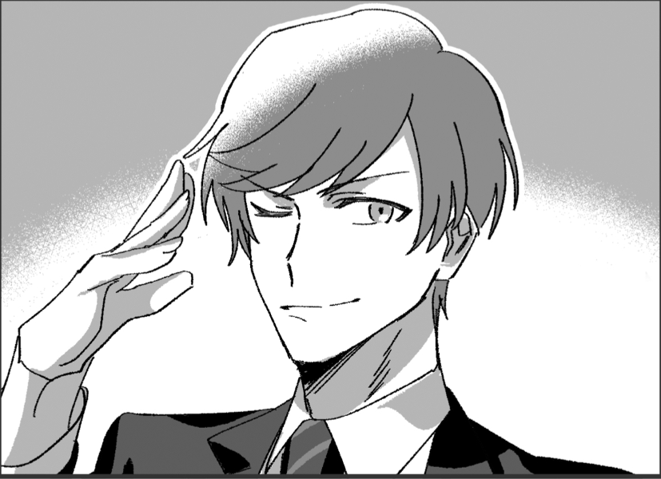宝田 ショウヤ : 「うん、可愛いね」
巨肩 矢委人 : 「犯人の嗜好にもよるが、場合によってはママも…」
巨肩 矢委人 : 「ん？」
フランベルジュ :
「もうパパったら～……」←満更でもない
「って、アナタは……宝田さん、だったかしら？」
雲峰詩音 : 「……かわいい……」 言われ慣れてなくて戸惑ってる
宝田 ショウヤ : 「おや、僕のことご存知でしたか」
宝田 ショウヤ :
「挨拶が遅れたね、僕は宝田ショウヤ。君達が今週ここに引っ越してきた高嶺さんだね、噂は聞いてるよ」
主に戸成さんから
フランベルジュ : 「あらあら、こちらこそ挨拶が遅くなってごめんなさいね？」
雲峰詩音 : 「はじめまして……。高嶺詩音です」 ぺこりと頭を下げる
高嶺紅林栖 : 「……ワタクシは姉の高嶺紅林栖」嫌悪感を包み隠し
ヴォルグ : 「兄のヴォルグです。」
フランベルジュ :
「改めて、妻のフランベルジュです～。こっちは夫の…」
矢委人くんを見る
巨肩 矢委人 :
「はい、高嶺矢委人と申します、初めまして」
普段通り穏やかな笑顔で
宝田 ショウヤ : 「詩音ちゃんに紅林栖ちゃん、それにフランベルジュさん……それから、ヴォルグくんに矢委人さんと」復唱して確認しつつ
宝田 ショウヤ : 「いや～奥さんが美人で矢委人さんが羨ましいな、詩音ちゃんと紅林栖ちゃんもお母さんに似てとても美人だ」
雲峰詩音 : 「……？そう……かしら……？そう見えるの……？」 嫌そうではない声
フランベルジュ :
「あら、嬉しいお言葉ね。」
ニコリと微笑んで
宝田 ショウヤ : 「いいや、僕は事実を言ったまでですよ」キラキラした笑顔を浮かべて
宝田 ショウヤ : 「ハッ…！しかし、こんな美女達を下着泥棒が放っておくはずがない……もしかしたら君たちの下着も盗まれているのでは？」
宝田 ショウヤ : 「心配だ……僕が部屋までついていこうか？」グッと距離を詰めようとする
ヴォルグ :
「…いえ、ご心配なく。俺も父もいるので。」
矢継ぎ早に距離を縮めようとする様子に警戒したのか紅林栖と詩音の前に少しだけ歩み出ると２人を半ば背後に隠しつつ、僅かに営業スマイル
宝田 ショウヤ : 「おっと、そうかい。それは失礼」スッと1歩引いて
宝田 ショウヤ : 「しかし、いやはやビックリだな。白昼堂々の事件とは」
宝田 ショウヤ :
「この団地に住むかわいらしい女性たちの下着を盗むとは、許せない犯人だよ全く！」
拳を握りしめて
宝田 ショウヤ : 「美野島さんも下着を盗まれたんじゃないのかい、平気かい？君は一人暮らしだし、なんなら僕が共についていこうか？」
GM : と、そばに居た眼鏡の女性美野島に声をかけるが
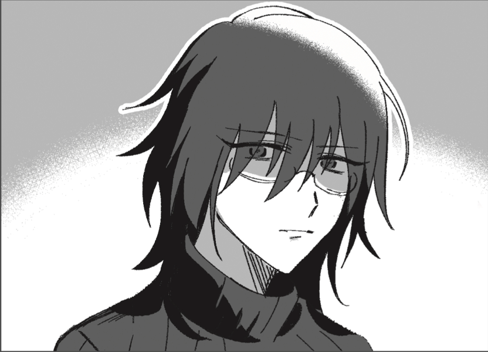美野島 沙里 : 「……いいえ、結構です。私は盗まれてませんから」
美野島 沙里 : 「私、今日は一日家にいたので。それで盗まれなかったんだと思います」 とそっけなく
雲峰詩音 : 「……外出中を狙っていたのなら、わたし達も盗まれてそうね……」 アカネの悲鳴が頭でこだましてる
ヴォルグ :
「それはまずいな…」
下着の有無よりも室内の様子で潜入調査がバレることについて考えている様子
雲峰詩音 : 「とりあえず、確認してみる……？」
高嶺紅林栖 : 「ええ……ひとまず帰宅しましょうか……」荷物もある事だし
巨肩 矢委人 :
「そうだな、俺達も一度確認しよう」
先を急ごうの会
ヴォルグ : 頷いて確認を急ぐ
フランベルジュ :
「そうね…！流石に心配になってきたわ！」
戸成さん達に軽く別れの挨拶を告げてから戻ろう！
GM : では、貴方達は次の事を調べることができます。
①盗まれた下着について
<情報:噂話> 6
②盗まれた状況について
<知覚> 5
<知覚> 8
GM : 項目宣言してダイス振ってください！必要あらばアカネさんや雅人さんが手伝ってくれます
雲峰詩音 : OK！なんだけど、うちの下着は無事かどうか確かめるのも情報噂話込みなのかしら？
GM : 一応その情報項目に含まれてるけど見ればわかるから失敗してもそこは教えます
雲峰詩音 : 了解した！
フランベルジュ : ほい！①盗まれた下着についていきます！
GM : どうぞ！
フランベルジュ : 9dx 目標6！よもや失敗するなどと……(9DX10) ＞ 10[1,2,3,3,4,5,8,9,10]+3[3] ＞ 13
GM : いけますねー！
GM : では、情報はこちら
盗まれた住人に話を聞くと、室内にあった干している下着は女性ものを狙ってすべて盗まれている。
騒ぎを聞きつけて出てきた他の階の住人のうち、若い女性の何人かも下着を盗まれていたらしい。
おそらく住人たちの多くが遊園地へと向かい、出払っている最中に行われた犯行だと思われる。
フランベルジュ、詩音の下着もなぜかすべて盗まれている。
GM : じゃあ次の方？
雲峰詩音 : 盗まれた怒りをパワーに変えて②盗まれた状況についての難易度５の方いきます！
GM : むちゃ許せんよな、どうぞ！
雲峰詩音 : 6dx(6DX10) ＞ 6[1,2,4,4,4,6] ＞ 6
雲峰詩音 : あっぶ
GM : 危なかったけどいけた！
下着盗難事件が相次ぐ地域なので、当然ながら女性の住人たちの多くが洗濯物を室外ではなく室内に干している。
しかし、今回室内に干しているものも例外なく盗まれており、鍵開けの痕跡もないことからおそらくこれがオーヴァードによるもの……
バロール、もしくはエグザイルのシンドロームを有するものの犯行ではないか？と推察できる。
雲峰詩音 : なるほど～
GM : では、最後3つめ！
巨肩 矢委人 : 下着泥棒驚異の執念に恐れおののきながら情報収集だ
GM : おけ！どうぞ
巨肩 矢委人 : 4dx でもこんなもんさ(4DX10) ＞ 10[6,6,9,10]+2[2] ＞ 12
巨肩 矢委人 : ﾖｼ!
GM : いいね！では
オーヴァードの犯行と目星をつけて現場を改めると、君たちの力によってわずかに痕跡を発見できる。
痕跡は団地付近を離れずに途切れており、犯人はこの団地、中でも貴方達が住んでいる棟に住んでいるのではないかと思う。
事件当時、団地の住人はほとんど出払っており犯行は不可能だ。
宝田、美野島のみがアリバイがなく、団地にいたとされている。
GM : そんな感じで情報共有するならしておく？下着盗まれとるし
雲峰詩音 : します！全員シーン出てるしね
フランベルジュ : やっちまおうぜ！
巨肩 矢委人 : しちゃおうねぇ
GM : 了解、場面はみんなのやりやすい場所でいいよ！
雲峰詩音 : はーい
GM : では、貴方達は自分達の部屋の状況を確認したり団地の周りを調査したあとで情報共有のためにリビングに集まった…という感じでRP始めていきましょう！
薄雲団地 101号室
フランベルジュ :
「や、や～ら～れ～た～……！」
ヘロヘロとリビングのソファに座り、屈辱的な渋い顔を浮かべている
巨肩 矢委人 :
「そんなこちらがありがちな敵役のように…」
おいたわしや
雲峰詩音 : 「……やっぱり盗まれてた？」
フランベルジュ :
「そうなのーっ！私と詩音のが全部無くなってるの！全部よ、全部！！」
ガバっと起き上がって
雲峰詩音 : 「……ぜ、ぜんぶ」 流石に驚く
ヴォルグ :
「全部？それは困るだろうな…」
着替えとか
巨肩 矢委人 : 「それは…不味いな」
フランベルジュ : 「今履いてるものしか無いのよね～……く、屈辱だわ……！」
高嶺紅林栖 : 「この部屋も盗みに入られるコト自体は予測していたけれど、まさかそこまでとは……」
雲峰詩音 : 「……あれ、わたしとお母様だけ？お姉様のは盗まれていないの？」
高嶺紅林栖 : 「ああ、ワタクシの衣服は一着たりとも盗まれていないわ」
高嶺紅林栖 : 「衣類は全て《ポケットディメンション》に格納していたから」
雲峰詩音 : 「そうだったのね……。パパラッチの好みの問題かと一瞬思ったわ……」
高嶺紅林栖 : 「ハッ！ そんな訳ないでしょう！ ワタクシを狙わないなんてありえないもの！」
高嶺紅林栖 : 「……と、そんなところで張りあっても仕方ないですわね」
雲峰詩音 : 「まあ……そうね……」
雲峰詩音 : 「とりあえず、明日のわたしとお母様は下着無しで生活かしら……」
高嶺紅林栖 : 「ええ、そうなるでしょうね──」
高嶺紅林栖 : 「────は？？？？？？」
雲峰詩音 : 「え……？」
ヴォルグ : （２人とも疲れてるのかな…）と姉妹の会話を眺めている
巨肩 矢委人 : 「流石にそれはちょっと…」
フランベルジュ : 「流石に現代社会でノーパンはまずいよ詩音～！」
雲峰詩音 : 「でも……無いし……」
高嶺紅林栖 : 「……哺乳瓶の件といい」
高嶺紅林栖 : 「変態(パパラッチ)の仲間入りをしたいのであれば、もうそれで結構ではなくて？」ついにツッコミを放棄しはじめる女
巨肩 矢委人 : 「別に…替えの購入だったら、それこそ紅林栖にも頼めるだろうし、ノーパンで出歩かれるのは流石に…困る」
雲峰詩音 : 「……購入……」 口を半開きにしてしばらくぽかーんとして
雲峰詩音 : 「……全然思いつかなかったわ」
巨肩 矢委人 : 「ええ…」
高嶺紅林栖 : 「もうコレ、UGN日本支部に教育方針を見直すように提言した方がいいんじゃないかしら……」
雲峰詩音 : 「だって……服とか下着なんて、自分で買ったことが無くて……全然頭に浮かばなかった……」
高嶺紅林栖 : 「であれば今度からは自分で買うようになさい……特別に選び方のコツくらいは教えてさしあげるわ……」肩を竦める
雲峰詩音 : 「分かったわ……ありがとう、お姉様……」
高嶺紅林栖 : 「はいはい……」
ヴォルグ :
「この時間でもコンビニなら開いてるが…売ってたっけ…？」
そもそも気にして見たことがない様子、スマホで調べながら
ヴォルグ : 「…ああ、あるみたいだな。」
雲峰詩音 : 「コンビニに下着って売ってるの……？」
ヴォルグ : 「質が良いかは分からないが、履かないよりはマシじゃないか？」
雲峰詩音 : 「それはそうね……」
巨肩 矢委人 : 「履かないよりはマシというか、履かない状況は作って欲しくないからなぁ…まさか全部持ってかれるとは思ってなかったとは言え」
高嶺紅林栖 : 「ええ……仕方ないでしょう……」
高嶺紅林栖 : 「(日本のコンビニエンスストアって下着まで売ってるのね……知らなかったコトは黙っておきましょ……)」
フランベルジュ : 「あとで買いに行こうね～。うー……このやり場のない怒り……！」
巨肩 矢委人 : 「本人を捕えた暁には多少ぶつけてもらうとして、だなぁ」
雲峰詩音 : 「……その本人だけど、やっぱりというか……分かってはいたけど、確実にオーヴァードね」
雲峰詩音 : 「さっき、お父様と少し調べて確信出来たわ」
雲峰詩音 : そう言って、盗まれた状況について（知覚５）の情報を共有する。
雲峰詩音 : 「……だから多分、バロールかエグザイルシンドロームなんじゃないかしら……」
巨肩 矢委人 : 「ああ、俺達の家からすら盗んで見せたことから分かる通り、通常の手段を講じたとは考えにくかったんだ」
フランベルジュ : 「そっか、オーヴァードの仕業……なんて迷惑なオーヴァードなのかしら……」
ヴォルグ : 「盗む数も規格外だしな…流石オーヴァード。」
高嶺紅林栖 : 「──オーヴァードの仕業、というのは同意するけれど、バロールとエグザイル以外の可能性もあるのではなくて？」
高嶺紅林栖 : 「例えばモルフェウスの≪壁抜け≫オルクスの≪猫の道≫等を駆使したとか」
雲峰詩音 : 「そうかもしれないわね……。監視カメラの目を掻い潜るなら、ブラックドッグでも出来そうだし……」
雲峰詩音 : 「結局実際に見てみないと、何のシンドロームかは予測でしかないわ」
高嶺紅林栖 : 「ええ、まあ、何のシンドロームだろうと叩き潰すだけですけれど！」
フランベルジュ :
「紅林栖の言う通り！どんなオーヴァードだろうと、叩きのめしましょ！！」
ふんすふんす
巨肩 矢委人 : 「そうだな。そしてオーヴァードの線に絞って捜索を行った結果、それらしき痕跡はいくらか確認できた」
巨肩 矢委人 : 「その痕跡はここら…つまるところ、この団地の…さらに言えばこの棟内で完結している」
巨肩 矢委人 : 「色々見てみたが、アリバイが固まっておらず可能性が高いのは…宝田と美野島の二人だ」
雲峰詩音 : 「あの二人のどっちかがパパラッチ……」
フランベルジュ : 「そっかぁ……。個人的には宝田さん……だけど、決めつけは良くないよね。うん。」
ヴォルグ :
「そうだと分かりやすくて助かるんだがな。」
さらっと嫌味
高嶺紅林栖 : 「美野島については未だに情報自体が少ないものね」
雲峰詩音 : 「……でも宝田さん、盗まれたことを心配してたわよ……？」
ヴォルグ : 「……そのうち悪い奴に騙されるぞ。」
高嶺紅林栖 : 「そういうフリの可能性だってあるでしょう」溜息交じりに
雲峰詩音 : 「そう……かしら……？そうかも……」
フランベルジュ : 「詩音は純粋だね～。FHとかに騙されない様に気を付けてね？」
雲峰詩音 : 「……？うん……」
巨肩 矢委人 : 「というか、アレは…ママや紅林栖、詩音に近づくためにダシにしただけ…だったよな」
ヴォルグ : 「少なくとも３人の外出時は俺か父さんが付くべきだろうな…パパラッチでもそうでなくとも絡まれれば調査の邪魔になる」
雲峰詩音 : 「調査の邪魔になるなら……そうね。時間を無駄にしたくないし……」
フランベルジュ : 「パパとヴォルグがボディガードをしてくれるなら、きっと安心ね！」
巨肩 矢委人 : 「行動を制限されることに少し不満は感じるけど、仕方ないか」
高嶺紅林栖 : 「ええ、そうしましょうか」
雲峰詩音 : 「……じゃあ、もう一人……あとは美野島さんだけど……」
雲峰詩音 : 「あの人、女性よね……？女の人が女の人の下着、盗むのかしら……」
巨肩 矢委人 : 「まぁ……あるんじゃないか？そういうことも」
フランベルジュ : 「性的嗜好は人それぞれなのよ、詩音……女性が女性の下着を盗むことだってきっとあるわ、多分………。」
ヴォルグ : 「盗まないのか？」
高嶺紅林栖 : 「皆が言う通り、それは偏見というモノね」
高嶺紅林栖 : 「ワタクシ自身、幾度も同性から求婚されたコトがあるわ」
雲峰詩音 : 「そうなんだ……。お姉様、結婚してたのね……」
高嶺紅林栖 : 「求婚=結婚とはいかないでしょ…！ このおばかさん…！！」
雲峰詩音 : 「それもそうかも……。なんだか色々びっくりしちゃって……」
高嶺紅林栖 : 「ああ、そう」
高嶺紅林栖 : 「──話が逸れてしまったけれど、つまりワタクシが言いたいのは、女性が女性に欲情するのはフシギじゃないってコト」
雲峰詩音 : 「そうなのね……全然知らなかった……」
雲峰詩音 : 「……！じゃあ、男性が男性に欲情することもあるのね」 ハッと気付いたように
巨肩 矢委人 : 「それも、ある。今はあまり関係なさそうだけど」
ヴォルグ : 「さっきの話の通りならあるんじゃないか？」
雲峰詩音 :
「そっか……」
二人を見て、今後男とそう言う関係になる可能性もあるのかな…とか失礼なこと考えてる
ヴォルグ : 「…？」 詩音の視線をよく分かってない反応
高嶺紅林栖 : 「……とにかく！ 美野島も容疑者候補には代わりはないから！！」話を遮り本題に戻す
雲峰詩音 : 「よく分かったわ」
高嶺紅林栖 : 「(何が分かったのかしら……)」
フランベルジュ : 「それじゃあ……宝田さんと美野島さんを調べることになるわね。どう手をつけたものかしら……」
雲峰詩音 : 「色々聞いてみたり、尾行したり……する？」
フランベルジュ : 「うーん……一番手っ取り早いのは、ワーディングをかけてみる事だけど……。」
巨肩 矢委人 : 「ふむ…」
高嶺紅林栖 : 「二人ともオーヴァードだった場合、困る事になるでしょうね」
ヴォルグ : 「その可能性もあるな」
フランベルジュ : 「そうなんだよね～。だから確実に情報を得ないと…」
ヴォルグ : 「アリバイや動向調査なら聞き込みが一番よさそうだが…」
ヴォルグ : 「誰がどっちに行く？俺と父さんは別行動がいいか…」 護衛役に
雲峰詩音 : 「わたしはどちらでもいい、けど……。あまり聞き込みって、得意じゃないかもしれないわ……」
高嶺紅林栖 : 「シオンを宝田に会わせるのはリスクが高いし避けた方がいいでしょうね」
雲峰詩音 : 「そんなにリスク高い？」
巨肩 矢委人 : 「ああ、高い。俺とママがいても高い。というかこう…話が難しくなる」
ヴォルグ : 「確かに、ペースを乱されて話が進まなそうだ」 同意
雲峰詩音 : 「そうなのね……。じゃあ、分かったわ」
フランベルジュ : 「それじゃ詩音は美野島さんの方へ行こっか。ママも着いてくよ！」
雲峰詩音 : 「うん」 頷く
ヴォルグ : 「ああ、聞き込みの勉強にも良いんじゃないか？」 フランの話術を認めている様子
雲峰詩音 : 「そうかも……」 フランちゃん見て
フランベルジュ : 「えへへ、褒めても夕食しか出ませーん！」
巨肩 矢委人 : 「よし、俺もそっちに行こうか」
雲峰詩音 : 「……じゃあお母様とお父様と、一緒ね」
フランベルジュ : 「パパもよろしくっ！娘共々、頼りにしてるわ！」
フランベルジュ :
「……そうなると、紅林栖とヴォルグがペアかしら？」
大丈夫そう？と首をかしげて
ヴォルグ : 「紅林栖なら大丈夫だろう、俺も手助けするつもりだ」 任せて、と頷く
高嶺紅林栖 : 「ええ、それで構わないわ」
高嶺紅林栖 : 「……丁度、聞きたい事もあったから」誰にともなく呟く
雲峰詩音 : 「じゃあ……準備して、行きましょう。あまり夜遅くにならない方がいいし」 椅子から立ち上がる
ヴォルグ : 「そうだな、じゃあ聞き込みの後にまた」
フランベルジュ : 「それじゃまた後で！吉報……かどうかはわからないけど、良い報せは持ってくるわ！」
巨肩 矢委人 : 「では行こうか…何が飛び出すか…」
GM : 話が纏まったところで美野島さんに会いに行った父母妹から入っていきましょう
薄雲団地 廊下
GM : では、貴方達3人がヴォルグ、クリスタと別れて彼女の部屋まで向かおうとしたところ
GM : 廊下で野次馬から帰ってきたであろう美野島と遭遇します。
美野島 沙里 :
「……」
そちらを一瞥するとそのまま自分の部屋の方向へと歩いていこうとする。
雲峰詩音 : 「あ……」 すぐ遭遇すると思って無くてびっくり
フランベルジュ :
「あ、美野島さーん…！」
部屋に入られる前に引き留めようとする
美野島 沙里 : 「……なんですか？」
美野島 沙里 : 「というか、誰…なんで私の名前知ってるんですか」
フランベルジュ :
「今週ここへ越して来た高嶺です～。挨拶が遅れてごめんなさいね…？」
ﾍﾟｺﾘと頭を下げて
巨肩 矢委人 : 「お名前の方は戸成さんから。こちらも名乗るのが遅れてしまって申し訳ない」
美野島 沙里 : 「いえ、別に……それで私に何か？」
フランベルジュ :
「ええ、さっきの下着泥棒の騒ぎがあったでしょ？それがうちにも入られちゃって！ほんと嫌になっちゃう～……」
ガックリと肩を落とす
美野島 沙里 : 「……それは、お気の毒ですね」
フランベルジュ : 「ご心配、痛み入るわ……美野島さんの方は大丈夫だったのかしら……？」
美野島 沙里 : 「はい。……さっき、宝田さんといたときそう言いましたけど」
フランベルジュ :
「ごめんなさいね。泥棒の件が衝撃的で記憶がちょっと……」
およよ、と頭を押さえて
雲峰詩音 : 「……わたし達は全部盗まれたわ」
美野島 沙里 : 「全部……ですか。そんなに盗んでどうするつもりなんですかね」気味が悪い…と
雲峰詩音 : 「…………自分で穿く？」
フランベルジュ : 「それはそれで嫌ね……」
巨肩 矢委人 : 「まぁ何をどうしたいかはともかく、被害を受けていないというのであれば良かった」
美野島 沙里 : 「……ありがとうございます」ボソッとお礼を言う
美野島 沙里 : 「もう、いいですか？」
フランベルジュ : 「あー待って……くださーい！えーっと……美野島さんは今回以前に、被害を受けた事ある……？もし受けてないなら対策方とか聞きたいな～……って」
美野島 沙里 : 「……」フランちゃんのことをジッと見て
美野島 沙里 : 「いえ、これまでも被害に合ったことはないです」
美野島 沙里 : 「……私はずっと家にいますし、私みたいな地味な女の下着興味無いんじゃないですか」
フランベルジュ : 「すごーい…！でもでも、私みたいなチンチクリンのも狙われたし、わからないですよ…！」
雲峰詩音 : 「わたしも、下着は適当なのに盗まれたし……」
雲峰詩音 : 「……ずっと家にいるって、お仕事は何をしてるん……ですか……？」 ハッと気付いたように聞いてみる
フランベルジュ : ナイス質問！と詩音にアイコンタクト
巨肩 矢委人 : 結構攻めたのでは…？という気持ちで見ている
雲峰詩音 : アイコンタクトに気付いて、ちょっと照れたように目を伏せてる。
美野島 沙里 : 「……それ、今関係あります？」目を逸らして
雲峰詩音 : 「気になったから……」
美野島 沙里 : 「あんまりプライベートなこと聞かれるの……好きじゃないんで」
雲峰詩音 : 「……ごめんなさい」 上手くいかなかった…ってシュンとしてる
フランベルジュ : 「ごめんなさいね～……。えーっと…あと1つ質問して良いかしら？」
美野島 沙里 : 「……はい」
フランベルジュ : 「ありがとう！ずっと棟にいるって話だけど、美野島さん的に怪しい！と思っている事や人ってないかしら……？警戒するにしても色んな視点が欲しくて……」
美野島 沙里 : 「怪しい…人……」一瞬考えるように黙り込んで
美野島 沙里 :
「……宝田さんは、色々な女性に言い寄ってるから怪しいんじゃないですか。正直私は迷惑してます」
眉をひそめて
フランベルジュ : 「……私もそんな気がするわ！考えを教えてくれてありがとう！」
美野島 沙里 :
「……いえ」
そう言うと踵を返し階段の方へと向かう。
フランベルジュ :
「また今度～！」
美野島の背を見送って
巨肩 矢委人 :
「お時間取らせて失礼しました、それでは」
さようなら～
雲峰詩音 : 「……あまり上手くいかなかった気がするわ」 しょんぼりしてる
フランベルジュ :
「詩音はよくやったわ。時には切り込むことも大切なのよ！」
ナイスファイト！と励ます
雲峰詩音 : 「そうかしら……？」 顔を上げる
巨肩 矢委人 :
「初対面で、人との心の距離が遠い人物というのは得てしてああいった感じだと思うぞ」
難しい人だな…としぶい顔
フランベルジュ :
「ええ！パパの言う通り、今回は相手が悪かったとも言えるわ……この経験を次に活かしましょ？」
ニコリと微笑んで
雲峰詩音 : 「…………」 二人の顔を見て
雲峰詩音 : 「……うん。わかった」 少し元気を取り戻したようにそう言って、頷く
フランベルジュ :
「うんうん。それじゃ一旦戻りましょうか、紅林栖とヴォルグは今どうしてるかな？」
巨肩 矢委人 : 「あの二人だし、そう妙なことにはならないだろうけど…」
薄雲団地 505号室前
GM : では、一方の兄姉
GM : 2人は宝田の部屋の前までやってきます。部屋の明かりがついており、どうやら彼は在宅しているようです。
高嶺紅林栖 : 「────はあ、イヤ」
高嶺紅林栖 : 「あの子がしっかりしていたらこんなコト……本当に手が掛かる……」クリスタは悪態をついていた
ヴォルグ : 「…何か不満？」 独り言にそう聞いてみる
高嶺紅林栖 : 「当たり前でしょう……」
高嶺紅林栖 : 「ワタクシが最も嫌いなタイプの人間と、わざわざ話に向かうなんて……」
ヴォルグ : 「確かに俺もいけ好かなったが…まぁ、よほど不快だったら俺が話を進めるから大丈夫だろ」
高嶺紅林栖 : 「その時は御言葉に甘えさせていただきますわ……」
ヴォルグ : 「話を引き出すことに集中してくれれば問題ない」 任せろと言いたげに頷く
高嶺紅林栖 : 「ええ、そうね……」
高嶺紅林栖 : ドア横に設置されたインターホンを押す。 渋々といったカンジで。
GM : ピーンポーンという耳慣れた音のあと待つこと数十秒
宝田 ショウヤ : 「はい、どちら様……」と顔を出した宝田とクリスタは目が合う。
宝田 ショウヤ :
「紅林栖ちゃんじゃないか！僕に会いに来てくれたんだね？」
1人でああ、今日はなんて素晴らしい日なんだ…！ってなってますね。
高嶺紅林栖 : 「……こんばんは、宝田様」その言葉を無視して笑顔に務める
ヴォルグ : 「……」 存在をアピールするように軽く咳払いをする
宝田 ショウヤ : 「ああ、お兄さんも……一体こんな時間にどうしたのかな？」
高嶺紅林栖 : 「いい機会ですからしっかりと挨拶を済ませておきたいな、と思いまして」
宝田 ショウヤ : 「本当かい？先程も会ったのに挨拶しに来てくれるなんて光栄だな。僕もぜひお近付きになりたいと思っていたんだ」
高嶺紅林栖 : 「……あら、嬉しい御言葉ですわ」オホホ、と嫌悪に歪んだ口元を手で隠す
高嶺紅林栖 : 「ワタクシとしても宝田様のコトはその……気になっていて……」
高嶺紅林栖 : 「不躾とは思うのですが、プライベートな質問をしてもよろしくて？」
ヴォルグ : （そんな聞き方をして大丈夫か？）と言いたげに紅林栖を見る
高嶺紅林栖 : 「(こんな男に策など不要…！ 仮にダメでも大いに結構…！！)」
高嶺紅林栖 : 「(その時は力で言う事を聞かせるわ…！！！！)」
宝田 ショウヤ : 「ああ…！やっぱりそうだったんだね。僕は初めから気づいていたさ、君からのその熱い視線に……」
宝田 ショウヤ : 「君のような可愛い女性からの気持ちを無下にする訳にはいかないな。なんでも聞いてくれたまえ」さあ、さあ…！と
高嶺紅林栖 : 「………………」溜息を呑み込む
高嶺紅林栖 : 「ええと、宝田様はいつ頃から此処に？」
宝田 ショウヤ : 「僕は4年前からここで1人で暮らしているんだ。でも、もちろん結婚したら一軒家を買うつもりだよ。できたら子供も3人くらいは欲しいな」
高嶺紅林栖 : 「(もう結婚と出産を見据えられた……きもちわるい……)」
ヴォルグ : 「（１聞いたら１０出てくるな…）」
高嶺紅林栖 : 「まあ！ 4年も前から！ この街についてもワタクシ達よりずっと詳しいコトでしょう！」
高嶺紅林栖 : 「けれど、宝田様？」
高嶺紅林栖 : 「宝田様はこのような団地の一室に住まうには、品格というモノが高すぎるように見受けられるのですが……」
高嶺紅林栖 : 「御仕事は何をなさっているのかしら？」
宝田 ショウヤ : 「フフッ……参ったな、やっぱり気品というのは隠そうとしても滲み出てしまうものなんだね」物憂げな顔をして
宝田 ショウヤ : 「僕は外資系の会社で働いているんだ。自分で言うのもなんだけど いわゆる有名企業のエリート会社員ってやつさ」
宝田 ショウヤ : 彼は名刺を渡してきますね。かなり大きな企業でクリスタもそこに書かれた企業の名前を知っています。
高嶺紅林栖 : 「(……この企業、大丈夫かしら)」
高嶺紅林栖 : 「ああ、若輩のワタクシでも聞いたコトがある大企業ではありませんか！ そこのエリートだなんて優秀ですのね宝田様は！」
高嶺紅林栖 : 「……しかし、それこそ何故この街に？」首を傾げてみせる
高嶺紅林栖 : 「この街は治安があまりよろしくないようだし、他の街に引っ越した方がよいのでは？ そうしない理由でもあるのかしら？」
宝田 ショウヤ : 「治安、か……いやはや君の言う通りだね。今日の事件は本当に許せない、女性の下着に手を出すとは男の風上にも置けない」
宝田 ショウヤ : 「……そうだな、ここに住み始めたのはまだ働き始めてあまり間も無いことのだったからね。住み慣れてしまった…とでも言うべきかな」
高嶺紅林栖 : 「なるほど……慣れてしまった……」
宝田 ショウヤ : 「もちろん、愛しい人の願いとあらば都心の高層マンションへ引っ越すことも辞さないけどね」意味ありげに目配せして
高嶺紅林栖 : 「……………………」ギギギ、と軋んだ音が出そうな笑顔で返す
ヴォルグ : 紅林栖のぎこちない笑顔を見て（悪いがもう少しだけ耐えてくれ…）と考えている
高嶺紅林栖 : 「────あ、ああ、治安というと」強引に話を戻す
高嶺紅林栖 : 「今回みたいな下着被害はいつ頃からあったのかしら？」
宝田 ショウヤ : 「ふむ……下着泥棒の被害の始まりか」
宝田 ショウヤ :
「つい先日のことだね。ちょうど1週間くらい前かな、あのときは……」
誰と誰の下着が盗まれたとか、家の中に犯人がいたら大変だからついて行こうと思ったんだけど……とかやたらと詳細に話をしてくれる。
高嶺紅林栖 : 「(え……？ 誰が盗まれたとか完全に記憶してるの……？)」
高嶺紅林栖 : 「(きもちわる……パパラッチじゃなかったら何なのコイツ……)」
ヴォルグ : 「………」 いつの間にか軽く拒否を示すような腕を組むポーズをとっており、話を聞きながら眉を顰めている
高嶺紅林栖 : 「──そういえば、今回の犯行が起こった時には、宝田様は御仕事をされていたのかしら？」あまりにもキショなので話をきりかえる
宝田 ショウヤ : 「いや、僕は今日ちょうど休日で家にいて映画を見たりして過ごしていたんだ。……夕方頃になると何だか外が騒がしくなってきてね。それで様子を見に行ったというわけさ」
高嶺紅林栖 : 「休日に映画を！ それは良いシュミですわね！」
高嶺紅林栖 : 「ちなみにどのような映画を？」真実なら淀みなく答えられるハズ、と他愛もない話を放る
宝田 ショウヤ : 「とても有意義な時間だったよ。今日はローマの休日を見ていたんだ。僕もあんな素敵な美女と出会って運命を感じてみたいな」
宝田 ショウヤ :
「……いや、今がまさにその瞬間だったかな」
キラキラと効果音がしそうなキメ顔で
高嶺紅林栖 : 「ふふ、此処はローマでなく日本ですよ宝田様」いやですわ、と愛想笑い
高嶺紅林栖 : 「……それはそれとして」
高嶺紅林栖 : 「ワタクシも週末には映画鑑賞でリラックスしたいところなのだけど」
高嶺紅林栖 : 「下着泥棒が近くにいるかもと思うと怖くて……気兼ねなく安らげるかどうか……」
高嶺紅林栖 : 「あ！ 宝田様！ 宝田様は下着泥棒の正体について心当たり等はないかしら？ その人を警戒していれば、少しは安心もできると思うのです！」
宝田 ショウヤ :
「心当たり…か。僕はこの団地に住んでいる男性のことをあまり知らないからな」
考え込むように
宝田 ショウヤ : 「ああ、しかし君のような子羊が小さくなって震えている様子は見るに堪えない…！可哀想に、まさか自分の下着が変態に狙われるなんて思いもしなかっただろうに」
宝田 ショウヤ :
「今日は僕のうちに泊まっていかないか？僕が君を守ってあげるよ」
そう言って、クリスタの手を取ろうと1歩前に出る。
高嶺紅林栖 : 「────っ！！」半歩後ずさる
ヴォルグ : 宝田の動きを察知すると咄嗟に紅林栖の腕を軽く掴んで自分の方へ引き寄せる
ヴォルグ : 「…２回目だが、俺も父もいるのでご心配なく。」 微かに笑顔を携えているが語気は念を圧すような口調で、触れられないように引き寄せたまま
宝田 ショウヤ : 「……おっと」
宝田 ショウヤ : 「これはすまなかった。あまりにも彼女が脅えている様子だったから放っておけなくてね」
ヴォルグ :
「さぁ、怯えているのは何に対してだか…」
軽く嫌味を含んだ独り言のような言葉を返す
高嶺紅林栖 : 「…………」ヴォルグ君に手を引かれた事に少し驚いている様子
宝田 ショウヤ :
「そうだね…女性には色々な悩みがあるものだからね。お兄さんやお父さんに頼れないことがあったらいつでも僕に頼ってほしいな」
目を閉じて、深く頷きながら
ヴォルグ : 全く折れない様子に呆れたような表情
高嶺紅林栖 : 「……ええ、その時は是非」
高嶺紅林栖 : 「(そろそろ撤退しましょう)」とヴォルグ君に目配せをする
ヴォルグ : 「……」 目配せに気付くと掴んでいた腕を離し、紅林栖で隠れるようにそっとベルトにつけていた旧式の携帯を手にとる
ヴォルグ : ２人の会話を聞いているふりを続けながら後ろ手に携帯を操作すると暫くしてクリスの持っている端末の着信音が鳴った
ヴォルグ : SMSの送り主はフランから、「ごはんできたよ！はやく帰っておいで～！」と絵文字満載の何の変哲もない可愛らしいメッセージだが紅林栖はそのメッセージの違和感と意図に気付くだろう
高嶺紅林栖 : 「(このメッセージ、お兄様からね？)」
高嶺紅林栖 : 「──ああ、申し訳ありません宝田様！ お母様が晩御飯ができたって！！」
高嶺紅林栖 : 「そろそろ御暇させていただきますわ！」宝田と会ってから初めての本心からの笑顔を浮かべる。 もう会話しなくていいという安堵の笑顔を。
ヴォルグ :
「そうか、そんな時間だったな」
話にのって今気づいたように
宝田 ショウヤ :
「おや、そうなのかい？君と別れるのは名残惜しいな」
心底残念そうに
高嶺紅林栖 : 「(ワタクシは真逆のコトを思ってますわよッ！！！！)」
高嶺紅林栖 : 「……ふふ、おやすみなさい宝田様」そんな本音を呑み込み、一足先に退散する
宝田 ショウヤ : 「おやすみ、紅林栖ちゃん。寂しがらないでも大丈夫さ、今夜きっと夢で君の元に会いに行くよ！」
ヴォルグ : 「…夜分遅くに悪かった、また何かあれば。」 二度とそんな機会が来ないことを祈りつつ
ヴォルグ :
「……ああ、それと」
紅林栖の後に数歩続くがふと足を止め
ヴォルグ :
「もう少し距離感を覚えた方が良いんじゃないか？…余裕がない男はモテないぞ。」
宝田を振り返り目を細めて嘲笑するように一瞥すると去り際に一言
ヴォルグ : 「――それじゃあ、よい夢を。」
GM : 後ろで宝田がなにか言っているように思えたがそれは風の音に流されて夜の街へと消えていった。
GM : 貴方達は自分達の部屋に戻るべく階段を下る。
高嶺紅林栖 : その踊り場で足を止めたクリスタとヴォルグは合流する。
高嶺紅林栖 : 「……はあああああ、何なのアイツ」クリスタは呑みこんだ分の深い深い溜息をついていた
ヴォルグ : 「よく我慢した、お陰である程度情報は手に入ったな。」 疲れたと言いたげに溜息をつく
高嶺紅林栖 : 「そうね、どれほど役に立つかは分からないけれど」
高嶺紅林栖 : 「それはそうと、ええと……」
高嶺紅林栖 : 「先程は助かったわ、ワタクシ一人だったら思わず手が出てたかも」
高嶺紅林栖 : 「──ありがと」
ヴォルグ : 礼の言葉に一瞬驚き、少し困ったように笑うと「どう致しまして。」と肩を竦める
ヴォルグ : 「俺も腹に据えかねていたところだったし」 腕痛くないか？と咄嗟に掴んだ腕を少しだけ心配する
高嶺紅林栖 : 「ヒンヤリしていて少し驚いたけれど、痛みはないわ」
高嶺紅林栖 : 「──この際だから話しておこうと思うのですが」
高嶺紅林栖 : 「薄雲ランドでアナタに勝手に撮影された件について」
ヴォルグ : 「ああ。」 微かに思い出したような返事をすると頷いて話を聞いている
高嶺紅林栖 : 「あの時『アナタ方との思い出に価値なんかない』という旨のコトを言ったと思うけれど」
高嶺紅林栖 : 「──あれ、ウソ」
高嶺紅林栖 : 「本当は少したのしかったわ」
高嶺紅林栖 : 「……カンペキに撮れていない自分の写真が許せなくて、イロイロと意地を張ってしまっただけ」
ヴォルグ :
「そうか、なら良かった」
少し安心したような表情をするとそう呟いて
ヴォルグ : 少し辺りを見て、誰もいないことを確認すると≪シークレットトーク≫を使って「じゃあ俺もこの際に…」と
ヴォルグ : 「俺にとって人間は生きてるだけで興味深くて面白くて満ち足りてるから…どのゴールが完璧になるのかはまだよく分からないが」
ヴォルグ : 「紅林栖が紅林栖にとっての完璧を目指してるのはこの数日でよく分かったし、それも面白くていじらしくて綺麗だと思う。」
ヴォルグ : 「俺は５時起きとか無理だし、」と冗談を交えつつ軽く笑ってみせ
ヴォルグ : 「実際、あの写真の心から楽しんでる紅林栖も俺にとっては綺麗に見えたしな。」
ヴォルグ : 「ごめんな」 と勝手に写真を撮ったことを再度謝る
高嶺紅林栖 : 「……再度の謝罪は必要ありません」
高嶺紅林栖 : 「寧ろアナタのおかげで良い目標ができましたから」
高嶺紅林栖 : 「──アナタみたいな者が見ても『これは美しい』と思わせる『絶対的な美』というね」と挑戦的な笑顔で返す
ヴォルグ : 挑戦的な笑顔に少しだけ笑うと
ヴォルグ :
「心配しなくても十分可愛いから。」
現在含めているのは恐らく"親愛"、彼女が言っているのはそういう事じゃないのを自分でも分かりつつ軽いノリで言葉を返す
ヴォルグ : 「…その日まで楽しみにしてる。」
高嶺紅林栖 : 「アナタの言うキレイとワタクシの言うキレイには恐らく認識に差が……」
高嶺紅林栖 : 「まあ、いいわ、たのしみにしてなさい……」
高嶺紅林栖 : はあ、と溜息をついて
高嶺紅林栖 : 「──さて、これからが本題」
高嶺紅林栖 : 「ワタクシが本当のコトを話したのだから、アナタにも本当のコトを話していただきます」先程の言葉も本心だったようだけど
ヴォルグ : 「うん？」
高嶺紅林栖 : 「……今日の帰り道」
高嶺紅林栖 : 「アナタ、シオンと揉めていたでしょう？」
高嶺紅林栖 : 「あの子は何を隠しているの？ 知っているんでしょう？」
ヴォルグ : 「…さぁ、なんだろうな。」 詩音の焦った表情や姿を思い出すと首を横に振って
ヴォルグ : 「悪いが俺にもよく分からない」
高嶺紅林栖 : 「…………」
高嶺紅林栖 : 「そう……シラを切るのね……」
ヴォルグ : 「詩音が決めることだ。」
ヴォルグ : 「折角本心を聞いたところですまない…勝手に情報を流すことはできないな。」 肩を竦めて
高嶺紅林栖 : 「……アナタの職業柄、それが当然よね」
高嶺紅林栖 : 「期待して聞いたワタクシがバカだったわ」
高嶺紅林栖 : そう言い捨てて、クリスタは自室に向かう階段を足早に下りていく。
ヴォルグ : 暫く紅林栖の背中を見送り 困ったように溜息をつくと、ゆっくりと階段を下りて自室へ向かう。
高嶺紅林栖 : 「──ワタクシ自身の手で調べるしかないか」誰にともなく呟く
GM : 1度近づいた2人の距離はまた少しずつ開き始める。扉の閉まる音が1度し、その後を追うようにヴォルグが帰宅し再び扉が閉じられる。空には一雨来そうな重たげな雲が広がりつつあった。
高嶺紅林栖 : ヴォルグくんにP連帯感/N憤懣でロイスを取ります！ 表に出てるのはPの方で！
system : [ 高嶺紅林栖 ] ロイス : 5 → 6
高嶺紅林栖 : シオンちゃんの秘密について話してくれなかったコトについて、少し悲しかったけど理解は示しているのでPです！
ヴォルグ : すまんな！
ヴォルグ : クリスタちゃんのロイスをP尊敬／N悔悟に変更します 表に出てるのはＮの方！
ヴォルグ : たぶん本人なりにかなり悩んだ上だったのでＮです！
高嶺紅林栖 : Nでしたわ～！！
ヴォルグ : そのうちPになりたいですわ～！
GM : 聞き込みを終え帰宅した貴方達はお互いが得た情報を共有する。
GM : 今日は簡単なごはんで済ませつつ、誰からお風呂に入るかの話を始めたあたりでそのあとフランと詩音の着る下着がないという事実を思い出す。
GM : フランは食器の後片付けなどもあったため家へと残り、詩音……そして事件のあと一人で行かせるのも不安だということでヴォルグの2人でコンビニまで買い出しに出かけることになった。
薄雲市
GM : 少し離れたところにあるコンビニまで歩いて向かったその帰り道のこと
雲峰詩音 : 「……ねえ、お兄様」 静かに歩いていたが、ふいに声をかける
ヴォルグ : 「…ん？」 少しだけ眠たそうに歩きつつ返事をする
雲峰詩音 : 「今、関係無いのだけど……聞きたいことがあるの。良い……？」
ヴォルグ : 「いいよ、どうした？」 頷く
雲峰詩音 : 「ん…………」
雲峰詩音 : 「…………」 意を決したようにヴォルグの顔を見上げ
雲峰詩音 : 「あの時、どうしてわたしの手を離さなかったの……？」
ヴォルグ : 暫く考えるような間が空き、何のことを指しているか分かると「ああ」と声をあげる
ヴォルグ : 「離す必要がないと思ったから。」 当たり前のように
雲峰詩音 : 「…………」 驚いたように左目を見開いて
雲峰詩音 : 「……どうして？手……熱く、無かったの……？」
ヴォルグ : 「んー…ちょっとだけ？」
ヴォルグ : 「あのぐらい全然平気」 少しだけ嘘を交えて
雲峰詩音 : 「……ほんとに？」
ヴォルグ : 「ん」 安心させるように頷いて
ヴォルグ : 「そうだな。あとは、例えば物凄く痛かったとして……俺が手を離したら詩音も痛いだろ？」 痛覚じゃなくて心の話、と付け足しつつ
ヴォルグ : 「俺はその方が嫌かな。」
雲峰詩音 : 「……そっか……」
雲峰詩音 : 「そうね……。そうかも、しれない……」 納得するように呟いて
雲峰詩音 : 「お兄様は……優しいのね」
ヴォルグ : 「誰にでもって訳じゃないな…詩音は家族だから」
ヴォルグ : 「家族に触れられて嫌な人間はいないと思う。」
雲峰詩音 : 「そうなのかしら……」
ヴォルグ : 「少なくとも俺はそうだな…本や映画でもよくあるだろ"死んでも離さない"ってやつ、そういうのが家族だと思ってるし。」
ヴォルグ : 「だから俺も離そうとは思わなかった、それだけ。」 少しはにかんで肩を竦める
雲峰詩音 : 「……わたし、本とか映画見ないから……その言葉の意味はよく分からない……」
雲峰詩音 : 「でも、わたし……あの時手を離さないでくれて、嬉しかったから……きっとそれが正しいのね……」
ヴォルグ : 「…そうだな、それで合ってると思う」
ヴォルグ : 「詩音が嬉しかったなら俺も手を繋いでよかった。」
雲峰詩音 : 「うん……」
雲峰詩音 : 「……ありがとう、お兄様……。わたしと、手……繋いでくれて……」
雲峰詩音 :
そう言って、にこっと小さく笑って手を伸ばす。
その手はヴォルグの手元に伸び──服の袖を弱々しく掴んだ。
ヴォルグ : 一瞬予想外のことにポカンとしつつ弱弱しく服の袖を掴む手を見るが、すぐに表情を和らげて
ヴォルグ : 「詩音が望むならいくらでも」
GM : では、ここで3日目は終わりシーンエンドとなります。
シーン9 とある家族の話
GM : 4日目。昨日下着泥棒があったこともあり、午前中から警察が団地、そしてその周辺での事情聴取をしていた。
GM : 貴方達も家までやってきた警察官に任意でという形でいくつかの質問を受けたが被害状況等を聞いたあと彼らはお礼を言ってそのまま立ち去っていった。
GM : 警察が動いていては貴方達も動きにくいこともあり、今日は目立った行動は避けるということで作戦会議は落ち着いたのだった。
巨肩 矢委人 : 1d10+102(1D10+102) ＞ 10[10]+92 ＞ 102
巨肩 矢委人 : ぐえ
フランベルジュ : 1d10＋87 セイヤアアアアア！！！(1D10+87) ＞ 7[7]+87 ＞ 94
ヴォルグ : 1d10+112(1D10+112) ＞ 7[7]+112 ＞ 119
ヴォルグ : まぁまぁいいか
高嶺紅林栖 : 1d10+101(1D10+101) ＞ 4[4]+101 ＞ 105
雲峰詩音 : 1d10+111 なんとかなれーっ(1D10+111) ＞ 1[1]+111 ＞ 112
高嶺紅林栖 : 神じゃん
ヴォルグ : お
雲峰詩音 : ありがとうハチワレ
薄雲団地 101号室
GM : 昨日の喧騒が嘘のように時間は穏やかに過ぎていき、時刻は夕暮れ頃へと差し掛かろうとしていた。
フランベルジュ :
「ふんふんふーん……」
鼻歌を歌いながら、夕飯の為の野菜を刻んでいる。
フランベルジュ :
「……今日は何もすることなかったね～。」
少し暇なのか近くにいる家族へ、なんとなく話題を振る。
ヴォルグ :
「あれだけ警察がいたらな…」
夕飯の準備を手伝いながらやれやれと溜息をつく
雲峰詩音 : 「そうね……」 椅子に座って、うすくもちゃん人形をもこもこ触りながらぼーっとしてる
巨肩 矢委人 : 「ああ、歯がゆいけど…どうにもならないな、こればっかりは」
巨肩 矢委人 :
「警察とUGNの仲が悪いとこんなことになる、と……良い勉強になったよ」
と、机の上に広げた資料を精査している
雲峰詩音 : 「普通は警察とは協力関係だし、警察の下の人なんてレネゲイドのこと知らない人達ばっかりだから、こんなことにはならないんだけど、ね……」
フランベルジュ : 「ほんとね～……今すぐ関係改善しろ～とは言わないけど、いずれはちゃんとして欲しいな～……」
ヴォルグ : 「そうだな、警察のコネにでもあたってみるか…」 ひとり言を呟きながら鍋をかき混ぜている
ヴォルグ : 「……詩音、」 リビングを見渡し、暇を持て余していそうな妹に気付くと名前を呼んでちょいちょいと手招き
雲峰詩音 : 「……？」 手招きに気付き、人形を抱えたままそちらに向かう
ヴォルグ : 「味見して欲しいんだけど…玉ねぎ平気？」 小皿に味噌汁をとると差し出す
雲峰詩音 : 「多分平気だけど……」
雲峰詩音 : 「……味見って、わたしが飲んでもいいの？」
ヴォルグ : 「勿論。」
フランベルジュ : 「おねがーい、今日の味はどうかなー？」
雲峰詩音 : 「分かったわ……」
雲峰詩音 : 小皿を受け取って、みそ汁を飲む。
雲峰詩音 : 「…………」
雲峰詩音 : 「……あったかいわ」 小皿をじっと見て
ヴォルグ : 「冷たい味噌汁はちょっとな…」
巨肩 矢委人 :
「いや、それも意外と美味い…まぁ今は関係ないけど…」
氷とか入れるんだ、と
雲峰詩音 : 「あと……おいしい？」
ヴォルグ :
「なぜ疑問形…？」
自分も味見してみるか、と手を差し伸べて詩音の持っている小皿をちょうだいとアピール
雲峰詩音 : 「味見の感想って、何て言えばいいのか分からなくて……」 小皿を返して
ヴォルグ :
「しょっぱいとか…薄いとか？」
小皿を受け取ると自分でも味噌汁の味見をしてみる
ヴォルグ : 「……大丈夫そうだな。」 頷く
ヴォルグ :
「氷、確か…冷や汁ってやつだったか…？」
食べたことないな、と言いつつもう一杯小皿に味噌汁をとって矢委人へ差し出す
ヴォルグ : 「父さんも味見してみてくれ」
巨肩 矢委人 :
「ん？ああ」
と、手にしていた資料を一度おいて台所へ向かう
巨肩 矢委人 :
「それじゃぁいただこうかな」
一杯受け取ろうとする
フランベルジュ :
「あっ、パパにはこっちを味見してもらおうかな～！」
一口大に切ったナスの素揚げを小皿に乗せて
巨肩 矢委人 :
「ああ、了解。何に沿えるんだい？」
小皿を受け取ろうとしよう
ヴォルグ : ナスの素揚げの味見をする事になった様子を見て、そっと差し出していた皿を引っ込めると２回目の味見
フランベルジュ :
「うふふ、出来てからのお楽しみ～」
受け取ろうとした小皿のナスを、おもむろに箸で掴む。
フランベルジュ :
「はーい、パパ。お口開けて～♪」
あーん、と矢委人の口へ運ぼうとする。
巨肩 矢委人 :
「、………そー…れは」
皿を受け取るためにかがもうとしていたのを硬直させて、一度視線を外す
巨肩 矢委人 :
「なんというか…いいんだろうか？」
困惑と、多少の照れを感じさせるような顔だ
フランベルジュ :
「照れてるの～？夫婦なんだから、遠慮しないしない！」
その笑みには慈愛を感じさせる。
雲峰詩音 : 「…………」 ジーっと二人の様子を見てる
ヴォルグ : 「………」 詩音と同じく無言で二人の様子を見ている
巨肩 矢委人 :
「なんか…注目を集めてるんだけど…」
ちらと横目で見やった後に
フランベルジュ :
「ふふっ。気にしないの、ほら…あーん……」
クスっ、と笑った後。再び矢委人の口に近づけ、開くのを待っている
巨肩 矢委人 :
「……まぁ…ああ…」
もう一度視線を外し、口をもごつかせてから
巨肩 矢委人 :
「あまり…からかわないでもらえると助かるな…」
と、口を開ける
フランベルジュ :
「あら、私は真剣よ？あーん、っと……」
口へ運ばれたナスを噛みしめると、めんつゆと生姜を含んだ汁が口内を満たし、矢委人の食欲を促進させる。
巨肩 矢委人 :
「……美味い…」
目を閉じてむぐむぐと
巨肩 矢委人 :
「そういうことをされると…味の感想を伝え損ねそうだし、心臓に悪い…」
茄子を飲み下した後、大きな難を逃れたように軽く息を吐いて
フランベルジュ :
「ごめんね～？でも、夫婦ってこういう事するかな～って……ふふふ……」
どことなく温和な表情を浮かべている
巨肩 矢委人 :
「新婚ならまだしも……そんで俺もまぁ…慣れてないとまでは言わないまでも…」
と、頭を掻いて返答に困って笑っている
雲峰詩音 : 「……夫婦って、あーんって……食べさせたりするのね……」
ヴォルグ : 「そうらしい、今度やってみるかな…」 なにか学習した顔でぽつり
高嶺紅林栖 :
高嶺紅林栖 : ──たった一度の任務の為に集められたニセモノの家族、高嶺家。
高嶺紅林栖 : 元は接点のない赤の他人。 そんな急拵えの一家が共有した時間は、ほんの数日間に過ぎない。
高嶺紅林栖 : ……しかし、何故だろう。 今、ここにある穏やかな団欒の空間は、たしかにホンモノだった。
高嶺紅林栖 :
高嶺紅林栖 : その温かな空気を、
高嶺紅林栖 : バン、と荒々しいドアの開閉音が引き裂く。
高嶺紅林栖 : 昼過ぎに「本分に状況を報告しにいく」と家を出ていた紅林栖が、ついに帰ってきたらしい。
雲峰詩音 : 「……お姉様かしら」
フランベルジュ : 「紅林栖～？おかえり～、もうすぐご飯だよ～？」
巨肩 矢委人 : 「………？あまりドアを強くは…」
ヴォルグ : 「…何かあったのか？」 ドアの音に少し驚きながら
高嶺紅林栖 : 「──────ッ！！」
高嶺紅林栖 : 紅林栖はただいまの一言さえ忘れた様子でリビングに駆け込むと、息つく間もなく口を開く。
高嶺紅林栖 : 「夕食時に申し訳ないけれど、話さなければならないコトが一つありますッ！！」
雲峰詩音 : 「……？お姉様？おかえりなさい……」 大声に驚きつつも、ぬいぐるみを持って出迎えに行く
フランベルジュ : 「わ、いつになく真剣だね……何かあった？」
高嶺紅林栖 : 紅林栖は苛立ちをテーブルを叩きつけると、出迎えに来たシオンを睨みつける。
高嶺紅林栖 : 「本分様に全て聞きました！！」
高嶺紅林栖 : 「……アナタ！ ワタクシ達にずっと隠していたわね！？」
高嶺紅林栖 : 「自分の能力──触れたオーヴァードを灰にしてしまう『対抗種』の呪いのコトを！！」
ヴォルグ : 「……」 その言葉を聞き、何か思い当たる節があるように僅かに反応を示す
フランベルジュ :
「『対抗種』？詩音が……？」
詩音を横目に
巨肩 矢委人 :
「対抗種……とは…ああ、アレか。なるほど…それは確かなのか」
誰に問うでもなく
雲峰詩音 :
「…………」
ぬいぐるみを床に落とす。左目を大きく見開き、クリスタを見つめたまま硬直している。
高嶺紅林栖 : 「シオンの反応が何よりの証拠でしょう！！」
高嶺紅林栖 : 「──その隠し事の所為で、ワタクシ達は任務を失敗するリスクに晒されたコトもあった！」
高嶺紅林栖 : 「具体的には『戸成様と会話していた時』と『鳩ヶ谷家と茶会していた時』の二回！！」
高嶺紅林栖 : 「一回目はお父様に！ 二回目はルイ君に！」
高嶺紅林栖 : 「……それぞれオーヴァードの身体に触れた事で、ワタクシ達全員の正体が露見しかけた！！」
高嶺紅林栖 : 「そして、実際に鳩ヶ谷家にはシオンがオーヴァードであるとバレていた！！」
高嶺紅林栖 : 「──何故、ワタクシ達にまで隠していたの！？ そんなに大事なコトを！？」
雲峰詩音 : 「…………」 目を伏せて
雲峰詩音 : 「……話したく、無かったから……」 小声で答える
高嶺紅林栖 : 「話したく、なかった……？」
高嶺紅林栖 : 「ふざけているの！？ 任務失敗の可能性だってあったのよ！？」
雲峰詩音 : 「……そうね……その通りだわ……」
雲峰詩音 : 「……ごめんなさい」
高嶺紅林栖 : 「………………」
高嶺紅林栖 : 「……話したくなかったワケも、大方の検討がつきますわ」
高嶺紅林栖 : 「覚醒時に見られるレネゲイドの暴走」
高嶺紅林栖 : 「その時、アナタは実の両親を殺した過去がある……今まで隠してきた『ヒトを灰にする能力』でね……」
雲峰詩音 : 「……っ！？」 顔を上げる
雲峰詩音 : 「な、何……なんで……」 そこまで知ってるのか、と見つめる
高嶺紅林栖 : 「言ったでしょう！ 全てを聞いたと！！」
高嶺紅林栖 : 「その贖罪を果たすために戦場に身を投じているというコトもッ！ 全て知っていますわよッ！！」
雲峰詩音 : 「……う……ぅ」 右目が痛むように、眼帯を手で強く押さえる
高嶺紅林栖 : 「──答えなさいシオン！！」
高嶺紅林栖 : 「アナタの行動には、ひとつデータベースとは矛盾する点があった！！」
高嶺紅林栖 : 「……ひたすらに贖罪を果たす為に任務をしている、というのは真実なのッ！？」
高嶺紅林栖 : 「もしそうなら、どうして任務の効率を無視して秘密を作ったの！？」
高嶺紅林栖 : 「ワタクシには『私は役に立てる』『怖くないから居場所をください』って主張する為に任務についている様にしか見えないッ！！」
雲峰詩音 : 「…………っ」 灰が髪から零れ落ちていく
雲峰詩音 : 「……ち、違う……わたしは……贖罪のために……」 声を震わせる
高嶺紅林栖 : 「…………」
高嶺紅林栖 : 「もしも本当に、それが両親に対する贖罪のつもりなら筋違いもいいところ！！」
高嶺紅林栖 : 「ひとり遺した娘が、自分たちが原因で幸せになれないなんて、気の毒でなりませんわ！！」
雲峰詩音 : 「……だって、でも……」
雲峰詩音 : 「…………」 言葉が続かず、黙って俯く
高嶺紅林栖 : 「だって？ でも？ 結局、アナタは何がしたいの！？」
高嶺紅林栖 : 「まったく"シンデレラ"って言うのも皮肉なコードネームですわよね！！」
高嶺紅林栖 : 「だって、アナタには自分の希望がない！！」
高嶺紅林栖 : 「同じ灰被りでも、ガラスの靴をはいて新天地を歩もうなんて気持ち、微塵もないんですものッ！！」
雲峰詩音 : 「……そんなの、無くて、良い……。希望なんて……」 頭を両手で抱える。ザラッ…と灰が大量に零れ落ちていき
雲峰詩音 : 「…………っ」 目を強く瞑る
雲峰詩音 : 「……お母さんもお父さんも、そんなの望んでない……。あなただって、分かるわけないじゃない……」
雲峰詩音 : 「ただの……他人なんだから……っ」 声を震わせながらも、はっきりと告げる
高嶺紅林栖 : 「…………っ」
高嶺紅林栖 : 「……ええ！ ええ！！ その通り！！ 」
高嶺紅林栖 : 「アナタとワタクシは、所詮は任務の付き合いでしかないッ！！」
高嶺紅林栖 : 「……赤の他人の事情に踏みいった所でムダ！」
高嶺紅林栖 : 「いいえ、ムダどころか任務の妨げにしかならないでしょう！」
高嶺紅林栖 : 「……任務のコトだけ考えていればいいのに、本当に何をしているのかしらワタクシ」
高嶺紅林栖 : 「…………アタマを、冷やしてくるわ」
高嶺紅林栖 : 夕食は外で済ますから気にしないで、と言い捨て、紅林栖は家を飛び出していってしまった。
雲峰詩音 :
「……」
クリスタがいなくなった瞬間、力が抜けたようにその場にへたり込む。
いつのまにか、足下には灰が水溜りのように出来ている。
フランベルジュ :
「詩音……紅林栖……」
その様子を静観していたが、思わず娘たちの名前を零す
フランベルジュ :
「……ねえ、詩音？」
積もる灰を踏みしめて、詩音に近づく
雲峰詩音 : 「…………」 俯いたまま、髪の隙間からフランを見上げる
フランベルジュ :
「……紅林栖はきっと、貴女をイジメようとしていた訳じゃないと思うの。」
先程のクリスタの言葉の端を捕え、第三者から感じたことを伝える
雲峰詩音 : 「……。そうなのかしら」 灰だらけの床を見る
フランベルジュ :
「ええ……きっとそうよ。」
うんうん、と頷いて
フランベルジュ : 「もちろん、任務のこともあるから怒ったのもあるだろうけど……詩音を想ってのことだと思うわ？」
フランベルジュ :
「……ママも詩音に『コラ！』って言いたくなる気持ちはわかるしね、でも……」
少し言葉に間を空ける
フランベルジュ : 「『対抗種』のこと。最初に打ち明けてくれたら、きっと受け入れられたと思うわ。」
フランベルジュ :
「欠点を支え合っての家族だし……ね？」
ふふ、と微笑んで、詩音の肩についた灰を軽く落とします
雲峰詩音 : 「…………」 灰が視界の隅で落ちていき
雲峰詩音 : 「……ごめんなさい……。今まで、黙っていて……」
フランベルジュ :
「……ええ、いいのよ。」
ニコリと笑みを浮かべてみせる
巨肩 矢委人 :
「…まぁ、月並みだが…なんだ」
と、少しだけ気まずげに
巨肩 矢委人 : 「紅林栖がああして言ってくれたおかげで…今後そこも考えられるし、詩音も…俺達に謝ってくれた。あとは紅林栖に直接謝ることができれば…」
巨肩 矢委人 :
「俺達は改めて、家族として…より良い関係を築くことができるさ」
黙られていたことなんて俺としては何でもない、と言う風に
巨肩 矢委人 : 「それに、嫌われている父親という立場に晒されていた訳ではなくて良かった」
雲峰詩音 : 「…………」 矢委人を目だけで見上げ
雲峰詩音 : 「……嫌って、無いわ……あなたのこと……」 首を小さく横に振って
巨肩 矢委人 :
「はは、そういうのドラマとかでよく見るからさ」
笑顔を向ける
雲峰詩音 : 「……そう、なのね」 ドラマのことは分からないため、曖昧に返事をし
雲峰詩音 : 「……あの時、怪我……させそうになって、ごめんなさい……」
巨肩 矢委人 :
「全然かまわないよ」
軽く肩をすくめるように
雲峰詩音 : 「……ん……」 申し訳なさそうに再び目を伏せる
ヴォルグ :
「…詩音」
少し心の整理が追いついていない様子だったが、両親と妹の様子を静観すると宥めるようにゆっくり名前を呼ぶ
雲峰詩音 : 「…………」 ヴォルグを見上げる
ヴォルグ :
灰に怯むこともなく詩音の前にしゃがむと目線を合わせて
「……俺も、父さんも母さんも…紅林栖も。お前のことは家族だと思ってるから」
ヴォルグ : 「大丈夫。」 目を見つめて手を繋いだ時と同じ表情で同じ言葉をかける
雲峰詩音 : 「……うん」 見つめ返して
雲峰詩音 : 「わたしも……」
雲峰詩音 : 「…………」 その後に続く言葉を止めて
雲峰詩音 : 「……ごめんなさい……心配かけて……」
ヴォルグ : 「俺は、家族を想う心配なら悪い気はしない…かな…」 少し難しそうに
ヴォルグ : 「…詩音も紅林栖が心配？」
雲峰詩音 : 「……えぇ、心配……」
雲峰詩音 : 「だけど、どうすればいいか……分からない……」
ヴォルグ : 「直接言ってやればいい」
ヴォルグ : 「いま心配で苦しいなら、お前にとっても紅林栖は家族って証拠 それをそのまま伝えれば良いんじゃないか？」
雲峰詩音 : 「……。証拠……」
雲峰詩音 : 「……そう、ね……。そうかも、しれない……」
雲峰詩音 : 「頭の中、ぐるぐるしてて……何て言葉にすればいいか、分からないけど……」
雲峰詩音 : 「伝えられるなら、ちゃんと伝えたい……」 自信なさそうに声が小さくなりながら
ヴォルグ :
「…大丈夫、あいつなら全部聞いてくれるから」
優しくそう言うと自分の持っている携帯の１つを手渡して
雲峰詩音 : 携帯を両手で受け取って、見つめる。
ヴォルグ :
「俺も謝らなきゃいけないこと、あるし…」
苦笑いして呟く
ヴォルグ : ───頭の中に、昨夜の階段を降りてゆく紅林栖……妹の怒ったようにも悲しげにも見えた後ろ姿がフラッシュバックする
ヴォルグ : 自分のすべきことを冷静に考える様にゆっくりと立ち上がると家族に「ここで待ってて」と声をかけ振り返り玄関を出てゆき
ヴォルグ : 廊下の手摺りから身を乗り出し《熱感知知覚》で姿を探す
ヴォルグ : 夕暮れの太陽に熱された世界の中でその体温を見つけ出すことは困難のようだ
ヴォルグ : 階段を足早に駆け降りつつ"雪虫"を呼び出すと自らの探しにいく方面とは逆方向に捜索に行かせた、
高嶺紅林栖 : ──ヴォルグの選択は功を奏し、捜索開始から数分で"雪虫"は紅林栖の姿を見つけだす。
高嶺紅林栖 : 彼女は薄雲市の心臓部に位置する"とある施設"に向かっている様だ。
ヴォルグ : 雪虫が紅林栖を発見した気配を察すると少し息を切らしつつ立ち止まり、ホッとした様子で冷静にその位置を確認する
ヴォルグ : 深く息を吐きつつ、ポケットからスマホを取り出すと詩音の所持している携帯へと連絡を入れる
ヴォルグ : 「…居たよ、行ってらっしゃい。」 発見した場所を詩音に告げるとそう伝えて見送った
薄雲市中央公園
高嶺紅林栖 : 午後6時。 薄雲市中央公園。
高嶺紅林栖 : 木々と花々が美しい此処は、市内では最も広大な公園だ。
高嶺紅林栖 : 姉妹は早朝のランニングで通過する場所だが、夕方の公園は朝の姿とは印象が違って見える。
高嶺紅林栖 : 夕紅に染められた中央公園の人通りは疎らで、チラホラと家族連れが散見される程度のモノ。
高嶺紅林栖 : デイタイムは人々で賑わっていると知っているからこそ、そこには物寂しさを覚えてしまう。
高嶺紅林栖 :
高嶺紅林栖 : そんな中。
高嶺紅林栖 : 紅林栖は、公園に設置された木製のベンチに独りで座り、物憂げな表情で噴水を眺めていた。
雲峰詩音 : 「──お姉様」 声がした方に目を向ければ、すぐ傍に詩音が立っている。
高嶺紅林栖 : 「…………」
高嶺紅林栖 : チラ、と声の主を一瞥すると、すぐに紅林栖は席を立つ。
雲峰詩音 : 「待って、お姉様」
高嶺紅林栖 : 「……何故、来たの」その言葉に足を止めて、背中越しに訪ねる
雲峰詩音 : 「話をしたかったから……」
高嶺紅林栖 : 「話、ね……」
高嶺紅林栖 : 「赤の他人のワタクシと、何を話そうって？」拗ねたように肩を竦める
雲峰詩音 : 「…………」 黙って、クリスタの前まで歩いて行く
雲峰詩音 : 「これ」 自分の胸元に手を当てる
高嶺紅林栖 : 「これ？」言葉の意味が分からず首を傾げる
雲峰詩音 : 「わたし、この服好き」 自分が今着ている服を手で示す
高嶺紅林栖 : 「…………」
高嶺紅林栖 : 「そんな話をする為に、わざわざ追ってきたの？」呆れたように笑う
雲峰詩音 : 頷いて、
雲峰詩音 : 「今まで貸してくれた服も、全部好き。寝る時の服も、プールで着たスクール水着じゃない、上と下に分かれた水着も好きよ……」
雲峰詩音 : 「だから、鳩ヶ谷一家と戦った時に着ていた服が燃えて……凄く悲しかった……」
高嶺紅林栖 : 「……そう」
雲峰詩音 : 「うん……」
雲峰詩音 : 「あと、あの……何て読むのか分からない化粧品……。あれで顔を洗うのも、好き……」
雲峰詩音 : 「わたし、すぐに灰で汚れるし……。なんだか、肌がもちもちしてる気がして……気持ちが良かったわ……」
高嶺紅林栖 : 「……そうだったの」
高嶺紅林栖 : 「最初は美容には乗り気でなさそうだったのに、随分な変わり様ですわね？」
雲峰詩音 : 「自分には必要のないことだと思っていたから……。でも、やってみたら……好きなのかなって……気がしたの」
高嶺紅林栖 : 「……そう」
高嶺紅林栖 : 「必要のないコトだと思っていた……いざ実践したら好きに……か……」
高嶺紅林栖 : 「それについては、ワタクシも似たようなモノかもしれませんわね……」
雲峰詩音 : 「そうなの……？」
高嶺紅林栖 : 「……ええ」
高嶺紅林栖 : 「さっきまで、どうしてアナタを放っておけなかったのか、と少し考えていたのだけど」
高嶺紅林栖 : 「……いつのまにか、ワタクシはアナタを『赤の他人』だなんて思えなくなってるみたい」
雲峰詩音 : 「……。わたしは……」
雲峰詩音 : 「あなたに色んなことを教えられたり、叱られたり……かわいいって、褒められたりして……」
雲峰詩音 : 「いつも何だか、心の底では嬉しい気がしてた……。今まで、そんな風に……特に、怒ってくれる人なんていなかったから……」
雲峰詩音 : 「もしかして、お姉さんがいたらこんな感じなのかなって……」
雲峰詩音 : 「……もしかしてあなたも、同じだったり……した……？」
高嶺紅林栖 : 「……そうね」
高嶺紅林栖 : 「ワタクシには姉妹がいるのだけれど、その姉妹とは折り合いが悪くてね」
高嶺紅林栖 : 「それでずっと、かわいい妹が欲しかった」
高嶺紅林栖 : 「──その願いを、アナタに全く見ていない、と言えばウソになってしまうわ」
高嶺紅林栖 : 「まあ、アナタみたいに抜けた子じゃなければ良かった、とは思うけれど」
高嶺紅林栖 : 「……お揃いの服を貸したり、イロイロと世話を焼いている内に、アナタへの愛着が湧いていったのでしょうし、その至らなさには目を瞑りましょう」
雲峰詩音 : 「……そっか……」 嬉しそうに、口元に小さく笑みを浮かべて
雲峰詩音 : 「…………」
雲峰詩音 : 「……さっき、ただの他人って言って……ごめんなさい。お姉様……」 目を伏せながら謝る
高嶺紅林栖 : 「…………」
高嶺紅林栖 : 「その件に関しては、許してあげましょう」苦笑する
雲峰詩音 : 「本当……？」 顔を上げる
高嶺紅林栖 : 「本当よ」
高嶺紅林栖 : 「それとも、許さないでいてほしい？」
雲峰詩音 : 「いや……」 すぐに首を横に振って
雲峰詩音 : 「お姉様に、嫌われたままでいたくない……」
高嶺紅林栖 : 「ふうん？」ニヤニヤと詩音の表情を眺める
雲峰詩音 : 「なに……？どうして笑っているの……？」 不安そうに訊ねる
高嶺紅林栖 : 「──いえ、スナオに自分の希望を口にできたな、と思って」
高嶺紅林栖 : 「いつもその方がかわいいですわよ、シオン？」
雲峰詩音 : 「……うん」
雲峰詩音 : 「じゃあ……そうするようにする」 目を細める
高嶺紅林栖 : 「ええ、そうしなさい」微笑む
高嶺紅林栖 : 「────ねえ、シオン？」
雲峰詩音 : 「なに……？」
高嶺紅林栖 : 「アナタ、本当はヒトに触れたいのでしょう？」
雲峰詩音 : 「……えぇ」 逡巡するが、素直に答える
高嶺紅林栖 : 「そうよね」
高嶺紅林栖 : 「薄雲ランドからの帰り道、お兄様と手を繋ぐアナタは嬉しそうだったもの」
雲峰詩音 : 「……よく、見ているのね」
高嶺紅林栖 : 「まあね」
高嶺紅林栖 : 「………………」視線を外して、自分の手の平をチラリと見る
雲峰詩音 : 「……お姉様？」
高嶺紅林栖 : 「────シオン」
高嶺紅林栖 : 紅林栖のしなやかな五指が、シオンの頬辺に添えられる。
高嶺紅林栖 : 「今までアナタに注文してばかりだったから」
高嶺紅林栖 : 優しい声がする方向に、そっと振り向かされる。
高嶺紅林栖 : 「今度はアナタの願いを叶えてあげましょう」
高嶺紅林栖 : 紅林栖の細い腕が、シオンの首にイバラの様に絡み付く。
高嶺紅林栖 : フワリと甘美で蠱惑的な林檎の香気が包み込む。
高嶺紅林栖 :
──そして、気が付くと、
高嶺詩音は、姉の胸元に、抱き寄せられていた。
高嶺紅林栖 :
二つの影が、噴水で重なる。
……紅林栖の磨かれた肌に、シオンの呪われた肌が、重なる。
雲峰詩音 : 「……え」
雲峰詩音 : その行為に驚き、離れなければと詩音が思った時にはもう遅い。
雲峰詩音 : 常に詩音の全身に巡る対抗種の力は、紅林栖の体を侵していく。
雲峰詩音 : 直に触れた肌が焼けるように痛むのは、その身に宿ったレネゲイドが死滅しているからだ。
雲峰詩音 : 紅林栖の腕はレネゲイドと共に崩れ──美しく磨かれた肌が灰色に汚れていく。
高嶺紅林栖 : 「…………」今までの自分の研鑽が無に帰していく様子を冷めた目で見ている
雲峰詩音 : 「……っ！お……お姉様っ……！腕が……！！」 恐怖で顔を歪めながら、姉に向かって叫ぶ
高嶺紅林栖 : 「……はあ」
高嶺紅林栖 : ──目が醒めるほど美しい紅林栖の顔が、すぐ傍に迫る。
高嶺紅林栖 : 紅林栖の毒々しい紫の瞳に囚われて、息も忘れてしまう。
高嶺紅林栖 : 「──少し黙っていて」
高嶺紅林栖 : 口唇に口唇を重ねる。
高嶺紅林栖 : 触れるだけの軽い口付け。
高嶺紅林栖 : その柔らかい感触で、シオンは口付けされた事に気付く。
雲峰詩音 : 「……っ！？！？」
雲峰詩音 : お互いの唇が重なった瞬間、詩音の頭の中が白く塗りつぶされる。
雲峰詩音 : いや、突然ハグされた時から、何も考えられなくなっていただろう。
雲峰詩音 : ただ一つ……これ以上姉を自分の力で傷付けてはいけない、ということを除いて。
雲峰詩音 : 今も詩音はまだ、対抗種の力を完全に制御出来てはいない。
雲峰詩音 : それでも、彼女のレネゲイドはただ一心に願った想いに応えてくれたのか。
雲峰詩音 : 紅林栖の唇は灰に染まらず、美しいピンク色のままだった。
高嶺紅林栖 : 「(あら……？ 対抗種の呪いは……？)」自身の口唇が無事なコトに驚きながらも、口付けを終えるとシオンからゆっくりと離れる
雲峰詩音 : 「…………」 一歩、二歩と、覚束ない足取りで後ずさる
雲峰詩音 : 「お……おねえさま……？な、なんで、何……どうして、抱き着き……」
雲峰詩音 : 「いや、今の……どうして、ちゅーしたの……？」
高嶺紅林栖 : 「……"シンデレラ"のクセにそんなコトも分からないの？」
高嶺紅林栖 : 「呪いを解くのは『キス』というのが御伽噺の定番でしょう？」口唇に指を当てる
雲峰詩音 : 「……や、でも……」 困ったように視線を泳がせる
高嶺紅林栖 : 「ああ、これは流石にジョークよ？」
高嶺紅林栖 : 「……折角だから親愛の情を行動で示しただけ」
雲峰詩音 : 「親愛の情……」
雲峰詩音 : 「……キスって、結婚する人がするんじゃないの……？わたし達、結婚しちゃうの……？」 夕焼けに照らされて頬が赤く見える
高嶺紅林栖 : 「───はあ！？」
高嶺紅林栖 : 「ああ、アナタは本当に無知……いえ、日本の常識はそうなのかしら……」
高嶺紅林栖 : 「あのね、キスは家族ともするモノなのよ！ おはようとおやすみの挨拶に！」
雲峰詩音 : 「……そうなの……？」
高嶺紅林栖 : 「……そうなの」
雲峰詩音 : 「そうなの……ね……。びっくりした……お姉様のことは好きだけど、結婚の仕方なんて分からなかったから……」
雲峰詩音 :
「……っ！そうだ、腕……！あれ、口……？いや、腕……！！」
紅林栖の灰化した腕の事を思い出し、顔と腕を交互に慌てて見ている
高嶺紅林栖 : 「ああ、これ……」
高嶺紅林栖 : 「口唇は何故か無傷だったけれど、ワタクシの美しい肌が台無しですわね……」灰になった腕を眺めて肩を竦める
高嶺紅林栖 : 「けれど、アナタは悪くないわ」そうキッパリと言い放つ
雲峰詩音 : 「どうして……？わたしが傷つけたのに……」
高嶺紅林栖 : 「傷つけたのはアナタ自身の意思とは別」
高嶺紅林栖 : 「罪があるのはアナタの"チカラ"だけよ」
高嶺紅林栖 : 「──赤の他人の言葉であれば、戯言に聞こえるでしょうけれど」
高嶺紅林栖 : 「アナタの両親と同じ被害者という立場になった、このワタクシが言うのだから間違いないでしょう！」そう微笑みかける
雲峰詩音 : 「…………」
雲峰詩音 : 「そのために、わたしのこと……抱きしめてくれたの……？」
高嶺紅林栖 : 「……ふふ、そのためだけに高い代償を払った、と自分でも思うわ」
高嶺紅林栖 : 「けれどね、ワタクシは『身も心も最も美しい女』を目指しているのよ？」
高嶺紅林栖 : 「──苦しむ家族を見て見ぬフリをする『美』なんてありはしない！ ってね」
雲峰詩音 : 「……そう。そういうこと……なのね……」
雲峰詩音 : 「……」 ふぅ、と大きく息を吐いてから
雲峰詩音 : 「お姉様は……すごいわね……」 にこっと、小さく微笑みかける
高嶺紅林栖 : 「今更、気付いたの？」
雲峰詩音 : 「うん」
高嶺紅林栖 : 「はあ……この子は全く……」
高嶺紅林栖 : 「もっと周りを見なさい！ 知りなさい！！ アナタが思っているより世界はずっと広いですわよ！！」
雲峰詩音 : 「分かった……がんばるわ」
高嶺紅林栖 : 「よろしい」
高嶺紅林栖 : 「──それはさておき」
高嶺紅林栖 : 「少しは気持ちはラクになったかしら？」
雲峰詩音 : 「色々びっくりしたけど……多分」 自分の胸に手を当てて
高嶺紅林栖 : 「多分、ね……流石に全てとはいかないみたいね……」
高嶺紅林栖 : 「では、アナタには別の贖罪を課しましょう」
雲峰詩音 : 「別の……？」
高嶺紅林栖 : 「とはいえ、別に戦うのは辞めろ、なんて言わないわ」
高嶺紅林栖 : 「────自分が幸せになるコトを、許してあげなさい」
高嶺紅林栖 : 「それはきっと最も難しいコトなのだと思うけれど」
高嶺紅林栖 : 「……少なくともワタクシの隣では笑っているコト！ いいわね？」
雲峰詩音 : 「…………」 悩むように目を伏せる
雲峰詩音 : 「……そう、ね……。難しいし……そんなの、今でもあまり許せる気はしない……」
雲峰詩音 : 「でも、お姉様の隣なら……」
雲峰詩音 : 「…………」
雲峰詩音 : 「……お姉様と、お兄様と……お母様とお父様……も、隣にいてくれるなら……笑える気がするわ……」
雲峰詩音 : 「……それじゃ迷惑で、甘えてるかしら……」 不安そうに声が小さくなる
高嶺紅林栖 : 「ええ、甘えすぎ」
高嶺紅林栖 : 「……任務が終わったら離れ離れになるのよ？ 分かってる？」
高嶺紅林栖 : はあ、と一度だけ大きく溜息をついて、
高嶺紅林栖 : 「──今はそれでもいいけれど、ちゃんとしなさいよ？ もう！」と苦笑する
雲峰詩音 : 「……！」 顔を上げて
雲峰詩音 : 「うん……がんばる」 笑みを返す
高嶺紅林栖 : 「ええ、がんばって頂戴」
高嶺紅林栖 : 「そうでないと、ワタクシがこんな代償まで払ったのがバカらしくなってしまうもの」灰になった腕をチラと見る
雲峰詩音 : 「……っ、そうね……。その通りだわ……」 申し訳なさそうに声が沈んでいく
高嶺紅林栖 : 「……ああ、もう、言った傍から！」
高嶺紅林栖 : 「ほら！ 贖罪！！ 笑顔！！」
雲峰詩音 : 「だって……」
雲峰詩音 : 「……んん……」 両手の人差し指で口角を上げてる
高嶺紅林栖 : 「ぷっ…！ 何それ…！！」笑顔の頑張り方がおかしくてつい笑ってしまう
雲峰詩音 : 「だって、いきなり笑顔って言われても、意識して作ったこと無いから……」
雲峰詩音 : 「こうしたら笑ってるようになるかなって思ったの……」
高嶺紅林栖 : 「ふふ、本当に世話が焼ける子ですわね？」
高嶺紅林栖 : 「……この傷はワタクシのエゴが生んだモノですし、罪悪感を覚える必要はないのだけれど」
高嶺紅林栖 : 「まあ、それも今はいいわ！ すぐに笑顔を作れと言われても難しいでしょうし！！」
高嶺紅林栖 : 「──それより、暗くなる前に帰らない？」
雲峰詩音 : 「えぇ、そうね……。皆も心配してると思うから……」
雲峰詩音 : 「……あ。でも、待って」
高嶺紅林栖 : 「…………？」首を傾げる
雲峰詩音 : 「…………」
雲峰詩音 : 「ありがとう、お姉様」 自然と笑顔になってそう伝える
高嶺紅林栖 : 「どういたしまして」
高嶺紅林栖 : 「(なんだ……やればできるじゃない……)」
雲峰詩音 : 「うん……。じゃあ、帰りましょう……？」
高嶺紅林栖 : 「ええ、そうね」
薄雲市 住宅街
高嶺紅林栖 : 二人で並んで帰路につく。
高嶺紅林栖 : 「……そういえば、アナタってワタクシがファーストキスだったのかしら？」その途中で他愛のない会話をしながら
雲峰詩音 : 「そうね……そうなると思うわ……」
雲峰詩音 : 「ふぁーすときす……せきにんをとる……？」 どこで知ったのか分からない言葉
高嶺紅林栖 : 「ヘンな言葉ばかり覚えてますわねアナタ」
高嶺紅林栖 : 「……生憎、ワタクシはファーストキスじゃないわ」
高嶺紅林栖 : 「お父様、お母様、それに林檎の魔眼、の三人？ とキスした事がありますもの」
雲峰詩音 : 「魔眼は人じゃ無いわ」
高嶺紅林栖 : 「ヘンなトコは冷静になりますわねアナタ」
雲峰詩音 : 「そうかしら……」
高嶺紅林栖 : 「けれど、ワタクシを傷物にしたのはアナタが初めてよ？」冗談めかして
雲峰詩音 : 「そうなのね……」
雲峰詩音 : 「……どう言えばいいか分からないわ」 冗談に聞こえていないのか真面目な顔で
高嶺紅林栖 : 「ああ……ブラックジョークが効かない類のヒトでしたわねアナタ……」
高嶺紅林栖 : 「(ジョークにするコトで、気にしてない、と改めて伝えたかったのだけれど……)」
雲峰詩音 : 「ジョーク……だったのね。分からなかった……」
高嶺紅林栖 : 「まあ、そこは課題ね……(ワタクシもジョークを磨いた方がいいかしら……)」
高嶺紅林栖 : 「──それはそうと」
高嶺紅林栖 : 「さっきはアナタ"例の人形"をずっと持っていたじゃない？」
雲峰詩音 : 「うすくもちゃんのこと……？」
高嶺紅林栖 : 「ええ、うすくもちゃん人形」
高嶺紅林栖 : 「……気に入ったの？」
雲峰詩音 : 「えぇ。ふわふわしてるから……」
高嶺紅林栖 : 「そう、それじゃあ」
高嶺紅林栖 : 鞄の奥からうすくもちゃん人形(ライオンver)を出して渡す。
高嶺紅林栖 : 「……あげますわ」
雲峰詩音 : 「え……？」 人形を受け取って
雲峰詩音 : 「ふわふわ……お姉様どうして持ってるの……？あっ、ふわふわ……」 ふわふわもこもこ触りながら
高嶺紅林栖 : 「ええ、ああ、その」
高嶺紅林栖 : 「……お母様がフワフワの人形を好むので、気に入るかしらと思って」実家の方の
雲峰詩音 : 「……？でもお母様には、もうわたしがあげたわよ……？」
高嶺紅林栖 : 「いえ、そちらではなくドイツの」
雲峰詩音 : 「……あ。小さいお母様じゃなくて、ドイツのお母様」
雲峰詩音 : 「でも、それなら……わたしが貰ってもいいのかしら……」
高嶺紅林栖 : 「ええ、わざわざドイツにヌイグルミひとつ送るのも手間ですし」
高嶺紅林栖 : 「せいぜいアナタが大事にしてくださいな」
雲峰詩音 : 「分かったわ。大事にする……」 うすくもライオンを抱きしめて
雲峰詩音 : 「ありがとう、お姉様……」 抱きしめた人形に頬ずりしながら、紅林栖に微笑む
高嶺紅林栖 : 「ふふ、どういたしまして」
高嶺紅林栖 : 「……と、それからコレも」と次は応急手当キットを渡します
雲峰詩音 : 「……？どうして、これ？」 片手で受け取る
高嶺紅林栖 : 「……あの時のケガ、ちゃんと治っていなかったでしょう？」
高嶺紅林栖 : 「傷をそのままにしておくのは肌に悪いですわよ」
雲峰詩音 : 「そうだけど……今はお姉様の方が重症よ……？」
高嶺紅林栖 : 「フン、ワタクシに心配は不要よ！ いいから使いなさい！！」
雲峰詩音 : 「……お姉様って、大体いつも強引ね……」
高嶺紅林栖 : 「あら、ワタクシは自分の希望に正直なだけよ？」
雲峰詩音 : 「そうね……」 とても納得してる顔で頷いて
雲峰詩音 : 「……わかった。お姉様がそう言うなら」
高嶺紅林栖 : 「それでいいのよ」優しい微笑みを見せる
高嶺紅林栖 : ──いつも通りに世話を焼かれつつ、紅に染まる帰路を歩き出す。
高嶺紅林栖 : そんな姉妹の後ろ姿を、季節外れの"雪虫"がそっと見守っている。
高嶺紅林栖 :
夕陽に染められたのか、夏の暑さの所為なのか、
少女の耳は、林檎の様に僅かに紅潮していた、ように見えた──。
高嶺紅林栖 : シオンちゃんのロイスをP姉妹/N不安にします！ 表に出てるのはPの方で！
雲峰詩音 : 姉妹か～！
雲峰詩音 : じゃあわたしも姉妹/不安にして、表はPにしよう。
高嶺紅林栖 : 二人とも思いが通じてるので、これは完全に姉妹！
雲峰詩音 : 好意とかもしくは他のにしようかなって思ってたけど、良き良き…
雲峰詩音 : と、あとはうすくもちゃん人形の効果使うのと、実際に手当てするのは帰った後だと思うけど忘れない内に手当キット使って回復しておきます
system : [ 雲峰詩音 ] 侵蝕率 : 112 → 111
雲峰詩音 : 2d10 回復量(2D10) ＞ 9[2,7] ＞ 9
system : [ 雲峰詩音 ] HP : 20 → 25
雲峰詩音 : 全回復！
高嶺紅林栖 : 全回復できてよかった！ これで決戦準備は万端ですね！
雲峰詩音 : パパラッチを灰に帰す準備は出来た！
薄雲団地 101号室
GM : 日もすっかりくれた頃
GM : 矢委人とフランベルジュ、そしてクリスタの捜索から帰ってきたヴォルグは出ていった2人の帰りを待っていた。
GM : と、玄関の方から扉が開く音がする。
高嶺紅林栖 : 「……ただいま」灰になった腕を後ろに隠しつつ
雲峰詩音 : 「ただいま」 うすくもちゃん人形を抱えて、一緒に入って来る
フランベルジュ :
「───おかえりっ！」
玄関の開いた音に気付き、とたとたと出迎えに来る
巨肩 矢委人 :
「おかえり」
フランが向かうのを見て、ゆっくり立ち上がってそちらに向かう
ヴォルグ :
「…おかえり。」
両親の後に続いて玄関へ向かう
ヴォルグ :
「…？」
詩音の抱えるぬいぐるみを見ると不思議そうにソファに置かれている少し灰がついたぬいぐるみに振り向きつつ
雲峰詩音 : 「お姉様に貰ったの」 ライオンverうすくもちゃん人形を見せて
ヴォルグ :
「へぇ…いつの間に買ってたんだ？」
かわいいな、と人形をポンポン撫でる
高嶺紅林栖 : 「……何も買わずに店を出るのは失礼だと思ったから少しね」
ヴォルグ :
「…いいセンスだな、顔が可愛い。」
ぬいぐるみを眺めてから紅林栖を褒めて僅かに微笑んで
ヴォルグ : 「夕飯は食べてきたか？」 一応聞いてみる
高嶺紅林栖 : 「……いいえ、そんな気分じゃなかったし」
フランベルジュ :
「良かった～、今日も一緒にご飯が食べられるねっ！」
美味しい夕飯が待ってるよ！と表情で物語っている
高嶺紅林栖 : 「……でも、ワタクシの分は用意されているのかしら？」少しバツが悪そうに視線を動かす
高嶺紅林栖 : 「ほら、ワタクシは家を出る時に"外食で済ます"と言ったでしょう？」
ヴォルグ :
「作っておいて損はないからな、食べてなかったなら丁度よかった」
嬉しそうなフランを見下ろしながら 良かったな、とアイコンタクト
フランベルジュ :
「ママに抜かりはないのです！」
ウィンクで返す
雲峰詩音 : 「良かった……。みんなでご飯食べるの、好きだから……」
高嶺紅林栖 : 「ワタクシの分も、あるのね……？」少し驚いた表情
高嶺紅林栖 : 「なければないで、ドライフルーツとアーモンドで済ますつもりでしたけど……」
高嶺紅林栖 : 「そうね……お母様の手料理を口にできるのであれば、それに越した事はないわ……」安堵の笑みを浮かべる
雲峰詩音 : 「美味しいものね……お母様のご飯」
高嶺紅林栖 : 「ええ、ラウレスアレアで暮らしているのが信じられない程度にはね」
巨肩 矢委人 : 「そんな場所なのか…」
ヴォルグ :
「人命より薬品の方が高いぐらいだしな」
食事を味わう余裕がなさそうだ、と平然な顔
フランベルジュ :
「ふふふ……」
なんだか意味深な笑み
巨肩 矢委人 : 「なんだその含みのある笑みは…」
フランベルジュ : 「ひーみーつー♡ 実際にどんな所かは、いつか遊びに来てね！」
雲峰詩音 : 「うん……遊びに行くわ」
高嶺紅林栖 : 「ええ……辞めた方がいいですわよ絶対……」
巨肩 矢委人 : 「聞く限りだと行かない方が良さそうなんだがな…」
ヴォルグ : 「案内なら出来るぞ」 乗り気な様子
雲峰詩音 : 「お母様のいる街なら、行ってみたいなって思ったの……ダメなのかしら」
フランベルジュ : 「遊びに来た時は泊めて（かくまって）あげるから、気軽に連絡してね？」
高嶺紅林栖 : 「実際に遊びに行くにしても、観光スポットとかない気がするけど……」
雲峰詩音 : 「……でも、行きたいな。気になるの」
高嶺紅林栖 : 「……そうなの？」
高嶺紅林栖 : 「まあ、希望を持て、と言ったのはワタクシだものね」
高嶺紅林栖 : 「そうしたいならそうすればよろしいのではなくて？」
雲峰詩音 : 「……うん。そうする」
ヴォルグ : ふたりのやりとりを見て安心したような表情をして
ヴォルグ :
「…じゃあその時は布団を４人分頼もう。」
とフランに、全員連行するつもり
高嶺紅林栖 : 「……え？ ワタクシまで巻き込むつもり？」
巨肩 矢委人 : 「俺もか？」
ヴォルグ : 「？ もちろん全員だけど」
高嶺紅林栖 : 「……貴族のワタクシに何かあれば、国際問題になりかねないのですけれど？ そのあたり分かってますの？」
ヴォルグ :
「ボディーガードには悪くないんだろ？」
自信満々の様子
巨肩 矢委人 : 「忘れているかもしれないんだが、俺はチルドレンっていうまだまだ発展途上のエージェント見習いなんだよな」
ヴォルグ : 「すっかり父親が板についていて忘れてたな…それなら、もう少し勉強が終わったら卒業旅行…かな。」 勝手に納得
フランベルジュ : 「その時はみーんなが安心して旅行できるように手配するわ！もし何かあったらその時は……ね？」
フランベルジュ : 何かあったらママが何とかするわ、とくすくす笑っている
フランベルジュ :
「さて！それはそれとしてご飯ご飯！」
手をパンッと叩いて
雲峰詩音 : 「……そうね。お腹空いて来たわ」
高嶺紅林栖 : 「ええ、ワタクシ達は先に手を洗ってきましょうか」
雲峰詩音 : 「うん」
巨肩 矢委人 :
「そしたら配膳手伝うよ」
皿出したり箸出したりしよう
雲峰詩音 : 「お兄様。この子、置いておいて」 ぬいぐるみを渡す
ヴォルグ : 「…ん、分かった。」 頷いてぬいぐるみを受け取る
ヴォルグ : ぽんぽんと軽く灰を払うとソファに置いてある詩音の買ったぬいぐるみの隣に並べて、暫く眺めたあと満足げに配膳を手伝いに行く
雲峰詩音 : 紅林栖と一緒に洗面所に行こうとして、
雲峰詩音 : 「……みんな」 と、振り返り
雲峰詩音 : 「待っていてくれて……ありがとう」
ヴォルグ : 「どう致しまして、おかえり。」 優しい声で
フランベルジュ : ただニコリと微笑みを向けて、リビングへと向かう。
巨肩 矢委人 : 「ああ、構わないさ」
雲峰詩音 : 「……ん」 皆を見て嬉しそうに微笑むと、洗面所へ向かう
GM : それから、詩音は手を洗い、クリスタは一連の出来事で灰と化してしまった腕を食事ができるように体裁を整える。
GM : 矢委人の手伝いもあり、2人が戻ってくる頃には食卓の準備が大方済んでいた。
GM : 準備が終わった者から順に席に着いていき、最後の白米の茶碗を両手に携えたヴォルグが自分とフランの前にそれらを並べつつ、席へと着く。
高嶺紅林栖 : 「────夕食前に申し訳ないけれど、言わなければならないコトが一つあります」最後に長手袋を着けた紅林栖が席に座ると、コホンと話を切り出す。
高嶺紅林栖 : 「……今日は御騒がせして御免なさい」
雲峰詩音 : 「……え。お姉様が……謝るの……？」
雲峰詩音 : 「元々悪いのは、黙っていたわたしよ……？」
高嶺紅林栖 : 「いえ、話を大きくしたのはワタクシですから」
雲峰詩音 : 「でも……」 申し訳なさそうに目を伏せる
高嶺紅林栖 : 「アナタは既に謝罪したのでしょう？ 気にする必要はないわ？」
雲峰詩音 : 「そう、だけど……」
雲峰詩音 : 「……わかった」
高嶺紅林栖 : 「……それでいいのよ、ワタクシはワタクシがすべきと思ったコトをしているだけなのだから」
雲峰詩音 : 「ん……」 こくんと頷く
ヴォルグ : 「それなら俺も…」 ふと口を開き
ヴォルグ : 「何かおかしいと気付いていて黙ってたからな……悪かった。」 情報共有について皆に謝罪をするが、紅林栖と目が合うと気まずそうに視線を泳がせて
高嶺紅林栖 : 「そうね……アナタはシオンの体質を黙っていた……」
高嶺紅林栖 : 「けれど、その贖罪は既に果たされているわ？」
ヴォルグ : 「…？」
高嶺紅林栖 : 「公園にいたワタクシにシオンを差し向けたのは、アナタでしょう？」
高嶺紅林栖 : 「徒歩圏内に居たとは言え、この広い街で人探しなんて、情報屋の助力がなければ、もっと時間が掛かるハズだもの」
ヴォルグ :
「敵わないな、確かに少し手伝ったが…」
苦笑いをすると肩を竦めて
ヴォルグ : 「"俺は俺がすべきだと思った事をしただけ"だよ。」
高嶺紅林栖 : 「アナタにそのつもりはなかったのかもしれませんが……その結果、シオンと仲直りができたのですから……」
高嶺紅林栖 : 「ワタクシはその成果を以って贖罪を果たしたモノと見做しますわ」
ヴォルグ : 「…それなら良かった、仲直りが出来たのなら俺も満足だ。」 安心したように表情を和らげ
高嶺紅林栖 : 「……まったく御節介な方ですわねアナタ」他人に言えたコトじゃないかもしれないけれど、と呟く
フランベルジュ :
「あなた達、なんだかんだ仲良しよね」
3人のやり取りを見て柔らかな笑みを浮かべている
高嶺紅林栖 : 「そうかしら？」
雲峰詩音 : 「そうよ」
高嶺紅林栖 : 「……そうね、そうかも、しれませんわね」
フランベルジュ :
「そうそう、なんだったかしら？日本の言葉で……え～っと……」
むんむん唸って
フランベルジュ : 「雨降って……地面が～………」
雲峰詩音 : 「とろける？」
フランベルジュ : 「だったかしら？」
雲峰詩音 : 「多分……」
巨肩 矢委人 : 「雨降って地固まる、だな」
フランベルジュ : 「そうそれ！ナイスパパ！」
フランベルジュ :
「つまりは……喧嘩したことでもっと仲良くなった、ってことね！」
うんうん、と納得したように頷いている
高嶺紅林栖 : 「それはいいのだけれど、何故、シオンは分からないの……日本の高校生でしょう……」外国人のお母様はともかく
巨肩 矢委人 :
「チルドレンの教育…そこまで手を抜いているような感覚は無いがなぁ」
おかしいなぁと
雲峰詩音 : 「わたし、戦闘訓練以外ほとんど受けてないの……。ずっと能力を制御するのに必死だったから……」
高嶺紅林栖 : 「これからは他にもいろいろと勉強が必要みたいね……」
雲峰詩音 : 「そうね……がんばるわ」
巨肩 矢委人 : 「勉強のカリキュラムか…少し俺もかけあってみるかな」
雲峰詩音 : 「……一緒に勉強、する？」 チルドレン同士だし
巨肩 矢委人 : 「まぁ～……復習みたいになるだろうが…大丈夫か。時間があれば受けよう」
雲峰詩音 : 「嬉しいわ……」 一緒に机に向かっているところを想像して、小さく笑みを浮かべる
高嶺紅林栖 : 「おばかさんに勉強を教えるのは、本当の教官になる予習に丁度いいんじゃない？ 」クスクスと笑う
巨肩 矢委人 :
「俺はそのまま教官になるのか…エージェントになればそういうこともあるか。任せろ」
未来を何となく想像しつつ、少し笑んで
巨肩 矢委人 : 「よし、それじゃぁ準備もできたし、話したいことも話せたかな」
高嶺紅林栖 : 「ええ、もう十分」
巨肩 矢委人 : 「何よりだ。手を合わせて」
雲峰詩音 : 言われた通り手を合わせよう。
フランベルジュ : 皆と一緒に手を合わせる
高嶺紅林栖 : 灰になった手を合わせよう。
ヴォルグ : 皆を見て続くように手を合わせる
巨肩 矢委人 :
「いただきます」
皆が手を合わせたのを確認して
雲峰詩音 : 「いただきますっ」
高嶺紅林栖 : 「いただきます！」
フランベルジュ : 「いただきまーす！」
ヴォルグ : 「いただきます。」
GM : いただきますの後、貴方達は夕飯に手をつける。
GM : 茄子の揚げ浸しに玉ねぎの味噌汁、そしてふっくら炊きあげられた白米。食欲を唆るダシの香りが鼻腔を擽る。
GM : 色々あってお腹が空いてしまっていたのかみんなの箸の進みがいつもよりも早い。そんな様子を母は満足そうににこにこと眺めている。
GM : そこには家族団欒という言葉に似つかわしい時間が流れがあった。他愛のない話があちらこちらへと弾み、食卓は笑い声と温かな空気で満たされていた。
GM : ──そんな最中
GM : 突然点けていたテレビにノイズが走る。
GM : 《電波障害》だ。直後、テレビに「本分英二」の姿が写される。
本分 英二 : 「突然ですまないね、《タッピング＆オンエア》で君たちにのみ通信を行っているよ」
本分 英二 : 「《電波障害》で一時的に電波をかく乱しているから傍受される心配はないと思うが、長く続くと不自然なので手短に要件を伝えよう！」
本分 英二 : 「実はね、グラスマンさんからの情報を受け取ったあと《サードウォッチ》を使って一時的にそちらの情報を確認していた！本当にちょっとだけだ！その団地、なぜか異常にカメラが多いからね！」
本分 英二 : 「本部も焦っているんだ！ここはこれ以上慎重になっても仕方ない！怪しい人物にあたりを付けて、家に潜入して調査してくれ！」
本分 英二 : 「ちなみにこれは一方的な通信で、君たちが何か言ってもこちらには聞こえないから！では、よろしく頼む！」
GM : ……と、本分との通信はそうそうに切れてしまう。
雲峰詩音 : 「……びっくりしたわ」 ぼんやりとテレビを見つめたまま固まってる
フランベルジュ :
「………UGNも、大概勝手な組織だね。」
ナスをつまんで口へ運ぶ
巨肩 矢委人 :
「まぁ、教官にも教えられる話だが…正義の組織というわけではないからな」
もぐもぐ
ヴォルグ : 「……」 黙ってもぐもぐしつつ会話しやすいようにリモコンでテレビの音量を調整する
雲峰詩音 : 「もう四日目だし……急いで欲しいと頼まれても仕方ないわ」
高嶺紅林栖 : 「……ワタクシが報告に行った時は、そこまで焦っている様子はなかったけれど、事態が動いたのかしら」
雲峰詩音 : 「そうかもしれないわね……」
巨肩 矢委人 :
「機密情報、一週間もあるならどうにでもできるかもしれないからな」
もぐ…
雲峰詩音 : 「……怪しい人物となると、やっぱり宝田さんと美野島さんだけど。どちらの部屋に潜入するかしら」
フランベルジュ : 「どっちも、かなぁ……」
ヴォルグ : 「アテが外れる可能性もあるしな」 白米のおかわりをよそいつつ
巨肩 矢委人 :
「ただ…美野島は家にいる時間が長そうだな」
次のおかず…
高嶺紅林栖 : 「──ワタクシは美野島が"パパラッチ"だと思うわ」
雲峰詩音 : 「どうしてそう思うの？」
高嶺紅林栖 : 「宝田は執拗にワタクシを部屋に誘ってきた……」
高嶺紅林栖 : 「潜伏しているハズの"パパラッチ"がそんな行動に出るかしら？ 部屋に入られるのは避けたいハズじゃない？」
雲峰詩音 : 「……そうね。パパラッチは下着を隠しているはずだし……おかしいかも……」
高嶺紅林栖 : 「……まあ、下着を収集する異常者に、そんな理屈は通じないかもしれないけれどね」
雲峰詩音 : 「それは……そうかも……」
雲峰詩音 : 「でもどちらも確認するとなると、美野島さんから……かしら……」
巨肩 矢委人 : 「そうなるか。するとどうにか家を空けてもらわなければだが…」
フランベルジュ : 「ずっと家にいるからね～、陽動が必要？かな？」
雲峰詩音 : 「誰かに外に誘き出してもらうってこと……？」
ヴォルグ : 「交渉するのは難しそうなのか？」
巨肩 矢委人 :
「ま～……そうだな、あれは」
と渋い顔
雲峰詩音 : 「……あまり人と話したく無さそうだったわ」
フランベルジュ : 「あんまりお話は好きじゃなさそうだったね～……」
高嶺紅林栖 : 「見るからに陰気そうだったものね」
ヴォルグ : ３人の顔を見て何かを察した様子
ヴォルグ :
「なるほど…猫の手も、いや…"タヌキの手も借りたい”という状況なわけだ」
箸を置くと携帯をポケットから取り出し
雲峰詩音 : 「たぬき……？」
巨肩 矢委人 : 「狸」
フランベルジュ :
「たぬき……ああ～！」
何となく察して
高嶺紅林栖 : 「……鳩ヶ谷家のコトね？ 確かに彼らは警戒されていないハズですし、適任かもしれないですわね」
ヴォルグ : 慣れた様子で携帯に連絡先を入力すると数コールして家主が出たようだ、暫く会話を交わすとどうやら交渉は成立した様子で
ヴォルグ : 「あ、ついでにまた抱っこさせて貰おうかな…いい？有難う。」等と軽く雑談を交わして通話を切った
雲峰詩音 : 「……どうだった？」
ヴォルグ :
「『任せてください！🦝』だって」
軽く口調を真似してお箸を再度手に取る
ヴォルグ : 「ただ交渉には時間がかかる可能性が高いそうだ、なかなか厄介な相手らしいしな…」
雲峰詩音 : 「…………そう」 口調を真似したのにびっくりしてる
フランベルジュ : 「あはは、似てる！」
巨肩 矢委人 :
「話が早いな、流石」
情報屋の行動力の高さに関心する
雲峰詩音 : 「でも、時間がかかるのね……。その間どうしようかしら……」
高嶺紅林栖 : 「……その時間で宝田の部屋の調査も済ませてしまいましょう」
高嶺紅林栖 : 「彼が"パパラッチ"ではないという確信もないのだし」
雲峰詩音 : 「そうね……。宝田さんは、仕事してるから日中は部屋にいない……はず、よね」
巨肩 矢委人 : 「警戒するに越したことはないが、十中八九いないだろうな」
高嶺紅林栖 : 「ええ、お父様が言う通り、警戒は忘れずにいきましょう」
ヴォルグ : 「鳩ヶ谷一家の件もあるしな」 偽装を警戒している様子
雲峰詩音 : 「うん……」
雲峰詩音 : 「……でも、宝田さんがもしパパラッチだと……ちょっと嫌ね」
高嶺紅林栖 : 「……どうして？」
雲峰詩音 : 「良い人そうだったから……」
巨肩 矢委人 :
「…！」
食事の手が止まる
ヴォルグ : 「………」
高嶺紅林栖 : 「────はあ？」
フランベルジュ :
「良い人ぉ……？」
思わず語尾があがる
雲峰詩音 : 「うん……。だって、かわいいって言ってくれたり、したし……」
ヴォルグ : 「母さんや紅林栖にも言っていたぞ。」 おかわりしたご飯をもぐもぐ
高嶺紅林栖 : 「そうですわよ！ 誰にでも言っている言葉に価値なんてないわ！」
巨肩 矢委人 : 「…詩音は…純粋だな…」
雲峰詩音 : 「そう……なのかしら……？」
フランベルジュ : 「褒めてるのは事実なんだけど、下心が透けて見えるのはママ的にはマイナスポイントかも……」
フランベルジュ : 「詩音、褒めてくれる人間が誰しも良い人とは限らないんだよ…気を付けてね……。」
雲峰詩音 : 「…………」
雲峰詩音 : 「分かった、気を付ける……わ……？」 よく分かっていない目をしてる
高嶺紅林栖 : 「全く分かっていないじゃない……未来の教官候補殿は、前途多難な生徒を抱えましたわね……」呆れたように溜息をつく
巨肩 矢委人 :
「生徒がどうじゃないなこれは…体制の問題だろう…」
顎に手を当てて肩をすくめる
ヴォルグ :
「…詩音は人の疑い方も覚えた方が良さそうだ」
軽く溜息をついてお茶を飲む
雲峰詩音 : 「……がんばるわ……」 目を逸らしながら
高嶺紅林栖 : 「……まあ、その勉強は追々」
高嶺紅林栖 : 「今日は身体を休めて、明日に備えないと」
雲峰詩音 : 「……そうね。そうしましょう」 紅林栖の腕のことが頭に思い浮かぶ
高嶺紅林栖 : 「(……この子、一人だと寝床でワタクシの傷のコトを考えてしまいそうですわね)」
高嶺紅林栖 : 「(元気な姿を見せれば、多少はマシになるかしら)」
高嶺紅林栖 : 「今夜は一緒に寝る？」シオンちゃんに
雲峰詩音 : 「え……？」
雲峰詩音 : 「や、でも……わたし、灰がいっぱい出ちゃうから……」
雲峰詩音 : 「お姉様は、嫌なんじゃないかしら……」
高嶺紅林栖 : 「そうねえ……」
高嶺紅林栖 : 「ま！ 一晩程度なら重力操作を使えば避けられるでしょう！」
高嶺紅林栖 : 「けれど、できるだけワタクシに灰が向かわないように、レネゲイドコントロールは頑張りなさい？」
雲峰詩音 : 「…………」 ちょっと自信無さげに、困ったように目を逸らすが
雲峰詩音 : 「……わかった、頑張るわ」 頷く
高嶺紅林栖 : 「ええ、そして行く行くは『対抗種』のコントロールもできるように精進するコトね！」
雲峰詩音 : 「……うん」
雲峰詩音 : 「…………」
雲峰詩音 : 「もしコントロール出来たら……皆を抱き枕にしながら寝ることも出来るものね」
高嶺紅林栖 : 「え……」
雲峰詩音 : 「……？」
ヴォルグ : 「寝心地いいぞ、抱き枕。」 その言葉にふと父を見てポツリとおすすめする
高嶺紅林栖 : 「もう！ ヘンなコトをオススメしないで！」
高嶺紅林栖 : 「いいシオン！？ 人間を抱き枕にするのはフツウじゃないの！！」
高嶺紅林栖 : 「子供とか恋人とか、そういう間柄でするモノなの！！」
雲峰詩音 : 「そう……なの……？」
巨肩 矢委人 : 「俺を抱き枕呼びするのはやめなさい」
ヴォルグ :
「この体格だと丁度いい抱き枕がなくてな」
いつも助かる、と悪びれなく
雲峰詩音 : 「わたし、皆とくっついて寝れるなら寝たい……けど、今考えてもしょうがないかもしれないわね……」
ヴォルグ : 「詩音なら出来る、大丈夫。」
ヴォルグ : 「…そうしたら抱き枕になって貰おうかな、それとも俺が抱き枕？」 体温高くて丁度いいし、と考えながら
フランベルジュ : 「わあ、家族と一緒に寝るの……なんだか素敵ね～……」
雲峰詩音 : 「……お母様も一緒に、寝る？」
ヴォルグ : 「その時は母さんも一緒だな。」
フランベルジュ :
「寝たい！！その時はよろしくね！！！」
勢いが良い
高嶺紅林栖 : 「まだ任務の達成もできていないし、『対抗種』の制御もできていない今、その話は気が早いでしょう……」
ヴォルグ : 「なりたい目標はあった方が楽しいだろう？」
フランベルジュ : 「ふふふ、目標はあった方が生きる糧になるよ…。ママは詩音たちと寝られることを楽しみにしてるね？」
雲峰詩音 : 「……うん。がんばるわ……いっぱい」
高嶺紅林栖 : 「はいはい、がんばりなさい……今日のところはベッドで、ね……」
ヴォルグ : 「布団…一人で持つのは大変だろ？俺も手伝おう」 紅林栖を見て
高嶺紅林栖 : 「部屋に入られるのはイヤですから、外に出した布団を運んでもらおうかしら」
ヴォルグ : 「はいはい、じゃあ外までは見守るとしよう」
GM : 明日の方針について話し合い終わったところで、貴方達は潜入に備えて就寝の準備を始める。
GM : ここでシーンエンドとなりますが、アイテムの使用やロイスの取得ある方！
巨肩 矢委人 : 詩音ちゃんに ✓庇護/不安 で取得
system : [ 巨肩 矢委人 ] ロイス : 5 → 6
雲峰詩音 : 庇護されてる！
巨肩 矢委人 : 守護らねば…
雲峰詩音 : わたしはフランちゃんに取ろうかな、好意/脅威で表に出てるのはP好意。
system : [ 雲峰詩音 ] ロイス : 5 → 6
ヴォルグ : 高嶺紅林栖のロイスをP親近感／N価値観に変更で、表はPです！価値観は単純に貴族との感覚の違いかな
ヴォルグ : それとロイス『両親（フラン・矢委人）』とります、P懐旧／N忘却で表に出ているのはPです～
system : [ ヴォルグ ] ロイス : 5 → 6
フランベルジュ : フゥン…面白い取り方するじゃない……
ヴォルグ : みんな家族だ…
フランベルジュ : それじゃ自分はヴォルグくんにP庇護/N不安で取りまする、表はＰ！
system : [ フランベルジュ ] ロイス : 5 → 6
ヴォルグ : はじめての庇護…！
ヴォルグ : それとうすくもちゃん人形で侵食率さげます～
system : [ ヴォルグ ] 侵蝕率 : 119 → 118
GM : はいよ！他になければシーン締めるけど大丈夫？
ヴォルグ : おｋです
巨肩 矢委人 : だいじょうび
雲峰詩音 : 大丈夫ですー
高嶺紅林栖 : 大丈夫ですわ！
フランベルジュ : いいよぉ
GM : はーい！ではシーンエンド！
シーン10 ドタバタ協奏曲
GM : 朝だ。貴方達は本分の指示に従い、下着泥棒の発生当時アリバイのなかった二人である美野島、宝田の自室に忍び込む手筈を整えることになる。
GM : 宝田は現在不在のようで、自室に忍び込むことはできそうだが、美野島は自室にいる為、もし侵入したいのであれば誰かが彼女を部屋から出さなくてはならない。
GM : 美野島を家から出す場合は［交渉判定：難易度9］に成功しなくてはいけません。判定を行ったPCは宝田、美野島の室内探索に同行することはできない。
GM : もしこの交渉役を鳩ヶ谷一家に任せるのであれば自動成功となります。その場合交渉には時間がかかるため先に宝田の自宅に侵入することとなる。
GM : と、いったところで登場どうぞ！手分けするならしてもらう感じで
雲峰詩音 : しない！鳩ヶ谷一家に任せるので全員一緒に宝田部屋！でいいよね
高嶺紅林栖 : そうね！
ヴォルグ : ぽんぽこ任せた！
巨肩 矢委人 : それで良かろうと思われます！
フランベルジュ : 任せるぜー！
GM : 前のシーンでそういう雰囲気やったもんね！おけおけ、では改めてダイスどうぞ
巨肩 矢委人 : 1d10+102(1D10+102) ＞ 3[3]+102 ＞ 105
フランベルジュ : 1d10＋94 登場も振っておこう(1D10+94) ＞ 8[8]+94 ＞ 102
ヴォルグ : 1d10+118(1D10+118) ＞ 9[9]+118 ＞ 127
ヴォルグ : ばかやろう
高嶺紅林栖 : 1d10+105(1D10+105) ＞ 1[1]+105 ＞ 106
雲峰詩音 : 1d10+111 なんとかなれーっ(1D10+111) ＞ 5[5]+111 ＞ 116
GM : では、鳩ヶ谷さんに美野島さんを連れ出してもらってる間に宝田さんのお部屋から
薄雲団地 廊下
GM : 貴方達5人はそろりそろりと宝田の部屋の前までやってきます。
GM : 宝田の自宅に侵入するためには［〈任意の技能〉判定：難易度8］に成功することで可能となります。
GM : 技能については無理のないものであればどんな技能でも認めます。また、侵入に有用なイージーエフェクトを所持しているPCがいればそのエフェクトを使用することで達成値を+1できます！
雲峰詩音 : じゃあ《急速分解》で鍵壊したり出来るかしら
GM : めっちゃ破壊してる！できますね
高嶺紅林栖 : 力技ァ
ヴォルグ : 草
フランベルジュ : 宝田ルームの鍵穴がー！
ヴォルグ : 修理費は頼んだぞ本部
雲峰詩音 : 扉事壊さないだけ温情だと思っていけ…やってもいいかしら？
巨肩 矢委人 : 扉ごとどこかへ飛ばせば良かったか…
GM : おけ！じゃあRC技能で目標値7でいきましょう
雲峰詩音 : はーい
雲峰詩音 : 6dx+3(6DX10+3) ＞ 5[2,3,4,4,4,5]+3 ＞ 8
雲峰詩音 : 微妙に危ないけど成功！
高嶺紅林栖 : 出目が幸先悪すぎる
GM : いいね！RPあるならみんなでしてもろても
雲峰詩音 : しますします
雲峰詩音 : 「鍵ね……」
雲峰詩音 : 扉に鍵がかかっていることを確認すると、詩音は指先で鍵穴に触れる。
雲峰詩音 : 彼女の力はレネゲイドだけでなく物体をも破壊する。
雲峰詩音 : 鍵穴だけが瞬く間に灰と化し、部屋の扉はロックも何もないただの仕切りに過ぎなくなった。
雲峰詩音 : 「扉まで壊すのは流石に団地の人に悪いと思ったのだけど……これくらいなら良いかしら？」
高嶺紅林栖 : 「……そうね、これくらいの破壊は許容範囲でしょう」
巨肩 矢委人 : 「エージェント本分がなんとかしてくれるだろう。作戦の進行を早めたのもあの人だし」
フランベルジュ : 「手際イイね！修理は宝田さんか本分さんに任せちゃお」
雲峰詩音 :
「宝田さんがパパラッチじゃなかったら、それはちょっとかわいそうな気が……」
制服についた灰を手で払って
ヴォルグ : 「へぇ、便利だな」 感心したように呟く
雲峰詩音 : 「そうね……こういう時は、役に立つわ……」
ヴォルグ : 「いつか俺の情報収集も手伝ってな」 頼りにしてる、と言いながらポジティブに
雲峰詩音 : 「……わかったわ」
高嶺紅林栖 : 「それもいいけれど、今は目の前の任務に集中して」
雲峰詩音 : 「えぇ」
ヴォルグ : 「勿論」
高嶺紅林栖 : 「──では行きますわよ」
高嶺紅林栖 : ノックするフリをしてから、音が出ないように扉を開けて宝田の部屋に入る。
GM : 静かに扉を開きつつ貴方達は部屋の中へと侵入する。
薄雲団地 505号室
GM : 内装はいかにもといった感じで、小綺麗な家具に大型のテレビ、荷物は最小限で片付いており清潔な印象を持つ。
雲峰詩音 : 「……普通の部屋ね」 部屋を見渡す
巨肩 矢委人 : 「それも、だいぶ綺麗な方に見える」
フランベルジュ : 「お邪魔しまーす……わ、普通に綺麗なお部屋だわ？」
ヴォルグ : 「片付いてるな…」
高嶺紅林栖 : 「モテの基本は清潔感ですもの……そこは気を使っているのでしょう……」
雲峰詩音 : 「……でも、もしかしたらこのタンスの奥には盗んだ下着が……」
雲峰詩音 : って、タンスとか机の引き出しなんかを開けて調べてみます。
GM : 手近な引き出しなどを開けてみると、女性もののパンツが……ないですね！
雲峰詩音 : 「……無かったわ」
高嶺紅林栖 : 「もっと別の場所に隠しているのではなくて？」
フランベルジュ : 「私室とか、かなぁ…？」
巨肩 矢委人 : 「構造的にはウチとかと同じだと思うが、隠し部屋でも用意してるんだろうか」
雲峰詩音 : 「バロールシンドロームだったらありえるかしら……」
高嶺紅林栖 : 「《ポケットディメンション》に隠してあるとかね」
ヴォルグ : 「その場合見つけるのは困難か…」
高嶺紅林栖 : 「……まあ、そこはワタクシ達の腕の見せ所でしょう」
フランベルジュ :
「目を凝らせば案外なにかが見つかるかも……」
ジーっと部屋を見回す
雲峰詩音 : 「かも……。けど、まずは他の部屋も見てみるのがいいかしら……」
高嶺紅林栖 : 「そうね、探す場所はまだまだあるわ」
雲峰詩音 : 部屋一通り見て回りましょ！
GM : OK！ではでは
GM : そこから貴方達は一通り部屋を確認していく。
GM : どこの部屋も小綺麗に整頓されていて特にエフェクトを使用した痕跡なども認められない。
GM : ……が、最後の部屋の扉を開けた瞬間、貴方達は度肝を抜かれることとなる。
GM : その室内には、無数のモニターが設置されており、中にはこの団地にを写し出しているものもいくつかあった。
GM : ［知識〈電子工学〉判定：難易度５］に成功すると追加で描写あります。その判定の後RPに移ってもらおうかな！
ヴォルグ : ブーストアーマー使用で振ります～
GM : どうぞ！
ヴォルグ : 7dx(7DX10) ＞ 10[1,2,3,3,4,10,10]+10[2,10]+5[5] ＞ 25
ヴォルグ : オーバーキル
GM : めっちゃわかっちゃった…じゃあ追加情報！
GM :
これらのモニターすべてが不正に設置された監視カメラの映像だとわかる。
団地内を写す監視カメラを使用し、下着泥棒事件当日の映像を確認してみる。
宝田自身も確認したのか、カメラの映像はちょうどその日付のものがモニターに写しっぱなしになっていた。
しかし、不審な人物や部屋へ侵入しようとしている影などは一切見当たらない。
カメラの映像自体に細工された様子はないようだ。
GM : また、オーヴァード関係の情報もパソコンには一切残されておらず、あるものといえば若い女性の盗撮映像のみなので、彼はただの変態だったのではと思う。
GM : また、自室には昨日の昼以降帰った形跡がない。
GM : と、いう感じです RPどうぞ！
ヴォルグ : はーい
ヴォルグ : 「これは凄いな…」 きょろきょろと部屋を見回しモニターを眺める
巨肩 矢委人 :
「これ…全部あの監視カメラか…？マジか……」
これには思わず素の反応
フランベルジュ : 「わあ、監視映像？偏見だけど、あまり良い使われ方はしてなさそ～…」
ヴォルグ :
「念のために持ってきておいてよかった」
懐から旧型の充電コードを取り出すと所持していた古い携帯に繋ぎ、モニターを映し出している本体を探し接続する
ヴォルグ : しゃがみ込んでてきぱきとパネルを分解するとコードを接続して携帯を軽く操作する、モニターには軽いエラー通知が出るが大量の文字が流れたあとに通常の状態へと戻り
ヴォルグ :
「はい、これで見放題」
キーボードとマウスをカタカタと操作すると日付別の動画ファイルがずらりと並んでいる画面へ飛ぶ
フランベルジュ :
「え、もう終わった！？ハッキングってやつ！？」
すごいすごいとはしゃぎながら、画面を覗く
雲峰詩音 : 「こういうの、詳しいのね……」 画面を眺める
ヴォルグ :
「ゲームみたいで面白いからな」
詳しくファイルを確認しつつ少し愉しそうに答える
巨肩 矢委人 :
「は～、随分貯めこんでるんだな…オーヴァードの情報は…？」
動画を飛ばし飛ばし閲覧
ヴォルグ :
「オーヴァードに関わるものは……なさそうだな。」
探しているうちに開いたものが女性の着替えの盗撮であると気づくと少し眉を顰めて動画を閉じながら何事もなかったように
フランベルジュ :
「ただの……盗撮だけってこと……！？」
ある意味びっくり
巨肩 矢委人 : 「パパラッチとは何ら関係のない犯罪者…！？」
雲峰詩音 : 「……今、女の人が着替えてなかった？」
ヴォルグ : 「…気のせいじゃないか？」
雲峰詩音 : 「そうかしら……」
高嶺紅林栖 : 「まさか一つの建物に二人も変態がいるなんて……気持ち悪い……」
ヴォルグ : 「関係は…まだ分からないな、開きっぱなしの映像は事件があった日付のものだし…」
ヴォルグ :
「予測だが、昨日の昼から戻っていなさそうだ」
操作履歴を開き確認するとどうやらこのモニタには前日の昼から触れていないことが分かる
雲峰詩音 : 「そうなの？どうしてかしら……」
高嶺紅林栖 : 「仕事の都合、とか？」
雲峰詩音 : 「そういうことも……あるのかしら」
フランベルジュ : 「お仕事が忙しいとか……誰かの家に泊ってるとか……」
巨肩 矢委人 : 「今ふと過ったのは、パパラッチか、あるいは他オーヴァードをカメラ越しに目撃してしまい接触等だが…少し突拍子が無いな」
ヴォルグ :
「何か気付いたことでもあったんだろうか…」
事件当日の監視映像を早回しにしつつジッと見ている
高嶺紅林栖 : 「女の秘密を握ったら、それで脅迫するような男ではありそうだけれど……」
雲峰詩音 : 「……変態でも、宝田さんはオーヴァードでもパパラッチでも無いのよね？」
ヴォルグ : 「まぁ、ただの変人…かな…」
雲峰詩音 : 「じゃあ、このことは一旦置いておいて……今は美野島さんの方を優先するのがいいかしら」
巨肩 矢委人 : 「今はそれでいいと思うけど…後でしっかり警察なりに突き出しては置きたいな…ここ周辺の治安のために…」
高嶺紅林栖 : 「そうね…薄雲市の無能な警察に塩を送るのは気が引けるけれど…」
雲峰詩音 : 「戸成さん達には、平穏な生活を送ってほしいものね……そうしましょう」
フランベルジュ : 「ママも賛成～、とりあえず木端の犯罪者はあとで報告しておきましょ」
ヴォルグ :
「そうだな、証拠はクラウドに取ってあるし十分だろ」
モニターが巻き戻るような動作をみせハッキングを解除するとケーブルを外し機材を元通りに組み直す
ヴォルグ : 最後に監視部屋の全体が映った写真を収めてパタンと携帯を閉じながら
雲峰詩音 : 「そろそろ鳩ヶ谷さん達は誘導出来たかしら……。様子を見に行ってみましょう……」
GM : 貴方達は潜入の証拠を残さないように細心の注意を払いつつ505号室をあとにする。
薄雲団地 廊下
GM : 部屋を出て階段を降りていく途中、ちょうど美野島を引き連れた鳩ヶ谷一家が階段を降りていくのが目に入った。
GM : どうやら作戦は上手くいったようだ。
雲峰詩音 : 「あ……降りて行ってるわ」
高嶺紅林栖 : 「無事に連れ出せたようね」
フランベルジュ : 「ありがとう鳩ヶ谷ファミリー…！」
巨肩 矢委人 : 「ではこの間に失礼しようか」
雲峰詩音 : 「うん」
ヴォルグ : 「そうだな、戻らないうちに」
雲峰詩音 : 美野島さんの部屋に向かいます。
フランベルジュ : お邪魔しにいくぜー
GM : おけー！
GM : 階段を降りる彼女らを見送り、貴方達はまた怪しまれぬようにそっと美野島の部屋を目指します。
GM : では、先程と同様どなたかに鍵開けやってもらいましょう！
雲峰詩音 : あ、鍵開いてないわ！じゃあ同じようにやりましょっか
雲峰詩音 : 《急速分解》使っていきます
GM : はーい！RC目標値7で
雲峰詩音 : 6dx+3(6DX10+3) ＞ 10[5,6,7,7,8,10]+3[3]+3 ＞ 16
GM : 今度は余裕！鍵開きますね
雲峰詩音 : 鍵破壊！二回目だし描写は無しで、部屋に入ります！
GM : 了解！
薄雲団地 405号室
GM : では、部屋の中
GM :
物が少なく、清潔というより寂しい印象を覚える部屋です。
室内の窓はすべて締め切られており、カーテンなどでことごとく外界から遮断されている。明かりもついていない室内は日中にもかかわらず薄暗い。
雲峰詩音 : 「……暗いわ」
巨肩 矢委人 :
「なんというか…今度は打って変わって、あまり良い印象を受けない部屋になってるな」
辺りを見渡して
フランベルジュ : 「うす暗ーい、目が悪くなっちゃいそうかもー」
ヴォルグ : 「生活感があまりないな」 薄暗さに目を細める
雲峰詩音 : 「電気、点けたいけど……今はやめておいた方が良いかしら」
高嶺紅林栖 : 「カーテンで遮られているのだし、大丈夫じゃない？」
雲峰詩音 : 「そう……？」
フランベルジュ :
「いざとなったらスマホのライトもあるよ～」
床に向けてピカピカさせて
雲峰詩音 : 「……明かり、あるのね。じゃあ、とりあえずそれでいいかしら……」
ヴォルグ : ポケットからスマホを取り出すと付属の懐中電灯機能を点けて辺りを見回す
ヴォルグ : 同時に同じ発想をしたフランに気付くとフランの足元に向けてライトをピカピカさせて僅かに微笑む
フランベルジュ :
「あ！ヴォルグも同じことしてる～！」
朗らかに微笑む
フランベルジュ : 「えーっと、それじゃ何となく探索してみようか～？」
雲峰詩音 : 「そうね。時間も限られているし……」
巨肩 矢委人 :
「ああ、これでアテが外れると中々難しくなってくるんだが…」
探索！
雲峰詩音 : 宝田の部屋と同じようにタンスを調べて行きます。
GM : そうね、じゃあ探索のためここで［知覚判定：難易度７］をどうぞ
雲峰詩音 : 6dx(6DX10) ＞ 9[3,5,5,5,6,9] ＞ 9
フランベルジュ : 4dx＋1 そいやっ(4DX10+1) ＞ 9[2,2,4,9]+1 ＞ 10
巨肩 矢委人 : 5dx ほい(5DX10) ＞ 10[1,2,2,7,10]+9[9] ＞ 19
高嶺紅林栖 : 7dx+1(7DX10+1) ＞ 10[1,3,4,5,9,10,10]+4[4,4]+1 ＞ 15
ヴォルグ : 7DX(7DX10) ＞ 8[1,3,3,6,7,7,8] ＞ 8
GM : 見つけてしまったか…
GM : では、貴方達は室内をくまなく探すが特に怪しい物は見つからない。
GM : しかし、奥の部屋に置いてあるクローゼットを開けた途端、中から出てきたものがキミたちの視界を埋め尽くす。
GM : 大量の女性下着と、人間大の大きな袋のようなものだ。
雲峰詩音 : 「……！？」 予想出来ていた下着はともかく、袋の大きさに驚きビクッと肩を震わせる
巨肩 矢委人 :
「これは……！」
とりあえずクローゼットから出そうか…
フランベルジュ : 「うわあっ、下着と……大きい袋……？」
高嶺紅林栖 : 「ワタクシの推察通り……だけど、その袋は一体……」
ヴォルグ :
「予想以上だな…」
袋をクローゼットから出すのを手伝う
雲峰詩音 : 「……人間一人分くらいの大きさに……見えるわ……」
雲峰詩音 : 「だけど、確認……するしかないわね……」
ヴォルグ : 懐からサバイバルナイフを取り出すと袋をビッと切り裂いて中を確認する
フランベルジュ : 裂いた場所を一緒に覗き込もう
巨肩 矢委人 : 確認…
GM : 中を確認すると、そこにはぐったりとした宝田ショウヤが…！
宝田 ショウヤ : ｢う……うぅ……｣
巨肩 矢委人 : 「！、良し、息はある…」
雲峰詩音 : 「た、宝田さん……」
フランベルジュ : 「つ、捕まってたの…！？しっかりしっかり…！」
ヴォルグ : 「なるほど、不在の理由はこれか」 クローゼットを眺めつつ
高嶺紅林栖 : 「……寝かしておいた方がいいんじゃない？」声掛けしているフランちゃんに
巨肩 矢委人 : 「ああ、ここ見られても後が面倒だろうから、とりあえず保護に留めて……美野島、決まりだな」
フランベルジュ : 「確かに、目を覚まされても困るよね……」
フランベルジュ : 「そっか、美野島さんだったんだねぇ……」
GM : ……しかし、先程の呼び掛けに反応したのかここで宝田は薄目を開ける。
宝田 ショウヤ : 「うぅ、いてて……あ、あれ君たちは……」
雲峰詩音 : 「意識、戻ったわ……」
フランベルジュ : 「起きちゃった…」
フランベルジュ : 「えーっと……大丈夫かしら、宝田さん。閉じ込められてたみたいだけど」
宝田 ショウヤ :
｢閉じ込め、られて……？｣
首を傾げながら
宝田 ショウヤ :
「ああ、そうだ。僕は昨日の夜美野島さんの自宅に入れてもらおうとして……ん？でもそこからの記憶がないな……」
ぼんやりとした様子で頭を押さえている。
巨肩 矢委人 : 「(相当強引に入ろうとしたんだろうな…)」
ヴォルグ : （相変わらずだな…）
雲峰詩音 : 「……美野島さんに襲われて、この中に閉じ込められたんじゃないの……？」 下着だらけのクローゼットを指差して
宝田 ショウヤ : ｢僕が、美野島さんに……？｣
宝田 ショウヤ : 段々と意識がハッキリしてきたのか、そこで｢ああ！｣と顔を上げて
宝田 ショウヤ : 「そういえば、美野島さんやたら怒っていたというか……UGN？とか《電波障害》とか《サードウォッチ》がどうのとか……家に侵入するつもりなのはわかってるとかなんとか……」
雲峰詩音 : 「……それって……」
雲峰詩音 : 「（UGNと勘違いしたってこと……？）」 と、皆を見る
ヴォルグ : 詩音と目が合うと無言で頷く
フランベルジュ : そうらしいね、と頷いて
フランベルジュ : 「（本分さん、がっつりバレてるよ～……）」
巨肩 矢委人 : 「(筒抜けじゃないか…)」
高嶺紅林栖 : 「……侵入するつもりなのが分かっている、というのが、仮にこの状況のコトを指しているならマズいわね」
宝田 ショウヤ : 「あ！いや！でも…！僕はあのほら、独り身の女性が心配だったからね、様子を見にいこうとしただけでけしてやましい気持ちは……」
宝田 ショウヤ : 急に焦ったように立ち上がったところ、彼が携えていた袋の中からゴロゴロとカメラ機器が落ちる。
ヴォルグ :
「……」
足元に転がるカメラ機器を眺めると心底軽蔑したような目で宝田を見る
雲峰詩音 : 「……そのカメラは……？」
巨肩 矢委人 : 「手持ち(カメラ)も欠かさないと…」
フランベルジュ : 特に言うこともなく、笑みを浮かべている
宝田 ショウヤ : ｢こ、これは……実は僕映画鑑賞だけじゃなく写真も趣味なんだ…！良ければ今度一緒に……｣
高嶺紅林栖 : 「……御託は結構」
高嶺紅林栖 : 「アナタの下心なんか、最初から見え透いているのよ"盗撮魔"」
宝田 ショウヤ : ｢とっ…！！盗撮だなんて！か、か弱い女性の味方である僕がそんなことするはず……｣
高嶺紅林栖 : 「……もう黙って」
高嶺紅林栖 : 軽やかに回し蹴りを繰り出す。 今までに溜めこんだ鬱憤をぶつける。
高嶺紅林栖 : 紅林栖の美しい足先は、宝田の顎先を掠めて、性欲で満たされた脳をシェイクする。
宝田 ショウヤ :
｢かは……っ、｣
綺麗な上段蹴りが決まった宝田は仰け反るようによろめいた後に、大きな音を立てて後ろに倒れ込みます。
高嶺紅林栖 : 「まったく醜い…目障りなのよ…」溜息をついて倒れた宝田を見下す
雲峰詩音 : 「お……お姉様……！？」
雲峰詩音 : 「こ、これ……良いのかしら……」
巨肩 矢委人 :
「ふむ」
と、すぐに意識と息を確認する
巨肩 矢委人 : 「ああ、顎が少しだけ腫れているけど、綺麗に意識だけ駆られてるし…問題ないだろう。小規模なワーディングみたいなものだ」
ヴォルグ :
「…顔はまずいんじゃないか？」
そう言いつつ紅林栖を見る目には（よくやった）と言いたげな爽快感が垣間見える
高嶺紅林栖 : 「ほとんど傷痕が残らない様には配慮しましたし、誰かが灸を据える必要があったでしょう？ この下衆には！」
高嶺紅林栖 : 「……それに、今後のコトならパパラッチが片付けば気にしなくていいのだから、もう好きにさせてもらいますわ」
雲峰詩音 : 「でも……」 この人が襲われたのはわたし達UGNだと勘違いされたからなのに、と思うが
雲峰詩音 : 「……どうしましょう」 困ったように眼帯に手を当てて目を伏せる
高嶺紅林栖 : 「この男を運び出すにも、意識があってはジャマでしたし丁度いいでしょう」
ヴォルグ : 「ひとまず部屋に返してやるか、あまり触れたくないが…」
高嶺紅林栖 : 「では力仕事はお任せしますわ」
巨肩 矢委人 :
「手伝おう」
えっほえっほ
フランベルジュ :
「力持ちだね～」
持ち上げられる宝田の顔を覗いて
フランベルジュ :
「───えいっ」
ふわっ、と宝田の顔付近にソラリスの力で作り出した霧を一瞬だけ発生させる。
フランベルジュ :
「ふふ、よく眠れるおまじないよ。」
聴こえは良いが、悪夢を誘発させるものらしい
雲峰詩音 : 「……お母様、優しいのね」
フランベルジュ :
「ありがとう詩音。でもそんな大したものじゃないわ」
ニコリと微笑んで返す
雲峰詩音 : 「……？そう……」 真意には気づかず、つられるように小さく微笑する
宝田 ショウヤ :
｢……う、ぐ……ぅぁぁ……｣
心做しか寝苦しそう
GM : ひとまずうなされる宝田を彼の自室に置いてこようと運び出さんとしたところで
GM : ふと部屋のドアが開く音がする。
GM : そこには美野島が立っていた。
GM : 部屋を物色しているキミたちの姿、そして散乱した下着の山を見て彼女の血相が変わる。
美野島 沙里 : ｢……ッ！！｣
雲峰詩音 : 「……！美野島さん……」
フランベルジュ :
「あっ……！」
とんでもなく気まずい顔
巨肩 矢委人 :
「ご登場か…」
戦闘が発生することを警戒して向き直る
ヴォルグ : 背負ってる宝田をどうしようか考えつつ身構える
高嶺紅林栖 : 「(矢張りバレていた…！ でも鳩ヶ谷家は何をしているの…？)」
GM : 身構える貴方達5人
GM : それに対し、貴方達に正体がバレたことを悟った美野島沙里ー”パパラッチ”は周囲に散乱したパンツをひったくるとそのまま外へと飛び出して逃走する。
雲峰詩音 : 「逃げたわ……！」
高嶺紅林栖 : 「追いましょう！ ここで逃がしてはならないわ！！」
雲峰詩音 : 「えぇ……！」
巨肩 矢委人 :
「逃走は自白のようなものだ、行こう」
movemove
フランベルジュ :
「し、しっかりパンツ持って行ったわ！追いましょ追いましょ！」
その場で足踏み
ヴォルグ :
「そうしよう」
一瞬背中をみるが部屋の隅に宝田を寝かせて、追う方面にシフト
雲峰詩音 : 美野島さん追いかけます！
GM : よし、じゃあ外へ！
薄雲市 商店街
GM : 美野島は昼下がりの住宅街から人通りの多い商店街の方へと走っていく。
GM : 彼女は《究極擬態》を使い、かわるがわる姿を変えて逃走する。
GM : この人ごみの中では、一瞬気を抜けばその姿を完全に見失ってしまうだろう。
GM : PCがパパラッチを追い詰める場合、［知覚判定：難易度6］に3回成功する必要がある。
雲峰詩音 : 三回！
雲峰詩音 : っていうのはPC全員で三回分成功すればOKな感じ？
GM : そう、1人1回で！
雲峰詩音 : なるほどね！
ヴォルグ : 了解
フランベルジュ : おっけー！
雲峰詩音 : じゃあ振りましょ！
巨肩 矢委人 : おうおう行ってみよう
GM : おけ！順番にどうぞ
雲峰詩音 : 6dx(6DX10) ＞ 10[3,4,6,9,10,10]+7[6,7] ＞ 17
フランベルジュ : 4dx＋1 オラッ！！(4DX10+1) ＞ 4[1,1,4,4]+1 ＞ 5
ヴォルグ : 7dx(7DX10) ＞ 10[1,2,3,7,8,9,10]+5[5] ＞ 15
巨肩 矢委人 : (2+3+0)dx+0+0@(10+0) 〈知覚〉判定(5DX10) ＞ 10[3,7,8,8,10]+1[1] ＞ 11
GM : 3回成功したな！
雲峰詩音 : わーい
高嶺紅林栖 : 観念しなさいな！
美野島 沙里 :
「くそっ、UGNのお堅い犬どもが！私の趣味をじゃますんじゃねぇ！！」
姿を変えて逃げているのに追いすがってくる貴方立ちに向かって叫びながら
雲峰詩音 : 「あなたがこちらの情報を盗んだのが悪いんじゃない……っ」
美野島 沙里 : 「盗まれるノロマなてめぇらが悪いんだろうが…！」
雲峰詩音 : 「え、えぇ……」 でもそれもそう、機密情報なのに…とは思ってしまう
高嶺紅林栖 : 「──それならば、追手を撒けないノロマなアナタが悪いですわねッ！」
フランベルジュ :
「ぁぅっ……そ、そうだよ～！」
人混みに揉まれながらなんとか家族の後を追ってる
ヴォルグ :
「……！」
少し前を走っていたが人混みに揉まれているフランに気付くと踵を返して抱えあげ そのまま追いかける
フランベルジュ : 「わっ、ありがとうヴォルグ～！このまま追い詰めるよ～！」
GM : 貴方達はそのまま見失わずにパパラッチを追いかけることができる。姿さえ捉えてしまえば、体力が少ないのかパパラッチに追いつくことは容易だった。
薄雲市中央公園
GM : 公園まで来たところでパパラッチはついに観念する。
美野島 沙里 : 「ぜぇ…ぜぇ……ああ、くそっ！女の姿なら怪しまれないと思ったのによ！」
美野島 沙里 : 「なんだってんだよ！お前らだって本当は下着の一つや二つ盗みたいんだろ！」
巨肩 矢委人 :
「そんなわけがあるか！」
ただのブーイングだ
ヴォルグ :
「……いるか？ただの布だろ。」
人外の感性
雲峰詩音 : 「あなただけなんじゃないかしら……」 息を整えながら
フランベルジュ : 「そんなに執着心が強いのは君だけだよー！！」
高嶺紅林栖 : 「共感性の欠如……ジャームですわね……」
巨肩 矢委人 :
「……まぁそれは普通の犯罪者にもいるかなという感じだけど…」
ニュースでたまに見る
雲峰詩音 : 「というか、下着のことなんてどうでもいいわ……」
雲峰詩音 : 「五対一で灰にされたくなかったら、大人しく投降して……“パパラッチ”」
美野島 沙里 :
「へっ、この良さがわからないとはな…！お前の下着も盗ませてもらったぜ！そんなに盗まれるのが嫌ならもっと厳重にしまってるんだな！」
パンツを振り回しながら
美野島 沙里 : 「投降～？嫌だね！俺はてめぇらをとっとと倒して、この趣味を続けさせてもらうぜ！」
雲峰詩音 : 「…………」 寒気がしたのか、身体を震わせて嫌そうな目で美野島を見ている
フランベルジュ : 「この往生際の悪さ……悪い子にはオシオキをしなくちゃいけないね？」
巨肩 矢委人 : 「全く……パブリックエネミーも良い所だな。とっととどうにかしよう」
ヴォルグ :
「……」
ドン引きした表情で詩音の目をそっと隠す
雲峰詩音 : 「……？ど、どうしたのお兄様、見えない……っ」 慌ててる
ヴォルグ : 「教育に悪い。」
巨肩 矢委人 : 「わかるけど…今から戦闘だ、ヴォルグ」
巨肩 矢委人 : 「それに、詩音だって流石にアレがよろしくないものなのは把握してるだろう？」
雲峰詩音 : 「……えぇ、そうね……。理解不能だけど、なんだか……」
雲峰詩音 : 「気持ち悪いわ……」
ヴォルグ :
「そうだな、その感覚は合ってる。」
嫌悪の言葉に頷くと手を退けて戦闘態勢に
高嶺紅林栖 : 「……それならば一刻も早く、あの目障りな変態を潰してあげましょう」
雲峰詩音 : 「……そうね」 頷く
美野島 沙里 :
「ほれほれ、パンツが欲しけりゃ嬢ちゃんらの手で奪い返してみな…っと！」
見せびらかすように匂いを嗅ぐような仕草をしたあとで下着を懐へと仕舞う。
GM : 次の瞬間パパラッチの髪が瞬く間に伸びていき、地面に突き刺さる。すると、周囲の植物が異様に成長し、動き出す。
GM : 5人はパパラッチから明らかな殺気、レネゲイドの高ぶりを感じる。
GM : 衝動判定のお時間です、難易度は9！
巨肩 矢委人 : キーホルダー使用するぜ
GM : 了解！達成地+1です
巨肩 矢委人 : (3+3+0)dx+1+1+0@(10+0) 〈意志〉判定(6DX10+2) ＞ 8[1,5,6,7,7,8]+2 ＞ 10
巨肩 矢委人 : おっぶえ
フランベルジュ : 5dx 目標9(5DX10) ＞ 8[1,3,6,7,8] ＞ 8
フランベルジュ : 暴走だァー！
ヴォルグ : 8dx+1 衝動判定(8DX10+1) ＞ 9[3,4,4,4,4,6,6,9]+1 ＞ 10
高嶺紅林栖 : 9dx 意思判定(9DX10) ＞ 9[1,1,2,4,6,6,9,9,9] ＞ 9
雲峰詩音 : 6dx+1(6DX10+1) ＞ 10[4,5,6,9,9,10]+10[10]+8[8]+1 ＞ 29
雲峰詩音 : え、やば
巨肩 矢委人 : 2d10+105(2D10) ＞ 16[10,6]+105 ＞ 121
フランベルジュ : 2d10+102(2D10) ＞ 10[5,5]+102 ＞ 112
ヴォルグ : 2d10+127(2D10+127) ＞ 10[4,6]+127 ＞ 137
高嶺紅林栖 : 2d10+106 侵蝕率上昇(2D10+106) ＞ 15[10,5]+106 ＞ 121
雲峰詩音 : 2d10+116 なんとかなれーっ(2D10+116) ＞ 11[8,3]+116 ＞ 127
フランベルジュ :
「───本当に、悪い子みたいね？二度とそんなことが出来ないようにお仕置きしなくちゃ……ね？」
クツクツとした笑みと共に、加虐性をむき出しにした言葉がフランの口から漏れ出す。
【行動値】
14 美野島沙里
09 雲峰詩音
07 巨肩矢委人
07 触手植物①
07 触手植物②
05 クリスタ=フォン=グラスマン
04 ヴォルグ
04 フランベルジュ
【初期配置】
高嶺一家---(5m)---美野島沙里、触手植物①・②
【勝利条件】
全てのエネミーの撃破
GM : では、戦闘開始となります！
GM : まずはセットアッププロセス、何かある人！
雲峰詩音 : 無いです！
フランベルジュ : 無し！
巨肩 矢委人 : ございます！
高嶺紅林栖 :
夢見の宝鑑(怨念の呪石)を使用！ 暴走状態に！
さらに暴走した事によって≪拒絶領域≫が発動！ 常時HPダメージを15点軽減！！
高嶺 紅林栖 : そして、人避けのために《ワーディング》を使用します！
GM : おけ！ヤストくんもどうぞ
巨肩 矢委人 : 《万色の檻》を使用 演出もいいかしら？
system : [ 巨肩 矢委人 ] 侵蝕率 : 121 → 126
GM : もちろん！演出いってもろて！
高嶺紅林栖 : 私も演出あります！ 先にヤストくんどうぞ！
巨肩 矢委人 : はあい
巨肩 矢委人 :
「さて、標的が目前となれば話は早い」
矢委人は、空に手を翳す
巨肩 矢委人 :
「『キオスの導き』、私に道標を授けたまえ」
挙げた手を、そっと降ろす
巨肩 矢委人 :
変化はすぐに発生する。
この公園一帯を包むように、空間が割れ始めた。
巨肩 矢委人 :
その割れ目から、何か黒いものが染み出す。
そうして、割れ目を覆い隠していく。
巨肩 矢委人 :
やがて出来上がったのは、空間に引いたようなマス目。
立体に組み上げられた方眼だ。
巨肩 矢委人 :
「幾分か狙いやすくなったな」
彼の背後からは、ナイフが躍り出る。
巨肩 矢委人 : このラウンド中すべての判定+12Dだぜ
GM : かっこよい…続けてクリスタちゃんも演出どうぞ！
高嶺紅林栖 : 「では標的の隣のマスの草刈りは、ワタクシに任せてもらおうかしら」
高嶺紅林栖 : ──クリスタの周囲の空間が歪み、二つの"林檎のようなモノ"が実る。
高嶺紅林栖 : それは《ポケットディメンション》を用いた『封呪』が施された宝玉。
高嶺紅林栖 : 「そんな雑用は経験がないけれど、今回はワタクシが適任でしょうから」
高嶺紅林栖 : その宝玉に口付けを交わし、内に封じられたEXレネゲイドを解放する。
高嶺紅林栖 : 契約者であるクリスタの口唇だけが『封呪』を解く"魔法の鍵"なのだ。
高嶺紅林栖 : 「……こんな変態相手に遺産のチカラを行使するハメになるなんて、思いもしませんでしたけれど」
高嶺紅林栖 : ──そうして顕現した"魔法の鏡"。
高嶺 紅林栖 : それを砕いて戦闘形態に変身する。
高嶺 紅林栖 : モルフェウス能力で仕立てた衣装を纏って、
高嶺 紅林栖 : 凛々しい黒馬に騎乗した姿になる。
GM : 変態にこんな力使わせてすまない…こちらはセットアップなしです！
巨肩 矢委人 : 面白い謝罪だなぁ
高嶺 紅林栖 : 笑っちゃった
GM : へへ…では、イニシアチブプロセスに入っていきます！みんな特に無いかな？
巨肩 矢委人 : ネェでゲス
雲峰詩音 : ないない
高嶺 紅林栖 : ないですわ！
フランベルジュ : ない！！
ヴォルグ : ないですー
GM : はーい！
GM : では、美野島の出番からいきます
美野島 沙里 : マイナーで《形状変化：剛》+《骨の剣》
美野島 沙里 : メインで《オールレンジ》+《伸縮腕》+《スタンボルト》+《コンセントレイト：エグザイル》+《ジャイアントグロウス》を使用。PC5人に白兵範囲攻撃を行います。
雲峰詩音 : あー範囲！！オートアクションで《孤独の魔眼》使います！！
雲峰詩音 : 対象を詩音一人に変更！
system : [ 雲峰詩音 ] 侵蝕率 : 127 → 131
GM : やるな…！じゃあ判定いきます
美野島 沙里 : 11dx7+3-1(11DX7+2) ＞ 10[3,3,6,7,7,7,7,8,8,9,10]+10[4,6,6,6,7,8,8,10]+10[2,3,3,7]+6[6]+2 ＞ 38
雲峰詩音 : ドッジします！
GM : どぞ！
雲峰詩音 : 5dx+1(5DX10+1) ＞ 6[2,2,3,6,6]+1 ＞ 7
雲峰詩音 : 当たりますわ～
GM : ダメージいきますね！
GM : 4d10+16+2d10(4D10+16+2D10) ＞ 19[6,6,4,3]+16+15[8,7] ＞ 50
雲峰詩音 : やだ強い…倒れます
フランベルジュ : オートで《奇跡の雫》を詩音ちゃんに使います！HP10で復活！
雲峰詩音 : ありがとうママ大好き！！！
system : [ フランベルジュ ] 侵蝕率 : 112 → 118
system : [ 雲峰詩音 ] HP : 25 → 10
GM : 蘇った！そして、忘れてた詩音ちゃんはダメージ入ったので放心が入ります
雲峰詩音 : ひぃん
雲峰詩音 : スタンボルトあんまり使わないから忘れていた、了解です
GM : 放心珍しいよね…RPいきます
美野島 沙里 : 「ハッ、俺は5対1だろうが関係ないね！」
美野島 沙里 : 美野島の踊る髪の毛が四方八方に広がり、その毛先が針のように硬化する。
美野島 沙里 : それらが更にブラックドッグの能力で電気を帯び、毛先に向かって白い稲妻が走る。帯電した何千という針の群れが貴方達に目掛けて殺到する。
雲峰詩音 : 「……っ！」
雲峰詩音 : 押し寄せる無数の針を前にして、詩音は言い放つ。
雲峰詩音 : 「わたしの……」
雲峰詩音 : 「わたしの家族には、指一本触れさせない……っ！」
雲峰詩音 : 左手で眼帯を外す。
雲峰詩音 : その下にあるのは空洞のみ、そのはずだったが──そこには確かに右目が存在していた。
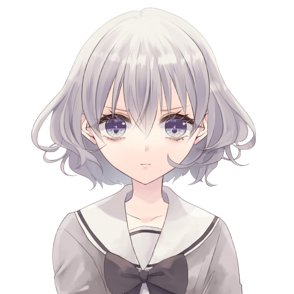雲峰詩音 : まるで義眼のように嵌め込まれた、バロールの魔眼。
雲峰詩音 : 紫色の瞳が妖しく輝く時、発生した引力は家族に向かう攻撃を全て詩音のみに引き寄せる。
美野島 沙里 : 「……っ、引き寄せられ…！」
美野島 沙里 : 「ハハ！まあいい、まずはてめぇから串刺しにしてやるぜ！」
美野島 沙里 : 美野島の髪が詩音の顔を、身体を、四肢を串刺しにする。同時に神経を焼切るような電流がその身体を駆け巡る。
雲峰詩音 : 「う……ぁ……っ！！」
雲峰詩音 : か細い悲鳴が口から漏れ出る。
雲峰詩音 : 全身を貫く電流は詩音の意識さえも焼き切り、彼女は紅く染まりながら地面に倒れた。
フランベルジュ :
「───！！」
鮮血に染まり、倒れる詩音の元に素早く駆け寄る
フランベルジュ :
「詩音、聞こえているなら……ちょっとだけでも口を開けて……！」
そう伝えると、フランは自身の親指を強く噛み、微かに血を滲ませる
雲峰詩音 : 「……っ、う……」 その言葉は微かに届いたのか、唇を震わせながら小さく口が開かれる
フランベルジュ : その口へ目掛け、親指から一滴だけ血が滴り落ちる。
フランベルジュ : 彼女の口内に届いた血は、全身のレネゲイドは激しく活性化させ、再び詩音の活力を取り戻させていく！
フランベルジュ : 「……ありがとう。私達を守ってくれて。」
雲峰詩音 : 「……！」 瞼を開くと、母親の顔がその目に映る
雲峰詩音 : 「う、うん……守らなきゃ、って思ったから……」 上体を起こし
雲峰詩音 : 「……これ、お母様が、助けてくれたの……？」 破けた制服越しに自分の体に触れて
フランベルジュ :
「そうだよ。家族は助け合ってこそ、だよね！」
ニコッ、と笑みを浮かべて
雲峰詩音 : 「……。うん……！」 笑みを返し、立ち上がる
フランベルジュ : 「さあ、今度はこっちから！やっちゃえ詩音！」
雲峰詩音 : 「えぇ……！」 詩音を中心に、渦を巻くように灰が舞い散る
美野島 沙里 : 「チッ…折角仕留めたと思ったのに妙な手品使いやがって！」身構えながら
GM : 次は詩音ちゃんの番！
雲峰詩音 : はい！
雲峰詩音 : マイナーアクションで戦闘移動！美野島さん達にエンゲージします！
雲峰詩音 : メジャーアクションで《砂の刃》+《ストライクモード》+《コンセントレイト》
雲峰詩音 : オートアクションで《砂の加護》
雲峰詩音 : 対象は美野島お前だーっ！！！PLの希望を打ち砕いた恨み思い知れ！！！！！！
system : [ 雲峰詩音 ] 侵蝕率 : 131 → 144
GM : 怒ってるー！！判定どうぞ！
雲峰詩音 : 10dx+3(10DX7+3) ＞ 10[1,2,2,2,6,6,6,7,10,10]+10[3,8,10]+10[8,10]+3[2,3]+3 ＞ 36
雲峰詩音 : 当たるか～？
雲峰詩音 : ガードする場合はガード値-5してダメージです
GM : んー！しないよりマシかなガードで
雲峰詩音 : おｋ！ダメージいきます！
雲峰詩音 : 4+4d10+2d10+4d10 死ねー！！！！装甲は有効です(4+4D10+2D10+4D10) ＞ 4+30[7,9,6,8]+12[2,10]+32[9,6,10,7] ＞ 78
system : [ 雲峰詩音 ] HP : 10 → 7
GM : ガード値1になって77通ります！とりあえず生きてる
雲峰詩音 : 流石に生きてるわ！当たり前
雲峰詩音 : 怒りの攻撃描写行きます
GM : オーライ！どうぞ
雲峰詩音 : 地面を蹴り、美野島へと接近。
雲峰詩音 : 詩音の周囲を漂う灰が、彼女の右腕に集結する。
雲峰詩音 : 「“灰獣”（カイジュウ）」
雲峰詩音 : 頭の中に描いたイメージを、寸分狂わず出力するための言葉。
雲峰詩音 : イメージと言葉はただ舞い散るだけの灰に形を与える。
雲峰詩音 : 右腕を包み込むその形は、まるでキュマイラシンドロームのオーヴァードが扱うような獣の爪。
雲峰詩音 : 「灰になれ……っ！！」
雲峰詩音 : 気合と共に振り下ろされた爪は、美野島の体を袈裟掛けに切り裂く──
雲峰詩音 : ──その身に宿るレネゲイドさえも刈り取りながら。
美野島 沙里 : 「なっ…！！うぐぁ……な、なんだてめぇ、何しやがった……！！」
美野島 沙里 : 傷を受けた部分からレネゲイドが死滅し灰になっていく。レネゲイドを戮する呪いが美野島の身体を蝕む。
美野島 沙里 : しかし、美野島はまだ倒れない。憎悪に満ちた瞳で詩音を睨み付けながら「この、化け物がぁ…！」と吐き捨てる。
雲峰詩音 : 「あなたも化け物でしょ……」 右腕に集まった灰が解け、地面にサラサラと落ちていく
GM : 次、矢委人くん行きましょう！
巨肩 矢委人 : では
巨肩 矢委人 : マイナーで移動
巨肩 矢委人 : 横に5m
巨肩 矢委人 : メインプロセス
巨肩 矢委人 : 【ケーダリオンの灯】：ｺﾝｾﾝﾄﾚｲﾄ(2)+ｱﾆﾏﾙﾃｲﾏｰ(3)+ﾀﾞﾝｼﾝｸﾞｼﾐﾀｰ(3)
system : [ 巨肩 矢委人 ] 侵蝕率 : 126 → 134
巨肩 矢委人 : 対象は美野島
巨肩 矢委人 : (8+4+12)dx+0+0@(7+0) 判定／100%以上／ケーダリオンの灯(24DX7) ＞ 10[1,1,1,1,1,2,2,2,3,3,3,3,3,4,4,4,4,5,5,6,6,6,7,9]+10[1,7]+10[7]+5[5] ＞ 35
巨肩 矢委人 : ダイス数にしては…低いかな！！！
巨肩 矢委人 : いや、待てよ
巨肩 矢委人 : 《妖精の手》使用！ラストの出目５君を10に変更して再走の時間だ
巨肩 矢委人 : 1dx(1DX7) ＞ 10[9]+10[9]+10[8]+4[4] ＞ 34
巨肩 矢委人 : 74！！！
GM : やば！
system : [ 巨肩 矢委人 ] 侵蝕率 : 134 → 138
GM : ガードします！そしてここで《電磁障壁》使っとこうガード値+4Dします
GM : 4d10(4D10) ＞ 26[9,5,6,6] ＞ 26
GM : ガード値32！ダメージどうぞ！
巨肩 矢委人 : 8d10+15+0 ダメージ／100%以上／ケーダリオンの灯 ここで、買ってもらったナイフが生きるんですね(8D10+15+0) ＞ 58[4,10,10,5,8,4,10,7]+15+0 ＞ 73
GM : 41点通ります！まだいける倒れない
GM : 演出どうぞー
巨肩 矢委人 :
「さて、私も気張りましょう」
取り出していたナイフを空に放り投げる。
巨肩 矢委人 :
「……DZR-67011-46335…」
不明な数字の羅列を呟く。すると、空に浮いたナイフがふ…と消える。
巨肩 矢委人 :
「起点方向へ……60、28、…そこだ」
彼は、その場に佇んだまま呟き続ける。
巨肩 矢委人 : 瞬間、パパラッチの背に衝撃が訪れる。
巨肩 矢委人 : 宙空から消失したナイフたちは、パパラッチの背後から、巨肩矢委人の方向へと鋭く進行していた。
美野島 沙里 : 「……ッ！！」
美野島 沙里 : はじめの衝撃を受け咄嗟に電磁障壁を発動したことでその何本かは弾かれるが、そのナイフで付けられた傷が確実に美野島の体力を奪っていく。
美野島 沙里 : 「背後からの攻撃なんて卑怯なマネしやがって…！！それでも正義振りかざしてるUGNの一員かよこの卑怯ものッ！」
巨肩 矢委人 : 「そう思われるのでしたら、予想してみてはいかがでしょう」
巨肩 矢委人 :
「私はまだまだ訓練中の身ですから…こうして方眼を用意して、口に出してやらないと中々上手くは行かないので」
自分などまだまだ、と息をつく
GM : では、触手植物①の出番
GM :
マイナーで《骨の剣》
メインで《伸縮腕》+《コンセントレイト：エグザイル》
触手植物① : 白兵攻撃、対象は…フランちゃん！
フランベルジュ : なんと！
触手植物① : せっかく遠くまで届くので…(？)
触手植物① : 判定行きます！
触手植物① : 10dx7+4-1(10DX7+3) ＞ 10[1,2,3,5,5,7,7,7,9,10]+10[3,5,7,7,8]+10[2,2,8]+6[6]+3 ＞ 39
フランベルジュ : はーい！オートで《インペリアルガード》使います！
フランベルジュ : 効果はダメージ算出前に－2d10軽減！
フランベルジュ : 2d10 軽減(2D10) ＞ 13[9,4] ＞ 13
触手植物① : 守りも万全だった…了解！ダメージいきます
触手植物① : 4d10+11(4D10+11) ＞ 20[1,4,7,8]+11 ＞ 31
GM : 18点！耐えられてしまった…
system : [ フランベルジュ ] HP : 24 → 6
system : [ フランベルジュ ] 侵蝕率 : 118 → 121
GM : と、触手植物②は同様の攻撃をクリスタちゃんに行います！
高嶺 紅林栖 : さあ！ 来なさい！！
触手植物② : いくぞー！
触手植物② : 10dx7+4-1(10DX7+3) ＞ 10[3,3,4,5,5,6,7,7,10,10]+10[2,2,5,10]+10[9]+2[2]+3 ＞ 35
高嶺 紅林栖 : 暴走しているのでリアクションはありません！ ダメージどうぞ！
触手植物② : 4d10+11(4D10+11) ＞ 24[8,8,7,1]+11 ＞ 35
高嶺 紅林栖 : 装甲28点！ ダメージ軽減15点！！
高嶺 紅林栖 : そう易々とワタクシの肌を傷つけるコトができると思わないコトね！！ ノーダメージ！！！！
触手植物② : 雑草ごときには傷つけられなかったよ…
GM : 演出いきます！
美野島 沙里 : ｢クソッ、ならこいつはどうだ！！｣
GM : パパラッチの周囲に生えた2本の巨大な触手植物が捻り上がりその硬度を増し、詩音の後方にいるフランとクリスタに牙を剥く。
フランベルジュ : 「！！」
フランベルジュ : 迫りくる触手へ向けて、白色の霧を発生させる。それは強力な除草作用を含む有毒の霧だ。
フランベルジュ : それを潜り抜ける触手はいくつかは枯れるも、フランは突破してきた数本の触手に貫かれる！
フランベルジュ :
「いっっ……！あ、危なかったわ……」
貫いた触手を素早く枯らす
GM : これで敵の出番終わって次はクリスタちゃん
高嶺 紅林栖 : ではでは、行かせていただきましょう
高嶺 紅林栖 : マイナーアクションで戦闘移動してパパラッチにエンゲージ
高嶺 紅林栖 : メジャーアクションで『HOLD UP！(コンセントレイト＋インビジブルハンド)』
高嶺 紅林栖 : 対象はパパラッチ、触手植物①、触手植物②
高嶺 紅林栖 : では命中！
高嶺 紅林栖 : 13dx7＋4(13DX7+4) ＞ 10[1,1,2,4,6,6,7,7,7,8,8,9,10]+10[1,4,4,5,6,9,9]+10[4,8]+2[2]+4 ＞ 36
GM : 触手植物①、触手植物②はガード
GM : パパラッチはそうね…
GM : パパラッチもガードで！
GM : ダメージどうぞ
高嶺 紅林栖 : 夢見の林檎(フォールンサラマンダー)を使用してダメージロール！
高嶺 紅林栖 : 4d10＋4d10＋2 装甲有効ダメージ！(4D10+4D10+2) ＞ 15[4,3,2,6]+27[3,6,8,10]+2 ＞ 44
美野島 沙里 : 美野島はデモンズウェブを使ってダメージ軽減します！
美野島 沙里 : 3D(3D10) ＞ 19[5,4,10] ＞ 19
GM : 美野島はガード値6で合わせて25点軽減の19点通ります、倒れない！
GM : 触手植物くん達はガード値6、装甲値9 通ったダメージが29かな こっちも虫の息だけど生きてる
高嶺 紅林栖 : なるほど！ そこそこの装甲もありますのね！ タフですわ！！
GM : 意外とね！では、先程の反応含めて演出どうぞ～
高嶺 紅林栖 : 「……はあ、彼我の戦力把握もできない低クオリティなオーヴァードが多いのかしら日本は」
高嶺 紅林栖 : 自身に対して伸ばされた触手を、左手で平然と捕まえる。
高嶺 紅林栖 : 少女は"林檎の宝玉"をひとつ、大鏡の破片に投げ入れ、
高嶺 紅林栖 : 「晶喚『白晶の魔斧(ヴァイス・ヴァイル)』」
高嶺 紅林栖 : 呪文を唱えて"魔法の鏡"に武器を造らせる。
高嶺 紅林栖 : ──全ての破片がひとつに結集し、オーダー通りに巨斧が錬成される。
高嶺 紅林栖 : 白雲色の水晶製の斧。
高嶺 紅林栖 : ……その全長は少女二人分はある。 御伽噺の巨人にこそ相応しい武器。
高嶺 紅林栖 : 華奢なクリスタとは、あまりにもミスマッチに見える。
高嶺 紅林栖 : 「──ところで"パパラッチ"はイタリア語で"ハエ"などを意味するのだとか」
高嶺 紅林栖 : けれどクリスタは、約100kgのソレをバロール能力を用いて引き寄せ、片手で軽々と持ちあげた。
高嶺 紅林栖 : 「御存知だったかしら？」その巨斧を振り上げ、首を傾げる
美野島 沙里 :
｢……ッ！！だ、誰がハエだッ そんな物騒なもん持ち出しやがって｣
次に来るだろう斬撃に備えつつ吠える。
高嶺 紅林栖 : 「ああ、いえ、これでも褒めているんですのよ？」
高嶺 紅林栖 : 「その下劣な精神と趣味、逃げ惑う無様で無力な姿……」
高嶺 紅林栖 : 「まさに汚物に群がるハエに相応しいと思いませんこと？」
高嶺 紅林栖 : 「コードネームをつけた方には拍手を送りたいくらいですわ！」
美野島 沙里 : ｢うるせぇ、余計なお世話だ！てめぇのパンツもここで抜き取ってやろうか！！｣
高嶺 紅林栖 : 「…………」
高嶺 紅林栖 : 「目障りで耳障り、それもコードネーム通りで結構」
高嶺 紅林栖 : 「──それならばハエはハエらしく」
高嶺 紅林栖 :
黒馬の腹部に足を当てつつ、触手をグッと手繰り寄せる。
高嶺 紅林栖 :
「叩き潰して差しあげましょう！」
高嶺 紅林栖 : 刹那、
高嶺 紅林栖 : 少女を背に乗せた黒馬が疾駆する。 一息の内、相手の眼前に躍り出る。
高嶺 紅林栖 : ──時速100kmで駆ける黒い影は、その蹄音を置き去りにして、美しいたてがみを風に靡かせる。
高嶺 紅林栖 : 「フッ……！！」
高嶺 紅林栖 : 擦れ違い様に、巨斧を振り翳す。
美野島 沙里 :
｢……クッ！！｣
咄嗟にガードするため腕を頭上で組み、更に硬化した髪を何層にも編み上げてシェルターを作り出す。
高嶺 紅林栖 : ──パパラッチの脳天を目掛け、力任せに叩き付ける。
高嶺 紅林栖 : 音速を遥かに越えて、振り下ろされる暴威。
高嶺 紅林栖 : 単純な軌道だが決して躱せるモノではない。
高嶺 紅林栖 : ……巨斧はその防御を貫通して、相手の頭部に直撃。
高嶺 紅林栖 : パパラッチの骨肉を砕き、足下の地面を諸共に割る。
高嶺 紅林栖 : ──それは斬撃というより爆撃。
高嶺 紅林栖 : その衝撃で巨斧自身も砕け散る。
美野島 沙里 :
｢………ガ…ッ、なん…てデタラメな…ッ｣
ダメージが蓄積しつつあり再生も追いつかない。地に臥したまま血反吐を吐いている。
高嶺 紅林栖 : 「……さあ、これで御分かりかしら？」
高嶺 紅林栖 : 「身の程、というモノを」
高嶺 紅林栖 : パラパラと水晶と瓦礫の雨が降る。
高嶺 紅林栖 : 瓦礫溜まりに倒れるパパラッチを、少女は冷たい目で見下ろしていた。
GM : じゃあ、次の方！
フランベルジュ : ママ、行きます！
GM : ママ！いったれー！
フランベルジュ : メジャーで《絶対の恐怖》+《抗いがたき言葉》+《ポイズンフォッグ》＋《CR:ソラリス》
フランベルジュ : オートで《タブレット》を使って射程:視界に変更！
フランベルジュ : 対象はパパラッチ、触手植物①、②！
GM : 判定どうぞ！
フランベルジュ : 10dx＋1@7 装甲無視、あらゆるダイス－3個！(10DX7+1) ＞ 10[2,2,3,4,6,8,8,8,9,10]+10[1,3,5,7,10]+10[1,7]+10[10]+6[6]+1 ＞ 47
system : [ フランベルジュ ] 侵蝕率 : 121 → 129
GM : 装甲無視つらい～…全員ガードです、ダメージどうぞ！
フランベルジュ : 5d10＋2 そらよっと！(5D10+2) ＞ 25[4,7,3,5,6]+2 ＞ 27
GM : 触手植物さん2匹ともお亡くなりに…パパラッチには21点とダイス減少3個 もうだいぶ削れてきてる！
GM : 演出どうぞ！
フランベルジュ : はいさ！軽めに！
フランベルジュ : 「さんざん他人を苦しめて愉しんで来たんだもの、アナタも苦しまなければ平等じゃないわよね？」
フランベルジュ : クスクスと笑い声が響く。それと同時に、美野島と触手植物は濃霧に包まれた。
フランベルジュ : その霧に包まれれば最後、人ならば意識が途絶えるまで全身を蝕むような激痛に苛まれ。植物は細胞が不活性化し、自ら枯れ落ちる。
美野島 沙里 : ｢……ア、ガッ！！い…いでぇ、ア、アアァアァ……！！！｣
フランベルジュ : 「ふ、ふふ……『まだ』死なれてもらっては困るもの、じっくり…ゆっくりと苦しんで頂戴？」
GM : 触手植物は枯れて朽ちていき、美野島は半狂乱になりつつ霧を薙ぎ払う。それでも激痛は続き悶え苦しみながら唸り声を上げる。
GM : ヴォルグくん、どうぞ！
ヴォルグ : はーい
ヴォルグ : マイナーで≪赫き剣≫＋≪氷の回廊≫ HPを8点つかって武器作成、美野島にエンゲージします
ヴォルグ : メジャーアクションで≪コンセントレイト：ブラム＝ストーカー≫+≪渇きの主≫+≪ブラッドバーン≫
GM : おけ、判定どうぞ！
ヴォルグ : フォールンスプライト使用します 13dx7+3(13DX7+3) ＞ 10[2,2,3,3,4,4,6,6,7,7,8,8,10]+10[3,4,7,7,8]+6[3,5,6]+3 ＞ 29
GM : 美野島はガードします！
ヴォルグ : 3d10+28 装甲無視！(3D10+28) ＞ 13[6,4,3]+28 ＞ 41
system : [ ヴォルグ ] HP : 30 → 22
system : [ ヴォルグ ] 侵蝕率 : 137 → 153
GM : では、ガード値6で35ダメージ通ります。
GM : 美野島はここでEロイス《怨念の一打》を使用します。
GM : 35点そのままヴォルグくんにダメージを返します。軽減不可！
ヴォルグ : パパラッチのロイスをタイタス昇華して復活します！
GM : 了解！では、処理終わったらRP入ってもらって
system : [ ヴォルグ ] ロイス : 6 → 5
system : [ ヴォルグ ] HP : 22 → 14
ヴォルグ : ボロボロの詩音と負傷したフランを暫く見ていたが"パパラッチ"に向き直ると
ヴォルグ : 下ろした髪の隙間から冷たく静かな怒りに満ちた獣のような目で睨みつける
美野島 沙里 : ｢……ぐ、クク……ハハ、なんだその目はよォ……てめぇ、の女傷付けられてキレてんのかぁ？｣
美野島 沙里 :
｢それとも、テメェも嗅ぎたかった……のかァ？ガッ……こいつ、らのパンツの匂いをよォ……｣
この期に及んでケタケタ笑いながら
ヴォルグ : 挑発の言葉に呆れたように肩を竦めて溜息を吐くと、遊園地でしたように詩音に上着を投げ渡し
ヴォルグ : 「ジャーム化なんてするものじゃないな…」と呟きながら自らの前髪を鷲掴むように額に手をあて、髪を掻き上げる
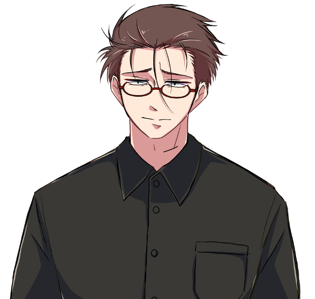ヴォルグ : 「こっちのほうが狙いやすい」
ヴォルグ : どこからともなく小さな雪虫がふわりと舞うと美野島へ向かって高速で飛んでゆく
ヴォルグ : それを目でしっかりと捉えながら自らの手のひらにサバイバルナイフを貫通させると足元や周囲には血液が飛び散る
ヴォルグ : それを引き抜き紅の刃が生成されると同時に地面を蹴ると蒸散するようにその場から掻き消え
ヴォルグ : ――次の瞬間 美野島の目の前に冷たい突風と共に現れる
ヴォルグ : 「…詩音、ちょっと借りるな。」
ヴォルグ : 先ほどの派手な被弾で周囲に散った詩音の血液と融合した自らの血液が無数の針のような形に変形し
ヴォルグ :
「お返しだっ…！」
美野島を切り裂く一撃を追って豪雨のように紅の針が降り注ぐ
GM : 美野島の身体は1文字に切り裂かれ、更に自身が行った攻撃の報いを受けるかのように紅の針に幾度も体を貫かれる。
美野島 沙里 : ｢ゥグェエ！！グァァァ…ッッ！！！｣
美野島 沙里 : だが、美野島は倒れずその場に踏みとどまると憎悪と狂気の宿った瞳でヴォルグを睨みつける。
美野島 沙里 : ｢ぁあァぁ…アァァ！！！どい……つも、こいツも……俺をコケに、しやがってェエ……！！！｣
美野島 沙里 : 刹那、美野島の胸部を突き破るように十二の肋骨が剥き出しとなり、ヴォルグの身体を串刺しにする。
雲峰詩音 : 「……！お兄様……っ！」 隣で貫かれる兄を目の前にして、大きい上着を頭から被ったまま小さく叫ぶ
ヴォルグ :
「っ……！！？」
咄嗟に武器で防御の姿勢をとるものの間に合わず、その腕や腹部に牙のような肋骨が突き刺さる
ヴォルグ : 急所に入ったのか一瞬意識が薄れ血を吐くが、家族を傷付けた目の前の疎ましいモノをｷﾞﾘ…と睨みつけ
ヴォルグ : 美野島の身体に足を掛けると蹴り飛ばすように後方へ吹き飛んで突き刺さった十二の肋骨を無理やり引き抜く
ヴォルグ : 「……ッ、反撃か…」
ヴォルグ :
（ダメージは稼いだ、"あの時"に比べれば生きてるだけマシだ…）
受け身を取るように着地すると口元の血を袖で拭いながらフラフラと立ち上がり睨みつけたまま
GM : 回りきったね！クリンナップは何もないかな
雲峰詩音 : 放心が自動回復するだけ！他はないない！
フランベルジュ : なし！
ヴォルグ : なし！
高嶺 紅林栖 : ないですです！
巨肩 矢委人 : ない！
GM : はい！じゃあ2R目入っていくわよ
GM : 再度セットアップから！
フランベルジュ : なし！
雲峰詩音 : ないない
高嶺 紅林栖 : ないですわ！
ヴォルグ : ないですー
巨肩 矢委人 : はーい
巨肩 矢委人 : 万色の檻を使います
system : [ 巨肩 矢委人 ] 侵蝕率 : 138 → 143
GM : 了解、こちらはないので
GM : イニシアチブです、何か使う人いる？
雲峰詩音 : 無いです！
高嶺 紅林栖 : ありませんわ！
巨肩 矢委人 : なしなし
ヴォルグ : なし！
GM : ウッス！では、ここで
GM : 美野島がEロイス《さらなる絶望》を使用。彼のいるエンゲージに触手植物③が湧きます。
美野島 沙里 :
｢俺は…まだ倒れねェ…ぜ…！！クク……まだまだ、盗みたりねェんだ、女の下着がよォオ！！！｣
目をギラつかせて
雲峰詩音 : 「普通ならもう気を失っていてもおかしくないのに、この執着心……やっぱりジャームね……」 呆れたような、感心するような目で見てる
フランベルジュ : 「あらあら、往生際の悪い……ハエ（パパラッチ）というよりネズミかな～？」
巨肩 矢委人 :
「異様なタフさですね…これ以上喋られると皆の機嫌が…」
ママとかクリスタとか…
ヴォルグ :
「この執着心、どこまでも気色が悪いな…」
深く吐いた吐息は痛みを耐える溜息か呆れの溜息か
高嶺 紅林栖 : 「これはハエやネズミのしぶとさでもなく、操作している触手と同じで雑草と同じレベルですわよ……」
高嶺 紅林栖 : 「もう早急に根元から始末してしまいましょう……！」
雲峰詩音 : 「えぇ、そうね」
GM : では、メインプロセス！パパラッチの攻撃です
美野島 沙里 :
マイナーで《形状変化：剛》+《骨の剣》
メインで《オールレンジ》+《伸縮腕》+《スタンボルト》+《コンセントレイト：エグザイル》+《ジャイアントグロウス》を使用。
美野島 沙里 : 同じエンゲージの3人に白兵範囲攻撃を行います。
雲峰詩音 : オートアクションで《時の棺》使用！判定を失敗させます！
system : [ 雲峰詩音 ] 侵蝕率 : 144 → 154
美野島 沙里 : くそ～～～！きたねぇぞ～～～～！！！
雲峰詩音 : ジャーム相手に汚いも何もありませんわ～！
GM : では、判定は失敗！RPいきます
美野島 沙里 : 血走った眼…美野島は髪を振り乱し周囲のものを破壊し尽くす勢いで3人に襲いかかる。
美野島 沙里 : 洪水のごとく迫る毛髪の奔流がその視界を覆い尽くさんとしていた。
美野島 沙里 : ｢今度こそグチャグチャにしてやる！！跡形も残らねぇようになァ！！！｣
高嶺 紅林栖 : 「……これを弾くのは厳しそうね」スッと左手を出して斥力障壁を展開するために構える
ヴォルグ : 「………っ」 軋む身体を無理やり動かし、視界一面の黒い洪水から妹達を守ろうと武器を構えて２人の前へ出ようとする
雲峰詩音 : 美野島の放った攻撃が三人に襲い掛かる寸前。
雲峰詩音 : 「させないわ」
雲峰詩音 : 詩音の右目に嵌め込まれた魔眼が煌く。
雲峰詩音 : その瞬間、全ての時が停止した。
雲峰詩音 : 空を流れる雲も、戦いの最中にあるオーヴァード達も、写真の中に収めたかのように動かない。
雲峰詩音 : 止まった時の中を動けるのは、時を止めた雲峰詩音だけ。ただしこの時間停止はそう長くは保てない。
雲峰詩音 : 短き時の狭間を駆け抜けて、美野島の髪を右手で掴む。
雲峰詩音 : 「“破灰”（ハカイ）」
雲峰詩音 : ──時は再び動き出す。
雲峰詩音 : 止まった時を認識出来ない者達が次に目にしたのは、灰塵に帰していく美野島の毛髪だった。
ヴォルグ : 時間が跳んだように押し寄せていた髪が灰に還ってゆき暫く武器を構えたままその光景を呆然と見つめる
高嶺 紅林栖 : 「あの一瞬でこの芸当……」
高嶺 紅林栖 : 「もしかしてバロール能力を用いた時間停止……？」
雲峰詩音 : 「えぇ」 右手についた灰を払って
高嶺 紅林栖 : 「その身体で無茶をしますわね……アレは負担が大きいでしょう……」
雲峰詩音 : 「……でも、守りたかったから」
高嶺 紅林栖 : 「────そう、だったわね」
雲峰詩音 : 「うん」
ヴォルグ :
「……全く、俺の妹達はすごいな…」
感心するような渇いた笑いを零し
雲峰詩音 : ヴォルグの呟きが聴こえて、口元に小さく笑みを浮かべる。
GM : 周囲を取り巻くように拡がっていた髪のほとんどが灰となって風に散った。
GM : 残されたのはみだれた髪、肩で息をするぼろ雑巾のような美野島。
美野島 沙里 : ……ギリリと割れんばかりに奥歯を噛み締める。
美野島 沙里 :
｢……このッ｣
徐に顔を上げて
美野島 沙里 :
｢このガキャァ！！！俺の攻撃を防いだぐらいで勝った気になってんじゃねェぞ！！！｣
ヒステリックな叫び声をあげながら、後ずさる。
雲峰詩音 : 「……なってないわ」
雲峰詩音 : 「勝つのは、これからよ」 一歩前に出て、美野島を冷静に見据える
GM : よし、じゃあそのまま詩音ちゃんの攻撃行こうか！
雲峰詩音 : はーい
雲峰詩音 : まずマイナーアクションですが
雲峰詩音 : クリスタちゃんの黒馬に同乗状態になります！
雲峰詩音 : そしてメジャーアクションで《砂の刃》+《ストライクモード》+《コンセントレイト》
雲峰詩音 : オートアクションで《砂の加護》
雲峰詩音 : 対象は美野島！
system : [ 雲峰詩音 ] 侵蝕率 : 154 → 167
GM : はい！判定どうぞ
雲峰詩音 : 12dx+3(12DX7+3) ＞ 10[1,1,2,3,3,5,5,6,7,7,8,9]+10[4,4,6,8]+10[9]+5[5]+3 ＞ 38
雲峰詩音 : 良さげかな、ガードする場合はガード値-5します
GM : 触手植物③が美野島にカバーリングを行います！
雲峰詩音 : うわ～！
雲峰詩音 : 今までやらなかったくせに～！
雲峰詩音 : じゃあダメージいきます！
高嶺 紅林栖 : 夢見の林檎(フォールンサラマンダー)を使用します！ これで使用可能回数が尽きた！！
高嶺 紅林栖 : このダメージロールで与えるダメージを＋2d10！！
雲峰詩音 : 合体攻撃よ
GM : めっちゃ協力プレイしてくる！ダメージどうぞ！
雲峰詩音 : 4+4d10+2d10+2d10+4d10(4+4D10+2D10+2D10+4D10) ＞ 4+34[7,9,9,9]+9[1,8]+16[10,6]+26[5,4,10,7] ＞ 89
system : [ 雲峰詩音 ] HP : 7 → 4
GM : えっぐ、触手植物くんはもう粉々よ
雲峰詩音 : 肉壁の役割を果たして死んでいった
GM : 時間稼ぎをした…RPどぞ～
雲峰詩音 : はーい
高嶺 紅林栖 : 「……シオン」
雲峰詩音 : 「……？」 振り向く
高嶺 紅林栖 : 「アナタの御節介のおかげで、ワタクシの肌が傷付かずに済みました」
高嶺 紅林栖 : 「借りたままと言うのは癪に障りますし……」
高嶺 紅林栖 : 「返礼にひとときの魔法(ユメ)を見せてさしあげます」
高嶺 紅林栖 : 「……合わせなさい」
雲峰詩音 : 「え……？う、うん」 何かはよく分かっていないが、とにかく備える
高嶺 紅林栖 : 「(……レネゲイドコントロールだけに時間を費やしてきただけあって、シオンの戦闘センスは本物)」
高嶺 紅林栖 : 「(この子であれば、対応できるでしょう)」
高嶺 紅林栖 : 少女は"林檎の宝玉"をひとつ、大鏡の破片に投げ入れ、
高嶺 紅林栖 : 「──斥力領域、並列縫製！」
高嶺 紅林栖 : パパラッチの手前の路面にと、鏡片の半分を集めて"円鏡"を錬成する。
高嶺 紅林栖 : 「では、行きますわよ！」
雲峰詩音 : 「ん……！」 頷く
雲峰詩音 : 姉を信じ、美野島へと一気に距離を詰める。
高嶺 紅林栖 : 少女が懐に潜り込む。 パパラッチが構える。
高嶺 紅林栖 : キラリ、と円鏡が陽光を反射して、パパラッチの視界を白で塗り潰す。
高嶺 紅林栖 : その時。
高嶺 紅林栖 : パリン、と踏まれた水晶が砕けて、
高嶺 紅林栖 : ──少女の姿は、その視界から魔法のように消失した。
美野島 沙里 : ｢……！！｣目を細めて
美野島 沙里 : ｢(チッ、ガキはどこに消えた…！？)｣
高嶺 紅林栖 :
高嶺 紅林栖 : ──円鏡の破片が上空に浮かび、灰塵と水晶のドレスを縫製していく。
高嶺 紅林栖 : ボロボロだった衣服を補修して、義姉と色違いの美しいドレスを造る。
高嶺 紅林栖 : それは二つのモルフェウス能力で編まれた、
高嶺 紅林栖 : たった一人のためのオーダーメイドの衣装。
高嶺 紅林栖 : ──高嶺詩音のためのドレスだ。
高嶺 紅林栖 :
高嶺 紅林栖 : ……そう、当然のコトだが、彼女は消えてなどいない。
高嶺 紅林栖 : その姿はパパラッチの死角に、
高嶺 紅林栖 : ──それ即ち"大空"にあった。
高嶺 紅林栖 : 円鏡の足場に付与した斥力で、一瞬にして上空まで跳んでみせたのだ。
雲峰詩音 : 遥か空高くまで飛んだ詩音は、自分の体を包むドレスを見て、
雲峰詩音 : 「……！」 本当に魔法をかけられたのだと理解し、笑みを零す
高嶺 紅林栖 : その跳躍の頂点に達した瞬間、フワリと風を受けてドレスの裾が広がる。
高嶺 紅林栖 : さながら大きな鳥の翼のはばたきのように。
高嶺 紅林栖 : ──そこには、先ほど跳躍に用いたモノと同じ"円鏡"が設置されていた。
高嶺 紅林栖 : もう半分の破片を用いて造られたのだろう。
雲峰詩音 : 「……！あれは……」
雲峰詩音 : 宙に設置された新しい円鏡を見て、姉が何を求めているのか理解する。
雲峰詩音 : 詩音は重力を操って空中でくるりと体を反転させると、
雲峰詩音 : 円鏡を足場に踏んで、“下”へと落ちる。
高嶺 紅林栖 : 足場にした円鏡が砕け散る。
高嶺 紅林栖 : その一片一片が、少女の両足にツルのように絡み付く。
高嶺 紅林栖 : ……真夏の太陽を閉じ込め、キラキラと眩しく煌めく。
高嶺 紅林栖 : 「晶喚『灰晶の魔靴(ジルバーン・シュー)』」
高嶺 紅林栖 : その呪文で錬成されたのは、御伽の国にしか存在しない美しい履き物。
高嶺 紅林栖 : ──透き通る"ガラスの靴"だった。
雲峰詩音 : 「…………」
雲峰詩音 : 「ありがとう、お姉様」
雲峰詩音 : 足先にガラスの靴を煌かせながら、宙を駆ける。
雲峰詩音 : 「そして……行くわよ、“パパラッチ”」
雲峰詩音 : 詩音の背中から大量の灰が噴射する。
雲峰詩音 : 灰色の翼は詩音の体を押し出すように加速し、地上の美野島に向かって急降下を始めた。
雲峰詩音 : ……“パパラッチ”美野島沙里は目にするだろう。
雲峰詩音 : 白いドレスを纏い、透き通ったガラスの靴を履き、
雲峰詩音 : 希望と共に舞い降りて来る、美しい“シンデレラ”の姿を。
GM : 飛来する詩音を察知した触手植物が主を守らんと蔦を張り巡らせる。
GM : その蔦の隙間から美野島は目にする。純白の輝きを放ち空を駆ける……妖精のごとき“シンデレラ”の姿を。
美野島 沙里 :
｢な、………｣
その夢でも見ているかのような幻想的な光景に目を奪われ、思わず息を飲む。
雲峰詩音 : ──刹那。
雲峰詩音 : “シンデレラ”のガラスの靴が、触手植物を打ち貫く。
雲峰詩音 : 思わずその姿に見惚れていた美野島に与えられるのは、希望では無く絶望だ。
雲峰詩音 : ガラスの割れるような音を聴きながら、美野島は自身の僕が無惨に灰化していくのを目の当たりにするだろう。
美野島 沙里 :
｢……！！！｣
ガラスが砕ける音で現実へと引き戻され、目を見開く。身の危険を感じ、そのまま地を蹴って避けようとする。
雲峰詩音 : 美野島のその判断は正しかった。
雲峰詩音 : あまりにも強力すぎる一撃のためか、その場には強い重力が滅茶苦茶な方向に巻き起こる。
雲峰詩音 : 「避けられた……けど、あいつもこれ以上植物を生やす体力なんてないはず……っ」
雲峰詩音 : 少し悔し気に呟きながら、詩音は宙へと放り出される。
高嶺 紅林栖 : 落下していく少女に引力を与えて引き寄せ、そっと両腕で抱きとめる。
高嶺 紅林栖 : 俗に言う"お姫様抱っこ"の体勢で。
雲峰詩音 : 「……？」 固い地面では無く、柔らかい腕の中に落ち
雲峰詩音 : 「……！？え……！？」 すぐにその“異常”に気付き、紅林栖の顔を見上げる
高嶺 紅林栖 : 「ああ、安心なさい？ 『対抗種』の呪いも遺産に身を包んだ今のワタクシには効かないわ？」実際に肌が触れているが平然としている
雲峰詩音 : 「…………」 その言葉を理解するまで時間がかかり、紅林栖の目をジッと見つめるが
雲峰詩音 : 「そう……そうなのね……」 安心したように笑みを見せる
高嶺 紅林栖 : 「ええ」
高嶺 紅林栖 : 「──ふふ、こうして近くで見ると悪くないものね」
高嶺 紅林栖 : 「ようやくワタクシの家族を名乗るのに相応しい装いになったじゃない」純白のドレスに身を包んだ少女に微笑む
雲峰詩音 : 「そうね……」
雲峰詩音 : 「そう言われると、嬉しいわ。お姉様」 微笑み返す
高嶺 紅林栖 : 「……であれば、その歓びを胸に刻んで、後はゆっくりと休んでいなさい」
高嶺 紅林栖 : 「生憎、南瓜の馬車ではないけれど」
雲峰詩音 : 「…………」 胸に手を当て、侵蝕率が高まっているのを感じる
雲峰詩音 : 「えぇ、わかったわ」 素直に自分の体を姉に委ねる
高嶺 紅林栖 : 「よろしい」
高嶺 紅林栖 : バロール能力を使い、少女を黒馬の後ろに跨らせる。
GM : では、次は矢委人くんの出番！
巨肩 矢委人 : いくぜいくぜ
巨肩 矢委人 : そしたらマイナー無し
巨肩 矢委人 : メイン
巨肩 矢委人 : 【ケーダリオンの灯】：ｺﾝｾﾝﾄﾚｲﾄ(2)+ｱﾆﾏﾙﾃｲﾏｰ(3)+ﾀﾞﾝｼﾝｸﾞｼﾐﾀｰ(3)
system : [ 巨肩 矢委人 ] 侵蝕率 : 143 → 151
巨肩 矢委人 : 対象はもちろんパパラッチ
巨肩 矢委人 : (8+4+12)dx+0+0@(7+0) 判定／100%以上／ケーダリオンの灯(24DX7) ＞ 10[1,1,1,1,2,3,3,4,4,4,4,4,4,4,4,4,5,6,6,7,7,8,10,10]+10[2,3,4,5,8]+4[4] ＞ 24
巨肩 矢委人 : おいィ？
高嶺 紅林栖 : ダイス24個でそんなことある？？？？？？？？？
巨肩 矢委人 : 妖精の手を使用する！！！！
GM : なんかで目が悪い…！いいよ使って！
巨肩 矢委人 : 1dx@7 10回転すると言いなさい(1DX7) ＞ 3[3] ＞ 3
巨肩 矢委人 : なんだろう、出目悪くなるのやめてもらっていいですか
巨肩 矢委人 : おいちゃんRCの固定値抜けてたので結果は35となりました
system : [ 巨肩 矢委人 ] 侵蝕率 : 151 → 155
GM : せちがれぇ…美野島はガードします！
巨肩 矢委人 : 4d10++15+0 ダメージ／100%以上／ケーダリオンの灯(4D10+15+0) ＞ 27[2,7,10,8]+15+0 ＞ 42
美野島 沙里 : 足掻きのデモンズウェブ！軽減します！
美野島 沙里 : 3d10(3D10) ＞ 15[9,1,5] ＞ 15
GM : 合計21点軽減の21ダメージ、ギリギリ生きてるな…
GM : 演出どうぞ！
巨肩 矢委人 :
「……では、利用させていただきます」
何かを思いついたのか、彼は周囲を見渡す。
巨肩 矢委人 : 指を鳴らす。すると、周囲に変化が訪れる。
巨肩 矢委人 :
宙に待機していたナイフは、再度その場から姿を消す。
そして、彼が所持しているはずのナイフの…何倍もの数のナイフが、パパラッチの周囲に姿を現す。
巨肩 矢委人 : 「……A…4…02、全対象は対角へ」
巨肩 矢委人 :
「さて、背後からは卑怯ということでしたから…当てていただきましょう」
パパラッチの周囲に展開されたのは、撒き散らされた鏡面の残滓。
巨肩 矢委人 :
それらが座標を与えられ、集合し、結束する。
そうすれば、彼らは本来の役割を思い出す。
巨肩 矢委人 : 宙に浮いた幾つもの鏡が、ナイフを映し出す。
巨肩 矢委人 :
「正解は5本、『ケーダリオンの灯』。どうか導きのあらんことを」
彼が腕を降ろす。瞬間、幾本ものナイフが殺到するだろう。
GM : 詩音の攻撃を避けるため後ろに飛びずさったパパラッチに向かい幾本ものナイフが飛ぶ。
美野島 沙里 :
｢……ッ！！？｣
咄嗟に髪の毛でガードしようとするが、全てのナイフに対応しようとしたがためにその障壁は薄くなる。
GM : 壁を切り裂いて美野島に到達した5本のナイフが彼の身体をズタズタに引き裂く。
美野島 沙里 : 切り裂かれて上手く声にならない叫びが上がり、その身体はついに再生をやめる。
GM : もう当たればトドメだな！次の方
高嶺 紅林栖 : クリスタは待機の宣言をします！
GM : 待機した！じゃあ、フランちゃんかヴォルグくんかな
フランベルジュ : はいはい！行きます！
フランベルジュ : マイナー無し！メジャーで《絶対の恐怖》＋《CR:ソラリス》で！
system : [ フランベルジュ ] 侵蝕率 : 129 → 133
GM : おけ、判定どうぞ！
フランベルジュ : 11dx＋1@7 装甲無視のみ！(11DX7+1) ＞ 10[2,3,5,6,6,6,7,8,9,10,10]+10[1,2,5,5,10]+3[3]+1 ＞ 24
巨肩 矢委人 : ありますぜ、あと一回
GM : あるのか！手が！
フランベルジュ : 妖精パパ！！
巨肩 矢委人 : 《妖精の手》！かっとばせーマーマ！
system : [ 巨肩 矢委人 ] 侵蝕率 : 155 → 159
フランベルジュ : おっけーい！
フランベルジュ : 1dx@7 実は使うの初めてだ(1DX7) ＞ 10[10]+6[6] ＞ 16
巨肩 矢委人 : 46というわけだ
フランベルジュ : ありがてぇ…！
GM : 盛ってきたねぇ！！
GM : 満身創痍の美野島のリアクションはなしです！ぶちかませマーマ！
フランベルジュ : 5d10＋2 おっしゃああああー！(5D10+2) ＞ 23[6,3,6,1,7]+2 ＞ 25
GM : これでもオーバーキルだ…美野島戦闘不能です、演出どうぞ！
フランベルジュ : やった！即興でやるので時間いただきます！
フランベルジュ :
灰化。斬撃。猛毒。
多種の猛攻を受けて、なお立ち続ける"パパラッチ"に、フランはある意味で感心の念が湧く。
フランベルジュ : すぐ消え去るようなほんのちょっとの感心ではあるが
フランベルジュ : 「その執念、ほんととんでもないね……。でもこれで終わり…っ。」
フランベルジュ : フランが手を翳すように念じると、パパラッチの体内を巡る毒に変化が起きる
フランベルジュ : 全身を蝕む毒は、体内を巡る血液さえも毒とし、呼吸に必要な酸素さえも害である……
フランベルジュ : ───と、"パパラッチ"の脳を錯覚させるように仕向ける。
フランベルジュ : 幻覚ではあるものの、その痛みと苦しみは真に迫るものであり。今まで受けた傷がその辛苦を加速させる。
美野島 沙里 :
｢ァ……ァァ……ゥァアァ……！｣
地獄が生温い程の苦しみに悶える美野島
美野島 沙里 : しかし、この状況に陥って尚、底知れぬジャームの憎悪の衝動が彼をつき動かした。
美野島 沙里 : “勝てないのならば、せめて地獄への道ずれを”
美野島 沙里 : 対抗種の呪いでボロボロになっていた毛髪が最後のレネゲイドの暴走により細く、長く……そして鋭く伸びフランベルジュの喉物に喰らい付こうとする。
ヴォルグ : ──刹那、フランベルジュに向かって鋭く襲いかかる髪を大きな紅の刃が一刀両断する
ヴォルグ : 大量に流れた自ら血で歪に形成した大太刀にも見えるそれは衝撃で液体に戻り飛沫をあげて蒸散する
ヴォルグ : 切り落とした髪の先を逃すかと素手で掴み、冷たい音を立てて瞬時に凍結させるとパパラッチの身動きを封じて
ヴォルグ : 「……さて、帰って夕飯の準備をしよう」
ヴォルグ : 「"母さん"」
ヴォルグ : 母。フランベルジュに振り返り、信頼を感じさせる表情で僅かに微笑む
フランベルジュ : その表情を見て、彼女の加虐性に溢れた顔が少し和らぎ……
フランベルジュ : 「……ええ！」
フランベルジュ : 快活な返事と1つ返して、顛末を見届ける。
GM : これにて戦闘終了です！お疲れ様でした！
GM : じゃあ最後に運命のバックトラックいきましょうか
雲峰詩音 : はーい
ヴォルグ : はいー
巨肩 矢委人 : ｲｸﾞｿﾞｰ!
フランベルジュ : うおおお！
高嶺 紅林栖 : 緊張しますわ…
雲峰詩音 : まあいけるでしょう！
GM : まずEロイス分
GM : 積んでたEロイスは3つ、《堕落の誘い》《怨念の一打》《さらなる絶望》、《堕落の誘い》が2個換算なのでダイスは4つになります。
高嶺 紅林栖 : 結構ある！
雲峰詩音 : めっちゃあるな！？
フランベルジュ : これは勝ったな！
ヴォルグ : 多いな～！
GM : ちゃんと帰ってきて…振っていいよ！
巨肩 矢委人 : 159-4d10(4D10) ＞ 159-27[7,10,5,5] ＞ 132
フランベルジュ : 133-4d10(133-4D10) ＞ 133-19[7,4,1,7] ＞ 114
ヴォルグ : 153-4d10(153-4D10) ＞ 153-25[10,5,3,7] ＞ 128
高嶺 紅林栖 : 129-4d10(129-4D10) ＞ 129-28[4,9,6,9] ＞ 101
雲峰詩音 : 167-4d10 Eロイス(167-4D10) ＞ 167-29[7,10,4,8] ＞ 138
GM : そしたら残りも振って！
巨肩 矢委人 : 132-12d10 こんなに振りたくないよォ～～(倍振りの時点で固定)(12D10) ＞ 132-67[10,5,9,2,5,10,1,2,2,7,9,5] ＞ 65
フランベルジュ : 114-6d10 1倍！(114-6D10) ＞ 114-22[3,1,4,6,1,7] ＞ 92
フランベルジュ : 帰還！
ヴォルグ : 128-10d10 ２倍でいこう(128-10D10) ＞ 128-69[7,7,4,5,7,8,6,10,9,6] ＞ 59
高嶺 紅林栖 : ロイス6個を1倍で振ります!
高嶺 紅林栖 : 101-6d10(101-6D10) ＞ 101-32[5,10,1,2,6,8] ＞ 69
高嶺 紅林栖 : ヨユウで帰還ですわね
雲峰詩音 : ロイス６個を二倍にして振りましょう
雲峰詩音 : 138-12d10(138-12D10) ＞ 138-61[1,5,8,6,6,7,3,6,4,4,5,6] ＞ 77
雲峰詩音 : 帰還！
GM : よーし！みんなおかえり！
ヴォルグ : ただいま！
GM : これで大団円で終われるGMも一安心
雲峰詩音 : よかったよかった
フランベルジュ : 家族卓でジャーム化したなんて笑えなかった…よかよか…
巨肩 矢委人 : 情緒が死ねるぜ
GM : では、戦闘後の描写してこのシーンは締めます！
GM : 確保した美野島は«究極擬態»の効果が解け、中年の姿へと戻っていた。
GM : 彼を拘束し、そのまま詩音の«ディメンションゲート»を使用して本部へと連行。機密情報はFHの手を渡ることなく回収され、事なきを得た。
GM : 団地へと戻ったあと、盗撮を行っていた宝田についても警察に通報。彼は彼で警察へ任意同行という形でしょっぴかれる顛末となった。
GM : ……こうして、薄雲団地には平穏が訪れたのであった。
GM : シーンエンド。
シーン11 偽物の本物
薄雲団地 101号室
GM : パパラッチを確保し事件を解決した貴方達は、本部からの通達により明日この家を発つことになる。
GM : わずか5日間あまりの家族の物語に終わりが近付きつつあった。
GM : 帰宅し、荷物をまとめ、それから夕飯の準備……とバタバタしているうちにあっという間に日は暮れ、すっかり暗くなった外では月が顔を見せ始めていた。
GM : 夕飯のメニューはすき焼きだった。経費で落としたそこそこ上等な牛肉や野菜などにフランが味付けした香ばしい醤油の香りと砂糖の甘みが加わったそれは絶品の一言に尽きるものであった。
雲峰詩音 : 「……ごちそうさまでした」 初めてすき焼きを食べ終えて、小さく笑みを零しながら手を合わせる
高嶺紅林栖 : 「ごちそうさまでした」
フランベルジュ :
「ごちそうさまっ！お肉も野菜も美味しかった～！」
ニコニコと大満足の笑顔を浮かべて
ヴォルグ :
「久々に食べたな…ご馳走様。」
満足そうに
巨肩 矢委人 :
「ごちそうさまでした。いやぁ…美味かったなぁ」
満足げである
雲峰詩音 : 「これで最後のご飯だけど……お母様の料理、本当に最後まで全部美味しかったわね……」
高嶺紅林栖 : 「ええ、すきやきと言う料理も、高嶺家の最後の晩餐には相応しかったのではないかしら」
ヴォルグ :
「名残惜しいな…」
同意するように頷きながら
フランベルジュ : 「ありがとう♪ 今日は特に腕によりをかけて作ったから、嬉しい限り！」
フランベルジュ :
「そうだねー、長い様で短かった生活だったね～……」
せめて1週間は過ごしたかったらしい
巨肩 矢委人 : 「最初に想像していたのとはかけ離れた…濃密さ？かな、だったな。忙しくもあったけど…」
雲峰詩音 : 「色々あったものね……」
ヴォルグ :
「……そうだ、パンケーキの材料がまだあるんだった。」
食器を片付けながら思い出したように
ヴォルグ :
「俺が持ち帰ってもいいが、折角だから焼くか？」
入る？と聞きつつ
高嶺紅林栖 : 「またパンケーキ……？ よく飽きませんわね……」
雲峰詩音 : 「パンケーキ……。お肉いっぱい食べた後だけど、少しくらいなら食べれると思うわ」
フランベルジュ : 「デザートだ！ママはデザートは別腹だよ！」
巨肩 矢委人 :
「別腹は存在するらしいからなぁ」
作るか、と立ち上がる
ヴォルグ :
「じゃあ焼こうか。」
思ったより悪くない反応に少し微笑むと言うが早いがボウルに卵を割り入れる軽快な音、生地を混ぜる音が聞こえてくる
ヴォルグ : 暫くするとフライパンで生地を焼く音と香ばしいパンケーキの香りが部屋に充満する
ヴォルグ :
「何枚食べる？」
初日に聞いた質問をなぞるように家族へ問いかけ
雲峰詩音 : 「一枚……くらい？」
フランベルジュ : 「ママも1枚！」
巨肩 矢委人 : 「俺はー…俺も一枚にしておくか」
高嶺紅林栖 : 「ワタクシは……結構ですわ……」
ヴォルグ : それぞれのリクエストを聞くと皿に１枚ずつ…自分の分は数枚のパンケーキを重ね合計４枚の皿を作る
ヴォルグ : ４枚の皿を眺めたあと紅林栖を見ると少し悩んでからもう１枚パンケーキを乗せた皿を準備して、全て同じようにホイップクリームと買い置きのフルーツを切って飾り付ける
ヴォルグ :
「断られたけど…並んでないのは寂しいから一応な。」
テーブルにパンケーキの皿を持ってきて家族全員の前に並べながら
ヴォルグ : 最後にハチミツをかけると瑞々しいフルーツと少し溶けかけた甘いホイップクリームがキラキラと輝いて見える
雲峰詩音 : 「わ……美味しそうね……」
フランベルジュ :
「おいしそ～…！」
ごくり、と溢れてくる生唾を飲み込む
巨肩 矢委人 :
「豪華だな…相変わらずヴォルグは量ある」
ナイフとフォークを出して
ヴォルグ :
「甘い物ならいくらでも入るからな」
文字通り何枚でも食べられる様子
高嶺紅林栖 : 「……もうワタクシの分は結構と言ったのに」自分の席にも並べられたパンケーキを眺めて溜息をつく
雲峰詩音 : 「お姉様は……食べないの？」
高嶺紅林栖 : 「以前も同じ返事をしたでしょう、パンケーキなんて糖質の塊だと」
ヴォルグ :
「フルーツも乗ってるぞ、アイスに比べればビタミンとか…何かいい栄養があるかと思って。」
根本的に分かっていない様子だが彼なりに色々調べたらしく
高嶺紅林栖 : 「……ああ、今日のトッピングがフルーツなのはそういうコト」
ヴォルグ : 「蜂蜜も…メープルシロップよりいいと書いてあった」
ヴォルグ : わざわざ買ってきたのかチューブの蜂蜜を見せて（どうかな？）と反応を伺うように
高嶺紅林栖 : 「……なるほど、たしかにハチミツには美容効果が多く含まれていると言われていますわ」
高嶺紅林栖 : 「もっとも安物のハチミツにそれを期待できるかは疑問ですが」
高嶺紅林栖 : 「──おばかさん2号なりに、ワタクシに配慮してくれたのは理解しましたわ」
高嶺紅林栖 : 「(それはそれとして、このパンケーキ自体は、毒林檎のように甘い毒みたいなモノ……だけれど……)」
高嶺紅林栖 : 「その心遣いに免じて、今回は口にして差しあげましょう」
高嶺紅林栖 : 「────それに、祝宴でワタクシの為に出された料理を断るというのは、狭量で美しくないでしょうから」
ヴォルグ :
「…そうか」
安心したように表情を和らげると、紅林栖のぶんのナイフとフォークを準備して皿の横へきちんと並べる
ヴォルグ :
「それじゃあ、召し上がれ。」
家族全員にそう声をかけて席へつく
雲峰詩音 : 「いただきます」 ナイフで一口サイズに切り取って、パクッと口に運ぶ
雲峰詩音 : 「……！おいしいわ……」 味わって食べた後、左目を薄く輝かせながら小さく呟く
フランベルジュ :
「おいひ～！」
パンケーキがパクパクと小さい口へ運ばれ、頬をパンパンにはらしながら存分に堪能している
巨肩 矢委人 :
「美味いな……やっぱり甘いもの好きだと味にも詳しくなるんだろうか」
キチンと、クリームとパンケーキと果物が同じくらいの量になるように食べている
高嶺紅林栖 : 「……そんなに？ 皆様は数日前にも口にしたでしょう？」ナイフとフォークを手に取る
ヴォルグ :
「初日はとにかく甘いパンケーキにしたからな…」
バターとアイスとメープルシロップのたっぷりかかった濃厚パンケーキを思い出しつつ
フランベルジュ :
「さっぱりした感じもあって美味しいよ～」
用意した牛乳で流し込みながら、紅林栖へアピールする
高嶺紅林栖 : 「ふうん……？」
高嶺紅林栖 : 「ではワタクシもいただくとしましょう」ナイフとフォークを優雅に操り、パンケーキ・ホイップクリーム・フルーツ・ハチミツの全てを乗せた一切れを口に入れる。
高嶺紅林栖 : 「────っ！！」
高嶺紅林栖 : その瞬間。 カランと音を立ててフォークが皿に落ちる。
雲峰詩音 : 「……！？」 驚いてそちらを見る
ヴォルグ : 「？」 キョトンと紅林栖の方を見る
高嶺紅林栖 : 「(う、ううっ……！ 美味しいっ……！ 美味しいですわっ……！！)」
高嶺紅林栖 : 「(久しぶりに口にする"毒物(おやつ)"がこんなに美味しいなんてっ……！！)」
高嶺紅林栖 : 「(罪の味とは、正にこのコト……！！！！)」
高嶺紅林栖 : 「…………」
高嶺紅林栖 : 「……そ、そこそこに美味しいのではないかしら」
高嶺紅林栖 : 「一般家庭で作れるパンケーキとしては最上の部類に入るでしょう」
フランベルジュ : 「……！だってー、ヴォルグ！紅林栖が褒めてくれてるよっ！」
ヴォルグ : ぽかんとしたままフランを見るがその言葉を聞くと嬉しそうに小さく微笑み
ヴォルグ :
「…気に入ったのなら良かった」
その表情のまま紅林栖を見て頷く
高嶺紅林栖 : 「まあ、そうですわね……、気に入らないと口にしたら、それはウソになってしまうでしょう……」
ヴォルグ : 返答に満足したのか「減量中に食べられるもの…もう少し勉強しておくか…」と呟いてパンケーキを口に運ぶ
GM : 甘い甘い罪の味、色とりどりの果物と黄金色の蜂蜜で飾り立てられたパンケーキを食べながら穏やかなひとときを過ごす。
GM : 食後ではあるものの、しつこさのない軽めのクリームと瑞々しい果実が添えられたそれは意外とペロリと食べきれてしまった。
雲峰詩音 : 「……そういえば、お兄様」 パンケーキを食べた後、思い出したように声をかける
ヴォルグ :
「ん？」
パンケーキの最後の一口を食べながら返事をする
雲峰詩音 : 「あのね……」 と言って席を立ち、自分の部屋へと向かい
雲峰詩音 : 「……これ……返すの、忘れていたわ……」 部屋から戻ってきて、先日借りていた携帯電話を差し出す
ヴォルグ :
「…！ああ」
そういえば、とポケットに手を入れて思い出したように
ヴォルグ :
「有難う。」
携帯を受け取ると暫くその画面を見て
雲峰詩音 : 「ううん……。今思い出せてよかった……」
ヴォルグ :
「また何か忘れていたら本部に伝えてくれ。」
連絡先は知らなかったな、と考えつつ
フランベルジュ :
「ん～……あっ！！」
何かを思い出したかのように声を上げる
高嶺紅林栖 : 「どうしたのお母様？」
巨肩 矢委人 : 「？、どうしたんだ？」
ヴォルグ : 「？」 フランを振り返る
フランベルジュ :
「伝えるで思い出した！今の内に連絡先、交換しない？」
フランの携帯を取り出して
雲峰詩音 : 「連絡先……？電話番号とか……？」
フランベルジュ : 「そう！私達、ここで別れちゃったら滅多に会えなくなっちゃうでしょ？」
フランベルジュ : 「だからせめて、連絡先だけは知っておきたいなって！」
巨肩 矢委人 :
「ああ、それは間違いないな。住んでいる国まで違うし」
携帯出そ
ヴォルグ :
「なるほど、良い案だな。」
手持ちの３つの携帯を見比べると趣味用の携帯を選び
高嶺紅林栖 : 「……連絡先の交換自体に異論はありませんが、電話よりSNSの方がよろしいかと」
雲峰詩音 : 「どうして……？」
巨肩 矢委人 : 「SNSか…」
高嶺紅林栖 : 「国際電話は金銭が必要になるし、電話だとあまり気軽には連絡できないでしょう」
高嶺紅林栖 : 「……それに、言葉も写真も動画も送れるSNSで連絡を取り合う人間の方が多いですわよイマドキ」
フランベルジュ :
「えすえぬえす！……そ、そうね。何から始めるべきかしら……」
SNSにはあまり詳しくないようだ
ヴォルグ : 「SNSか、俺も連絡にはあまり使っていないな…」
巨肩 矢委人 : 「あー……取り合えず、やってる人は何をやってるのかな？俺はTwitterとインスタは登録してるけど…」
雲峰詩音 : 「……そもそもSNSって、何なのかしら。連絡用のツール……？」
ヴォルグ : 「…詩音は両方にするか、使い方は後で教えれば良いだろう。」
雲峰詩音 : 「教えてくれるのね……ありがとう」
高嶺紅林栖 : 「どのSNSにするかしら？ 日本で有名なところだとRINE？」ちなみにワタクシはFacebookとInstagramしか登録していませんわ
ヴォルグ :
「ん、それなら登録しているな」
そういえばSNSだったかとRINEを開く
巨肩 矢委人 : 「ああ、それもSNSか。そうしたら俺も」
フランベルジュ :
「RINE……RINE～……あ、これね！」
一応インストールはしていたらしい
雲峰詩音 : 「……？どうすればいいの……？」 携帯電話を持ったまま
ヴォルグ :
「これはな…」
詩音の隣に行くと携帯を指差してインストールや登録の仕方を教える
雲峰詩音 : 「ん……」 教えて貰って操作する
ヴォルグ : 操作が終わると試しにフレンド申請を送ってみる、可愛らしい野良猫のアイコンが詩音の携帯に表示された
雲峰詩音 : 「にゃんこきた……」 画面見つめてる
巨肩 矢委人 : 「(猫はにゃんこ呼びなんだな…)」
ヴォルグ :
「…登録できたな、細かい操作は追って教えよう。」
家族の顔を見て
雲峰詩音 : 「うん……ありがとう、お兄様……」
フランベルジュ :
「ママにもにゃんこ送って！」
ささっと登録を済ませる
巨肩 矢委人 :
「そうしたら俺にもお願いしようかな」
登録登録ゥ！
高嶺紅林栖 : 「ワタクシは最後で構いませんわ」登録はさっさと済ませて、プロフィール画像等を考えている
ヴォルグ :
「分かった、俺がグループを作るからそこから送れば楽…かな。」
QRコードを表示させると家族の携帯で読み込んでもらおう
フランベルジュ :
「ほほう……？」
読み込ませると、フランのデフォルトアイコンが表示される
高嶺紅林栖 : 「なるほど、高嶺家グループね……」続いて紅林栖の自撮りアイコンが表示される
To Be Continued...